From the Excel window to dashboards: formatting, 100+ functions, lookups, pivot tables, advanced charts, Power Query, Power Pivot and AI in Excel.
Getting Started with Excel for Data Analysis
Data Entry, Data Validation & Data Cleaning
Number, Custom & Conditional Formatting
Formulas, Cell References & Aggregate Functions
Text Functions, Logical Functions & IF
Sorting, Filtering & Dynamic Arrays
Lookup Functions: VLOOKUP, XLOOKUP and INDEX-MATCH
Pivot Tables from Basic to Advanced
Date, Time & Number Functions and Named Ranges
Charts and Advanced Charts
Interactive Dashboard: Superstore Case Study
Power Query, Power Pivot, Analysis ToolPak & What-If Analysis
Advanced Excel · Lesson 1
Getting Started with Excel for Data Analysis
Learn the Excel window, the words analysts use every day, how to lay out data so it can be analysed, the five data types Excel understands, and the shortcuts that save hours.
● Live classes 1–2✦ Excel for Microsoft 365, 2026Beginner⏱ 90 min
By the end of this lesson you can
Name every part of the Excel window and explain what it does
Use the core vocabulary (workbook, worksheet, cell, range, reference, formula, function) correctly
Recognise structured data and fix a badly laid-out sheet
Identify the five data types Excel stores, and spot text that only looks like a number or date
Navigate and select data quickly with keyboard shortcuts
Why Excel still matters in 2026
Even with Python, SQL, Power BI and AI assistants, Excel is still the first tool almost every analyst opens. It is where business teams keep budgets, targets, trackers and exports from other systems. If you can clean, analyse and present data in Excel quickly, you can add value from day one in any data role.
Excel is also the easiest place to learn data thinking. Every idea you meet here comes back later:
Idea in Excel
Same idea later in the course
A table with one header row
A SQL table, a pandas DataFrame, a Power BI table
SUMIFS, COUNTIFS
GROUP BY in SQL, groupby() in pandas, DAX measures
VLOOKUP / XLOOKUP
SQL JOIN, pandas merge(), Power BI relationships
Pivot table
SQL aggregation, pivot_table() in pandas, Power BI matrix
Conditional formatting
Highlighting in dashboards
Live classWhat was covered in class
Live class 1 was the programme introduction. Live class 2 covered the basics of Excel, terminology, shortcuts, Excel properties, data types, data validation and formatting, and we started working on the first sheet. This lesson covers the first half; data validation and formatting continue in Lessons 2 and 3.
The Excel window, part by part
The main parts of the Excel window. The active cell is C4, and the formula bar shows the formula inside it.
Part
What it does
Tip
Ribbon
Commands grouped into tabs: Home, Insert, Formulas, Data, Review, View
Press Alt to see a key letter on every command
Name Box
Shows the address of the active cell or the name of a selected range
Type D500 and press Enter to jump straight there
Formula bar
Shows what is really inside the cell: a value or a formula
The cell shows the result; the bar shows the recipe
Column headers
Letters A, B, C … XFD (16,384 columns)
Double-click the border between headers to auto-fit width
Row headers
Numbers 1 to 1,048,576
Click a row number to select the whole row
Sheet tabs
Each tab is one worksheet inside the workbook
Right-click a tab to rename, colour, move or copy it
Status bar
Quick sum, average and count of the selected cells
Right-click it to add Min, Max and Numerical Count
TipThe status bar is a free calculator
Select any numbers and look at the bottom-right corner. Excel shows the Average, Count and Sum without you writing a formula. It is the fastest way to sanity-check a total someone sends you.
The vocabulary every analyst uses
DefinitionCore terms
Workbook: the file (.xlsx). One workbook holds many worksheets.
Worksheet (sheet): one grid of rows and columns inside a workbook.
Cell: one box where a row and a column meet, for example C4.
Cell reference (address): column letter + row number, such as C4. Used inside formulas to point at cells.
Range: a rectangle of cells written as first:last, for example A1:C10 (3 columns × 10 rows = 30 cells).
Formula: anything that starts with = and calculates a result, such as =B4*12.
Function: a built-in, named formula that takes inputs (arguments), such as =SUM(B2:B6).
Argument: an input you give a function, separated by commas: =ROUND(B2, 1) has two arguments.
How cells, ranges and references relate. A range is always written from its top-left cell to its bottom-right cell.
Excel limits worth knowing
Item
Limit in Excel 365
Rows per sheet
1,048,576
Columns per sheet
16,384 (A to XFD)
Characters in one cell
32,767
Characters in a formula
8,192
Arguments in one function
255
Decimal precision
15 significant digits
Watch outThe 15-digit trap
Excel keeps only 15 significant digits. If you type a 16-digit card number or a long ID, the last digits turn into zeros. Store long IDs, phone numbers, PIN codes and account numbers as text (format the column as Text first, or start the entry with an apostrophe ').
Structured data: the single most important habit
Excel will do almost anything, but it can only analyse data that is laid out as a clean table. Analysts call this structured or tidy data.
Step by stepThe six rules of a structured table
One header row at the top, with a unique, short name for every column.
One record per row, for example one order, one employee or one day.
One kind of information per column: dates only in the date column, numbers only in the amount column.
No blank rows or blank columns inside the table.
No merged cells and no totals typed in the middle of the data.
Raw values, not decorations: write Delhi, not Delhi ✔ (checked).
Here is a typical "report-style" sheet that looks fine to a human but is hard to analyse:
XBefore: a report, not a table
A
B
C
D
1
Sales Report – Q1
2
Region: North
3
Name
Jan
Feb
Mar
4
Asha Rao
12,000
15,500
n/a
5
Ravi Verma
9,800
11,250
6
7
Region: South
8
Name
Jan
Feb
Mar
9
Meera Iyer
14,250
13,900
16,100
10
TOTAL
36,050
29,400
27,350
Problems: a title row above the headers, the region written as a heading instead of a column, a blank row, the header row repeated, numbers stored as text with commas, n/a mixed into a number column, and a total row inside the data.
The same information as a structured table:
XAfter: a structured table (long format)
A
B
C
D
1
Region
Name
Month
Sales
2
North
Asha Rao
Jan
12000
3
North
Asha Rao
Feb
15500
4
North
Ravi Verma
Jan
9800
5
North
Ravi Verma
Mar
11250
6
South
Meera Iyer
Jan
14250
7
South
Meera Iyer
Feb
13900
8
South
Meera Iyer
Mar
16100
9
Total
92800
D9=SUM(D2:D8)
Now a pivot table, a SUMIFS, a chart or Power BI can use the data immediately. The total sits below the table, not inside it, and is calculated, not typed.
TipLong format beats wide format
In the "before" sheet each month is a separate column (wide format). In the "after" sheet the month is a value in one Month column (long format). Long format is what pivot tables, SQL and Power BI expect. In Lesson 12 you will see how Power Query's Unpivot turns wide data into long data in one click.
The five data types Excel understands
Every cell holds exactly one type of value. Knowing the type explains most "my formula doesn't work" problems.
Type
Examples
Default alignment
Notes
Number
42, 3.14, -500, 18%
Right
Percentages and currency are numbers with a format
Text (string)
Delhi, E101, '00451
Left
Anything Excel cannot read as a number
Date / time
27-04-2026, 14:30
Right
Stored as a serial number: days since 1 Jan 1900
Logical (Boolean)
TRUE, FALSE
Centre
Result of comparisons like =B2>100
Error
#N/A, #DIV/0!, #VALUE!
Centre
Tells you a formula has a problem
Excel's own functions can tell you the type of a value. Each formula in column B below checks the value in column A:
XChecking data types with functions
A
B
C
D
1
Value
ISNUMBER
ISTEXT
TYPE (1=number, 2=text, 4=logical)
2
42
TRUE
FALSE
1
3
Delhi
FALSE
TRUE
2
4
00451
FALSE
TRUE
2
5
27-04-2026
TRUE
FALSE
1
6
TRUE
FALSE
FALSE
4
7
1500
FALSE
TRUE
2
B2=ISNUMBER(A2)
C2=ISTEXT(A2)
D2=TYPE(A2)
Each pattern is copied down/across to the other cells in its column.
Notice two important results:
The date in row 5 is a number. Excel stores 27-04-2026 as the serial number 46139, which is why you can subtract one date from another to get days.
'1500 in row 7 is text, even though it looks like a number. SUM ignores it. Imported data often has "numbers stored as text"; Excel flags them with a small green triangle.
XDates are numbers underneath
A
B
C
1
Date
Same cell shown as a number
Days until 31-Dec-2026
2
27-04-2026
46139
248
3
01-01-2026
46023
364
B2=A2
C2=DATE(2026,12,31)-A2
B3=A3
C3=DATE(2026,12,31)-A3
Common mistakesFixing numbers stored as text
Select the cells, click the yellow warning icon, choose Convert to Number.
Or use Data → Text to Columns → Finish on the column.
Or in a formula: =VALUE(A7) or =A7*1.
Remove hidden spaces first with =TRIM(A7) (and =CLEAN() for line breaks from web exports).
Error values and what they mean
Error
Meaning
Typical cause
#DIV/0!
Division by zero
=A2/B2 where B2 is empty or 0
#N/A
Value not available
A lookup could not find the value
#VALUE!
Wrong type of argument
Doing maths with text, such as ="abc"*2
#REF!
Invalid reference
You deleted a row or column a formula used
#NAME?
Excel does not recognise a name
A typo in a function name, or text without quotes
#NUM!
Invalid number
=SQRT(-1)
#SPILL!
A dynamic array has no room
Cells below the formula are not empty (Lesson 6)
#####
Not an error
The column is too narrow to show the value
Excel properties: what makes a workbook "smart"
These behaviours make Excel more than a calculator:
Automatic recalculation: change an input and every dependent formula updates instantly (Formulas → Calculation Options can switch this to Manual for huge files; press F9 to recalculate).
Relative references: copy =B2*12 down and it becomes =B3*12, =B4*12 automatically (Lesson 4 covers $ to lock references).
AutoFill: drag the small square (fill handle) at the bottom-right of a selection to continue patterns: Jan → Feb → Mar, 1, 2, 3, Mon, Tue, dates and formulas.
Flash Fill (Ctrl + E): type one or two examples of a pattern (such as first names taken from full names) and Excel fills the rest.
Excel Tables (Ctrl + T): turn a range into a named table that expands automatically, keeps formatting, and allows readable formulas like =SUM(Sales[Amount]).
File properties: File → Info shows the author, size, last-modified date and lets you inspect the workbook for hidden data before sharing.
2026 updateWhat's new in Excel (2025–2026)
Copilot in Excel can explain formulas, suggest formula columns, highlight insights and create charts from a plain-English request (Microsoft 365 Copilot licence required).
Python in Excel lets you type =PY( and run pandas code inside a cell; the code runs in Microsoft's cloud.
Dynamic array functions such as UNIQUE, SORT, FILTER, XLOOKUP, TEXTSPLIT, GROUPBY and PIVOTBY are now standard in Microsoft 365.
Checkbox cells (Insert → Checkbox) store TRUE/FALSE and are useful for trackers.
You will use each of these later in the Excel track.
Keyboard shortcuts that save hours
You do not need to memorise 100 shortcuts. Learn these 25 and you will already be faster than most office users. (Mac users: replace Ctrl with Cmd for most of them.)
Task
Shortcut
Jump to the edge of the data
Ctrl + Arrow key
Select to the edge of the data
Ctrl + Shift + Arrow key
Select the whole current table
Ctrl + A (inside the data)
Go to cell A1 / last used cell
Ctrl + Home / Ctrl + End
Select a whole column / row
Ctrl + Space / Shift + Space
Insert / delete rows or columns
Ctrl + Shift + + / Ctrl + -
Edit the active cell
F2
Lock a reference ($A$1 → A$1 → $A1)
F4 while editing a formula
Fill down / fill right
Ctrl + D / Ctrl + R
Enter the same value in all selected cells
type, then Ctrl + Enter
AutoSum
Alt + =
Today's date / current time
Ctrl + ; / Ctrl + Shift + ;
Create an Excel Table
Ctrl + T
Toggle filters
Ctrl + Shift + L
Format Cells dialog
Ctrl + 1
Show formulas instead of results
Ctrl + `
Flash Fill
Ctrl + E
Paste Special
Ctrl + Alt + V
Find / Replace
Ctrl + F / Ctrl + H
New sheet
Shift + F11
Move between sheets
Ctrl + Page Up / Page Down
Hide rows / columns
Ctrl + 9 / Ctrl + 0
Undo / Redo
Ctrl + Z / Ctrl + Y
Repeat last action
F4 (outside a formula)
Show key tips on the ribbon
Alt
TipPractise with real data
Open employees_small.csv (download it from the top of this lesson). Click any cell inside the data, press Ctrl + A, then Ctrl + T to make it a Table. Press Ctrl + Down to jump to the last row and Ctrl + Home to come back. Select the salary column and read the Sum and Average in the status bar.
Your first worksheet, step by step
Let's build a small salary sheet with the 20-row employee file. The first rows look like this:
Python
import pandas as pd
emp = pd.read_csv("employees_small.csv")
emp.head(6)
Output
emp_id
name
department
city
join_date
salary
rating
0
E101
Kavya Iyer
HR
Mumbai
2016-02-28
97000
4
1
E102
Imran Reddy
Finance
Delhi
2019-12-14
157000
3
2
E103
Harpreet Kulkarni
Finance
Mumbai
2024-10-05
131000
4
3
E104
Diya Iyer
HR
Bengaluru
2024-01-02
90000
4
4
E105
Simran Iyer
HR
Bengaluru
2017-08-03
139000
4
5
E106
Saanvi Rao
HR
Delhi
2025-02-18
83000
4
6 rows × 7 columns
Step by stepBuild it
Open the CSV in Excel (File → Open, or Data → From Text/CSV).
Press Ctrl + T to convert it to a Table, and name it Emp (Table Design → Table Name).
In a new column annual_salary, type = then click the salary cell and type *12. Because it is a Table, Excel fills the whole column with =[@salary]*12.
Below the data, add summary formulas: total salary, average salary, number of employees.
Format the salary columns as #,##0 with Ctrl + 1 (Lesson 3 explains every format).
Freeze the header row: View → Freeze Panes → Freeze Top Row.
XFirst worksheet: summary formulas (data on sheet Emp)
A
B
C
1
Measure
Formula result
What the formula does
2
Employees
20
Counts non-empty IDs
3
Total monthly salary
1,978,000
Adds the salary column
4
Average monthly salary
98,900
Total ÷ count
5
Highest salary
157,000
Largest value
6
Lowest salary
45,000
Smallest value
B2=COUNTA(Emp!A2:A21)
B3=SUM(Emp!F2:F21)
B4=AVERAGE(Emp!F2:F21)
B5=MAX(Emp!F2:F21)
B6=MIN(Emp!F2:F21)
The results above were calculated from the real file. Check them yourself in Python:
Very large workbooks; binary format opens and saves faster
.csv
Plain data to move between systems (Python, SQL, Power BI). Keeps only one sheet and no formatting or formulas
.pdf
Read-only reports for people who should not edit
Watch outCSV and leading zeros
When you open a CSV directly, Excel guesses types and may drop leading zeros (00451 → 451) or turn codes like 1-2 into dates. Use Data → From Text/CSV and set the column type to Text in the preview to keep values exactly as they are.
Summary
Key takeaways
The cell shows the result; the formula bar shows what is really inside.
A range is written top-left to bottom-right, for example B2:D4.
Analyse only structured data: one header row, one record per row, one type per column, no blanks, no merged cells, no totals inside.
Excel has five value types: number, text, date/time (a number underneath), logical, error.
Long IDs and codes must be stored as text to avoid the 15-digit and leading-zero traps.
1. A cell shows 18,000, but the formula bar shows =B4*12. What is inside the cell?
Answer: B. The cell displays the result; the formula bar shows what is stored. This cell stores a formula.
2. How many cells are in the range B2:D5?
Answer: C. Columns B, C, D = 3 columns; rows 2 to 5 = 4 rows; 3 × 4 = 12 cells.
3. Which of these breaks the rules of structured data?
Answer: B. Region should be its own column, with the value repeated on every row. Merged headings make the data impossible to sort, filter or pivot.
4. Why does SUM ignore some numbers imported from a CSV file?
Answer: B. Numbers stored as text are skipped by SUM. Convert them with Text to Columns, VALUE() or Convert to Number.
5. What does Excel store when you type the date 27-04-2026?
Answer: B. Dates are numbers formatted to look like dates. That is why date arithmetic works.
6. Which shortcut turns a range into an Excel Table?
Answer: C. Ctrl + T creates a Table. Ctrl + E is Flash Fill, Ctrl + 1 opens Format Cells, Ctrl + Shift + L toggles filters.
ExerciseClean a messy sheet
Look at the "Before" report in this lesson. Write down, in order, the steps you would take in Excel to turn it into the "After" table.
Show solution
Delete the title row and the blank row.
Insert a new first column called Region and fill it with North or South for each person; delete the "Region:" heading rows and the repeated header row.
Delete the TOTAL row (totals belong below or in a pivot table).
Replace n/a with an empty cell (Ctrl + H, replace n/a with nothing).
Convert the Jan–Mar columns to real numbers (Text to Columns or Convert to Number).
Unpivot the month columns into Month and Sales (Power Query → Unpivot Other Columns, Lesson 12) so each row is one person-month.
Press Ctrl + T to make it a Table and add the total with =SUM() below it.
ExerciseSpot the data type
For each entry, say which data type Excel stores: ₹1,250, '2026, 15:45, =5>3, #N/A, Pune.
Show solution
₹1,250 is a number (currency format). '2026 is text because of the apostrophe. 15:45 is a time, which is a number (0.65625 of a day). =5>3 returns the logical value TRUE. #N/A is an error. Pune is text.
Interview cornerQuestions you may be asked
Q: What is the difference between a formula and a function?
A formula is any expression that starts with = (for example =A2*B2). A function is a named, built-in calculation used inside formulas (for example SUM, VLOOKUP). Every function is used in a formula, but not every formula uses a function.
Q: How does Excel store dates, and why does it matter?
As serial numbers (days since 1-Jan-1900; times are fractions of a day). It means you can subtract dates to get durations, add days to a date, and sort dates correctly. If a date is stored as text, none of that works.
Q: What makes data "analysis-ready"?
One header row, one record per row, one data type per column, no blank rows or merged cells, no subtotals mixed into the data, and consistent spelling of categories.
Advanced Excel · Lesson 2
Data Entry, Data Validation & Data Cleaning
Stop bad data at the door with data validation and drop-down lists, then clean what already exists with Flash Fill, Text to Columns, Find & Replace, Go To Special, Remove Duplicates, Paste Special and Excel Tables.
● Live class 2✦ Excel for Microsoft 365, 2026Beginner⏱ 90 min
By the end of this lesson you can
Enter data quickly and consistently with AutoFill, Flash Fill and custom lists
Build drop-down lists, number and date limits and custom-formula rules with Data Validation
Create dependent (cascading) drop-downs
Clean messy text, split and combine columns, and remove duplicates safely
Use Paste Special and Excel Tables as everyday cleaning tools
Garbage in, garbage out
Most time in real analytics is not spent on fancy charts; it is spent fixing data: extra spaces, inconsistent spellings (Bangalore, Bengaluru, bengaluru), numbers stored as text, duplicates and blanks. Surveys of data teams regularly report that cleaning and preparing data takes well over half of an analyst's time.
There are two ways to win this fight:
Prevent problems at entry time, and clean whatever slips through. Both are needed.
Fast, consistent data entry
AutoFill and the fill handle
Select a cell and drag the small square at its bottom-right corner (the fill handle). Excel continues the pattern it recognises.
You type
Drag gives you
Jan
Feb, Mar, Apr …
Monday
Tuesday, Wednesday …
1, 2 (select both)
3, 4, 5 …
Q1
Q2, Q3, Q4, Q1 …
01-04-2026
02-04-2026, 03-04-2026 … (right-drag for months or years)
Item 1
Item 2, Item 3 …
=B2*12
=B3*12, =B4*12 …
Double-click the fill handle to fill a formula down as far as the column next to it has data. This is the fastest way to copy a formula to 10,000 rows.
TipCustom lists
File → Options → Advanced → Edit Custom Lists lets you add your own sequences, for example North, South, East, West or your company's department order. AutoFill and custom sort then follow that order.
Flash Fill (Ctrl + E)
Flash Fill learns a pattern from one or two examples you type. It is perfect for splitting names, extracting codes or reformatting text.
XFlash Fill: type the first answer in each column, then press Ctrl + E
A
B
C
D
E
1
Full name
Email
First name
Last name
Username
2
Kavya Iyer
kavya.iyer@abc.in
Kavya
Iyer
kiyer
3
Imran Reddy
imran.reddy@abc.in
Imran
Reddy
ireddy
4
Harpreet Kulkarni
harpreet.k@abc.in
Harpreet
Kulkarni
hkulkarni
5
Diya Iyer
diya.iyer@abc.in
Diya
Iyer
diyer
Purple cells are typed by you; green cells are filled by Flash Fill.
Watch outFlash Fill is not a formula
Flash Fill writes static values. If the source changes, the results do not update. Use formulas (Lesson 5) or Power Query (Lesson 12) when the data will be refreshed.
Data Validation: rules for what can be typed
Data → Data Validation (shortcut Alt, A, V, V) attaches a rule to cells. Anyone who types something that breaks the rule is stopped or warned.
The three tabs of the Data Validation dialog.
The validation types you will use most
Allow
Example rule
Business use
Whole number
between 18 and 65
Age of an employee
Decimal
between 0 and 0.5
Discount rate
List
Sales,Finance,IT,HR,Operations
Department drop-down
Date
between 01-04-2026 and 31-03-2027
Entries inside the financial year
Time
between 09:00 and 18:00
Office hours
Text length
equal to 6
PIN code, employee code
Custom
=COUNTIF($A$2:$A$500,A2)=1
No duplicate IDs
Building a drop-down list, step by step
Step by stepDepartment drop-down
On a sheet called Lists, type the allowed values in a column (Sales, Finance, IT, HR, Operations) and convert it to a Table (Ctrl + T) named tblDept. A Table grows automatically when you add a department.
Select the cells where people will enter a department (for example C2:C500).
Data → Data Validation → Allow: List.
Source: =INDIRECT("tblDept[Department]") or simply select the range =Lists!$A$2:$A$6.
Keep In-cell dropdown ticked. Add an Input Message ("Choose a department") and an Error Alert (Stop, "Please pick a department from the list").
XData entry sheet with validation rules (rules shown in row 2)
A
B
C
D
E
F
G
1
Emp ID
Name
Department
Age
Join date
Discount
PIN code
2
Text length = 4
Any text
List: tblDept
Whole 18–65
Date ≥ 01-01-2000
Decimal 0–0.5
Text length = 6
3
E101
Kavya Iyer
HR
29
28-02-2016
0.1
400001
4
E102
Imran Reddy
Fin
17
14-12-2019
0.75
11002
Row 3 passes every rule (green). In row 4, Fin is not in the list, 17 is under the minimum age, 0.75 is above the maximum discount and 11002 has only 5 characters, so Excel would block each of these entries (red).
Custom formula rules
The Custom option accepts any formula that returns TRUE (allow) or FALSE (block). Write the formula for the first selected cell; Excel adjusts it for the others.
A second list that changes with the first: choose a Category, and the Sub-category list shows only matching items.
XLists sheet: each column is a named range (Formulas → Create from Selection → Top row)
A
B
C
1
Furniture
Office_Supplies
Technology
2
Chairs
Binders
Phones
3
Tables
Paper
Accessories
4
Bookcases
Storage
Machines
5
Furnishings
Art
Copiers
6
Appliances
Step by stepMake it work
Select the lists (with headers) → Formulas → Create from Selection → Top row. Excel creates the names Furniture, Office_Supplies and Technology.
Category cell A2: Data Validation → List → Source: Furniture,Office_Supplies,Technology.
Sub-category cell B2: Data Validation → List → Source: =INDIRECT(A2).
INDIRECT turns the text in A2 into a reference to the named range with that name.
2026 updateDynamic-array version (Microsoft 365)
With a two-column mapping table (Category, SubCategory), put =FILTER(Map[SubCategory],Map[Category]=A2) in a helper cell and point the validation source to it with the spill operator, for example =$H$2#. No named ranges are needed, and new items appear automatically.
Finding data that already breaks the rules
Validation only checks new typing. Data pasted in, or entered before the rule existed, is not checked. Use Data → Data Validation → Circle Invalid Data to draw red circles around existing violations.
Common mistakesValidation is not security
Pasting over a validated cell replaces the rule. Use Paste Special → Values when pasting into validated areas, and protect the sheet (Lesson 11) if people must not change rules.
Cleaning text with formulas
These functions fix most text problems. Each formula below is written for row 2 and copied down.
XCommon text-cleaning formulas
A
B
C
D
E
1
Raw value
=TRIM(A2)
=PROPER(TRIM(A2))
=SUBSTITUTE(A2,"-","")
=UPPER(A2)
2
bengaluru
bengaluru
Bengaluru
bengaluru
BENGALURU
3
NEW DELHI
NEW DELHI
New Delhi
NEW DELHI
NEW DELHI
4
pune-411001
pune-411001
Pune-411001
pune411001
PUNE-411001
5
mUMBAI
mUMBAI
Mumbai
mUMBAI
MUMBAI
B2=TRIM(A2)
C2=PROPER(TRIM(A2))
D2=SUBSTITUTE(A2,"-","")
E2=UPPER(A2)
Each pattern is copied down/across to the other cells in its column.
TRIM removes spaces at the start and end and squeezes repeated inner spaces to one.
PROPER capitalises the first letter of each word; UPPER and LOWER change the case of everything.
SUBSTITUTE(text, old, new) replaces every occurrence of old.
CLEAN removes non-printing characters such as line breaks from copied web data.
The non-breaking space (character 160) from websites is not removed by TRIM. Use =TRIM(SUBSTITUTE(A2,CHAR(160)," ")).
Text to Columns
Data → Text to Columns splits one column into several, either by a delimiter (comma, space, -, |) or by fixed width.
XBefore: one column with a delimiter
A
B
C
1
Order info
2
IN-2025-00042
Pune
Technology
3
IN-2025-00043
Delhi
Furniture
Step by stepSplit by a delimiter
Select the column. Data → Text to Columns.
Choose Delimited → Next → tick Other and type | (or comma, tab, space).
In step 3, set each column's type: keep IDs and codes as Text to protect leading zeros; set dates to Date: DMY.
Choose the destination cell (so the original is not overwritten) → Finish.
Text to Columns is also a quick fix for numbers stored as text: select the column, Text to Columns, and click Finish immediately. Excel re-reads every value as a number.
Formula versions that update automatically:
=TEXTSPLIT(A2,"|") spills the parts across columns; =TEXTBEFORE(A2,"-") and =TEXTAFTER(A2,"-",-1) return the text before the first or after the last hyphen. See Lesson 5.
Find & Replace and wildcards
Ctrl + H replaces text in the selection (or the whole sheet). Click Options to match case, match the entire cell, or search in formulas versus values.
Wildcard
Meaning
Example
*
Any number of characters
Bang* finds Bangalore, Bangaluru
?
Exactly one character
E10? finds E101 to E109
~
Treat the next character literally
~* finds a real asterisk
Example: replace Bang* with Bengaluru (with Match entire cell contents ticked) to standardise every spelling in one step.
Go To Special: select blanks, constants, formulas, errors
F5 → Special (or Ctrl + G → Special) selects cells by type. The most useful trick in data cleaning is filling blanks with the value above:
XBefore: category written only once per block
A
B
C
1
Category
Product
Sales
2
Furniture
Chair A
12000
3
Table B
18500
4
Bookcase C
9400
5
Technology
Phone X
25200
6
Router Y
4300
Step by stepFill blanks with the value above
Select A2:A6. Press F5 → Special → Blanks → OK. Only the empty cells are selected (yellow).
Type = and press the Up arrow (the formula becomes =A2).
Press Ctrl + Enter to put the formula in every selected blank at once.
Select the column, copy, and Paste Special → Values to freeze the result.
Other Go To Special options: Constants (typed values only, great for clearing inputs but keeping formulas), Formulas (to check or protect them), Errors, Visible cells only (copy a filtered list without hidden rows; shortcut Alt + ;), Row differences.
Removing duplicates
Data → Remove Duplicates deletes rows that repeat in the columns you choose and keeps the first occurrence.
XDuplicate check before removing
A
B
C
D
1
Emp ID
Name
City
Is duplicate?
2
E101
Kavya Iyer
Mumbai
First
3
E102
Imran Reddy
Delhi
First
4
E101
Kavya Iyer
Mumbai
Duplicate
5
E103
Harpreet Kulkarni
Mumbai
First
6
E102
Imran Reddy
Delhi
Duplicate
D2=IF(COUNTIF($A$2:A2,A2)>1,"Duplicate","First")
D3=IF(COUNTIF($A$2:A3,A3)>1,"Duplicate","First")
D4=IF(COUNTIF($A$2:A4,A4)>1,"Duplicate","First")
D5=IF(COUNTIF($A$2:A5,A5)>1,"Duplicate","First")
D6=IF(COUNTIF($A$2:A6,A6)>1,"Duplicate","First")
The expanding range $A$2:A2 counts how many times the ID has appeared so far, so the first appearance says "First" and later ones say "Duplicate". This lets you review duplicates before deleting anything.
Watch outAlways work on a copy
Remove Duplicates permanently deletes rows. Copy the sheet first, or use the formula above, conditional formatting (Home → Conditional Formatting → Highlight Duplicate Values) or =UNIQUE() (Lesson 6) to inspect duplicates without losing data.
Paste Special: the cleaning Swiss-army knife
Ctrl + Alt + V opens Paste Special.
Option
What it does
Typical use
Values (V)
Pastes results, not formulas
Freeze formula results; break links to other files
Formats (T)
Copies only formatting
Apply a header style to another table
Transpose (E)
Rows become columns
Turn a wide header row into a list
Multiply / Divide / Add / Subtract
Combines the copied number with each target cell
Convert rupees to lakhs: copy 100000, select the amounts, Paste Special → Divide
Skip blanks
Empty copied cells do not overwrite targets
Merge two partially filled columns
Paste Link
Creates =Sheet1!A1 references
Live link to a source cell
Excel Tables: structure that maintains itself
Convert any clean range with Ctrl + T. Tables are the best habit you can build in Excel:
Auto-expand: new rows and columns join the table, so formulas, charts, pivot tables and validation lists include them automatically.
Structured references: formulas read like English, for example =SUM(tblSales[Amount]) or =[@Price]*[@Qty].
Calculated columns: type a formula once and it fills the whole column.
Total Row: Table Design → Total Row adds a row with drop-down summaries that respect filters (they use SUBTOTAL).
Banded rows, filter buttons and a frozen header come for free.
XAn Excel Table named tblOrders with a calculated column and Total Row
A
B
C
D
E
1
OrderID
Product
Price
Qty
Amount
2
1001
Chair
3500
4
14,000
3
1002
Desk
12500
1
12,500
4
1003
Lamp
1200
6
7,200
5
1004
Shelf
5400
2
10,800
6
Total
13
44,500
E2=C2*D2
E3=C3*D3
E4=C4*D4
E5=C5*D5
D6=SUBTOTAL(109,D2:D5)
E6=SUBTOTAL(109,E2:E5)
In a real Table, the Amount formula appears as =[@Price]*[@Qty]. The Total Row uses SUBTOTAL(109, …), which sums only visible rows, so totals change when you filter.
Do it with AIDo it with AI
Copilot in Excel or any chat assistant can draft cleaning steps. A good prompt: "I have a column of Indian city names with inconsistent spelling, extra spaces and mixed case (examples: ' bengaluru', 'BANGALORE', 'Bengaluru '). Give me an Excel formula to standardise them to proper case, and a list of Find & Replace steps to map old names to new ones." Always test the answer on a copy of your data.
Summary
Key takeaways
Prevent bad data with Data Validation (lists, limits, custom formulas) and cure the rest with cleaning tools.
Validation lists should point to a Table so they grow automatically; use INDIRECT or FILTER for dependent drop-downs.
Validation does not check pasted or old data: use Circle Invalid Data.
TRIM, CLEAN, PROPER, SUBSTITUTE fix most text; Text to Columns and Flash Fill split data.
Go To Special → Blanks then =↑ and Ctrl + Enter fills blank cells with the value above.
Inspect duplicates with COUNTIF before using Remove Duplicates; always keep a copy.
Turn every dataset into an Excel Table (Ctrl + T).
Quick quiz6 questions · tap an answer to check it
1. Which validation setting stops users entering a duplicate employee ID in A2:A500?
Answer: B. COUNTIF counts how many times the value appears; allowing only a count of 1 blocks duplicates.
2. You pasted 2,000 rows into a validated column. How do you find values that break the rule?
Answer: B. Validation only checks typing. Circle Invalid Data marks existing violations.
3. What does =TRIM(" New Delhi ") return?
Answer: B. TRIM removes leading and trailing spaces and reduces repeated inner spaces to one.
4. Which feature fills blank cells in a column with the value from the cell above in a few keystrokes?
Answer: C. Go To Special selects only the blanks; Ctrl + Enter writes the relative formula into all of them.
5. What is the main downside of Flash Fill?
Answer: B. Use formulas or Power Query for refreshable cleaning.
6. Why should a drop-down list's source be an Excel Table?
Answer: A. Tables expand automatically, so new departments appear in the drop-down without editing the rule.
ExerciseValidation set-up
Using employees_small.csv, add validation so that: department must be one of Sales, Finance, IT, HR, Operations; rating must be a whole number from 1 to 5; join date cannot be in the future; and employee IDs are unique.
Show solution
Department (C2:C21): List, source Sales,Finance,IT,HR,Operations.
Rating (G2:G21): Whole number, between 1 and 5.
Join date (E2:E21): Date, less than or equal to =TODAY().
Emp ID (A2:A21): Custom, =COUNTIF($A$2:$A$21,A2)=1.
Add an Error Alert (Stop) for each with a helpful message, then run Circle Invalid Data to check the existing rows.
ExerciseClean the city column
A column contains: mumbai, MUMBAI, Bombay, Mumbai, mumbai city. Produce one clean value, Mumbai, for all five.
Show solution
Helper formula =PROPER(TRIM(A2)) gives Mumbai, Mumbai, Bombay, Mumbai, Mumbai City.
Paste Special → Values over the original.
Find & Replace with Match entire cell contents: Bombay → Mumbai, Mumbai City → Mumbai.
For data that refreshes every week, build the same steps in Power Query so they repeat automatically.
Interview cornerQuestions you may be asked
Q: How would you stop users from entering invalid data in a shared tracker?
Use Data Validation (drop-down lists from a Table, number and date limits, custom formulas for uniqueness), add input messages, set error alerts to Stop, and protect the sheet so the rules cannot be removed. Check older data with Circle Invalid Data.
Q: How do you remove duplicates without losing information?
First flag them with COUNTIF or conditional formatting and review which record to keep; decide the key columns that define a duplicate; work on a copy; then use Remove Duplicates (or UNIQUE) on those columns.
Q: What is the difference between TRIM and CLEAN?
TRIM removes extra spaces; CLEAN removes non-printing characters such as line breaks. Web data often needs both, plus SUBSTITUTE(…,CHAR(160)," ") for non-breaking spaces.
Advanced Excel · Lesson 3
Number, Custom & Conditional Formatting
Make numbers readable and insights jump out. Learn cell and number formats, write your own custom number formats (including lakhs and crores, K and M, and colour codes), and use conditional formatting with built-in rules and your own formulas.
● Live class 2✦ Excel for Microsoft 365, 2026Beginner⏱ 100 min
By the end of this lesson you can
Apply cell formatting (fonts, alignment, borders, wrap, merge alternatives) the professional way
Choose the right built-in number format and know that formatting never changes the stored value
Write custom number formats with sections, conditions, colours, text and scaling
Highlight insights with conditional formatting: rules, Top/Bottom, data bars, colour scales and icon sets
Write custom-formula conditional formatting, such as highlighting whole rows
Formatting changes how a value looks, not what it is
This is the most important idea in this lesson. When you format 0.256 as 26%, the cell still contains 0.256. Every formula that uses the cell sees 0.256.
XSame stored value, different formats
A
B
C
1
Stored value
Format applied
What you see
2
0.256
Percentage, 0 decimals
26%
3
0.256
Percentage, 1 decimal
25.6%
4
1,234,568
Number with separator
1,234,567.89
5
46139
Date
27-Apr-2026
6
46139
Long date
Monday, 27 April 2026
7
0.6875
Time
16:30
C2=TEXT(A2,"0%")
C3=TEXT(A3,"0.0%")
C4=TEXT(A4,"#,##0.00")
C5=TEXT(A5,"dd-mmm-yyyy")
C6=TEXT(A6,"dddd, d mmmm yyyy")
C7=TEXT(A7,"hh:mm")
Column C uses the TEXT function to show exactly what each format produces. (TEXT returns text, so use it for labels, not for numbers you still need to calculate with.)
Watch outRounding by format vs rounding by formula
Formatting 2.456 with 1 decimal shows2.5 but keeps 2.456. Adding three such cells can show 7.4 while the visible numbers add up to 7.5. If the rounded value must be used in calculations (invoices, tax), round it with a formula: =ROUND(A2,1).
Cell formatting the professional way
Open Format Cells with Ctrl + 1. It has six tabs: Number, Alignment, Font, Border, Fill, Protection.
Goal
How
Bold header with fill colour
Home → Bold (Ctrl + B) and Fill Color, or Cell Styles → Heading
Wrap long text
Home → Wrap Text (Alt + H, W)
Centre a title across columns without merging
Ctrl + 1 → Alignment → Horizontal: Center Across Selection
Rotate header text
Alignment → Orientation
Thin borders around a table
Home → Borders → All Borders
Copy formatting
Format Painter (double-click it to paint many places)
Clear only formatting
Home → Clear → Clear Formats
Consistent look across a workbook
Page Layout → Themes, and Cell Styles
Common mistakesAvoid merged cells
Merged cells break sorting, filtering, copying, selecting columns and pivot tables. Use Center Across Selection instead: it looks the same and keeps every cell independent.
Built-in number formats
Format
Example display of 1234.5
Use for
General
1234.5
Default, no fixed format
Number
1,234.50
Quantities, amounts
Currency
₹1,234.50
Money, symbol next to the number
Accounting
₹ 1,234.50
Money in financial statements: symbol aligned at the left edge, zero shown as a dash
Ctrl + 1 → Number → Custom lets you write your own format code. Once you understand the structure, you can make dashboards that are much easier to read.
The four sections
A format code can have up to four parts, separated by semicolons:
Text
POSITIVE ; NEGATIVE ; ZERO ; TEXT
#,##0 ; [Red]-#,##0 ; "–" ; @
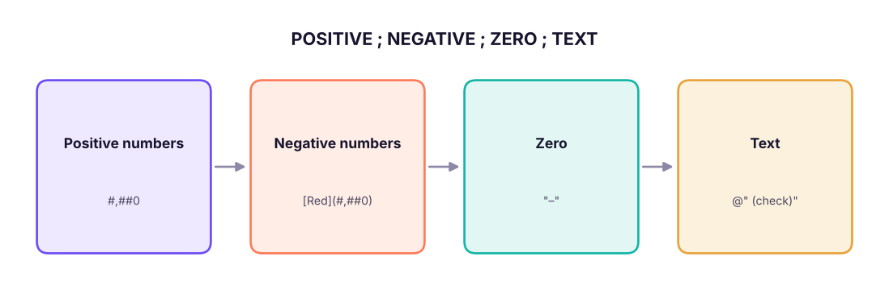
A custom number format has up to four sections separated by semicolons.
Placeholder characters
Code
Meaning
Value 7.5 →
0
Digit, shows a zero if none
000.00 → 007.50
#
Digit, shows nothing if none
#.## → 7.5
?
Digit, shows a space (aligns decimals)
?.?? → 7.5␣
, (in the middle)
Thousands separator
#,##0
, (at the end)
Divide by 1,000 for each comma
#,##0, shows 12,500 as 13
%
Multiply by 100 and add %
0%
"text"
Show literal text
0" units"
@
The cell's text
"Dept: "@
[Red], [Blue], [Color10]
Colour
[Red]-0
[>=1000]
Condition
[>=1000]#,##0,"K";0
Custom formats you will reuse
Each result in column C was produced by Excel's TEXT function with the format code in column B.
XCustom format cookbook
A
B
C
1
Value
Format code
Result
2
12500
#,##0
12,500
3
12500
#,##0,"K"
13K
4
12500
#,##0.0,"K"
12.5K
5
8450000
#,##0.0,,"M"
8.5M
6
-3200
#,##0;(#,##0)
(3,200)
7
0
#,##0;-#,##0;"–"
–
8
45
0" units"
45 units
9
0.0725
0.0%
7.3%
10
7
000
007
11
9876543210
00000 00000
98765 43210
12
1500
[>=1000]#,##0.0,"K";0
1.5K
13
850
[>=1000]#,##0.0,"K";0
850
14
0.25
▲ 0%;▼ 0%
▲ 25%
15
-0.12
▲ 0%;▼ 0%
▼ 12%
C2=TEXT(A2,B2)
Each pattern is copied down/across to the other cells in its column.
TipUp and down arrows in KPIs
▲ 0%;▼ 0% (add [Color10] for green and [Red] for red: [Color10]▲ 0%;[Red]▼ 0%) is the classic format for "change versus last month" cells in dashboards. The arrow and colour change automatically with the sign.
Indian number format: lakhs and crores
Indian reports group digits as 12,34,56,789 (crore, lakh, thousand). If your Windows region is set to English (India), the standard #,##0 already groups this way. Otherwise use a conditional format:
There is no "divide by 1 lakh" comma trick in Excel (each trailing comma divides by 1,000), so for lakhs either divide in a helper column (as above) or use Power BI's display units.
Date and time format codes
Code
Shows (for 27-04-2026 14:05)
d, dd
27
ddd, dddd
Mon, Monday
m, mm
4, 04
mmm, mmmm
Apr, April
yy, yyyy
26, 2026
hh:mm
14:05
hh:mm AM/PM
02:05 PM
[h]:mm
Total hours beyond 24, for timesheets (e.g. 37:30)
"Q" with a formula
Quarter labels need a formula: ="Q"&ROUNDUP(MONTH(A2)/3,0)
Conditional formatting: let insights jump out
Home → Conditional Formatting changes a cell's look based on its value. It is how you turn a wall of numbers into something a manager understands in five seconds.
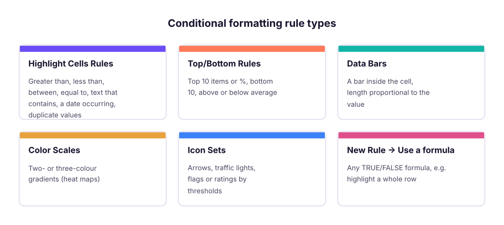
The five families of conditional formatting rules.
Highlight rules and Top/Bottom
In the table below, green marks sales above 1,50,000 and red marks profit below 0 (both "Highlight Cells Rules"):
These visual rules are best seen on real data. Here they are applied to monthly sales from the Superstore dataset:
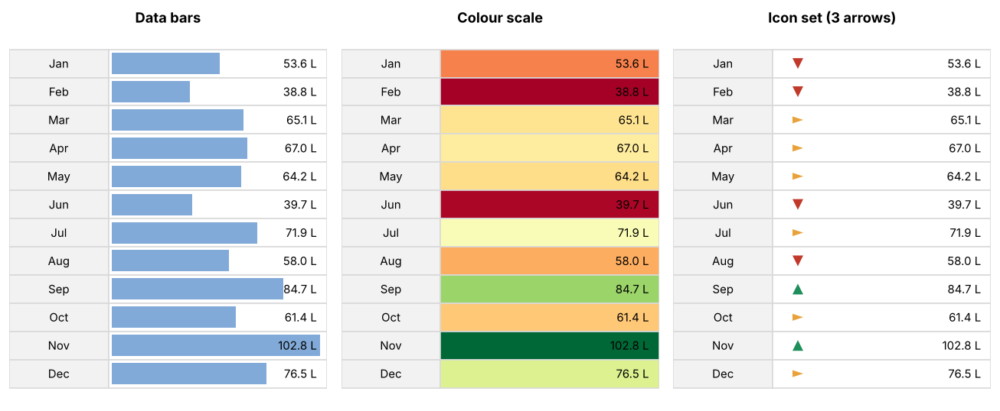
Data bars (left), a green–yellow–red colour scale (middle) and icon sets (right) applied to the same monthly sales.
Rule
When to use
Watch out
Data bars
Compare magnitudes inside a table
Negative values draw leftwards; set a fixed minimum of 0 if needed
Colour scales
Heat maps: sales by region × month, attendance grids
Red/green is hard for colour-blind readers; consider blue–white–orange
Icon sets
Status at a glance: on track, at risk, off track
Default thresholds are percentages of the range (67% / 33%); set them to numbers or percentiles that match your business targets
Under Manage Rules → Edit Rule you can change thresholds, choose "Show Bar Only" or "Show Icon Only", and reverse the icon order.
Custom formula conditional formatting
New Rule → Use a formula to determine which cells to format is the most powerful option. Write a formula for the top-left cell of your selection that returns TRUE for cells you want formatted. Dollar signs matter:
$ before the column ($D2) locks the rule to column D, so every cell in the row checks column D → the whole row is highlighted.
No $ before the row number lets the row change as Excel moves down the selection.
XHighlight whole rows where Department = Finance AND Salary > 1,00,000 — rule: =AND($C2="Finance",$F2>100000)
A
B
C
D
E
F
G
1
Emp ID
Name
Department
City
Join date
Salary
Rating
2
E101
Kavya Iyer
HR
Mumbai
28-02-2016
97,000
4
3
E102
Imran Reddy
Finance
Delhi
14-12-2019
157,000
3
4
E103
Harpreet Kulkarni
Finance
Mumbai
05-10-2024
131,000
4
5
E104
Diya Iyer
HR
Bengaluru
02-01-2024
90,000
4
6
E110
Vikram Joshi
Finance
Chennai
19-10-2022
75,000
5
7
E119
Rohan Das
Finance
Delhi
19-07-2018
97,000
5
Rows E102 and E103 meet both conditions. E110 and E119 are in Finance but earn less than 1,00,000, so they stay white.
More custom-formula recipes
Goal
Select
Formula
Zebra stripes (every other row)
the table
=MOD(ROW(),2)=0
Overdue tasks (due date before today, status not Done)
the table
=AND($E2<TODAY(),$F2<>"Done")
Values above the column average
C2:C100
=C2>AVERAGE($C$2:$C$100)
Duplicate IDs
A2:A100
=COUNTIF($A$2:$A$100,A2)>1
Weekend dates
A2:A100
=WEEKDAY(A2,2)>5
Row of the employee picked in a drop-down (H1)
the table
=$B2=$H$1
Missing values
the table
=ISBLANK(A2) or =A2=""
Top 3 per column
C2:C100
=C2>=LARGE($C$2:$C$100,3)
Step by stepCreate a whole-row highlight
Select the data without the header (for example A2:G21). The active cell must be in row 2.
Home → Conditional Formatting → New Rule → Use a formula to determine which cells to format.
Formula: =AND($C2="Finance",$F2>100000).
Click Format… → Fill → choose a colour → OK.
To edit later: Conditional Formatting → Manage Rules (choose "This Worksheet" to see all rules). Rules higher in the list win; tick Stop If True to prevent lower rules from also applying.
Common mistakesThe three most common conditional-formatting bugs
Wrong anchor: writing the formula for row 1 while the selection starts at row 2 shifts every result by one row.
Missing $: =C2="Finance" (no $) checks a different column for each cell, so only part of the row lights up.
Copying cells copies rules: pasting formatted cells many times creates hundreds of duplicate rules and slows the workbook. Clean up in Manage Rules, or paste values only.
Formatting a report: before and after
A clean report follows a few simple rules:
Right-align numbers, left-align text, and use the same number of decimals in a column.
Use thousands separators; show large values in K/M or lakh/crore with clear labels.
Bold headers and totals only; avoid using many colours.
Use one highlight colour for "needs attention" and keep everything else neutral.
Freeze the header row; make the column widths fit the content.
Add a title, the date range and the data source.
Do it with AIDo it with AI
Ask an assistant: "Write an Excel custom number format that shows values above 1 crore as '1.25 Cr', values above 1 lakh as '4.50 L', and smaller values with Indian comma grouping." Then test the answer with =TEXT(value, "format") on a few numbers before applying it. (A pure format can only scale by thousands, so a good answer will suggest a helper column or Power BI for lakhs and crores.)
Summary
Key takeaways
Formatting changes the display, never the stored value. Round with ROUND when it matters.
Avoid merged cells; use Center Across Selection.
Custom formats have four sections, positive;negative;zero;text, and support colours, conditions, text and scaling with trailing commas.
Conditional formatting families: highlight rules, Top/Bottom, data bars, colour scales and icon sets.
For whole-row highlights use a formula with $ before the column: =$C2="Finance".
Manage Rules shows priority; rule order and Stop If True decide which format wins.
Quick quiz6 questions · tap an answer to check it
1. A cell contains 0.4567 formatted as 0%. What value does =A1*100 return?
Answer: B. The stored value is still 0.4567, so the formula returns 45.67. Formatting only changes the display.
2. Which custom format shows 8,450,000 as 8.5M?
Answer: B. Two trailing commas divide by 1,000,000, and 0.0 shows one decimal.
3. In the format #,##0;[Red](#,##0);"–", how is -2500 shown?
Answer: B. The second section is for negative numbers: red, in brackets, without a minus sign.
4. You want to highlight entire rows where Status (column F) is "Late". Rows start at 2. Which rule is correct?
Answer: B. Locking the column with $ makes every cell in the row test column F; leaving the row free lets each row test itself.
5. What does "Center Across Selection" replace?
Answer: B. It centres text across several cells without merging them, so sorting and selecting still work.
6. Which conditional formatting type is best for a sales heat map of region × month?
Answer: C. Colour scales shade each cell by value, which creates a heat map.
ExerciseDashboard number formats
Write custom formats for: (a) revenue shown in thousands with "K" and no decimals; (b) month-on-month change shown as a green up arrow with one decimal percentage when positive, and a red down arrow when negative; (c) a 6-digit PIN code that must keep leading zeros.
Show solution
(a) #,##0,"K" (b) [Color10]▲ 0.0%;[Red]▼ 0.0%;"–" (c) 000000 (or store the PIN as text).
ExerciseConditional formatting practice
Using employees_small.csv: (1) colour-scale the salary column; (2) add an icon set to rating with green for 5, amber for 3–4 and red for 1–2; (3) highlight the whole row of anyone who joined after 1-Jan-2024.
Show solution
(1) Select F2:F21 → Color Scales → Green–Yellow–Red. (2) Select G2:G21 → Icon Sets → 3 traffic lights → Manage Rules → Edit: green when ≥ 5 (Number), amber when ≥ 3 (Number), otherwise red. (3) Select A2:G21 → New Rule → formula =$E2>DATE(2024,1,1) → choose a fill.
Interview cornerQuestions you may be asked
Q: What is the difference between formatting a number and rounding it?
Formatting changes only how the value looks; the full value is used in calculations. ROUND changes the stored value. Use ROUND when the rounded figure must flow into other calculations, such as invoices.
Q: How would you highlight the top 10% of customers by revenue?
Conditional Formatting → Top/Bottom Rules → Top 10% (change 10 to any value), or a formula rule =C2>=PERCENTILE.INC($C$2:$C$500,0.9) for more control.
Q: Why might a conditional format highlight the wrong rows?
The formula was written for a different starting row than the active cell of the selection, or the $ signs are wrong.
Advanced Excel · Lesson 4
Formulas, Cell References & Aggregate Functions
Write formulas with confidence. Understand operators and their order, relative, absolute and mixed references, and every aggregate function you need, from SUM and COUNTA to SMALL, LARGE, SUMIFS, COUNTIFS, MAXIFS, SUBTOTAL and AGGREGATE.
● Live class 3✦ Excel for Microsoft 365, 2026Beginner⏱ 110 min
By the end of this lesson you can
Explain the difference between a formula and a function and read any function's syntax
Predict how a formula changes when copied, and lock references with $ (F4)
Summarise data with SUM, COUNT, COUNTA, COUNTBLANK, AVERAGE, MIN, MAX, SMALL, LARGE, MEDIAN and MODE
Answer conditional questions with COUNTIF(S), SUMIF(S), AVERAGEIF(S), MAXIFS and MINIFS
Use SUBTOTAL and AGGREGATE for filtered data and data with errors
Formula vs function
DefinitionTwo words people mix up
A formula is any calculation that starts with =. It can use cell references, numbers, operators and functions: =B2*C2, =(B2-C2)/C2, =SUM(B2:B10)*1.18.
A function is a named, ready-made calculation inside a formula: SUM, AVERAGE, IF. A function has a name, brackets and arguments separated by commas.
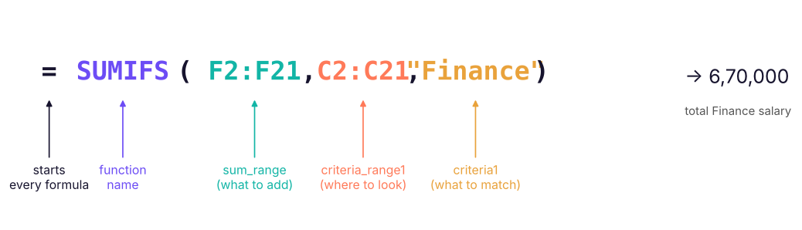
Anatomy of a function call. Arguments in square brackets are optional.
When you type a function name and (, Excel shows a tooltip with its syntax, for example SUMIFS(sum_range, criteria_range1, criteria1, [criteria_range2, criteria2], …). Press Ctrl + A after the bracket to open the Function Arguments dialog, which explains every argument and previews the result.
Operators and order of calculation
Operator
Meaning
Example
Result
+ - * /
Add, subtract, multiply, divide
=10+4*2
18
^
Power
=2^10
1024
%
Percent
=500*18%
90
&
Join text
="Q"&2
Q2
= <> > < >= <=
Comparison, returns TRUE/FALSE
=B2>=100
TRUE or FALSE
:
Range
A1:A10
10 cells
,
Union (inside functions)
=SUM(A1:A3,C1:C3)
Adds both ranges
Excel follows the usual maths order, remembered as BODMAS/PEMDAS: brackets, then ^, then * and /, then + and -, then &, then comparisons.
XOrder of operations
A
B
C
1
Formula
Result
Why
2
=10+4*2
18
Multiply first: 10 + 8
3
=(10+4)*2
28
Brackets first: 14 × 2
4
=2^3^2
64
Excel works left to right: (2^3)^2 = 64
5
=-2^2
4
Negation before power in Excel: (-2)^2 = 4
6
=100*(1+18%)
118
Add 18% GST
B2=10+4*2
B3=(10+4)*2
B4=2^3^2
B5=-2^2
B6=100*(1+18%)
Watch out`-2^2` is 4 in Excel
In maths -2² is −4, but Excel applies the minus sign first. Write =-(2^2) if you mean −4. This catches people in finance formulas.
Cell references: relative, absolute and mixed
When you copy a formula, Excel adjusts its references relative to where you paste it. Usually that is exactly what you want. Sometimes a reference must stay fixed, for example a tax rate in one cell. A $ sign locks the part after it.
Reference
Copy down
Copy right
Name
B2
B3, B4 …
C2, D2 …
Relative
$B$2
stays $B$2
stays $B$2
Absolute
B$2
stays row 2
C$2, D$2 …
Mixed (row locked)
$B2
B3, B4 …
stays column B
Mixed (column locked)
Press F4 while the cursor is on a reference to cycle B2 → $B$2 → B$2 → $B2 → B2.
Absolute reference: one rate for every row
XGST rate in one input cell (G2) — formula in D2 is =B2*C2*$G$2, copied down
A
B
C
D
E
F
G
1
Item
Qty
Price
GST amount
Total
GST rate
2
Notebook
10
45
81.00
531.00
18%
3
Pen pack
25
60
270.00
1,770.00
4
Stapler
4
180
129.60
849.60
D2=B2*C2*$G$2
E2=B2*C2+D2
D3=B3*C3*$G$2
E3=B3*C3+D3
D4=B4*C4*$G$2
E4=B4*C4+D4
The GST rate lives in one input cell (yellow). Because $G$2 is absolute, every copied formula still points to it. Change the rate once and every total updates.
Mixed references: the multiplication table test
A classic interview question: write one formula in B2 that can be copied across and down to fill a multiplication table.
XOne formula, =$A2*B$1, filled across and down
A
B
C
D
E
F
1
×
1
2
3
4
5
2
1
1
2
3
4
5
3
2
2
4
6
8
10
4
3
3
6
9
12
15
5
4
4
8
12
16
20
6
5
5
10
15
20
25
B2=$A2*B$1
C2=$A2*C$1
D2=$A2*D$1
E2=$A2*E$1
F2=$A2*F$1
Each pattern is copied down/across to the other cells in its column.
$A2 always uses column A (the row header) and B$1 always uses row 1 (the column header). The same idea is used for price × discount grids, sales × commission tables, and loan EMI tables.
XThe same table in formula view
Formula view (Ctrl + `)
A
B
C
D
1
×
1
2
3
2
1
=$A2*B$1
=$A2*C$1
=$A2*D$1
3
2
=$A3*B$1
=$A3*C$1
=$A3*D$1
4
3
=$A4*B$1
=$A4*C$1
=$A4*D$1
References to other sheets and workbooks
Reference
Meaning
=Sales!B2
Cell B2 on the sheet named Sales
='Sales 2026'!B2
Quotes are needed when the sheet name has spaces
=SUM(Jan:Mar!B2)
A 3D reference: B2 on every sheet from Jan to Mar
=[Budget.xlsx]Plan!C5
Another workbook (an external link; Data → Edit Links manages them)
Aggregate functions
Aggregate functions turn many values into one number. The examples below use the 20-row employee table stored on a sheet named Emp (columns: A emp_id, B name, C department, D city, E join_date, F salary, G rating).
XAggregate functions on Emp (salary in F2:F21, rating in G2:G21)
Anything not empty (numbers, text, errors, "" from formulas)
Truly empty cells
COUNTBLANK
Empty cells and cells with ""
Everything else
SUM, AVERAGE, MIN, MAX
Numbers
Text and blanks in ranges
MEDIAN
Middle value of sorted numbers
Text and blanks
MODE.SNGL
Most frequent number
Text
SMALL(range,k), LARGE(range,k)
k-th smallest or largest
Text and blanks
TipAVERAGE ignores blanks but not zeros
A blank cell is left out of the average; a zero is counted. If "no data" is stored as 0, your average will be too low. Leave missing values blank, or use AVERAGEIF(range,"<>0").
2026 updateMEDIAN vs AVERAGE in salary data
Salaries are usually skewed by a few high earners, so the median describes a "typical" employee better than the average. You will meet this again in Statistics (ML track, Lesson 1).
Conditional aggregation: the IFS family
These are the most used analysis functions in Excel. They answer questions such as "total sales in the North region for Technology in 2025".
Finance headcount: 7
Total Finance salary: 670,000
Joined 2024 or later: 6
Writing criteria correctly
Criteria
Meaning
"Finance"
Equal to Finance (not case-sensitive)
"<>Finance"
Not equal to Finance
">=4"
Greater than or equal to 4 (operator and number inside quotes)
">="&H1
Compare with the value in H1 (join with &)
">="&DATE(2024,1,1)
Compare with a date
"*pune*"
Contains "pune"
"A*" / "*a"
Starts with A / ends with a
"?????"
Exactly five characters
""
Blank cells
"<>"
Non-blank cells
TipBuild a summary table with one formula
Put departments in A2:A6 and the formula =SUMIFS(Emp!$F$2:$F$21,Emp!$C$2:$C$21,$A2) in B2, then copy down. The $ signs keep the data ranges fixed while $A2 moves to each department. In Microsoft 365 you can produce the department list itself with =UNIQUE(Emp!C2:C21) (Lesson 6).
XDepartment summary built with SUMIFS and COUNTIFS
A
B
C
D
E
1
Department
Headcount
Total salary
Average salary
% of payroll
2
Finance
7
670,000
95,714
33.9%
3
HR
6
576,000
96,000
29.1%
4
IT
1
112,000
112,000
5.7%
5
Operations
2
261,000
130,500
13.2%
6
Sales
4
359,000
89,750
18.1%
7
Total
20
1,978,000
98,900
100.0%
B2=COUNTIFS(Emp!$C$2:$C$21,$A2)
C2=SUMIFS(Emp!$F$2:$F$21,Emp!$C$2:$C$21,$A2)
D2=C2/B2
E2=C2/$C$7
B7=SUM(B2:B6)
C7=SUM(C2:C6)
E7=SUM(E2:E6)
Each pattern is copied down/across to the other cells in its column.
This little table is exactly what a pivot table does (Lesson 8), but with formulas you control every cell, which is useful for fixed report layouts.
SUBTOTAL and AGGREGATE: totals for filtered data
SUM adds every row, including rows hidden by a filter. SUBTOTAL adds only visible rows, so the total changes as you filter.
=SUBTOTAL(function_num, range)
function_num (ignores filtered rows)
101–111 also ignore manually hidden rows
Function
1
101
AVERAGE
2
102
COUNT
3
103
COUNTA
4
104
MAX
5
105
MIN
9
109
SUM
AGGREGATE does the same and can also ignore error values:
=AGGREGATE(9, 6, D2:D100) sums D2:D100 ignoring errors (option 6). =AGGREGATE(14, 6, D2:D100, 2) returns the 2nd largest value ignoring errors (14 = LARGE).
XAGGREGATE ignores the #DIV/0! error that breaks SUM
A
B
1
Value
2
120
3
#DIV/0!
4
80
5
SUM →
#DIV/0!
6
AGGREGATE(9,6,…) →
200
A3=10/0
B5=SUM(A2:A4)
B6=AGGREGATE(9,6,A2:A4)
Common formula errors and how to fix them
Error
Example
Fix
#DIV/0!
=C2/B2 with B2 = 0
=IFERROR(C2/B2,0) or =IF(B2=0,"",C2/B2)
#VALUE!
=A2+B2 where A2 is text
Convert text to numbers; check for spaces
#REF!
Deleted a referenced row
Undo, or rewrite the formula
#NAME?
=SUMIFS(…,Finance) without quotes
Put text criteria in quotes
Circular reference
=SUM(A1:A10) typed in A10
Move the total outside the range
Wrong total after sorting
Mixed relative/absolute references
Lock ranges with $
Formulas → Formula Auditing helps: Trace Precedents draws arrows to the cells a formula uses, Trace Dependents to cells that use it, Show Formulas (Ctrl + `) shows every formula, and Evaluate Formula steps through a calculation (Lesson 11).
Do it with AIDo it with AI
Paste a formula into Copilot or a chat assistant and ask: "Explain this Excel formula step by step and tell me what would make it return an error: =SUMIFS(Sales!$F:$F,Sales!$C:$C,$A2,Sales!$E:$E,">="&$B$1)." Use AI to explain and draft formulas, then check the result on a few rows you can verify by hand.
Summary
Key takeaways
Formula = any calculation starting with =; function = a named calculation such as SUM.
SUMIFS(sum_range, criteria_range, criteria, …) and COUNTIFS answer most business questions.
Criteria with operators go in quotes and join cell values with &: ">="&H1.
SUBTOTAL(109,…) sums only visible rows; AGGREGATE can also ignore errors.
Quick quiz6 questions · tap an answer to check it
1. You copy =B2*$E$1 from C2 to C5. What is the formula in C5?
Answer: B. B2 is relative and moves to B5; $E$1 is absolute and stays.
2. Which formula, typed in B2 and copied across and down, builds a multiplication table with headers in row 1 and column A?
Answer: C. Column A is locked for the row header, and row 1 is locked for the column header.
3. A range contains 10, "abc", blank, 25, TRUE (typed). What does COUNT return?
Answer: A. COUNT counts only numbers in a range: 10 and 25.
4. Which formula totals Sales (D) where Region (B) is "North" AND Category (C) is "Technology"?
Answer: B. SUMIFS takes the sum range first, then pairs of criteria range and criteria.
5. How do you count values in A2:A100 greater than the value in H1?
Answer: C. The operator is text and is joined to the cell value with &.
6. You filter a table to show only Pune. Which total updates to show only Pune's sales?
Answer: B. SUBTOTAL 9/109 ignores rows hidden by a filter.
ExerciseSuperstore questions with formulas
Open superstore_sales.csv in Excel. Using only aggregate and IFS functions, find: (1) total sales; (2) number of order lines in the West region; (3) total profit for Technology in 2025; (4) average discount for Furniture; (5) the largest single order-line sale in the South.
Show solution
Assuming columns: J region, L category, O sales, Q discount, R profit and B order_date (check your own column letters):
(1) =SUM(O:O)
(2) =COUNTIFS(J:J,"West")
(3) =SUMIFS(R:R,L:L,"Technology",B:B,">="&DATE(2025,1,1),B:B,"<="&DATE(2025,12,31))
(4) =AVERAGEIFS(Q:Q,L:L,"Furniture")
(5) =MAXIFS(O:O,J:J,"South")
Check your answers in Python with pandas (Python track, Lesson 22) or with a pivot table (Lesson 8): they must match exactly.
Interview cornerQuestions you may be asked
Q: What is the difference between COUNT, COUNTA and COUNTBLANK?
COUNT counts numeric cells, COUNTA counts every non-empty cell (including text and formulas returning ""), COUNTBLANK counts empty cells and cells containing "".
Q: When would you use a mixed reference?
When a formula is copied in two directions and must keep either the row or the column fixed, for example a price × quantity grid or a commission table: =$A2*B$1.
Q: Why use SUMIFS instead of SUMIF?
SUMIFS supports multiple conditions, has a consistent argument order (sum range first), and works for one condition too, so one pattern covers every case.
Q: How do you total only visible rows after filtering?
Use SUBTOTAL(109, range) or AGGREGATE(9, 5, range); the Table Total Row does this automatically.
Advanced Excel · Lesson 5
Text Functions, Logical Functions & IF
Extract, clean, combine and reformat text with LEFT, RIGHT, MID, LEN, FIND, SEARCH, CONCAT, TEXTJOIN, TEXT and the new TEXTSPLIT/TEXTBEFORE/TEXTAFTER. Then make decisions with AND, OR, NOT, IF, nested IF, IFS, SWITCH and IFERROR.
● Live classes 3–4✦ Excel for Microsoft 365, 2026Beginner⏱ 120 min
By the end of this lesson you can
Extract parts of codes, names and emails with LEFT, RIGHT, MID, FIND and SEARCH
Combine text with &, CONCAT and TEXTJOIN and format numbers inside text with TEXT
Split text with Text to Columns and the TEXTSPLIT, TEXTBEFORE and TEXTAFTER functions
Build conditions with AND, OR, NOT and decisions with IF, nested IF, IFS and SWITCH
Handle errors cleanly with IFERROR and IFNA
Why text functions matter
Real data arrives as text: order IDs like IN-2025-00042, product codes, email addresses, "Last, First" names, addresses and free-text comments. Text functions let you pull out the part you need (the year, the region code, the domain) so you can analyse it.
Measuring and extracting text
Function
What it returns
Example
Result
LEN(text)
Number of characters
=LEN("Pune")
4
LEFT(text, n)
First n characters
=LEFT("IN-2025-00042",2)
IN
RIGHT(text, n)
Last n characters
=RIGHT("IN-2025-00042",5)
00042
MID(text, start, n)
n characters from position start
=MID("IN-2025-00042",4,4)
2025
FIND(find, text, [start])
Position of text (case-sensitive, no wildcards)
=FIND("-","IN-2025-00042")
3
SEARCH(find, text, [start])
Position (not case-sensitive, wildcards allowed)
=SEARCH("pune","PUNE-411001")
1
XExtracting parts of an order ID
A
B
C
D
E
F
1
Order ID
Country =LEFT(A2,2)
Year =MID(A2,4,4)
Order no. =RIGHT(A2,5)
Length
Year as number
2
IN-2025-00042
IN
2025
00042
13
2025
3
IN-2023-01519
IN
2023
01519
13
2023
4
IN-2024-02988
IN
2024
02988
13
2024
B2=LEFT(A2,2)
C2=MID(A2,4,4)
D2=RIGHT(A2,5)
E2=LEN(A2)
F2=VALUE(MID(A2,4,4))
Each pattern is copied down/across to the other cells in its column.
Text functions always return text. MID(A2,4,4) returns the text "2025", not the number 2025. Wrap with VALUE() (or multiply by 1) to get a number you can compare or add.
When the position changes: FIND + MID
Codes rarely have fixed lengths. Combine FIND with LEFT, MID and RIGHT to cut at a delimiter wherever it is.
XSplitting emails at the @ sign
A
B
C
D
1
Email
Position of @
User name
Domain
2
kavya.iyer@abc.in
11
kavya.iyer
abc.in
3
imran@datacorp.com
6
imran
datacorp.com
4
harpreet.k@skillnavora.in
11
harpreet.k
skillnavora.in
B2=FIND("@",A2)
C2=LEFT(A2,FIND("@",A2)-1)
D2=MID(A2,FIND("@",A2)+1,100)
Each pattern is copied down/across to the other cells in its column.
Using a large number like 100 in MID simply means "take everything to the end". Alternatively use =RIGHT(A2,LEN(A2)-FIND("@",A2)).
XFirst and last name from 'First Last'
A
B
C
D
1
Full name
First name
Last name
Initials
2
Kavya Iyer
Kavya
Iyer
KI
3
Harpreet Kulkarni
Harpreet
Kulkarni
HK
4
Aarav Kulkarni
Aarav
Kulkarni
AK
B2=LEFT(A2,FIND(" ",A2)-1)
C2=MID(A2,FIND(" ",A2)+1,50)
D2=LEFT(A2,1)&LEFT(C2,1)
Each pattern is copied down/across to the other cells in its column.
FIND vs SEARCH
FIND
SEARCH
Case-sensitive
Yes: FIND("a","Apple") → #VALUE!
No: SEARCH("a","Apple") → 1
Wildcards *?
No
Yes
Not found
#VALUE!
#VALUE!
A common pattern to test whether text contains a word: =ISNUMBER(SEARCH("chair",B2)) returns TRUE or FALSE.
Changing and cleaning text
Function
Purpose
Example → Result
UPPER, LOWER, PROPER
Change case
=PROPER("new delhi") → New Delhi
TRIM
Remove extra spaces
=TRIM(" a b ") → a b
CLEAN
Remove non-printing characters
Line breaks from web data
SUBSTITUTE(text, old, new, [n])
Replace by content
=SUBSTITUTE("2025-04-27","-","/") → 2025/04/27
REPLACE(text, start, n, new)
Replace by position
=REPLACE("E101",1,1,"EMP") → EMP101
REPT(text, n)
Repeat text
=REPT("★",4) → ★★★★
EXACT(a, b)
Case-sensitive comparison
=EXACT("abc","ABC") → FALSE
TipCount how many times a character appears
=LEN(A2)-LEN(SUBSTITUTE(A2,",","")) counts commas in A2 (the length difference after removing them). Add 1 to count items in a comma-separated list.
Joining text
XThree ways to combine text
A
B
C
D
E
F
1
First
Last
City
With &
CONCAT
TEXTJOIN
2
Kavya
Iyer
Mumbai
Kavya Iyer (Mumbai)
Kavya Iyer
Kavya, Iyer, Mumbai
3
Imran
Delhi
Imran (Delhi)
Imran
Imran, Delhi
D2=A2&" "&B2&" ("&C2&")"
E2=CONCAT(A2," ",B2)
F2=TEXTJOIN(", ",TRUE,A2:C2)
D3=A3&" "&B3&" ("&C3&")"
E3=CONCAT(A3," ",B3)
F3=TEXTJOIN(", ",TRUE,A3:C3)
& is the quickest way to join a few pieces.
CONCAT joins ranges as well as single cells (it replaces the older CONCATENATE).
TEXTJOIN(delimiter, ignore_empty, …) puts a separator between items and can skip blanks, which is why row 3 shows "Imran, Delhi" without a double comma.
Numbers and dates inside text: TEXT
Joining a number or date directly shows its raw value: ="Sales: "&A2 gives Sales: 1234567.891, and a date shows as 46139. Use TEXT(value, format) to control how it appears.
XTEXT() inside labels
A
B
1
Value
Label formula result
2
1,234,568
Revenue: ₹1,234,568
3
27-04-2026
Report date: 27 Apr 2026
4
0.1834
Growth: 18.3%
5
27-04-2026
Day: Monday
B2="Revenue: ₹"&TEXT(A2,"#,##0")
B3="Report date: "&TEXT(A3,"dd mmm yyyy")
B4="Growth: "&TEXT(A4,"0.0%")
B5="Day: "&TEXT(A5,"dddd")
Splitting text
Text to Columns (Lesson 2) splits once into static values. Microsoft 365 adds formula versions that update automatically:
Function
Example
Result
TEXTBEFORE(text, delimiter, [instance])
=TEXTBEFORE("kavya.iyer@abc.in","@")
kavya.iyer
TEXTAFTER(text, delimiter, [instance])
=TEXTAFTER("IN-2025-00042","-",-1)
00042 (−1 = last hyphen)
TEXTSPLIT(text, col_delim, [row_delim])
=TEXTSPLIT("North,South,East",",")
spills North / South / East across three cells
XTEXTSPLIT spills into neighbouring cells (Microsoft 365)
A
B
C
D
E
1
Input
2
IN-2025-00042
IN
3
Furniture
Chairs
Apex Chair 412
4
Furniture > Chairs > Apex Chair 412
B2=TEXTSPLIT(A2,"-")
A4=TEXTJOIN(" > ",TRUE,A3:C3)
The blue cells are a spill range: one formula fills several cells. If any of those cells already contain something, the formula shows #SPILL! (Lesson 6).
2026 updateRegular expressions in Excel (2025)
Microsoft 365 has added REGEXTEST, REGEXEXTRACT and REGEXREPLACE. For example =REGEXEXTRACT(A2,"\d{6}") pulls a 6-digit PIN code out of an address, and =REGEXTEST(A2,"^[\w.]+@[\w.]+\.\w+$") checks that an email looks valid. They are covered with Python regex in the Python track.
Logical functions: TRUE or FALSE
Comparisons such as =B2>100 return TRUE or FALSE. Logical functions combine them:
Function
Returns TRUE when
Example
AND(c1, c2, …)
All conditions are TRUE
=AND(B2>=4, C2="Sales")
OR(c1, c2, …)
At least one condition is TRUE
=OR(D2="Delhi", D2="Mumbai")
NOT(c)
The condition is FALSE
=NOT(E2="Done")
XOR(c1, c2)
An odd number of conditions are TRUE
Rarely needed
XAND, OR and NOT on employee data
A
B
C
D
E
F
G
H
1
Name
Department
City
Rating
Salary
Sales & rating≥4
Metro city
Not HR
2
Kavya Iyer
HR
Mumbai
4
97000
FALSE
TRUE
FALSE
3
Isha Mehta
Sales
Delhi
3
57000
FALSE
TRUE
TRUE
4
Aadhya Nair
Sales
Bengaluru
5
45000
TRUE
FALSE
TRUE
5
Krishna Khan
Sales
Mumbai
3
156000
FALSE
TRUE
TRUE
F2=AND(B2="Sales",D2>=4)
G2=OR(C2="Delhi",C2="Mumbai")
H2=NOT(B2="HR")
Each pattern is copied down/across to the other cells in its column.
TipTRUE = 1, FALSE = 0
In arithmetic Excel treats TRUE as 1 and FALSE as 0. =SUM(--(D2:D21>=4)) counts ratings of 4 or more (the double minus converts TRUE/FALSE to 1/0). This trick powers SUMPRODUCT in Lesson 6.
IF: making decisions
=IF(logical_test, value_if_true, value_if_false)
IF checks a condition and returns one of two results.
XIF in practice
A
B
C
D
E
F
1
Name
Salary
Rating
Band
Bonus (10% if rating ≥ 4)
Pass/Fail target 80k
2
Kavya Iyer
97000
4
Standard
9,700
Pass
3
Imran Reddy
157000
3
High
0
Pass
4
Isha Mehta
57000
3
Standard
0
Fail
5
Vikram Joshi
75000
5
Standard
7,500
Fail
D2=IF(B2>=100000,"High","Standard")
E2=IF(C2>=4,B2*10%,0)
F2=IF(B2>=80000,"Pass","Fail")
Each pattern is copied down/across to the other cells in its column.
IF can return text, numbers, another formula's result, or "" (an empty-looking cell).
Combining IF with AND and OR
XIF + AND / OR
A
B
C
D
E
F
1
Name
Dept
Rating
Years
Promotion: rating ≥4 AND years ≥3
Review: rating ≤2 OR years <1
2
Kavya Iyer
HR
4
10
Eligible
OK
3
Saanvi Rao
HR
4
1
Not yet
OK
4
Aarav Kulkarni
HR
2
1
Not yet
Review
5
Neha Menon
Sales
3
0
Not yet
Review
E2=IF(AND(C2>=4,D2>=3),"Eligible","Not yet")
F2=IF(OR(C2<=2,D2<1),"Review","OK")
Each pattern is copied down/across to the other cells in its column.
Nested IF vs IFS
For more than two outcomes, you can put an IF inside another IF (nested IF), or use IFS, which is easier to read.
XGrading marks: nested IF and IFS give the same result
Each pattern is copied down/across to the other cells in its column.
Common mistakesOrder matters in nested IF and IFS
Excel stops at the first TRUE condition. If you test A2>=60 first, a mark of 92 returns "C". Always test from the highest threshold to the lowest (or lowest to highest with <). In IFS, end with TRUE, "default" so values that match nothing do not return #N/A.
SWITCH: matching exact values
When you compare one value against a list of exact matches, SWITCH is cleaner than nested IFs.
For long mappings, a lookup table with XLOOKUP (Lesson 7) is better than a long formula, because the mapping can be edited without touching formulas.
Handling errors: IFERROR and IFNA
XIFERROR replaces any error with a value you choose
A
B
C
D
1
Sales
Orders
Average order
With IFERROR
2
120000
40
3,000
3,000
3
0
0
#DIV/0!
0
4
95000
25
3,800
3,800
C2=A2/B2
D2=IFERROR(A2/B2,0)
C3=A3/B3
D3=IFERROR(A3/B3,0)
C4=A4/B4
D4=IFERROR(A4/B4,0)
IFERROR(value, value_if_error) catches every error type.
IFNA(value, value_if_na) catches only #N/A, typically from lookups, so real problems such as #REF! stay visible.
Watch outDo not hide problems
Wrapping every formula in IFERROR can hide genuine mistakes (a deleted column, a typo). Use it where an error is expected and meaningful (division by zero, value not found), and prefer IFNA for lookups.
Case: building columns for the Superstore data
Here is how analysts typically enrich the Superstore order table with text and logical formulas before analysis. The same logic in pandas gives us the real results on all 6,323 rows:
The crosstab already tells a business story: almost every order-line with a discount above 20% makes a loss. You will build this same view as a pivot table in Lesson 8.
New column
Excel formula (row 2)
Order year
=VALUE(MID(B2,4,4))
Brand
=TEXTBEFORE(N2," ") or =LEFT(N2,FIND(" ",N2)-1)
Profit flag
=IF(S2<0,"Loss","Profit")
Discount band
=IFS(Q2=0,"No discount",Q2<=0.2,"Up to 20%",TRUE,"Above 20%")
Do it with AIDo it with AI
Prompt: "Column B has order IDs like IN-2025-00042. Write an Excel formula to extract the year as a number, and another to flag orders where discount (Q) is above 20% and profit (S) is negative as 'Review'. Explain each part." Expected answer: =VALUE(MID(B2,4,4)) and =IF(AND(Q2>0.2,S2<0),"Review","").
Summary
Key takeaways
LEFT, RIGHT, MID extract text; FIND/SEARCH locate a character so you can cut at a delimiter.
Text functions return text: wrap with VALUE() to get numbers.
Join with &, CONCAT or TEXTJOIN (which can skip blanks); format numbers inside labels with TEXT.
TEXTSPLIT, TEXTBEFORE and TEXTAFTER split text with formulas that update.
AND needs all conditions, OR needs any; TRUE counts as 1 in arithmetic.
Use IFS (with a final TRUE) instead of deep nested IFs; order conditions from strictest to loosest.
Use IFERROR for expected errors and IFNA for lookups.
Quick quiz6 questions · tap an answer to check it
1. What does =MID("SKU-7781-BLU",5,4) return?
Answer: B. MID starts at position 5 ("7") and takes 4 characters: 7781.
2. A2 contains ravi.verma@xyz.com. Which formula returns ravi.verma?
Answer: A. FIND returns 11 (the @ position); take 10 characters from the left.
3. Which function joins A2:D2 with ", " and skips empty cells?
Answer: B. TEXTJOIN's second argument TRUE ignores empty cells.
4.=IF(A2>=60,"C",IF(A2>=75,"B","A")) is used to grade a mark of 85. What is the result?
Answer: A. The first test (85 >= 60) is TRUE, so "C" is returned immediately. The conditions are in the wrong order.
5. Why end an IFS formula with TRUE,"Other"?
Answer: B. TRUE always matches, so it acts as the "else" branch.
6. What does ="Total: "&TEXT(1234.5,"#,##0") return?
Answer: B. TEXT formats the number with separators and no decimals, rounding 1234.5 to 1,235.
ExerciseProduct codes
Codes look like FUR-CH-10001234 (category-subcategory-number). Write formulas for: (a) the category code; (b) the sub-category code; (c) the number as a value; (d) a flag "Furniture" when the category is FUR, otherwise "Other".
Show solution
(a) =LEFT(A2,3) or =TEXTBEFORE(A2,"-")
(b) =MID(A2,5,2) or =TEXTBEFORE(TEXTAFTER(A2,"-"),"-")
(c) =VALUE(RIGHT(A2,8)) or =VALUE(TEXTAFTER(A2,"-",-1))
(d) =IF(LEFT(A2,3)="FUR","Furniture","Other")
ExerciseCommission rules
Sales reps get: 10% commission if sales ≥ 5,00,000; 7% if ≥ 3,00,000; 4% if ≥ 1,00,000; otherwise 0. Reps in the "Trainee" grade get half. Write one formula (sales in B2, grade in C2).
Q: Difference between FIND and SEARCH?
FIND is case-sensitive and does not allow wildcards; SEARCH is not case-sensitive and supports * and ?. Both return #VALUE! when the text is not found.
Q: How would you extract the domain from an email address?=MID(A2,FIND("@",A2)+1,LEN(A2)) or, in Microsoft 365, =TEXTAFTER(A2,"@").
Q: Nested IF or IFS?
IFS for readability when testing several conditions in order; SWITCH for exact matches of one value; a lookup table when the mapping is long or changes often.
Advanced Excel · Lesson 6
Sorting, Filtering & Dynamic Arrays
Organise data with single and multi-level sorts and custom orders, find what matters with AutoFilter and Advanced Filter, and then let formulas do it for you with the dynamic array functions UNIQUE, SORT, SORTBY, FILTER and SEQUENCE, plus the power tool SUMPRODUCT.
● Live class 4✦ Excel for Microsoft 365, 2026Beginner–Intermediate⏱ 110 min
By the end of this lesson you can
Sort by one or many levels, by custom lists, by colour and left to right
Filter text, numbers and dates, and use Advanced Filter with AND/OR criteria ranges
Explain spill ranges, the
Build live lists with UNIQUE, SORT, SORTBY, FILTER and SEQUENCE
Answer multi-condition questions with SUMPRODUCT
The sample table
We will use this small sales table (sheet Reps, range A1:F9) so every result is easy to check by hand. Revenue is =D2*E2.
XReps: sample sales table
A
B
C
D
E
F
1
Rep
Region
Product
Units
Price
Revenue
2
Asha
North
Laptop
5
55,000
275,000
3
Ravi
West
Phone
12
18,000
216,000
4
Meera
South
Laptop
3
55,000
165,000
5
Kabir
North
Tablet
8
25,000
200,000
6
Zoya
East
Phone
15
18,000
270,000
7
Farhan
West
Laptop
4
55,000
220,000
8
Neha
South
Tablet
10
25,000
250,000
9
Rohan
North
Phone
9
18,000
162,000
F2=D2*E2
Each pattern is copied down/across to the other cells in its column.
Sorting
Quick sort
Click any cell in a column and use Data → Sort A to Z or Sort Z to A (or Home → Sort & Filter). Excel detects the table around the cell and keeps each row together.
Watch outNever sort a single selected column
If you select only one column and sort, Excel asks whether to "expand the selection". Choosing "Continue with the current selection" sorts that column alone and scrambles your data: names no longer match their revenue. Always click a single cell inside the table, or select the whole table.
Multi-level (level-wise) sort
Data → Sort opens the Sort dialog, where you add levels. Excel sorts by the first level, then breaks ties with the next.
The Sort dialog with two levels: Region A to Z, then Revenue largest to smallest.
XResult: Region A→Z, then Revenue high→low
A
B
C
D
1
Rep
Region
Product
Revenue
2
Zoya
East
Phone
270,000
3
Asha
North
Laptop
275,000
4
Kabir
North
Tablet
200,000
5
Rohan
North
Phone
162,000
6
Neha
South
Tablet
250,000
7
Meera
South
Laptop
165,000
8
Farhan
West
Laptop
220,000
9
Ravi
West
Phone
216,000
Other sort options
Option
Where
Example
Custom list
Order → Custom List
Sort months Jan, Feb, Mar instead of alphabetically; sort sizes S, M, L, XL; sort priority High, Medium, Low
Sort by colour
Sort On → Cell Color / Font Color / Conditional Formatting Icon
Put all red-flagged rows on top
Left to right
Options → Sort left to right
Reorder columns by a header row
Case sensitive
Options
Rarely needed
Random order
Add a column =RAND() and sort by it
Draw a random sample
TipKeep the original order
Before sorting raw data, add an Index column with 1, 2, 3 … (type 1 and 2, double-click the fill handle). You can always sort by Index to get back to the original order.
Filtering
AutoFilter
Click inside the data and press Ctrl + Shift + L (Data → Filter). Every header gets a drop-down arrow.
Filter type
Options
Text filters
Equals, does not equal, begins with, ends with, contains, does not contain, custom (with * and ?)
Number filters
Greater than, between, Top 10 (items or percent), above/below average
Date filters
Today, this week, last month, next quarter, year to date, between, and grouped tick-boxes by year → month → day
By colour
Filter by cell colour, font colour or icon
Search box
Type part of a value to tick only matching items
Filters on several columns combine with AND: Region = North and Product = Laptop. Within one column, ticking several items is OR: North or South.
TipFiltered totals
When you filter, the status bar shows "8 of 6,323 records found". Use SUBTOTAL(109, …) (Lesson 4) or the Table Total Row for totals that follow the filter. To copy only the visible rows, select them, press Alt + ; (visible cells only), then copy.
Here is the same idea on the full Superstore file: filter to Technology orders in the West with a discount above 20%.
Python
import pandas as pd
s = pd.read_csv("superstore_sales.csv")
f = s[(s.category == "Technology") & (s.region == "West") & (s.discount > 0.2)]
print(f"{len(f)} of {len(s):,} records found | visible sales total: {f.sales.sum():,.0f} | visible profit total: {f.profit.sum():,.0f}")
f[["order_id", "city", "sub_category", "sales", "discount", "profit"]].head(5)
Output
36 of 6,323 records found | visible sales total: 1,725,761 | visible profit total: -323,079
order_id
city
sub_category
sales
discount
profit
14
IN-2023-00007
Mumbai
Phones
23,904
0.4
-4,153.37
37
IN-2023-00021
Ahmedabad
Accessories
2,821
0.3
-281.53
76
IN-2023-00037
Ahmedabad
Accessories
4,668
0.4
-1,569.18
77
IN-2023-00038
Ahmedabad
Copiers
53,082
0.4
-11,596.45
134
IN-2023-00066
Pune
Machines
22,155
0.3
-4,687.77
5 rows × 6 columns
Advanced Filter: complex AND/OR in one go
Data → Advanced filters with a criteria range: a small table with the same headers as your data.
Conditions on the same row are combined with AND.
Conditions on different rows are combined with OR.
XCriteria range: (North AND Revenue > 1,80,000) OR (Product = Phone)
A
B
C
1
Region
Product
Revenue
2
North
>180000
3
Phone
Rows that match: Asha (North, 2,75,000), Kabir (North, 2,00,000), and every Phone row: Ravi, Zoya and Rohan. Rohan is in the North but has only 1,62,000; he still appears because he sells phones.
Step by stepRun an Advanced Filter
Type the criteria range above your data or on another sheet (headers must match exactly).
Click inside the data → Data → Advanced.
List range: your data. Criteria range: the criteria table including headers.
Choose Copy to another location and pick an output cell to keep the original intact.
Tick Unique records only to get a list without duplicates (a quick alternative to Remove Duplicates).
Advanced Filter results are static: run it again after the data changes. For live results use FILTER.
Dynamic arrays: formulas that spill
In Microsoft 365, a formula can return many values. They spill into the cells below and to the right. The whole result is called the spill range; it has a blue border, and you can refer to it with the # operator.
One formula in H2 spills into H2:H5. Refer to the whole result with H2#.
Watch out#SPILL!
If any cell in the area the result needs is not empty, the formula returns #SPILL!. Click the error to see which cell is blocking, and clear it. Spilling formulas also cannot be used inside an Excel Table; put them next to the table instead.
=UNIQUE(B2:C9) returns unique combinations of Region and Product.
=UNIQUE(B2:B9,,TRUE) returns values that appear exactly once: East.
SORT and SORTBY
=SORT(array, [sort_index], [sort_order], [by_col]) sorts by a column position in the array. -1 means descending.
=SORTBY(array, by_array1, [order1], …) sorts by other ranges, which do not have to be shown.
XTop performers: =SORT(A2:F9,6,-1) and =SORTBY(A2:A9,F2:F9,-1)
A
B
C
D
E
F
G
H
1
Rep
Region
Product
Units
Price
Revenue
SORTBY names
2
Asha
North
Laptop
5
55000
275000
Asha
3
Zoya
East
Phone
15
18000
270000
Zoya
4
Neha
South
Tablet
10
25000
250000
Neha
5
Farhan
West
Laptop
4
55000
220000
Farhan
6
Ravi
West
Phone
12
18000
216000
Ravi
7
Kabir
North
Tablet
8
25000
200000
Kabir
8
Meera
South
Laptop
3
55000
165000
Meera
9
Rohan
North
Phone
9
18000
162000
Rohan
A2=SORT(Reps!A2:F9,6,-1)
H2=SORTBY(Reps!A2:A9,Reps!F2:F9,-1)
Combine functions: =SORT(UNIQUE(B2:B9)) gives the regions alphabetically: East, North, South, West. =TAKE(SORT(A2:F9,6,-1),3) returns only the top 3 rows.
FILTER
=FILTER(array, include, [if_empty])
The include argument is a TRUE/FALSE test with one result per row. Combine conditions with * for AND and + for OR.
Put a Data Validation drop-down of regions in H1 (source =SORT(UNIQUE(B2:B9))), then =FILTER(A2:F9,B2:B9=H1) below it. Choosing a region instantly shows its reps. This is the formula version of a slicer.
SEQUENCE and friends
Function
Example
Result
SEQUENCE(rows, [cols], [start], [step])
=SEQUENCE(5)
1, 2, 3, 4, 5 down a column
=SEQUENCE(1,12,1,1)
1 to 12 across a row
=SEQUENCE(7,1,DATE(2026,4,27),1)
Seven consecutive dates
RANDARRAY(rows, cols, min, max, integer)
=RANDARRAY(5,1,1,100,TRUE)
Five random whole numbers
TAKE(array, rows) / DROP(array, rows)
=TAKE(SORT(F2:F9,,-1),3)
Top 3 revenues
VSTACK / HSTACK
=VSTACK(Jan!A2:C50,Feb!A2:C50)
Stack two ranges into one
CHOOSECOLS(array, 1, 6)
Only columns 1 and 6
GROUPBY(row_fields, values, function)
=GROUPBY(B2:B9,F2:F9,SUM)
A summary by region, like a pivot table, in one formula (newer Microsoft 365)
SUMPRODUCT: the original array function
SUMPRODUCT multiplies arrays element by element and adds the results. It works in every version of Excel and is the classic way to do multi-condition sums before SUMIFS existed, plus things SUMIFS cannot do.
Check: Phone units in West or East = Ravi 12 + Zoya 15 = 27. Rows with more than 8 units: Ravi, Zoya, Neha, Rohan = 4.
NoteWhy the double minus `--`?
(D2:D9>8) produces TRUE/FALSE values. SUMPRODUCT ignores logical values unless they are converted to numbers. -- (minus minus) turns TRUE into 1 and FALSE into 0. Multiplying by another array (*) also converts them, which is why the other formulas do not need it.
Putting it together: a self-updating region summary
XRegion summary with UNIQUE + SUMIFS + SORT
A
B
C
1
Region =SORT(UNIQUE(B2:B9))
Revenue =SUMIFS(F2:F9,B2:B9,H2#)
Share
2
East
270,000
15.4%
3
North
637,000
36.2%
4
South
415,000
23.6%
5
West
436,000
24.8%
A2=SORT(UNIQUE(Reps!B2:B9))
B2=SUMIFS(Reps!F2:F9,Reps!B2:B9,"East")
C2=B2/SUM(Reps!F2:F9)
In Microsoft 365 the second column is a single formula, =SUMIFS(F2:F9,B2:B9,H2#): because H2# refers to the whole spilled list, SUMIFS spills one total per region. Add a new region to the data and the summary grows automatically.
Click one cell inside the table before sorting; use the Sort dialog for multi-level, custom-list and colour sorts.
AutoFilter: AND across columns, OR within a column. Advanced Filter: AND on one row, OR across rows of a criteria range.
Dynamic arrays spill; refer to the result with #; clear blocking cells to fix #SPILL!.
UNIQUE, SORT, SORTBY, FILTER, SEQUENCE, TAKE, VSTACK, GROUPBY replace many manual steps with live formulas.
In FILTER and SUMPRODUCT, * means AND and + means OR.
SUMPRODUCT handles weighted sums and complex conditions in any Excel version.
Quick quiz6 questions · tap an answer to check it
1. You select only the Revenue column and sort it, choosing "Continue with the current selection". What happens?
Answer: B. Sorting a single column separates it from the rest of the row. Always sort the whole table.
2. In an Advanced Filter criteria range, two conditions on the same row mean:
Answer: A. Same row = AND; different rows = OR.
3.=FILTER(A2:A9,(B2:B9="North")+(C2:C9="Phone")) returns reps who are:
Answer: B. Adding conditions works as OR.
4. A formula returns #SPILL!. What is the most likely cause?
Answer: B. Dynamic arrays need empty cells to spill into.
5. What does =SUMPRODUCT(--(D2:D9>8)) calculate?
Answer: B.-- turns TRUE/FALSE into 1/0, and SUMPRODUCT adds them up: a count.
6. Which formula lists each region once, sorted A to Z?
Answer: B. UNIQUE removes duplicates and SORT orders the result.
ExerciseSuperstore with dynamic arrays
In a copy of superstore_sales.csv (as a Table named S): (1) list the distinct sub-categories, sorted; (2) show all orders from Kochi with profit below zero; (3) show the 5 largest order lines by sales (order ID, city, sales); (4) count distinct customers.
Show solution
(1) =SORT(UNIQUE(S[sub_category]))
(2) =FILTER(S,(S[city]="Kochi")*(S[profit]<0),"None")
(3) =TAKE(SORTBY(CHOOSECOLS(S,2,9,16),S[sales],-1),5) (check the column numbers in your file: here 2 = order_id, 9 = city, 16 = sales)
(4) =COUNTA(UNIQUE(S[customer_id]))
Interview cornerQuestions you may be asked
Q: How would you get a list of unique values in Excel?UNIQUE in Microsoft 365; otherwise Remove Duplicates on a copy, Advanced Filter with "Unique records only", or a pivot table.
Q: Explain AND/OR logic in FILTER or SUMPRODUCT.
Each condition becomes an array of TRUE/FALSE. Multiplying arrays gives 1 only when all are TRUE (AND); adding gives at least 1 when any is TRUE (OR).
Q: How do you sort by a custom order such as High, Medium, Low?
Sort dialog → Order → Custom List, and add the list; or use SORTBY with MATCH(range,{"High","Medium","Low"},0) as the sort key.
Advanced Excel · Lesson 7
Lookup Functions: VLOOKUP, XLOOKUP and INDEX-MATCH
Bring data together from different tables. Master VLOOKUP and HLOOKUP (exact and approximate match), the modern XLOOKUP, the flexible INDEX + MATCH combination (including two-way and reverse lookups), CHOOSE, and how to troubleshoot
● Live classes 4–5✦ Excel for Microsoft 365, 2026Intermediate⏱ 120 min
By the end of this lesson you can
Explain why lookups are the Excel equivalent of a SQL join
Use VLOOKUP and HLOOKUP with exact and approximate match, and know their limits
Use XLOOKUP for left lookups, default values, last-match search and multiple return columns
Combine INDEX and MATCH for reverse (left) and two-way (matrix) lookups
Use CHOOSE, and fix the common causes of
Why lookups matter
Business data is split across tables: orders in one, products in another, customers in a third. A lookup fetches a value from one table using a key that both tables share, such as a product ID or employee ID.
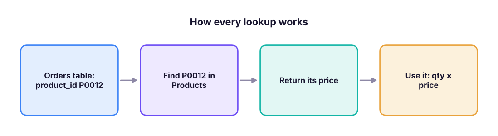
A lookup takes a key from one table, finds it in another table, and returns a value from the same row.
TipYou are already learning SQL joins
A lookup is a left join for one column at a time: keep every row of the main table and bring in matching information from the other table. You will see the same idea as JOIN in SQL (SQL Lesson 8), merge() in pandas, and relationships in Power BI.
We will use this lookup table on a sheet called Prod:
table_array: the table to search; the key must be in its first column.
col_index_num: which column of that table to return (1 = first column).
range_lookup: FALSE (or 0) for an exact match. Use TRUE only for approximate matching on sorted bands.
XOrder lines looking up product details with VLOOKUP
A
B
C
D
E
F
1
Order
Product ID
Qty
Product =VLOOKUP(B2,Prod!$A$2:$E$7,2,FALSE)
Price
Amount
2
1001
P103
2
Laser Printer
12,900
25,800
3
1002
P101
6
Office Chair
4,500
27,000
4
1003
P105
1
Smartphone
21,999
21,999
5
1004
P104
20
Notebook Pack
240
4,800
6
1005
P109
3
#N/A
#N/A
#N/A
D2=VLOOKUP(B2,Prod!$A$2:$E$7,2,FALSE)
F2=C2*E2
Each pattern is copied down/across to the other cells in its column.
Row 6 shows #N/A because P109 does not exist in the product table. That is the correct answer: the key is not there.
Common mistakesThe four classic VLOOKUP mistakes
Forgetting FALSE: the default is approximate match, which silently returns a wrong row for unsorted data.
Not locking the table: A2:E7 copied down becomes A3:E8, so the last rows are missed. Use $A$2:$E$7 or a Table name.
Hard-coded column numbers: inserting a column inside the table changes which column 4 means. Use MATCH for the column number, or XLOOKUP.
Key not in the first column: VLOOKUP cannot look to the left (use INDEX + MATCH or XLOOKUP).
Approximate match: bands and slabs
With TRUE, VLOOKUP finds the largest value less than or equal to the lookup value. The first column must be sorted ascending. This is perfect for tax slabs, commission tiers, discount bands and grades.
XApproximate match for commission tiers
A
B
C
D
E
F
G
1
Sales from
Commission
Rep
Sales
Rate
Commission
2
0
0%
Asha
85,000
0%
0
3
100000
3%
Ravi
240,000
3%
7,200
4
250000
5%
Meera
250,000
5%
12,500
5
500000
7%
Kabir
610,000
7%
42,700
6
1000000
10%
Zoya
1,200,000
10%
120,000
F2=VLOOKUP(E2,$A$2:$B$6,2,TRUE)
G2=E2*F2
Each pattern is copied down/across to the other cells in its column.
Ravi's 2,40,000 falls between 1,00,000 and 2,50,000, so he gets the 1,00,000 row: 3%. Meera's 2,50,000 matches the 2,50,000 row exactly: 5%.
HLOOKUP
HLOOKUP is VLOOKUP turned sideways: it searches the first row and returns a value from a row below. Use it when data runs across columns (for example months as headers).
XHLOOKUP across a horizontal table
A
B
C
D
E
F
G
H
1
Month
Jan
Feb
Mar
Apr
Find month
Mar
2
Target
120
130
145
150
Target →
145
3
Actual
118
136
139
162
Actual →
139
H2=HLOOKUP(H1,$A$1:$E$3,2,FALSE)
H3=HLOOKUP(H1,$A$1:$E$3,3,FALSE)
XLOOKUP: the modern lookup (Microsoft 365 / Excel 2021+)
The fourth row returns three columns at once: the result spills across C5:E5.
XLOOKUP for bands (no sorting needed)
match_mode = -1 returns the exact match or the next smaller item, like VLOOKUP's TRUE, but the table does not need to be sorted:
=XLOOKUP(E2, $A$2:$A$6, $B$2:$B$6, , -1) gives the same commission rates as the approximate VLOOKUP above.
TipXMATCH
XMATCH is the modern version of MATCH with the same match and search modes as XLOOKUP. =XMATCH("P105",Prod!A2:A7) → 5.
INDEX and MATCH
Before XLOOKUP, professionals used INDEX + MATCH, and you will still see it everywhere. It works in every Excel version and is very flexible.
=INDEX(array, row_num, [col_num]) returns the value at a position.
=MATCH(lookup_value, lookup_array, [match_type]) returns the position of a value. Use 0 for exact match.
XINDEX returns a value at a position; MATCH returns the position of a value
A
B
C
D
E
F
1
State
City
Population 2011 (mn)
Formula
Result
2
Maharashtra
Mumbai
18.4
=INDEX(A2:C6,2,1)
Delhi
3
Delhi
Delhi
16.3
=MATCH("Ahmedabad",B2:B6,0)
3
4
Gujarat
Ahmedabad
6.4
=MATCH("Population 2011 (mn)",A1:C1,0)
3
5
West Bengal
Kolkata
14.1
=INDEX(C2:C6,MATCH("Kolkata",B2:B6,0))
14.1
6
Karnataka
Bengaluru
8.5
=INDEX(A2:A6,MATCH("Ahmedabad",B2:B6,0))
Gujarat
F2=INDEX(A2:C6,2,1)
F3=MATCH("Ahmedabad",B2:B6,0)
F4=MATCH("Population 2011 (mn)",A1:C1,0)
F5=INDEX(C2:C6,MATCH("Kolkata",B2:B6,0))
F6=INDEX(A2:A6,MATCH("Ahmedabad",B2:B6,0))
Reverse (left) lookup
In the table above, City is in column B and State is in column A. VLOOKUP cannot return a column to the left of the key, but INDEX + MATCH can: =INDEX(A2:A6, MATCH("Ahmedabad", B2:B6, 0)) → Gujarat.
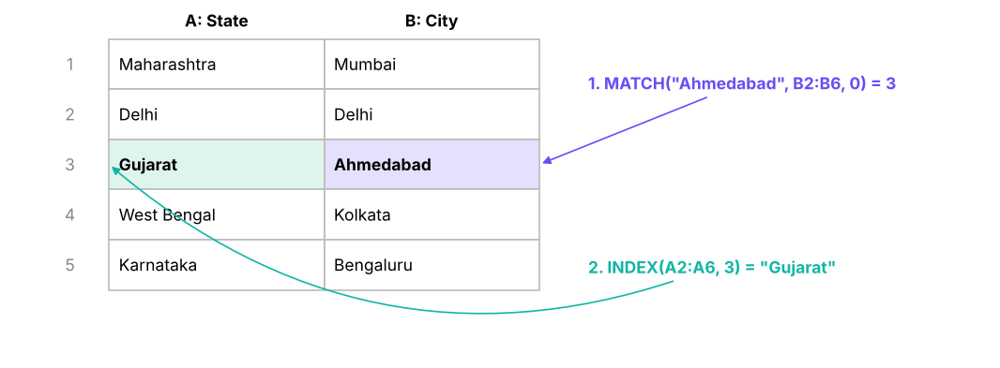
INDEX + MATCH: MATCH finds the row number of the city; INDEX returns the state on that row.
Two-way (matrix) lookup
INDEX can take a row and a column number. Use one MATCH for each to look up the intersection of a row and a column, for example an employee's salary from a table where both the employee and the field are chosen in drop-downs.
Because the headers in row 2 (JobTitle, Salary) are matched by MATCH, you can change a header to City and the formula returns cities without editing it. The XLOOKUP version nests one XLOOKUP inside another: =XLOOKUP($G3,$A$2:$A$6,XLOOKUP(H$2,$B$1:$E$1,$B$2:$E$6)).
INDEX + MATCH with multiple conditions
To match on two columns at once (for example Region and Product), multiply the conditions inside MATCH:
=INDEX(F2:F9, MATCH(1, (B2:B9="North")*(C2:C9="Tablet"), 0)) → returns the revenue for the North + Tablet row. In Microsoft 365 this works as a normal formula; in older Excel press Ctrl + Shift + Enter. With XLOOKUP: =XLOOKUP(1,(B2:B9="North")*(C2:C9="Tablet"),F2:F9).
CHOOSE, and VLOOKUP with CHOOSE
=CHOOSE(index_num, value1, value2, …) returns the item at a position.
The last example gives the Indian financial-year quarter (April–June = Q1), which a plain ROUNDUP(MONTH()/3) cannot do.
VLOOKUP + CHOOSE was the old trick for a left lookup: CHOOSE({1,2}, B2:B6, A2:A6) builds a virtual two-column table with City first and State second, so VLOOKUP can search it:
Today, prefer XLOOKUP or INDEX + MATCH: they are easier to read and faster.
Troubleshooting #N/A
Cause
How to check
Fix
The key really is missing
Search the lookup column with Ctrl + F
Return a message: IFNA(…,"Not found") or XLOOKUP's 4th argument
Extra spaces
=LEN(A2) is longer than expected
TRIM both sides, or XLOOKUP(TRIM(B2),TRIM(Prod!A2:A7),…)
Number vs text (101 vs "101")
=ISTEXT(B2) differs from the lookup column
Convert one side: VALUE() or TEXT(…,"0")
Approximate match on unsorted data
Wrong but no error
Use exact match (FALSE / 0)
Range not locked
Errors appear only in lower rows
Add $ or use a Table
Invisible characters
=CODE(RIGHT(B2)) returns 160 or 10
SUBSTITUTE and CLEAN
2026 updateLookups in 2026
XLOOKUP and XMATCH are now the standard; use VLOOKUP only when sharing files with very old Excel versions.
FILTER returns all matching rows, not just the first (Lesson 6).
For joining large tables regularly, Power Query → Merge Queries (Lesson 12) is faster and repeatable, and it is exactly a SQL join.
Case: pricing the Superstore order lines
Suppose the order lines arrive without a price and you must look it up from the product master (products.csv). This is a lookup on 6,323 rows. pandas does the same as XLOOKUP with merge:
Zero unmatched IDs tells you every order line found its product: the same check you should do in Excel with =COUNTIF(price_column,"#N/A") or =SUM(--ISNA(price_column)).
Summary
Key takeaways
Lookups bring columns from one table into another through a shared key, like a SQL left join.
VLOOKUP: key in the first column, column number counted from 1, FALSE for exact match, lock the table with $.
Approximate match (TRUE / match_mode −1) is for sorted bands: tax slabs, commissions, grades.
XLOOKUP is exact by default, looks left, has a built-in "not found" value, returns several columns and can search from the end.
INDEX returns a value at a position; MATCH finds the position. Together they do reverse and two-way lookups in any Excel version.
Most #N/A errors come from missing keys, spaces, or number-vs-text mismatches.
Quick quiz6 questions · tap an answer to check it
1.=VLOOKUP("P103",A2:E7,4,FALSE) returns a value from which column of the range?
Answer: C. Column index 4 counts from the first column of the table array: A=1, B=2, C=3, D=4.
2. Why does VLOOKUP return the wrong price (not #N/A) for unsorted data?
Answer: A. Without FALSE, VLOOKUP uses approximate match, which assumes sorted data.
3. Which formula returns the State for the city in H2, where State is column A and City is column B?
Answer: B. MATCH finds the row of the city in column B; INDEX returns column A on that row.
4. Sales of 2,40,000 with tiers at 0, 1,00,000, 2,50,000 and 5,00,000 (approximate match). Which tier is used?
Answer: B. Approximate match returns the largest tier less than or equal to the value.
5. What does XLOOKUP's 4th argument do?
Answer: B.if_not_found replaces #N/A with your own value or message.
6. A lookup returns #N/A even though the ID is visible in both tables. Which is NOT a likely cause?
Answer: C. File format does not affect lookups. Spaces, invisible characters and type mismatches are the usual culprits.
ExerciseGrade lookup
Create a grade table: 0 → F, 40 → D, 55 → C, 70 → B, 85 → A. Write a formula that returns the grade for a mark in B2 using (a) VLOOKUP, (b) XLOOKUP and (c) INDEX + MATCH.
Show solution
With the table in E2:F6 (marks ascending):
(a) =VLOOKUP(B2,$E$2:$F$6,2,TRUE)
(b) =XLOOKUP(B2,$E$2:$E$6,$F$2:$F$6,,-1)
(c) =INDEX($F$2:$F$6,MATCH(B2,$E$2:$E$6,1)) (match_type 1 = largest value ≤ B2, needs ascending order).
ExerciseTwo-way lookup
Make a table of 4 regions (rows) × 4 quarters (columns) with sales figures. Add drop-downs for region (H1) and quarter (H2) and return the matching sales value.
Show solution
With regions in A2:A5, quarters in B1:E1 and values in B2:E5:
=INDEX($B$2:$E$5,MATCH($H$1,$A$2:$A$5,0),MATCH($H$2,$B$1:$E$1,0))
or =XLOOKUP($H$1,$A$2:$A$5,XLOOKUP($H$2,$B$1:$E$1,$B$2:$E$5)).
Make the drop-downs with Data Validation → List, source $A$2:$A$5 and $B$1:$E$1.
Interview cornerQuestions you may be asked
Q: What are the limitations of VLOOKUP and how do you overcome them?
It cannot look left, it defaults to approximate match, it breaks when columns are inserted (hard-coded index), and it returns only the first match. Use XLOOKUP or INDEX + MATCH, and FILTER for multiple matches.
Q: Why is INDEX + MATCH considered more flexible than VLOOKUP?
The lookup and return ranges are separate, so it can look left, it is not affected by inserted columns, it supports two-way lookups, and it can be faster on large sheets because it only reads the columns it needs.
Q: How would you look up a value using two criteria?XLOOKUP(1,(range1=x)*(range2=y),return_range), INDEX/MATCH with the same multiplied condition, or a helper column that concatenates the two keys.
Advanced Excel · Lesson 8
Pivot Tables from Basic to Advanced
Summarise thousands of rows in seconds. Build pivot tables, understand the pivot cache and the four areas, change value field settings, show values as % of total, MoM and YoY change and running totals, group dates and numbers into bins, add calculated fields, slicers and timelines, and solve the Video Game Sales case study.
● Live classes 5–7✦ Excel for Microsoft 365, 2026Intermediate⏱ 150 min
By the end of this lesson you can
Build a pivot table and explain the pivot cache, the four areas and Refresh vs Refresh All
Change the summary function and number format, and show values as % of total, % of row and running totals
Calculate month-on-month (MoM) and year-on-year (YoY) change
Group dates by year, quarter and month, group items manually, and group numbers into bins
Add calculated fields, slicers, timelines and pivot charts, and answer a full case study
What a pivot table does
A pivot table groups rows by one or more fields and summarises a number for each group (sum, count, average…). It is the fastest way to answer "how much, by what?" questions, with no formulas.
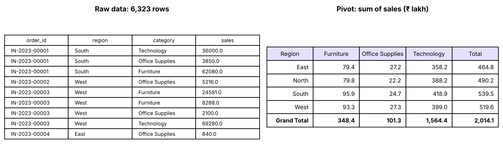
A pivot table turns thousands of order lines into a compact summary: rows grouped by Region, columns by Category, values summed.
Creating a pivot table
Step by stepStep by step
Make sure the data is structured (Lesson 1): one header row, no blank rows, no merged cells. Ideally convert it to a Table (Ctrl + T) so new rows are included automatically.
Click any cell in the data → Insert → PivotTable (or Alt, N, V).
Choose New Worksheet → OK. An empty pivot appears with the PivotTable Fields pane on the right.
Drag fields into the four areas: drag region to Rows, category to Columns, sales to Values.
Right-click any number → Number Format → #,##0 so the format sticks when the pivot refreshes.
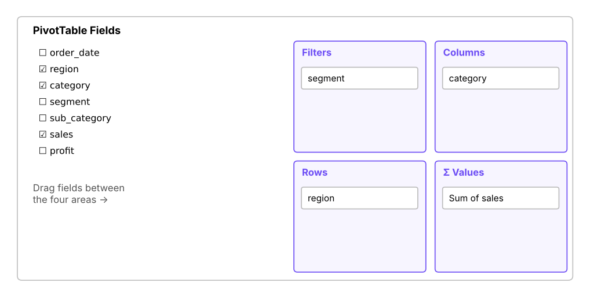
The PivotTable Fields pane: a list of fields at the top, four areas at the bottom.
Area
What it does
Example
Rows
One row per unique value
Region, Category, Order Date
Columns
One column per unique value
Year, Segment
Values
The numbers being summarised
Sum of Sales, Count of Order ID
Filters
Filter the whole pivot by a field
Segment = Corporate
The pivot cache, Refresh and Refresh All
A pivot table does not read your sheet directly. When you create it, Excel copies the data into a hidden pivot cache, and the pivot reads from that cache. This is why pivots are fast, and also why they do not update automatically when the data changes.
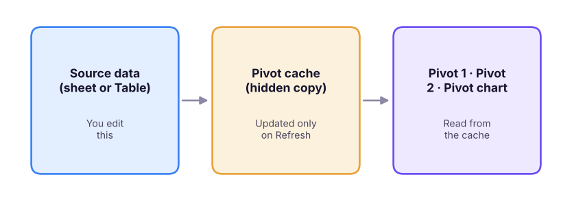
Every pivot reads from a cache. Pivots made from the same data share one cache.
Action
Shortcut
Effect
Refresh
Alt + F5
Re-reads the source into this pivot's cache. Every pivot that shares the same cache updates too
Refresh All
Ctrl + Alt + F5
Refreshes every pivot cache, query and data connection in the workbook
Change Data Source
PivotTable Analyze tab
Point the pivot to a bigger range (unnecessary if the source is a Table)
Refresh on open
PivotTable Options → Data
Refreshes automatically when the file opens
TipUse a Table as the source
If the source is a Table, new rows are included the next time you refresh. If the source is a fixed range like A1:R6324, new rows below are ignored until you change the data source.
Value field settings
Click a field in Values → Value Field Settings (or right-click a number).
Summarize values by
Sum, Count, Average, Max, Min, Product, Count Numbers, StdDev, Var. Text fields in Values are counted automatically. Distinct Count appears only when the pivot is added to the Data Model (tick "Add this data to the Data Model" when creating it; Lesson 12).
Show values as
This tab turns a plain sum into an analytical view without writing formulas.
Show values as
Answers
Example
% of Grand Total
What share of the whole?
Furniture = 22% of all sales
% of Column Total
Share within each column
Within 2025, North = 31%
% of Row Total
Mix within each row
In the West, 46% of sales are Technology
% of Parent Row Total
Share within a parent group
Each sub-category's share of its category
Difference From (previous)
Change from the previous item
MoM or YoY change in ₹
% Difference From (previous)
Growth rate
MoM % or YoY %
Running Total In
Cumulative total
Year-to-date sales
Rank Largest to Smallest
Position
Top-selling region = 1
Index
Relative importance
Above 1 = over-represented
Here are three of these views on the Superstore data (computed with pandas to show the exact numbers a pivot would give):
Python
import pandas as pd
s = pd.read_csv("superstore_sales.csv", parse_dates=["order_date"])
pv = s.pivot_table(index="region", columns="category", values="sales", aggfunc="sum")
pct_total = (pv / pv.values.sum() * 100).round(1)
pct_row = (pv.div(pv.sum(axis=1), axis=0) * 100).round(1)
print("Sum of sales (₹):"); print(pv.round(0).astype(int).to_string())
print("\n% of grand total:"); print(pct_total.to_string())
print("\n% of row total (category mix inside each region):"); print(pct_row.to_string())
Output
Sum of sales (₹):
category Furniture Office Supplies Technology
region
East 7942092 2719513 35822514
North 7975868 2219542 38822750
South 9593302 2468888 41890579
West 9330590 2725360 39902570
% of grand total:
category Furniture Office Supplies Technology
region
East 3.9 1.4 17.8
North 4.0 1.1 19.3
South 4.8 1.2 20.8
West 4.6 1.4 19.8
% of row total (category mix inside each region):
category Furniture Office Supplies Technology
region
East 17.1 5.9 77.1
North 16.3 4.5 79.2
South 17.8 4.6 77.6
West 18.0 5.2 76.8
MoM and YoY
Month-on-month (MoM) compares each month with the previous month; year-on-year (YoY) compares a period with the same period last year (which removes seasonality, such as the festive Q4 peak).
Step by stepMoM % in a pivot
Put order_date in Rows and group it by Years and Months (see Grouping below).
Add sales to Values twice.
On the second copy: Value Field Settings → Show Values As → % Difference From → Base field: order_date (Months) → Base item: (previous).
Monthly sales with YoY growth. The festive season (Oct–Dec) peaks every year, so YoY is a fairer comparison than MoM.
In formulas, the same calculations are: MoM % =(C3-C2)/C2, YoY % =(C14-C2)/C2 when months are listed one per row.
Grouping
Group dates
Right-click a date in Rows → Group → choose Years, Quarters, Months (and Days, Hours if needed). Excel 365 groups dates automatically when you drag a date field to Rows; you can ungroup with right-click → Ungroup.
TipIndian financial year
Pivot grouping uses calendar quarters (Jan–Mar = Q1). For an April–March financial year, add helper columns to the data first: FY = YEAR(date)+(MONTH(date)>=4) and FQ = "Q"&ROUNDUP(MOD(MONTH(date)-4,12)+1)/3,0), or use CHOOSE (Lesson 7), and put those in the pivot.
Group items manually
Select several labels (hold Ctrl) → right-click → Group. Excel creates a new field such as Product2 with a group called Group1; rename it (for example "Low Sales Products"). This is how you combine the three lowest-selling products into one line, or merge small cities into "Others".
Groups vs bins
Groups
Bins
What
Segregate items into chunks based on a common behaviour or criteria
Split a numeric field into equal-width intervals
Size
Can be any size
Every bin has the same width
Works on
Text, dates and numbers
Numbers
Example
"Metro" vs "Non-metro" cities
Order value 0–5,000, 5,000–10,000 …
To bin numbers: put the number field (for example sales) in Rows → right-click → Group → Starting at 0, Ending at 50,000, By 5,000. Then put order_id in Values as a Count.
Python
bins = pd.cut(s.sales, range(0, 55000, 5000), right=False)
dist = s.groupby(bins, observed=False).size().to_frame("Count of order lines")
dist.index = [f"{int(i.left):,}–{int(i.right - 1):,}"for i in dist.index]
dist
Output
Count of order lines
0–4,999
2530
5,000–9,999
829
10,000–14,999
473
15,000–19,999
423
20,000–24,999
238
25,000–29,999
172
30,000–34,999
177
35,000–39,999
202
40,000–44,999
61
45,000–49,999
92
10 rows × 1 columns
Most order lines are small; a few very large ones (machines, copiers) form the long tail. This is a frequency distribution, the pivot-table version of a histogram (Lesson 10).
Layout, subtotals and grand totals
The Design tab controls how the pivot looks:
Setting
Options
Tip
Report Layout
Compact (default), Outline, Tabular
Tabular + Repeat All Item Labels gives a flat table you can copy and reuse
Subtotals
Don't show, at bottom, at top
Turn off for exports
Grand Totals
On for rows/columns, off
Off when sharing a percentage view
Blank Rows
Insert after each item
Easier to read printed reports
Expand / Collapse
+/− buttons, or right-click → Expand/Collapse entire field
Drill from Category down to Sub-category
Show Details
Double-click any number
Opens a new sheet with the rows behind that number: great for auditing
Parent total: when two fields are in Rows (Category → Sub-category), "% of Parent Row Total" shows each sub-category's share of its own category.
Sorting and filtering inside a pivot
Sort: right-click a value → Sort → Largest to Smallest.
Value filter / Top 10: Row Labels drop-down → Value Filters → Top 10 → change to Top 5 Items by Sum of sales. This is how you answer "Find the top 5 categories".
Slicers: PivotTable Analyze → Insert Slicer → pick fields (Region, Segment). Slicers are clickable buttons that filter the pivot and show what is selected. Right-click a slicer → Report Connections to control several pivots with one slicer (they must share the same cache).
Timeline: Insert Timeline on a date field to filter by years, quarters, months or days with a slider.
Calculated fields
A calculated field creates a new value field from other fields in the pivot: PivotTable Analyze → Fields, Items & Sets → Calculated Field.
Example: Profit Margin = profit / sales, formatted as a percentage.
Watch outCalculated fields work on totals
Excel calculates the field on the sums: Profit Margin for the North = total North profit ÷ total North sales. That is correct for ratios. But a calculated field like =quantity * price would multiply the sum of quantity by the sum of price, which is wrong. Add such row-level calculations as a new column in the source data instead.
When you type = and click a cell inside a pivot, Excel writes GETPIVOTDATA, for example =GETPIVOTDATA("sales",$A$3,"region","North"). It keeps returning North's sales even if the pivot layout changes. Turn it off in PivotTable Analyze → Options → Generate GetPivotData if you prefer normal references.
PivotChart (PivotTable Analyze → PivotChart) creates a chart linked to the pivot: filtering the pivot or clicking a slicer updates the chart. This is the basis of the dashboard in Lesson 11.
Case study: Video Game Sales (regional sales trends)
You are an analyst at a game publisher. The file video_game_sales.csv has 2,400 fictional titles with platform, release year, genre, publisher and sales in millions of units by region: North America (na_sales), Europe (eu_sales), Japan (jp_sales), other regions and global. Answer the questions with pivot tables. The answers below were computed from the file so you can check your pivots.
Python
g = pd.read_csv("video_game_sales.csv")
print(g.shape); g.head(4)
Output
(2400, 11)
rank
name
platform
year
genre
publisher
na_sales
eu_sales
jp_sales
other_sales
global_sales
0
1
Hidden Kingdom
XSX
2023
Sports
Red Lantern Studios
3.69
2.62
0.29
0.87
7.47
1
2
Galactic Kingdom
PS5
2020
Adventure
Saffron Works
3.49
1.79
0.74
0.94
6.96
2
3
Galactic League
Mobile
2017
Strategy
Red Lantern Studios
3.08
2.44
0.57
0.67
6.76
3
4
Shadow League
Mobile
2025
Role-Playing
Northwind Play
1.66
2.12
2.33
0.63
6.74
4 rows × 11 columns
Case studyQ1. Which genres sell the most worldwide?
Pivot: Rows = genre, Values = Sum of global_sales, sorted largest to smallest.
Write 3–5 sentences of insight, not just tables. For example: which genres to prioritise for the Japanese market, which publishers are efficient (high sales per title), and how platform transitions show in the year trend. Keep every number traceable to a pivot.
Summary
Key takeaways
Pivot tables summarise structured data by dragging fields into Rows, Columns, Values and Filters.
They read from a pivot cache: Refresh updates one cache; Refresh All updates everything. Use a Table as the source.
Value Field Settings: change the function (Sum, Count, Average…) and Show Values As (% of total, % of row, difference from previous, running total, rank).
MoM = change from the previous month; YoY = change from the same period last year.
Group dates (years/quarters/months), group items manually, and group numbers into equal bins.
Calculated fields work on totals, so use them for ratios like margin; add row-level maths to the source data.
Slicers and timelines make pivots interactive; double-click a number to see the rows behind it.
Quick quiz6 questions · tap an answer to check it
1. You add 500 rows to the source range, but the pivot does not change. Why?
Answer: B. Refresh re-reads the source. If the source is a fixed range, also change the data source, or use a Table.
2. Which "Show Values As" option gives month-on-month growth?
Answer: C. % Difference From the previous item compares each month with the one before it.
3. What is the main difference between groups and bins?
Answer: A. Bins split numbers into equal intervals. Groups are custom collections of items.
4. A calculated field Revenue = Qty * Price gives inflated numbers. Why?
Answer: B. Calculated fields work on aggregated values. Compute Qty × Price in the source data instead.
5. How do you see the individual rows behind a number in a pivot table?
Answer: B. Double-clicking opens a new sheet with the underlying records.
6. Two pivots were built from the same data. You click Refresh on one. What happens to the other?
Answer: A. Pivots from the same source share a cache; refreshing the cache updates all of them.
ExerciseSuperstore pivots
Build pivot tables from superstore_sales.csv to answer: (1) sales and profit by category and sub-category, with profit margin; (2) yearly sales by region with YoY %; (3) the 5 cities with the highest profit; (4) the number of order lines by discount (0%, 10%, … 40%) and their total profit.
Show solution
(1) Rows: category, sub_category; Values: Sum of sales, Sum of profit; Calculated Field Margin = profit/sales formatted as %.
(2) Rows: region; Columns: order_date grouped by Years; Values: Sum of sales, plus a second copy shown as % Difference From (previous) Years.
(3) Rows: city; Values: Sum of profit; Value Filters → Top 10 → Top 5 Items by Sum of profit.
(4) Rows: discount; Values: Count of order_id and Sum of profit. You will see profit turn negative at the higher discount levels, matching the Lesson 5 crosstab.
Interview cornerQuestions you may be asked
Q: What is a pivot cache and why does it matter?
A hidden copy of the source data that pivots read from. It makes pivots fast and lets several pivots share data, but pivots only update on refresh, and many separate caches make files large.
Q: How do you show each item's share of the total in a pivot?
Value Field Settings → Show Values As → % of Grand Total (or % of Column/Row Total).
Q: How would you count unique customers in a pivot?
Create the pivot with "Add this data to the Data Model" ticked, then choose Distinct Count in Value Field Settings.
Q: When would you use formulas (SUMIFS) instead of a pivot?
When the report needs a fixed layout, mixes data from several sources, or must update without refreshing; pivots are better for exploration and flexible summaries.
Advanced Excel · Lesson 9
Date, Time & Number Functions and Named Ranges
Work confidently with dates and times (DATE, EOMONTH, EDATE, WORKDAY, NETWORKDAYS, WEEKDAY, WEEKNUM, DATEDIF, fiscal quarters), clean up numbers with INT, MOD, ROUND, CEILING and FLOOR, and make formulas readable with static and dynamic named ranges and LET.
● Live classes 7–8✦ Excel for Microsoft 365, 2026Intermediate⏱ 120 min
By the end of this lesson you can
Explain how Excel stores dates and times, and do date arithmetic correctly
Extract parts of dates, find month ends, add months, and count working days with holidays
Calculate age, tenure and fiscal-year quarters (Indian April–March and US October–September)
Use INT, MOD, ROUND, ROUNDUP, ROUNDDOWN, MROUND, CEILING.MATH, FLOOR.MATH, SQRT, POWER and ABS
Create static and dynamic named ranges and simplify long formulas with LET
Dates and times are numbers
Excel stores a date as the number of days since 1 January 1900 (that day is 1). A time is a fraction of a day: 12:00 noon is 0.5 and 06:00 is 0.25. A date with a time is simply a whole number plus a fraction.
XWhat is really stored
A
B
C
1
You see
Stored as
Explanation
2
27-04-2026
46139
Days since 1-Jan-1900
3
12:00
0.5
Half a day
4
06:30
0.2708
6.5 hours ÷ 24
5
27-04-2026 18:00
46139.75
Date + time
B2=A2
B3=TIME(12,0,0)
B4=TIME(6,30,0)
B5=DATE(2026,4,27)+TIME(18,0,0)
This is why date arithmetic works:
XDate arithmetic
A
B
C
D
E
1
Order date
Ship date
Days to ship =B2-A2
Due date (+30 days)
Overdue? (as of 15-Jun-2026)
2
27-04-2026
02-05-2026
5
27-05-2026
Overdue
3
20-05-2026
21-05-2026
1
19-06-2026
OK
4
01-06-2026
08-06-2026
7
01-07-2026
OK
C2=B2-A2
D2=A2+30
E2=IF(DATE(2026,6,15)>D2,"Overdue","OK")
Each pattern is copied down/across to the other cells in its column.
TipTODAY() and NOW()
=TODAY() returns today's date and =NOW() the date and time. They are volatile: they recalculate every time the workbook changes, so results move every day. For reports that must not change, type the "as of" date into a cell and refer to it, as in the overdue example above. Shortcuts: Ctrl + ; types today's date as a fixed value.
Building and taking apart dates
Function
Returns
Example (A2 = 27-04-2026)
Result
DATE(y, m, d)
A date from parts
=DATE(2026,4,27)
27-04-2026
YEAR, MONTH, DAY
Parts of a date
=MONTH(A2)
4
WEEKDAY(date, 2)
1 = Monday … 7 = Sunday
=WEEKDAY(A2,2)
1
WEEKNUM(date, 2)
Week of the year (weeks start Monday)
=WEEKNUM(A2,2)
18
ISOWEEKNUM(date)
ISO 8601 week number
=ISOWEEKNUM(A2)
18
TEXT(date, "mmm")
Month name as text
=TEXT(A2,"mmmm")
April
EOMONTH(date, n)
Last day of the month n months away
=EOMONTH(A2,0)
30-04-2026
EDATE(date, n)
Same day n months later
=EDATE(A2,3)
27-07-2026
DATEVALUE(text)
Converts date text to a real date
=DATEVALUE("27-Apr-2026")
46139
XDate parts and month boundaries
A
B
C
D
E
F
G
H
1
Date
Year
Month
Day
Weekday (Mon=1)
Month end
First of month
+3 months
2
27-04-2026
2026
4
27
1
30-04-2026
01-04-2026
27-07-2026
3
31-01-2026
2026
1
31
6
31-01-2026
01-01-2026
28-02-2026
4
29-02-2024
2024
2
29
4
29-02-2024
01-02-2024
28-02-2025
B2=YEAR(A2)
C2=MONTH(A2)
D2=DAY(A2)
E2=WEEKDAY(A2,2)
F2=EOMONTH(A2,0)
G2=EOMONTH(A2,-1)+1
H2=EDATE(A2,3)
Each pattern is copied down/across to the other cells in its column.
Notice that EDATE handles month ends correctly: 31-Jan + 1 month = 28-Feb (2026 is not a leap year), and 29-Feb-2024 + 12 months = 28-Feb-2025.
Working days
Function
Use
NETWORKDAYS(start, end, [holidays])
Count Mon–Fri days between two dates (inclusive) minus holidays
NETWORKDAYS.INTL(start, end, weekend, [holidays])
Choose weekend days: 11 = Sunday only, "0000011" = Sat + Sun
WORKDAY(start, days, [holidays])
The date after adding n working days
WORKDAY.INTL(start, days, weekend, [holidays])
Same with a custom weekend
XSLA and delivery planning (holidays in G2:G4)
A
B
C
D
E
F
G
1
Ticket
Opened
Closed
Working days =NETWORKDAYS(B2,C2,$G$2:$G$4)
Due (+5 working days)
Holidays
2
T-101
10-08-2026
18-08-2026
7
17-08-2026
15-08-2026
3
T-102
16-10-2026
23-10-2026
5
26-10-2026
20-10-2026
4
T-103
06-11-2026
10-11-2026
4
12-11-2026
08-11-2026
D2=NETWORKDAYS(B2,C2,$G$2:$G$4)
E2=WORKDAY(B2,5,$G$2:$G$4)
D3=NETWORKDAYS(B3,C3,$G$2:$G$4)
E3=WORKDAY(B3,5,$G$2:$G$4)
D4=NETWORKDAYS.INTL(B4,C4,11,$G$2:$G$4)
E4=WORKDAY.INTL(B4,5,11,$G$2:$G$4)
T-103 uses a Sunday-only weekend (code 11), common in Indian factories and retail. The holiday on 15-Aug-2026 falls on a Saturday, so it does not change T-101's count of working days.
Age, tenure and durations
DATEDIF(start, end, unit) is a hidden function (no tooltip) that returns complete years, months or days between two dates.
Unit
Returns
"y"
Complete years
"m"
Complete months
"d"
Days
"ym"
Months after removing complete years
"md"
Days after removing complete months
XTenure as of 31-Mar-2026 (in F1)
A
B
C
D
E
F
1
Employee
Join date
Years
Months after years
Tenure label
31-03-2026
2
Kavya Iyer
28-02-2016
10
1
10 yrs 1 mths
3
Imran Reddy
14-12-2019
6
3
6 yrs 3 mths
4
Saanvi Rao
18-02-2025
1
1
1 yrs 1 mths
C2=DATEDIF(B2,$F$1,"y")
D2=DATEDIF(B2,$F$1,"ym")
E2=C2&" yrs "&D2&" mths"
Each pattern is copied down/across to the other cells in its column.
(Cell F1 holds the date 31-03-2026.) For fractional years use =YEARFRAC(B2,$F$1), for example 10.09 years.
Fiscal years and quarters
Calendar quarter: ="Q"&ROUNDUP(MONTH(A2)/3,0). Many organisations use a different financial year:
Year type
Q1
Formula for the quarter number
Calendar
Jan–Mar
=ROUNDUP(MONTH(A2)/3,0)
India (FY Apr–Mar)
Apr–Jun
=ROUNDUP(MOD(MONTH(A2)-4,12)/3+0.01,0) or =CHOOSE(MONTH(A2),4,4,4,1,1,1,2,2,2,3,3,3)
US federal (FY Oct–Sep)
Oct–Dec
=CHOOSE(MONTH(A2),2,2,2,3,3,3,4,4,4,1,1,1)
XCalendar, Indian FY and US FY quarters
A
B
C
D
E
1
Date
Calendar Q
India FY quarter
India FY label
US FY quarter
2
10-02-2026
Q1
Q4
FY26
Q2
3
27-04-2026
Q2
Q1
FY27
Q3
4
03-11-2026
Q4
Q3
FY27
Q1
B2="Q"&ROUNDUP(MONTH(A2)/3,0)
C2="Q"&CHOOSE(MONTH(A2),4,4,4,1,1,1,2,2,2,3,3,3)
D2="FY"&(YEAR(A2)+(MONTH(A2)>=4))-2000
Each pattern is copied down/across to the other cells in its column.
In the Indian convention, 27-Apr-2026 falls in FY27 (April 2026 – March 2027), quarter Q1.
Times
Function
Example
Result
TIME(h, m, s)
=TIME(14,30,0)
14:30
HOUR, MINUTE, SECOND
=HOUR(A2)
14
Duration in hours
=(end-start)*24
8.5
Duration beyond 24 h
Format [h]:mm
37:30
Shifts past midnight
=MOD(end-start,1)
Works when end is the next day
A very common clean-up task: a system exports times as plain numbers like 1430 meaning 14:30. Convert them with INT and MOD:
XConvert 1430-style numbers into real times
A
B
C
D
E
1
Raw
Hours =INT(A2/100)
Minutes =MOD(A2,100)
Time =TIME(INT(A2/100),MOD(A2,100),0)
Shift length (to B6)
2
930
9
30
09:30
8.75
3
1430
14
30
14:30
4
2245
22
45
22:45
5
5
0
5
00:05
6
1815
18
15
18:15
B2=INT(A2/100)
C2=MOD(A2,100)
D2=TIME(INT(A2/100),MOD(A2,100),0)
E2=MOD(D6-D2,1)*24
Each pattern is copied down/across to the other cells in its column.
Number functions
Function
What it does
Example
Result
INT(n)
Rounds down to the integer
=INT(-7.6)
−8
TRUNC(n, [d])
Cuts off decimals (towards zero)
=TRUNC(-7.6)
−7
ROUND(n, d)
Normal rounding
=ROUND(7.456,2)
7.46
ROUNDUP(n, d)
Always away from zero
=ROUNDUP(7.401,0)
8
ROUNDDOWN(n, d)
Always towards zero
=ROUNDDOWN(7.99,0)
7
ROUND(n, -3)
Round to thousands
=ROUND(123456,-3)
123000
MROUND(n, m)
Nearest multiple
=MROUND(17,5)
15
CEILING.MATH(n, m)
Up to the next multiple
=CEILING.MATH(23,7)
28
FLOOR.MATH(n, m)
Down to the previous multiple
=FLOOR.MATH(23,7)
21
MOD(n, d)
Remainder
=MOD(28,3)
1
QUOTIENT(n, d)
Integer part of a division
=QUOTIENT(28,3)
9
ABS(n)
Absolute value
=ABS(-450)
450
SIGN(n)
−1, 0 or 1
=SIGN(-450)
−1
SQRT(n)
Square root
=SQRT(144)
12
POWER(n, p)
Power (same as ^)
=POWER(25,2)
625
XRounding functions side by side
A
B
C
D
E
F
G
H
1
Value
INT
ROUND 0
ROUNDUP 0
ROUNDDOWN 0
ROUND 2
CEILING.MATH to 5
FLOOR.MATH to 5
2
7.456
7
7
8
7
7.46
10
5
3
-7.456
-8
-7
-8
-7
-7.46
-5
-10
4
23.5
23
24
24
23
23.5
25
20
B2=INT(A2)
C2=ROUND(A2,0)
D2=ROUNDUP(A2,0)
E2=ROUNDDOWN(A2,0)
G2=CEILING.MATH(A2,5)
H2=FLOOR.MATH(A2,5)
Each pattern is copied down/across to the other cells in its column.
Practical uses
Packaging: boxes needed for 523 items at 24 per box = =CEILING.MATH(523,24)/24 or =ROUNDUP(523/24,0) → 22.
Price points: round prices up to the next 99: =CEILING.MATH(A2,100)-1 turns 1,234 into 1,299.
Split profit and loss into two columns with ABS:
XProfit and Loss columns
A
B
C
D
1
Store
Profit / Loss
Profit
Loss
2
Pune
45200
45200
0
3
Delhi
-12800
0
12800
4
Kochi
3300
3300
0
5
Patna
-7600
0
7600
6
Total
28100
48500
20400
C2=IF(B2>0,B2,0)
D2=IF(B2<0,ABS(B2),0)
B6=SUM(B2:B5)
C6=SUM(C2:C5)
D6=SUM(D2:D5)
Each pattern is copied down/across to the other cells in its column.
Named ranges
A name is a label for a cell, a range, a constant or a formula. =SUM(Sales) is easier to read and audit than =SUM(Data!$O$2:$O$6324).
Static named ranges
Method
How
Name Box
Select the range, click the Name Box (left of the formula bar), type GST_Rate, press Enter
Define Name
Formulas → Define Name: set the name, scope (workbook or one sheet) and comment
Create from Selection
Select a table with headers → Formulas → Create from Selection (Ctrl + Shift + F3) → Top row: one name per column
Name Manager
Formulas → Name Manager (Ctrl + F3) to edit, delete or find broken names
Rules: names start with a letter or underscore, contain no spaces (use _), cannot look like a cell address (Q1 or FY26 are not allowed) and are not case-sensitive.
XFormulas with names (GST_Rate = F1, Qty and Price are named columns)
A
B
C
D
E
F
1
Qty
Price
Amount =Qty*Price
With GST =Qty*Price*(1+GST_Rate)
18%
2
4
1250
5000
5,900.00
3
10
299
2990
3,528.20
4
2
8999
17998
21,237.64
C2=A2*B2
D2=A2*B2*(1+$F$1)
C3=A3*B3
D3=A3*B3*(1+$F$1)
C4=A4*B4
D4=A4*B4*(1+$F$1)
(F1, the yellow cell, is named GST_Rate. With names defined, the formula in D2 reads =Qty*Price*(1+GST_Rate).)
Dynamic named ranges
A static name like =$B$2:$B$100 does not grow when you add row 101. A dynamic named range expands automatically, which keeps charts, validation lists and formulas up to date.
Method
Refers to
Notes
Excel Table (best)
=tblSales[Amount]
Automatic, no formula needed
OFFSET + COUNTA
=OFFSET(Data!$B$2,0,0,COUNTA(Data!$B:$B)-1,1)
Classic; volatile (recalculates often)
INDEX + COUNTA
=Data!$B$2:INDEX(Data!$B:$B,COUNTA(Data!$B:$B))
Not volatile; preferred over OFFSET
Spill reference
=Data!$H$2#
Points to a dynamic-array result
A static range stays fixed; a dynamic range grows with the data.
LET: names inside one formula
LET (Microsoft 365) assigns names to values inside a formula. It makes long formulas readable and faster, because each part is calculated once.
Without LET: =IF(SUMIFS(F:F,C:C,"Finance")/COUNTIFS(C:C,"Finance")>90000,"High","Normal")
LAMBDA goes one step further and lets you create your own reusable functions; see Lesson 12.
Case: date analysis on Superstore
How long do orders take to ship, by ship mode, and which weekday gets the most orders? In Excel you would add columns =ship_date-order_date and =TEXT(order_date,"ddd") and pivot them. Here are the real answers:
mean min max
ship_mode
First Class 1.5 1 2
Same Day 0.0 0 0
Second Class 3.0 2 4
Standard Class 5.5 4 7
fy
FY23 169
FY24 952
FY25 1114
FY26 965
Summary
Key takeaways
Dates are whole numbers (days since 1-Jan-1900); times are fractions of a day. Subtract dates to get days; multiply time differences by 24 for hours.
EOMONTH and EDATE handle month ends correctly; NETWORKDAYS and WORKDAY (with .INTL for custom weekends) handle working days and holidays.
DATEDIF gives complete years/months; build fiscal quarters with CHOOSE(MONTH(…),…).
INT rounds down, TRUNC cuts towards zero, ROUNDUP/ROUNDDOWN force direction, CEILING.MATH/FLOOR.MATH round to multiples, MOD gives remainders.
Named ranges make formulas readable; use Tables or INDEX-based names for dynamic ranges, and LET for names inside a formula.
Quick quiz6 questions · tap an answer to check it
1. A1 contains 27-04-2026 and B1 contains 02-05-2026. What does =B1-A1 return?
Answer: B. Dates are numbers, so subtracting gives the number of days.
2. Which formula returns the last day of the month for the date in A2?
Answer: B. EOMONTH(date,0) returns the month end; the other options fail for 30-day months or February.
3. What does =INT(-3.2) return?
Answer: B. INT always rounds down (towards minus infinity). TRUNC(-3.2) would give −3.
4. Which formula converts the number 1745 into the time 17:45?
Answer: C. INT(1745/100) = 17 hours and MOD(1745,100) = 45 minutes.
5. Why is an INDEX-based dynamic named range often preferred to OFFSET?
Answer: B. Both grow, but OFFSET is volatile.
6. In the Indian financial year, which quarter is 15-January?
Answer: D. FY runs April–March, so January–March is Q4.
ExerciseHR date calculations
Using employees_small.csv and an "as of" date of 31-03-2026 in a cell: (1) tenure in complete years; (2) the probation end date (6 months after joining); (3) the first working day after the probation end; (4) the joining quarter in the Indian FY.
Show solution
With join date in E2 and the as-of date in $J$1:
(1) =DATEDIF(E2,$J$1,"y")
(2) =EDATE(E2,6)
(3) =WORKDAY(EDATE(E2,6)-1,1) (the first working day on or after the probation end)
(4) ="Q"&CHOOSE(MONTH(E2),4,4,4,1,1,1,2,2,2,3,3,3)
Interview cornerQuestions you may be asked
Q: How does Excel store dates and times?
Dates as serial numbers counting days from 1-Jan-1900; times as fractions of a day. This makes arithmetic, sorting and formatting consistent.
Q: How do you count working days between two dates excluding holidays?NETWORKDAYS(start, end, holidays) or NETWORKDAYS.INTL with a custom weekend code.
Q: What is a dynamic named range and when do you need one?
A name whose range grows with the data, built with an Excel Table, INDEX/COUNTA or OFFSET/COUNTA. It keeps charts, validation lists and formulas current as data is added.
Advanced Excel · Lesson 10
Charts and Advanced Charts
Choose the right chart for every question, build and format column, bar, line, area, pie, scatter and combo charts, add sparklines, and create the advanced business charts taught in class: thermometer, Pareto, population pyramid and waterfall, plus histogram, box plot, treemap and funnel.
● Live classes 7–8✦ Excel for Microsoft 365, 2026Intermediate⏱ 130 min
By the end of this lesson you can
Pick the right chart type from the question you want to answer
Insert, edit and format charts quickly (elements, axes, labels, colours, templates)
Build combo charts with a secondary axis and add sparklines
Build thermometer, Pareto, population pyramid and waterfall charts step by step
Use the newer statistical and hierarchy charts and apply chart design best practices
Start with the question, not the chart
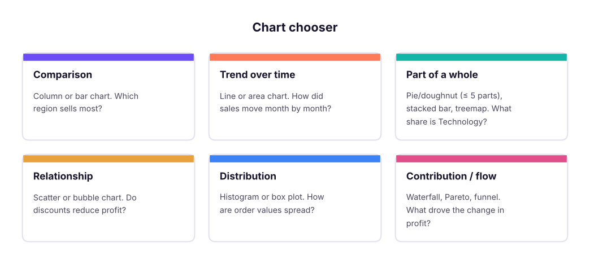
Choose a chart by the question you are answering.
Creating and editing a chart
Step by stepThe fast way
Select the data including headers (or a summary table / pivot table). For a quick chart press Alt + F1 (embedded) or F11 (new chart sheet).
Or use Insert → Recommended Charts to preview options.
Click the chart: three buttons appear at its top-right: Chart Elements (+), Chart Styles (brush) and Chart Filters (funnel).
Format pane: double-click any element (axis, series, label) or press Ctrl + 1 with it selected.
Element
Good practice
Title
Say the insight: "Technology drives 77% of sales", not "Sales by Category"
Axes
Start bar/column axes at zero; format numbers (K, L, %); remove unnecessary decimals
Gridlines
Light grey or none
Data labels
Use them instead of an axis when there are few bars
Legend
Only if there is more than one series; better: label lines directly
Colour
One highlight colour for the point you want to make, grey for the rest
Template
Right-click → Save as Template to reuse your style
The core chart types
Here are the core charts built from Superstore data. The Excel steps follow each one.
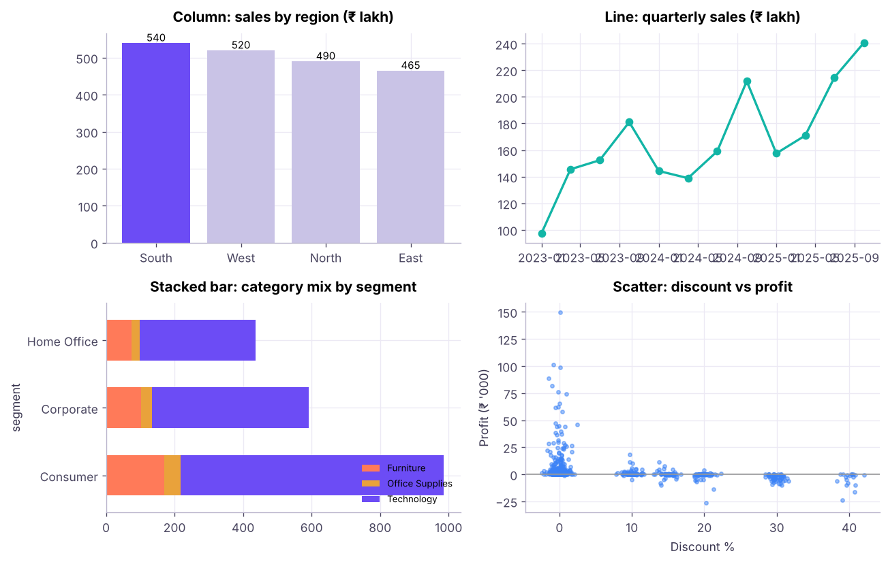
Column (comparison), line (trend), clustered and stacked bar (comparison of parts), and scatter (relationship).
Chart
Excel path
Use when
Clustered column / bar
Insert → Column or Bar
Comparing categories; use bar when labels are long or there are many categories
Stacked / 100% stacked
Same menu
Showing parts of a total across groups
Line
Insert → Line (with markers)
Trends over time; up to ~5 lines
Area
Insert → Line → Area
Cumulative trends; volume over time
Pie / doughnut
Insert → Pie
2–5 parts of a whole that add to 100%
Scatter (XY)
Insert → Scatter
Relationship between two numbers; add a trendline (right-click series → Add Trendline, tick Display R²)
Bubble
Insert → Scatter → Bubble
Scatter with a third measure as bubble size
Common mistakesChart crimes to avoid
3D charts, pie charts with 10 slices, two different units on one axis, truncated bar axes that exaggerate differences, rainbow colours, and charts without units. If you need to squint, the chart has failed.
Combo charts and the secondary axis
When two measures have very different scales (sales in lakhs and profit margin in %), plot one as columns and the other as a line on a secondary axis.
Sales: Clustered Column. Margin %: Line with Markers, tick Secondary Axis.
Add axis titles so readers know which axis belongs to which series.
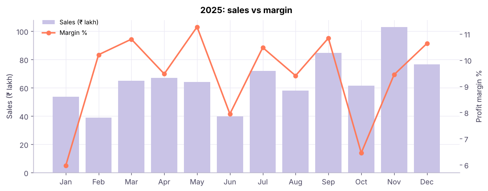
Combo chart: monthly sales (columns, left axis) and profit margin (line, right axis) for 2025.
Sparklines
Sparklines are tiny charts inside a cell: Insert → Sparklines → Line, Column or Win/Loss. Select the data range (for example 12 months in a row) and the location cell. Use Sparkline → Show → High Point / Low Point to mark extremes. They are ideal in dashboard tables, one row per product or region.
Thermometer chart (target vs actual)
A thermometer shows progress towards a single target, such as "₹ 7.4 crore of the ₹ 9 crore annual target".
XThermometer data
A
B
1
Metric
Value
2
Target
900
3
Achieved
742
4
% achieved
82.4%
B4=B3/B2
Step by stepBuild it
Select only the % achieved cell (and its label) → Insert → Clustered Column.
Format the vertical axis: Minimum 0, Maximum 1 (100%). Delete the horizontal axis and gridlines.
Format the series: Gap Width 0% so the column fills the width; choose a strong fill colour.
Optional: add a second series with value 1 (100%) on the secondary axis, no fill and a thick border to draw the "glass" of the thermometer; set the secondary axis to 0–1 as well.
Resize the chart to be tall and narrow; add a data label showing 82.4%.
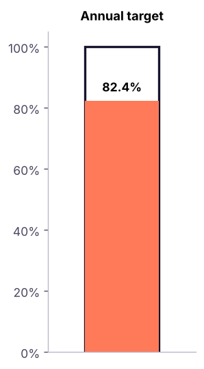
Thermometer chart: 82.4% of the annual target achieved.
Pareto chart (the 80/20 rule)
The Pareto principle says that roughly 80% of effects come from 20% of causes: a few sub-categories drive most sales, a few complaint types cause most tickets. A Pareto chart shows sorted bars plus a cumulative % line.
Summarise sales by sub-category (pivot or SUMIFS) and sort largest to smallest.
Add Cumulative %: in C2 =SUM($B$2:B2)/SUM($B$2:$B$13), copy down.
Select the three columns → Insert → Combo: Sales = Clustered Column, Cumulative % = Line on the Secondary Axis.
Set the secondary axis maximum to 100%. Optionally add a horizontal 80% reference line.
Excel 2016+ also has a built-in Insert → Statistical → Pareto chart that sorts and accumulates for you from raw data.
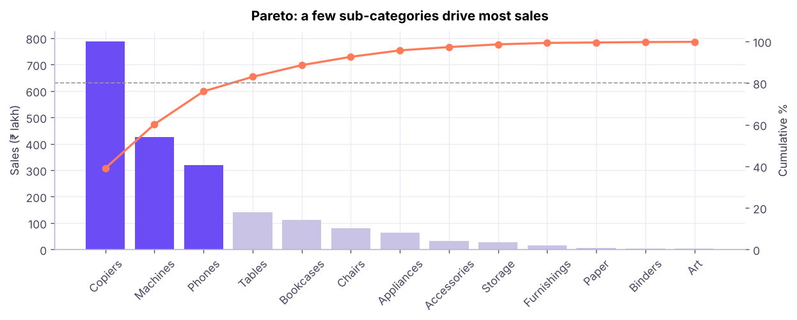
Pareto chart of sales by sub-category. Copiers, Machines and Phones alone make up 76% of sales; adding Tables passes the 80% line.
Population pyramid
A population pyramid compares two groups (typically male and female) across age bands, with one group's bars going left and the other's going right. In business it works for any two-sided comparison: this year vs last year by product, or two regions by age band.
Count employees by age band and gender (pivot table or COUNTIFS).
Make the male counts negative (=-C2) in a helper column so they plot to the left.
Select age bands, the negative male column and the female column → Insert → Clustered Bar.
Format series: Series Overlap 100%, Gap Width 10–30%.
Format the horizontal axis numbers with the custom format #,##0;#,##0 so negative values show without a minus sign.
Vertical axis → Labels → Label Position: Low so the age labels sit on the left edge.
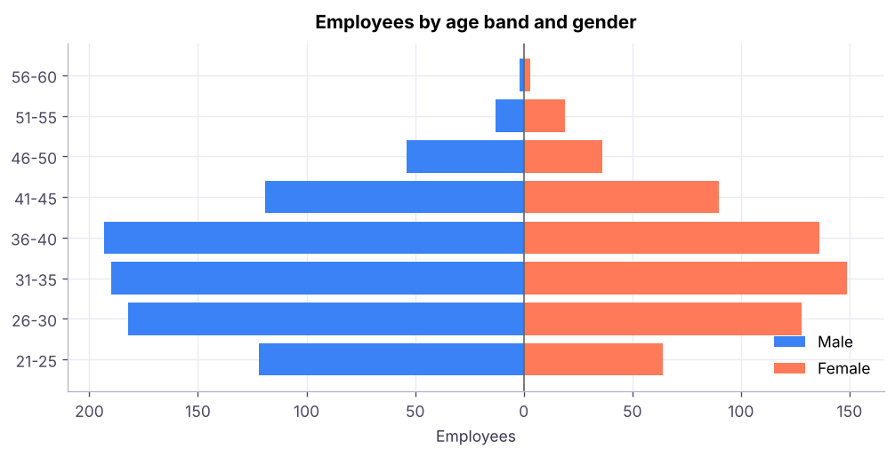
Population pyramid of the 1,500 employees in the HR dataset.
Waterfall chart
A waterfall shows how a starting value becomes an ending value through positive and negative steps: revenue to profit, last year's sales to this year's, or budget to actual.
XWaterfall data: from revenue to net profit (₹ lakh)
Click the Gross profit bar twice (to select only that point) → right-click → Set as total. Do the same for Net profit. Totals then start from zero instead of floating.
Colour increases, decreases and totals differently (Format Data Point) and add data labels.
In older Excel versions you build the same chart as a stacked column with an invisible "base" series, an "up" series and a "down" series computed with formulas.
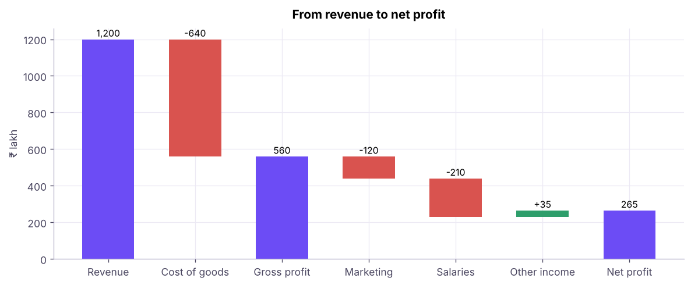
Waterfall from revenue to net profit. Totals are anchored at zero; increases are green and decreases are red.
Statistical and hierarchy charts (Excel 2016+)
Chart
Insert path
Shows
Example question
Histogram
Insert → Statistical → Histogram
Frequency distribution; set bin width in Format Axis
How are order values distributed?
Box & Whisker
Insert → Statistical → Box and Whisker
Median, quartiles and outliers by group
Do salaries vary more in Sales than in IT?
Treemap
Insert → Hierarchy → Treemap
Nested rectangles sized by value
Category → sub-category share of sales
Sunburst
Insert → Hierarchy → Sunburst
Rings for hierarchy levels
Region → state → city
Funnel
Insert → Waterfall → Funnel
Drop-off between stages
Visitors → sign-ups → orders
Filled map
Insert → Maps
Values by country or state
Sales by state (needs internet)
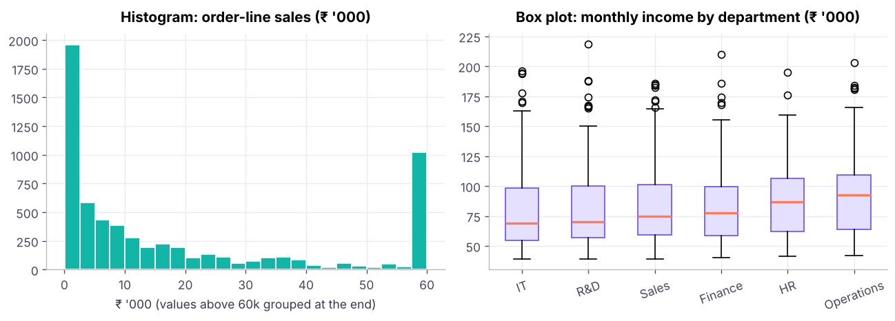
Histogram of order-line sales values and box plots of monthly income by department (HR data).
Dynamic charts
Charts become interactive when their source updates:
Table source: new rows are added to the chart automatically.
Named range / dynamic named range (Lesson 9) as the series values: =Book1.xlsx!SalesLast12.
Drop-down + formulas: a Data Validation drop-down picks a region, formulas (XLOOKUP/FILTER) pull that region's numbers into a helper table, and the chart reads the helper table.
Copilot can suggest and insert charts from a sentence ("show monthly sales by region as a line chart"), and Analyze Data (Home → Analyze Data) proposes ready-made pivot charts with insights. Python in Excel can create seaborn or matplotlib charts inside the grid with =PY().
Summary
Key takeaways
Choose the chart from the question: comparison (bar/column), trend (line), part-of-whole (pie for ≤5, stacked bar, treemap), relationship (scatter), distribution (histogram, box), contribution (waterfall, Pareto).
Titles should state the insight; start bar axes at zero; use one highlight colour.
Combo charts with a secondary axis show two measures of different scales.
Thermometer: one % column, axis 0–100%, gap width 0.
Pareto: sorted bars + cumulative % line on a secondary axis; look for the ~80% point.
Population pyramid: one series negative, overlap 100%, custom format #,##0;#,##0.
Waterfall: Insert → Waterfall, then "Set as total" for subtotal bars.
Quick quiz6 questions · tap an answer to check it
1. Which chart best shows how monthly revenue changed over two years?
Answer: B. Lines show trends over time.
2. In a Pareto chart, what does the line represent?
Answer: B. The line accumulates each bar's share to show where ~80% is reached.
3. How do you make the male bars go to the left in a population pyramid?
Answer: A. Negative values plot to the left; #,##0;#,##0 shows them as positive numbers.
4. In Excel's waterfall chart, why must Gross profit be "Set as total"?
Answer: B. Totals should be anchored to the axis; otherwise Excel treats them as another step.
5. When should you use a secondary axis?
Answer: B. A secondary axis lets both series be readable; label both axes clearly.
6. Which chart shows median, quartiles and outliers for several groups?
Answer: B. Box plots summarise distributions and highlight outliers.
ExerciseBuild four charts from Superstore
(1) A Pareto chart of profit by sub-category (watch out for negative profit: what does it mean?). (2) A combo chart of quarterly sales (columns) and order count (line, secondary axis). (3) A waterfall from 2024 total sales to 2025 total sales, with one step per region showing the change. (4) A box plot of discount by category.
Show solution
(1) Sort profit descending; negative sub-categories (such as Tables and Bookcases here) reduce the cumulative total, so the cumulative line rises above 100% and then falls; a Pareto chart works best on positive values, so plot losses separately.
(2) Pivot by quarter with Sum of sales and Count of order_id → Combo chart with the count on the secondary axis.
(3) Table: 2024 total; North change; South change; East change; West change; 2025 total. Insert → Waterfall; set the first and last bars as totals.
(4) Select category and discount columns → Insert → Box and Whisker.
Interview cornerQuestions you may be asked
Q: How do you choose a chart type?
From the question: comparison, trend, composition, relationship, distribution or contribution. Then simplify: remove clutter, highlight the key point and write an insight title.
Q: What is a Pareto analysis used for?
To find the vital few causes (products, customers, complaint types) that produce most of the effect, so that effort is focused where it matters.
Q: How would you show actual vs target for 10 sales reps?
A bar chart of actuals with a target marker (a line or a thin overlapping bar per rep), or a bullet chart; a thermometer works for one overall target.
Advanced Excel · Lesson 11
Interactive Dashboard: Superstore Case Study
Build a complete, interactive sales dashboard from the Superstore data, from business questions and KPIs to pivot charts, slicers, a timeline, KPI cards and a dynamic title. Then protect it (sheet, workbook, allowed ranges), document it with comments and notes, and audit formulas with Evaluate Formula.
● Live classes 8–9✦ Excel for Microsoft 365, 2026Intermediate–Advanced⏱ 150 min
By the end of this lesson you can
Turn a business brief into KPIs and questions before building anything
Prepare data, create one pivot per visual and connect them with slicers and a timeline
Build KPI cards and a dynamic title with GETPIVOTDATA and TEXT
Lay out a clean dashboard and apply design rules
Protect sheets and workbooks, use comments and notes, and audit formulas with Evaluate Formula
The brief
Case studySuperstore sales review
The Head of Sales wants a one-page Excel dashboard to review performance for 2023–2025. They want to see, at a glance: total sales, profit, profit margin and orders; how sales are trending; which regions, categories and sub-categories perform best and worst; and the effect of discounts on profit. They want to filter by year, region and segment. The dashboard will be emailed every month, so it must be protected against accidental changes.
Step 0: questions and KPIs first
KPI / question
Calculation
Visual
Total sales
Sum of sales
KPI card
Total profit and margin
Sum of profit; profit ÷ sales
KPI cards
Number of orders
Distinct count of order_id
KPI card
Sales trend
Sales by month
Line chart
Regional performance
Sales and profit by region
Bar chart
Product mix
Sales by category and sub-category
Bar chart / treemap
Discount impact
Profit by discount level
Column chart
Filters
Year, Region, Segment
Timeline + slicers
Agreeing on this table before building saves hours of rework. It is also your "requirements document" in interviews.
Here is the finished result we are aiming for (drawn from the real data):
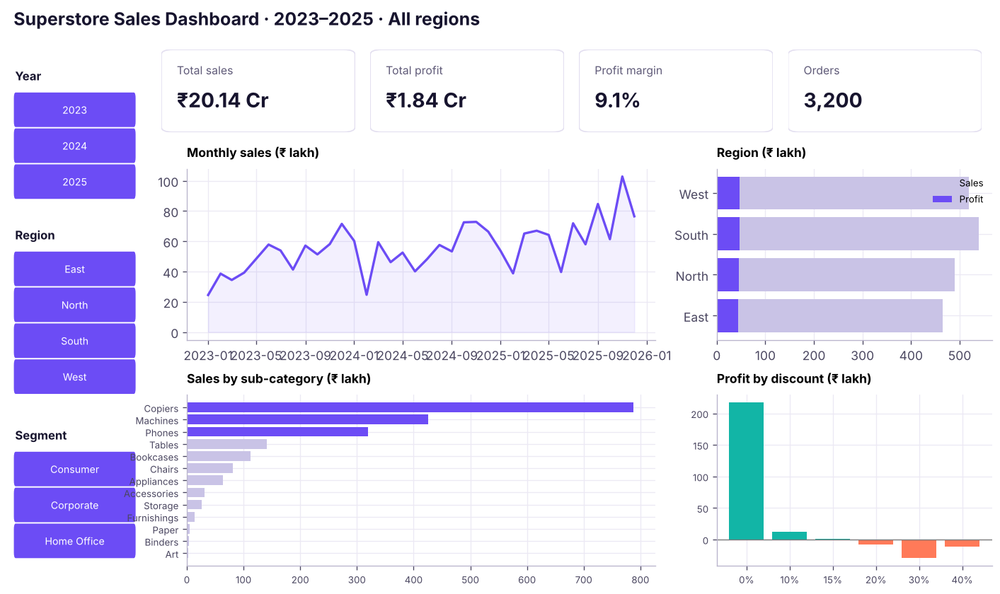
The finished Superstore dashboard: KPI cards on top, trend and breakdown charts below, slicers on the left.
Step 1: prepare the data
Import superstore_sales.csv with Data → From Text/CSV (Power Query, Lesson 12), or open it and convert the range to a Table named tblSales (Ctrl + T).
Create a sheet called Calc (it will be hidden later). Insert one pivot table for each chart, all from tblSales so they share one pivot cache:
Pivot
Rows
Values
Notes
P1 KPIs
(none)
Sum of sales, Sum of profit, Distinct count of order_id
Tick "Add this data to the Data Model" to get Distinct Count
P2 Trend
order_date grouped by Years + Months
Sum of sales
Line chart
P3 Region
region
Sum of sales, Sum of profit
Bar chart
P4 Sub-category
sub_category
Sum of sales (sorted)
Bar chart
P5 Discount
discount
Sum of profit
Column chart
Give each pivot a meaningful name (PivotTable Analyze → PivotTable Name: ptTrend, ptRegion …). Names make GETPIVOTDATA formulas and maintenance easier.
Step 3: pivot charts
Click each pivot → PivotTable Analyze → PivotChart → choose the type → cut and paste the chart onto a sheet called Dashboard.
Clean each chart:
Right-click the field buttons → Hide All Field Buttons on Chart.
Delete gridlines and legends that are not needed; add data labels where there are few bars.
Apply the same font and a two-colour palette (one highlight, one neutral).
Write insight titles, for example "Technology drives most sales" or "Discounts above 20% destroy profit".
Step 4: slicers and a timeline that control everything
Select any pivot → PivotTable Analyze → Insert Slicer → tick region and segment.
Insert Timeline → order_date → switch the timeline to YEARS.
Right-click each slicer → Report Connections → tick all five pivots. Now one click filters every chart and KPI.
Format slicers: Slicer tab → Columns = 1 or 2, a matching style, size them to align with the grid.
Watch outReport Connections are greyed out?
Slicers can only connect pivots that share the same pivot cache (or the same Data Model). If you built a pivot from a different range, rebuild it from tblSales.
Step 5: KPI cards and a dynamic title
KPI cards are simply cells or shapes linked to the KPI pivot. GETPIVOTDATA keeps returning the right number even when slicers change the pivot.
XCalc sheet: KPI formulas (values shown for the unfiltered data)
A
B
C
1
KPI
Formula
Value
2
Total sales
=GETPIVOTDATA("Sum of sales",Calc!$A$3)
201,413,569
3
Total profit
=GETPIVOTDATA("Sum of profit",Calc!$A$3)
18,352,164
4
Profit margin
=C3/C2
9.1%
5
Orders
=GETPIVOTDATA("Distinct Count of order_id",Calc!$A$3)
To show a KPI card on the dashboard: Insert → Shapes → Rounded Rectangle, click the shape, type =Calc!C6 in the formula bar, and press Enter. The shape now displays the live value.
Dynamic title: build the title text in a cell and link a text box to it:
where H2:H5 is a small pivot with region in Rows that is also connected to the slicers, so it lists only the selected regions.
Step 6: layout and design rules
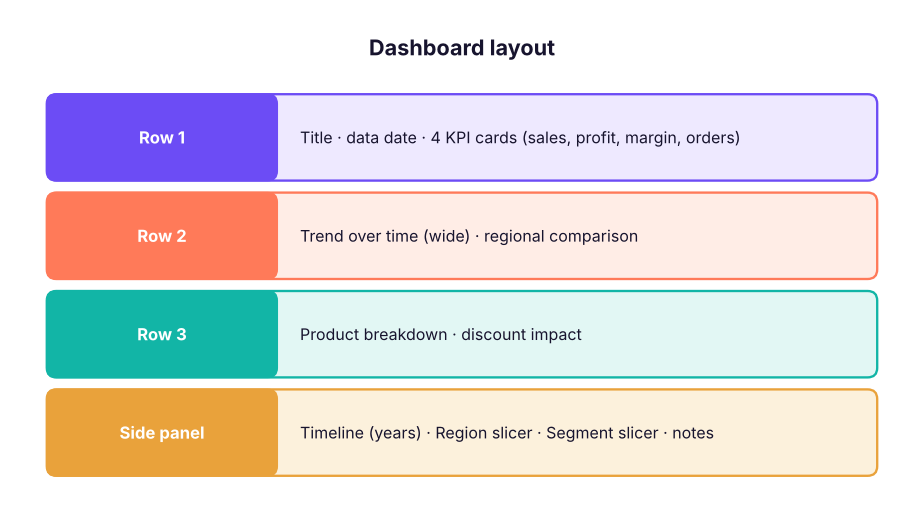
A simple dashboard grid. Most important information top-left; filters on one side; consistent spacing.
Z-pattern: people read top-left first: put the headline KPIs there.
Align to the grid: hold Alt while dragging or resizing a chart to snap it to cell borders; set every chart to the same height.
Limit colours: one brand colour, one highlight, red only for bad news.
Remove clutter: View → untick Gridlines and Headings; hide the Calc sheet (right-click tab → Hide).
Label the date and the source: "Data: Superstore orders, Jan 2023 – Dec 2025. Refreshed 05-Jan-2026."
Test it: click every slicer combination; check that totals match the raw data.
Step 7: protect the dashboard
Protection
Where
What it does
Lock / unlock cells
Ctrl + 1 → Protection → Locked
All cells are locked by default; unlock the input cells users may change. Locking only takes effect when the sheet is protected
Hide formulas
Ctrl + 1 → Protection → Hidden
Formula bar shows nothing for those cells once the sheet is protected
Protect Sheet
Review → Protect Sheet
Prevents editing locked cells; tick what users may still do: Use PivotTable & PivotChart, Edit objects (needed for slicers), sort, filter, format
Allow Edit Ranges
Review → Allow Edit Ranges
Lets specific ranges be edited, optionally with their own password
Protect Workbook
Review → Protect Workbook
Protects the structure: no adding, deleting, renaming, moving or unhiding sheets
Encrypt with password
File → Info → Protect Workbook → Encrypt
Password needed to open the file
Mark as Final
File → Info → Protect Workbook
A read-only hint (not security)
Step by stepProtect so slicers still work
Unlock any cells users need to type in (for example a target input).
Review → Protect Sheet → tick "Select unlocked cells", "Use PivotTable & PivotChart" and "Edit objects" → set a password.
Review → Protect Workbook (structure) so the hidden Calc sheet cannot be unhidden.
Test with a colleague before emailing.
Watch outSheet protection is not strong security
Sheet and structure passwords stop accidents, not determined users. Never rely on them to protect confidential data: use file encryption, SharePoint permissions or share only what is needed (for example a PDF export).
Comments and notes
Feature
Insert
Use
Note (old "comment")
Review → Notes → New Note (Shift + F2)
A sticky note explaining a cell: "Target approved by CFO on 12-Jan"
Comment (threaded)
Review → New Comment (Ctrl + Alt + M)
A conversation: @mention a colleague, reply, resolve
Notes are best for permanent documentation; comments for review discussions. Add a small "How to use" note on the dashboard explaining the slicers and data date.
Auditing formulas: Evaluate Formula and friends
When a KPI looks wrong, use Formulas → Formula Auditing:
Tool
What it shows
Evaluate Formula
Steps through a formula one calculation at a time: press Evaluate to see each part replaced by its value
Trace Precedents / Dependents
Arrows to the cells a formula uses, or that use it
Show Formulas (Ctrl + `)
Every formula instead of its result
Error Checking
Walks through cells with errors and suggests fixes
Watch Window
Keeps an eye on key cells while you work elsewhere
F9 inside the formula bar
Select part of a formula and press F9 to see its value (press Esc to undo)
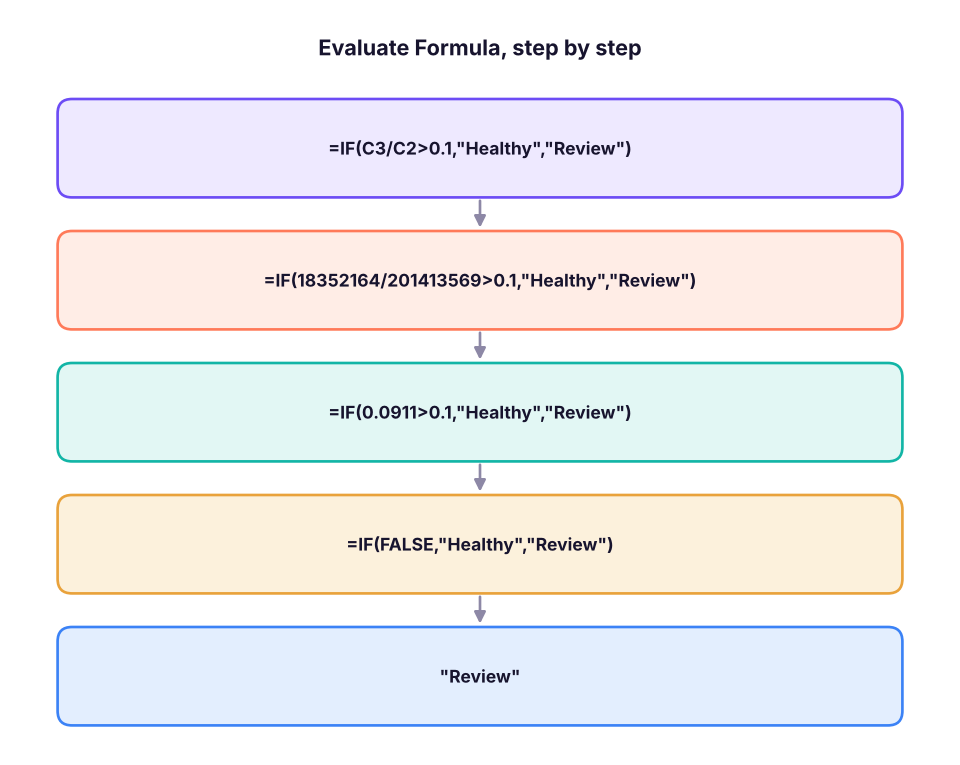
Evaluate Formula replaces one part at a time until only the result remains.
Delivering the dashboard
Refresh: Data → Refresh All before sending.
Export: File → Export → PDF (select the Dashboard sheet, landscape, fit to one page) for people who only need to read it.
Share live: save to OneDrive/SharePoint and share a link; viewers can use slicers in Excel for the web.
Automate: Power Query + Refresh All, or Office Scripts / Power Automate to refresh and email on a schedule.
Do it with AIDo it with AI
Copilot in Excel can draft the analysis: "Summarise sales and profit by region and category, identify the three biggest loss-making sub-categories, and suggest charts for a dashboard." Use its suggestions as a starting point, then build the final dashboard deliberately: you are responsible for every number on it.
A good dashboard closes with 3–4 written insights, for example:
Technology generates about three quarters of sales and most of the profit; furniture is unprofitable overall.
Tables and Bookcases lose money; both are heavily discounted.
Order lines with discounts above 20% lose money almost every time: review the discount policy.
Sales peak every October–December (festive season); plan stock and staffing accordingly.
Summary
Key takeaways
Start with the brief, KPIs and questions; then data prep; then one pivot per visual.
Build all pivots from one Table so they share a cache and can be connected to slicers and a timeline (Report Connections).
KPI cards use GETPIVOTDATA; shapes can display a cell's value by typing =Cell in the formula bar.
Design: top-left headline KPIs, aligned grid, few colours, insight titles, data date and source.
Protect: unlock inputs, Protect Sheet (allow PivotTables and objects), Protect Workbook structure; use encryption for real security.
Audit with Evaluate Formula, Trace Precedents/Dependents, Show Formulas and the Watch Window.
Quick quiz6 questions · tap an answer to check it
1. Why should all dashboard pivots be built from the same Table?
Answer: B. Slicers can only control pivots that share a cache (or data model).
2. After protecting the sheet, slicers stop working. What did you forget?
Answer: B. Slicers are objects that change pivots, so both permissions must be allowed.
3. Which tool lets you see each step of a complex formula's calculation?
Answer: B. Evaluate Formula replaces one part at a time with its value.
4. What does Protect Workbook (structure) prevent?
Answer: C. Structure protection guards the sheets, not the cells.
5. How do you count distinct orders in a pivot table?
Answer: B. Distinct Count is available only for Data Model pivots.
6. What is the difference between a note and a comment in Microsoft 365?
Answer: A. Use notes for documentation and comments for review discussions.
ExerciseBuild it yourself
Build the dashboard in this lesson from superstore_sales.csv. Then add: (1) a Ship mode slicer; (2) a KPI card for average days to ship; (3) a chart of the top 10 customers by sales that responds to all slicers; (4) sheet protection that still allows slicers.
Show solution
(1) Insert Slicer → ship_mode → Report Connections → all pivots.
(2) Add days_to_ship to tblSales; add Average of days_to_ship to the KPI pivot; link a shape to its GETPIVOTDATA cell.
(3) New pivot from tblSales: Rows customer_name, Values Sum of sales, Value Filter Top 10; PivotChart (bar); connect to the slicers.
(4) Review → Protect Sheet with "Use PivotTable & PivotChart" and "Edit objects" ticked; protect workbook structure.
Interview cornerQuestions you may be asked
Q: Walk me through how you would build an Excel dashboard.
Clarify the audience and questions; define KPIs; clean and structure the data as a Table; create one pivot per visual; build pivot charts; connect slicers and a timeline; add KPI cards with GETPIVOTDATA; design the layout; validate numbers against the source; protect and share.
Q: How do you make sure dashboard numbers are correct?
Reconcile totals with the raw data (SUM vs pivot), test filters, check distinct counts, use Evaluate Formula and trace precedents for KPI formulas, and have a second person review.
Q: Excel dashboard or Power BI?
Excel for small data, quick turnaround and audiences who live in Excel; Power BI for larger data, many users, scheduled refresh, row-level security and richer interactivity.
Advanced Excel · Lesson 12
Power Query, Power Pivot, Analysis ToolPak & What-If Analysis
Automate cleaning with Power Query (import, transform, unpivot, merge, append, group), model several tables with Power Pivot and DAX, get descriptive statistics and regression from the Analysis ToolPak, plan with Goal Seek, Data Tables, Scenario Manager and Solver, and meet LAMBDA, Python in Excel and macros.
● Live class 9✦ Excel for Microsoft 365, 2026Advanced⏱ 150 min
By the end of this lesson you can
Build repeatable ETL in Power Query and explain the Applied Steps and M code
Unpivot wide data, merge (join) and append (union) tables, and group data in Power Query
Load tables to the Data Model, create relationships and write simple DAX measures in Power Pivot
Produce descriptive statistics, histograms, correlation and regression with the Analysis ToolPak
Answer what-if questions with Goal Seek, Data Tables, Scenario Manager and Solver
Know when to use LAMBDA, Python in Excel, VBA macros and Office Scripts
Why "Power" tools?
Formulas and pivots are great until the same cleaning has to be repeated every month, the data has several related tables, or it grows past a million rows. The Power tools solve exactly these problems, and they are the same engines used in Power BI, so everything you learn here transfers directly.
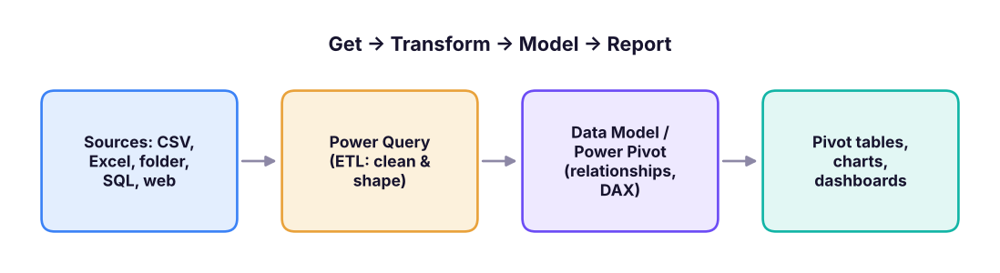
The modern Excel analytics stack. Power Query and the Data Model are shared with Power BI.
Power Query: repeatable cleaning
Power Query (Data → Get & Transform Data) imports data and records every cleaning step you click. Next month, put the new file in place and click Refresh: all steps run again automatically.
Step by stepYour first query
Data → Get Data → From File → From Text/CSV → choose superstore_sales.csv → Transform Data. The Power Query Editor opens.
Check data types in each column header (ABC = text, 123 = whole number, 1.2 = decimal, calendar = date). Fix any wrong ones (right-click header → Change Type).
Remove columns you do not need (select → right-click → Remove, or Choose Columns).
Filter rows with the header drop-downs (for example remove test orders).
Add a column: Add Column → Date → Year, or Custom Column with a formula such as [sales] - [profit].
Rename the query (right panel) to Sales → Home → Close & Load To… → Table, PivotTable report, or Only Create Connection + Add to Data Model.
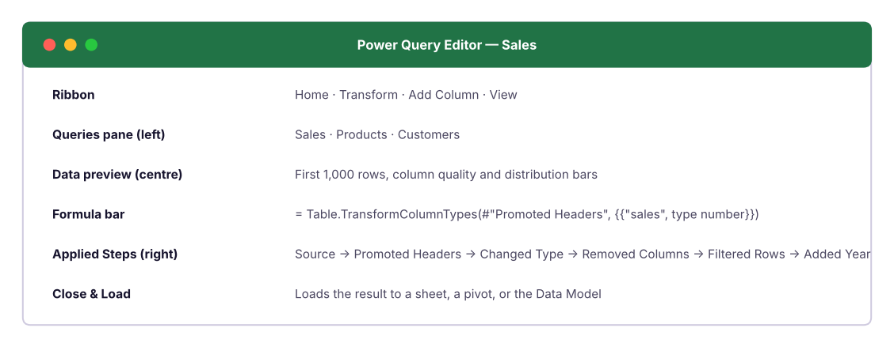
The Power Query Editor. Every action you take is recorded in Applied Steps on the right.
Transformations you will use most
Transformation
Where
Example
Remove / keep rows
Home → Remove Rows / Keep Rows
Remove top 3 title rows, remove blank rows, remove duplicates
Use first row as headers
Home → Use First Row as Headers
After importing a report
Split column
Home → Split Column → By Delimiter
IN-2025-00042 → country, year, number
Replace values
Transform → Replace Values
Bangalore → Bengaluru
Trim / Clean / Format case
Transform → Format
Same as TRIM, CLEAN, PROPER
Fill down
Transform → Fill → Down
Fill blank category cells (Lesson 2's Go To Special trick, but repeatable)
Conditional column
Add Column → Conditional Column
if [discount] > 0.2 then "High" else "Normal"
Column from examples
Add Column → Column From Examples
Like Flash Fill, but repeatable
Group By
Home → Group By
Sales by region (like a pivot)
Unpivot
Transform → Unpivot Columns
Turn month columns into rows
Merge Queries
Home → Merge Queries
A join (lookup) between two tables
Append Queries
Home → Append Queries
Stack tables with the same columns (Jan + Feb + Mar)
From Folder
Get Data → From File → From Folder
Combine every file in a folder automatically
Unpivot: from wide to long
Reports often arrive wide: one column per month or per region. Pivot tables, Power BI and Python all prefer long data (one row per observation). Unpivot fixes it in one click.
XWide (before): one column per month
A
B
C
D
1
Region
Jan
Feb
Mar
2
North
120
135
150
3
South
98
101
110
Step by stepUnpivot in Power Query
Load the wide table into Power Query.
Select the Region column (the one that should stay as it is).
Transform → Unpivot Columns → Unpivot Other Columns.
Rename Attribute to Month and Value to Sales.
XLong (after): one row per region and month
A
B
C
1
Region
Month
Sales
2
North
Jan
120
3
North
Feb
135
4
North
Mar
150
5
South
Jan
98
6
South
Feb
101
7
South
Mar
110
"Unpivot Other Columns" is better than selecting the month columns, because new months (Apr, May…) added later are unpivoted automatically. The same operation is melt() in pandas and UNPIVOT in SQL.
Merge Queries = a lookup or SQL JOIN. Choose the two tables, click the matching key column in each, and choose the join kind: Left Outer (all rows from the first table, matching rows from the second: like XLOOKUP), Inner (only matches), Full Outer, Left Anti (rows with no match: great for finding missing products). Then expand the new column to pick which fields to bring in.
Append Queries = SQL UNION ALL: stack January, February and March files that share the same columns.
The M language
Every step is written in M, Power Query's formula language. View it in Home → Advanced Editor:
Power Query M
let
Source = Csv.Document(File.Contents("C:\Data\superstore_sales.csv"), [Delimiter=",", Encoding=65001]),
Promoted = Table.PromoteHeaders(Source, [PromoteAllScalars=true]),
Typed = Table.TransformColumnTypes(Promoted, {{"order_date", type date}, {"sales", type number}, {"profit", type number}}),
AddedYear = Table.AddColumn(Typed, "Year", eachDate.Year([order_date]), Int64.Type),
HighDiscount = Table.AddColumn(AddedYear, "Discount band", eachif [discount] > 0.2then"High"else"Normal"),
Grouped = Table.Group(HighDiscount, {"region", "Year"}, {{"Sales", eachList.Sum([sales]), type number}})
in
Grouped
You rarely type M from scratch, but reading it helps you debug, and you can ask an AI assistant to explain or write a step.
TipChange the file path once
Put the file path in a cell, name it SourcePath, and in M use Excel.CurrentWorkbook(){[Name="SourcePath"]}[Content]{0}[Column1]. Colleagues can then point the query to their own folder without opening the editor.
Power Pivot and the Data Model
The Data Model stores tables inside the workbook in a compressed, columnar engine (VertiPaq, the same engine as Power BI). It handles millions of rows and lets one pivot table use several related tables, without VLOOKUPs.
Step by stepBuild a small model
Load Sales, Products and Customers with Power Query → Close & Load To → Only Create Connection + Add this data to the Data Model.
Data → Manage Data Model (Power Pivot window) → Diagram View.
Drag Sales[product_id] onto Products[product_id] and Sales[customer_id] onto Customers[customer_id] to create one-to-many relationships (Lesson 2 of the SQL track explains why).
Insert → PivotTable → From Data Model. You can now put Products[category] in Rows and Sales[sales] in Values: the relationship connects them.
DAX measures in Power Pivot
Measures are formulas that calculate on the fly for whatever is in the pivot (filter context). In Power Pivot → Measures → New Measure (or type in the calculation area):
Unlike pivot calculated fields (Lesson 8), Profit Margin here is always correct at every level, and DISTINCTCOUNT is built in. DAX is covered in depth in the Power BI track (Lesson 4).
Analysis ToolPak: statistics without formulas
The Analysis ToolPak is a free add-in: File → Options → Add-ins → Manage: Excel Add-ins → Go → tick Analysis ToolPak. It then appears as Data → Data Analysis.
Tool
What it produces
Descriptive Statistics
Mean, standard error, median, mode, standard deviation, variance, kurtosis, skewness, range, min, max, sum, count (tick "Summary statistics")
Histogram
Frequency table (and chart) for bins you specify
Correlation
Correlation matrix of several columns
Regression
Linear regression with coefficients, R², p-values and residuals
t-Test, z-Test, ANOVA, F-Test
Hypothesis tests (ML track, Lessons 3–5)
Moving Average, Exponential Smoothing
Simple forecasting
Random Number Generation, Sampling
Simulation and sampling
Here is what Descriptive Statistics returns for the order-line sales column (computed with Python to match the ToolPak's definitions):
How to read it: the mean (about 31,900) is far above the median (about 8,400), and skewness is strongly positive, so a few very large orders pull the average up. Report the median as the typical order line.
The same numbers with Excel functions: AVERAGE, MEDIAN, MODE.SNGL, STDEV.S, VAR.S, KURT, SKEW, MIN, MAX, SUM, COUNT.
NoteToolPak output is static
The Analysis ToolPak writes numbers, not formulas. If the data changes, run the tool again. For live results use the equivalent functions.
What-if analysis
Data → What-If Analysis answers "what would happen if…" questions.
Goal Seek: work backwards to a target
"What price gives a profit of exactly ₹ 2,00,000?" Set up the model with formulas, then Data → What-If Analysis → Goal Seek: Set cell = profit cell, To value = 200000, By changing cell = price.
XGoal Seek model: which price makes profit = 2,00,000?
A one-variable or two-variable Data Table recalculates a model for a list of inputs. Example: profit for prices 80–100 (rows) and units 4,000–6,000 (columns).
Step by stepTwo-variable data table
Put the profit formula in the top-left corner cell of the grid (for example E2: =B6).
Prices down the column below it (E3:E7), units across the row to its right (F2:H2).
prices = [80, 85, 90, 95, 100]; units = [4000, 5000, 6000]
grid = pd.DataFrame({u: [u * (p - 42) - 42000for p in prices] for u in units}, index=prices)
grid.index.name = "Price ↓ / Units →"
grid
Output
4000
5000
6000
Price ↓ / Units →
80
110000
148000
186000
85
130000
173000
216000
90
150000
198000
246000
95
170000
223000
276000
100
190000
248000
306000
5 rows × 3 columns
Scenario Manager
Save named sets of inputs (Best case, Base case, Worst case) and switch between them or create a Scenario Summary report: What-If Analysis → Scenario Manager → Add.
Solver: optimisation
Solver (another free add-in) finds the best value of a target cell by changing several inputs, subject to constraints: for example, the product mix that maximises profit given limited machine hours and a minimum quantity for each product. Choose Simplex LP for linear problems.
LAMBDA: your own functions
LAMBDA (Microsoft 365) turns a formula into a reusable, named function. Define it once in Name Manager:
Name: GSTINCL
Refers to: =LAMBDA(amount, rate, amount * (1 + rate))
Then use it like any built-in function: =GSTINCL(B2, 18%). Helper functions such as MAP, REDUCE, SCAN, BYROW and BYCOL apply a LAMBDA to every row or element of an array.
Python in Excel
Type =PY( in a cell (Microsoft 365, Formulas → Insert Python) and write pandas code. Python runs securely in Microsoft's cloud with Anaconda libraries (pandas, matplotlib, seaborn, scikit-learn, statsmodels):
The result can be returned as an Excel value or a Python object, and charts appear as images in the cell. It is a great bridge to the Python track.
Macros, VBA and Office Scripts
Tool
Where it runs
Use for
Macro recorder
View → Macros → Record Macro
Recording repetitive formatting steps; saves as VBA
VBA
Desktop Excel (Alt + F11)
Custom automation, user forms; file must be .xlsm; macros can carry security risk, so enable only from trusted sources
Office Scripts
Excel for the web (Automate tab), TypeScript
Cloud automation; can be scheduled with Power Automate
Power Automate
Cloud
Refresh, email or save reports on a schedule without opening Excel
2026 updateExcel AI in 2026
Copilot in Excel can generate formulas, highlight patterns, create pivot tables and charts, and run Python analysis from a plain-English prompt. Agentic "office agents" can plan multi-step tasks such as cleaning a file and building a summary. Use them to move faster, and always validate the output (AI for Data Analysis track, Lesson 4).
Summary
Key takeaways
Power Query records cleaning steps and repeats them on Refresh: change types, split, replace, fill down, conditional columns, group by, unpivot, merge (join) and append (union).
Its language is M; read it in the Advanced Editor.
Power Pivot / Data Model stores related tables in a fast columnar engine; relationships replace VLOOKUP; DAX measures (SUM, DIVIDE, DISTINCTCOUNT, CALCULATE) compute correctly at every level.
What-if: Goal Seek (one input, target output), Data Tables (grid of scenarios), Scenario Manager (named sets), Solver (optimisation with constraints).
LAMBDA creates custom functions; Python in Excel brings pandas into cells; macros/VBA and Office Scripts automate.
Quick quiz6 questions · tap an answer to check it
1. Which Power Query command turns columns Jan, Feb, Mar into rows with Month and Sales columns?
Answer: B. Unpivot converts wide columns into attribute/value rows; "Other Columns" keeps working when new months are added.
2. Merge Queries in Power Query is equivalent to:
Answer: A. Merge joins two tables on matching key columns. Append is the UNION.
3. What is the main benefit of Power Query over manual cleaning?
Answer: B. The recorded steps make the process repeatable and auditable.
4. Which tool finds the input value that produces a given result for one formula?
Answer: A. Goal Seek works backwards from a target output to one input.
5. Why is a DAX measure DIVIDE([Total Profit],[Total Sales]) better than a pivot calculated field for margin?
Answer: B. Measures are context-aware and DIVIDE returns blank instead of an error for zero denominators.
6. The Analysis ToolPak reports mean 31,900 and median 8,400 for order values. What does this suggest?
Answer: B. When the mean is much larger than the median, a long right tail is pulling the mean up.
ExercisePower Query practice
Using video_game_sales.csv: (1) load it with Power Query and set the correct types; (2) unpivot the four regional sales columns into Region and Sales; (3) group by Genre and Region to get total sales; (4) load the result to a pivot table and show % of row total.
Show solution
(1) Data → From Text/CSV → Transform Data; check that year is whole number and sales are decimal.
(2) Select every column except na_sales, eu_sales, jp_sales and other_sales (or select those four and choose Unpivot Columns); rename Attribute → Region, Value → Sales; remove the global_sales column first so it is not unpivoted.
(3) Home → Group By → Advanced: group by genre and Region, new column Sales = Sum of Sales.
(4) Close & Load To → PivotTable Report; Rows genre, Columns Region, Values Sales → Show Values As % of Row Total. You should get the same mix as Lesson 8, Q3.
Interview cornerQuestions you may be asked
Q: What is Power Query and why use it?
Excel's (and Power BI's) ETL tool. It connects to many sources, applies recorded, repeatable transformations (types, splits, merges, unpivot, grouping) and refreshes with one click, which reduces manual errors.
Q: What is the difference between Merge and Append?
Merge adds columns from another table by matching keys (a join); Append adds rows from tables with the same structure (a union).
Q: What is the Data Model and when do you need it?
An in-memory columnar database inside Excel for related tables and large data. Use it when you have several tables, need distinct counts, or exceed normal sheet limits; it also supports DAX measures.
Q: How would you find the break-even price?
Build the profit formula and use Goal Seek to set profit to 0 by changing price, or solve algebraically: price = variable cost + fixed costs ÷ units.
Track 2
SQL for Data Analysis
Relational databases, ER diagrams and keys, DDL/DML, filtering, aggregation, joins, set operators, subqueries, window functions, CTEs, views, procedures and performance.
Databases, RDBMS & SQL Basics
ER Diagrams, Relationships, Keys & Normalisation
Data Types, Operators, NULLs, Variables & Comments
Understand what a database is, how relational databases organise data into tables, the vocabulary of SQL, the four families of SQL statements (DDL, DML, DCL, TCL), how SQL compares with Excel, and how to install SQL Server and SSMS and run your first query.
● SQL class 1✦ SQL Server 2022 / SSMS 21, 2026Beginner⏱ 100 min
By the end of this lesson you can
Explain what a database, a DBMS and an RDBMS are and why companies use them instead of spreadsheets
Use the core vocabulary (table, row/record, column/field, schema, query, result set)
Classify SQL statements into DDL, DML, DQL, DCL and TCL
Compare Excel and SQL and know when to use each
Install SQL Server Developer edition and SSMS, connect, create a database and run a first SELECT
What is a database?
A database is an organised collection of data stored so that it can be found, updated and analysed efficiently and safely by many people at the same time. A DBMS (database management system) is the software that manages it. Your bank balance, every Swiggy order, every Aadhaar-linked record and every hospital appointment lives in a database.
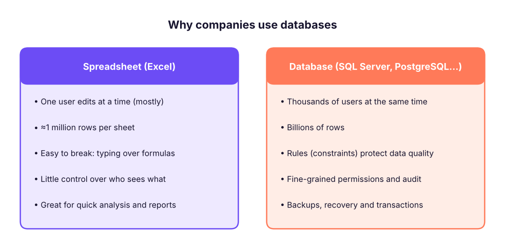
Spreadsheets are personal tools; databases are shared systems built for scale, safety and many users.
Types of databases
Type
Organises data as
Examples
Typical use
Relational (RDBMS)
Tables with rows and columns, linked by keys
SQL Server, PostgreSQL, MySQL, Oracle, SQLite
Orders, payments, HR, finance: most business data
Document
JSON-like documents
MongoDB, Cosmos DB
Product catalogues, app content
Key-value
Key → value pairs
Redis, DynamoDB
Caching, sessions
Column-family / warehouse
Columns, built for analytics
Snowflake, BigQuery, Redshift, Databricks SQL
Analytics on huge data
Graph
Nodes and edges
Neo4j
Social networks, fraud rings
Vector
Number vectors (embeddings)
pgvector, Pinecone
AI search and RAG (GenAI track)
This track focuses on relational databases and SQL, the language almost every data role uses daily. You will practise in Microsoft SQL Server with SSMS, as in class. The SQL you learn transfers to PostgreSQL, MySQL, Snowflake and BigQuery with small differences in functions.
How a relational database organises data
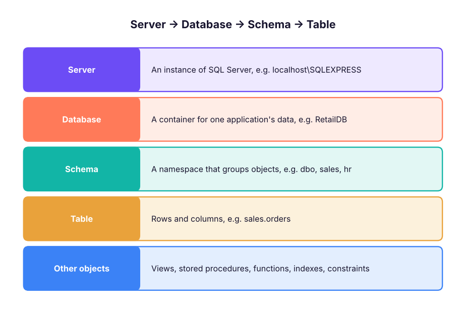
The hierarchy inside SQL Server: a server holds databases, a database holds schemas, a schema holds tables and other objects.
The vocabulary
DefinitionTerms you will use every day
Table (relation): a set of rows about one kind of thing, such as customers or orders.
Row (record, tuple): one item, such as one customer.
Column (field, attribute): one property, such as city. Every value in a column has the same data type.
Primary key: the column (or columns) that uniquely identifies each row, such as customer_id.
Foreign key: a column that refers to the primary key of another table, linking them.
Schema: (1) the structure of the database (tables, columns, types, relationships); (2) in SQL Server, a named container of objects such as dbo.
Query: a request for data written in SQL. Its output is a result set.
SQL: Structured Query Language, the standard language for relational databases (ANSI/ISO standard since 1986–87). Pronounced "S-Q-L" or "sequel".
T-SQL: Transact-SQL, Microsoft SQL Server's dialect with extra features (variables, TOP, procedures).
Here is the course's retail database. The order data is split into related tables instead of one wide sheet:
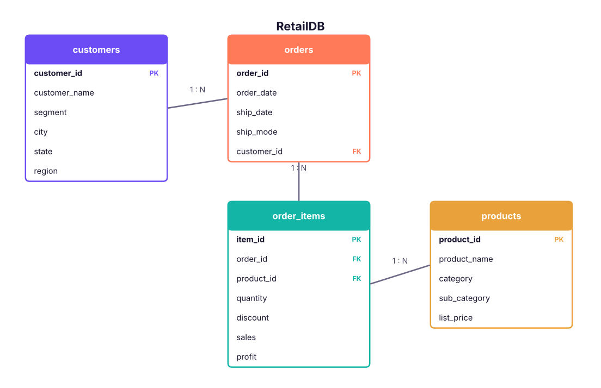
The course retail database. Each order belongs to one customer; each order has many order items; each item refers to one product.
Your first queries
A SELECT statement asks for columns FROM a table. Here are the first rows of the customers table:
SQL
SELECTTOP6 customer_id, customer_name, segment, city, region
FROM customers;
Result
customer_id
customer_name
segment
city
region
C0001
Saanvi Khan
Corporate
Chandigarh
North
C0002
Meera Bose
Corporate
Delhi
North
C0003
Riya Shah
Consumer
Kolkata
East
C0004
Diya Fernandes
Corporate
Indore
West
C0005
Neha Sharma
Corporate
Hyderabad
South
C0006
Vikram Mehta
Consumer
Chandigarh
North
6 rows × 5 columns
How many rows are in each table?
SQL
SELECT'customers'AS table_name, COUNT(*) AS row_count FROM customers
UNIONALLSELECT'orders', COUNT(*) FROM orders
UNIONALLSELECT'order_items', COUNT(*) FROM order_items
UNIONALLSELECT'products', COUNT(*) FROM products;
Result
table_name
row_count
customers
800
orders
3200
order_items
6323
products
78
4 rows × 2 columns
A taste of what is coming: total sales by region in one statement (Lesson 7 explains GROUP BY):
SQL
SELECT c.region,
COUNT(DISTINCT o.order_id) AS orders,
ROUND(SUM(oi.sales), 0) AS total_sales
FROM customers AS c
JOIN orders AS o ON o.customer_id = c.customer_id
JOIN order_items AS oi ON oi.order_id = o.order_id
GROUPBY c.region
ORDERBY total_sales DESC;
Result
region
orders
total_sales
South
831
53,952,769
West
811
51,958,521
North
792
49,018,161
East
766
46,484,119
4 rows × 3 columns
TipSQL reads almost like English
"Select the region, the number of distinct orders and the total sales, from customers joined to orders and order items, grouped by region, ordered by total sales descending." That readability is why SQL has lasted 50 years.
Properties of SQL
Declarative: you say what you want, not how to get it. The database's query optimiser decides the fastest way (which index, which join order).
Set-based: statements work on whole sets of rows at once, not one row at a time like a loop.
Not case-sensitive for keywords: select, SELECT and Select are the same. By convention, keywords are written in UPPERCASE. In SQL Server, text comparisons are usually case-insensitive too (default collation).
Whitespace does not matter: you can split a query over many lines; indent it for readability.
Statements end with a semicolon; (optional in SQL Server for most statements, but a good habit).
Standard, with dialects: the core is an ANSI/ISO standard; each product adds its own functions (T-SQL, PL/pgSQL, MySQL).
The families of SQL statements
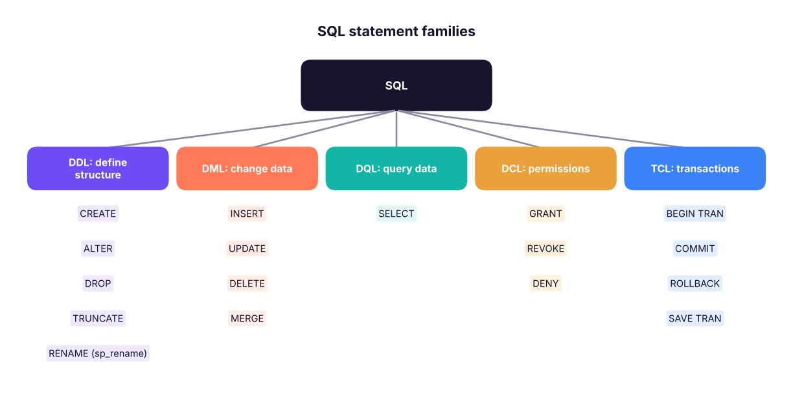
SQL statements fall into five families.
Family
Full name
What it does
Example
DDL
Data Definition Language
Creates and changes the structure: databases, tables, columns
CREATE TABLE customers (...)
DML
Data Manipulation Language
Adds, changes and removes rows
INSERT INTO customers VALUES (...)
DQL
Data Query Language
Reads data
SELECT * FROM customers
DCL
Data Control Language
Gives and removes permissions
GRANT SELECT ON customers TO analyst
TCL
Transaction Control Language
Groups changes so they succeed or fail together
BEGIN TRAN … COMMIT
Many books put SELECT inside DML; others separate it as DQL. Both are fine in interviews if you explain them.
Excel vs SQL
Task
Excel
SQL
See the data
Open the sheet
SELECT * FROM table
Filter rows
AutoFilter
WHERE
Sort
Sort dialog
ORDER BY
New calculated column
Formula in a new column
Expression in SELECT
Totals by group
Pivot table / SUMIFS
GROUP BY with SUM
Filter groups
Pivot value filter
HAVING
Lookup from another table
VLOOKUP / XLOOKUP
JOIN
Stack two tables
Copy-paste / Power Query Append
UNION ALL
Remove duplicates
Remove Duplicates
DISTINCT
Rank / running total
RANK, SUM($B$2:B2)
Window functions RANK() OVER, SUM() OVER
Data size
~1 million rows per sheet
Billions of rows
Repeatability
Manual steps (unless Power Query)
Saved queries, views, procedures
Sharing
Files get copied
One source of truth with permissions
Use Excel for quick, small, ad-hoc analysis and presentation; use SQL to get, combine and summarise data at source. In practice analysts use both: SQL to extract the right data, Excel or Power BI to present it.
Installing SQL Server and SSMS
Step by stepInstall on Windows (free)
Download SQL Server 2022 Developer edition (free, full-featured, for development and learning) from Microsoft's SQL Server downloads page. Choose Basic installation. Express edition is also free but limited to 10 GB per database.
Note the instance name shown at the end (for example MSSQLSERVER = default, or SQLEXPRESS).
Download and install SQL Server Management Studio (SSMS) from Microsoft Learn ("Download SSMS"). SSMS is the editor you write queries in.
Open SSMS → Connect to Server: Server type Database Engine; Server name localhost (or localhost\SQLEXPRESS); Authentication Windows Authentication; tick Trust server certificate → Connect.
In Object Explorer you will see Databases, Security and more. Click New Query (Ctrl + N).
NoteMac or Linux?
SQL Server runs in Docker on Mac and Linux (mcr.microsoft.com/mssql/server image). Connect with VS Code + the MSSQL extension or Azure Data Studio's successor tools. Alternatively, practise the same SQL in PostgreSQL (pgAdmin) or SQLite (DB Browser); only a few functions differ.
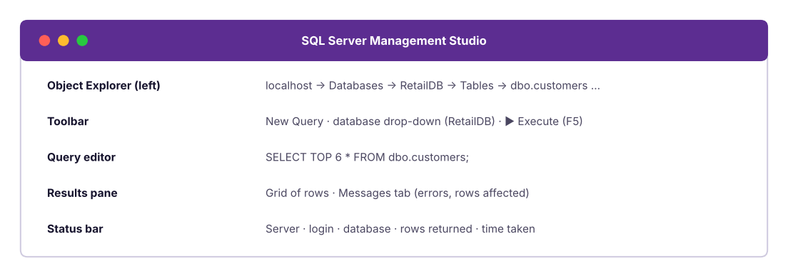
The SSMS window: Object Explorer on the left, the query editor in the middle, results below.
Create a database and load data
SQL
-- 1. Create the database and switch to itCREATEDATABASE RetailDB;
GOUSE RetailDB;
GO-- 2. Check which database you are inSELECTDB_NAME() AS current_database;
To load the course CSV files: right-click the database → Tasks → Import Flat File → choose customers.csv → check the column names and data types in the preview (make IDs nvarchar, dates date, amounts decimal(12,2)) → Finish. Repeat for the other files. Lesson 4 shows how to create tables with SQL and load them with BULK INSERT.
Running queries in SSMS
Action
Shortcut
Execute the whole window (or the selected text only)
F5 or Ctrl + E
New query window
Ctrl + N
Comment / uncomment selected lines
Ctrl + K, Ctrl + C / Ctrl + K, Ctrl + U
Show/hide results pane
Ctrl + R
IntelliSense refresh (after creating tables)
Ctrl + Shift + R
Results to grid / text / file
Ctrl + D / Ctrl + T / Ctrl + Shift + F
Estimated execution plan
Ctrl + L
TipSelect a part, run a part
Highlight just one statement and press F5 to run only that statement. This is how you test a long script step by step.
Summary
Key takeaways
A database stores shared data safely; an RDBMS stores it in related tables of rows and columns.
Primary keys identify rows; foreign keys link tables.
SQL is declarative and set-based; keywords are not case-sensitive; statements end with ;.
Excel is for quick analysis and presentation; SQL is for getting, combining and summarising data at scale.
Practise in SQL Server Developer + SSMS (or Docker / PostgreSQL on Mac).
Quick quiz6 questions · tap an answer to check it
1. Which statement family does CREATE TABLE belong to?
Answer: A. DDL defines structure: CREATE, ALTER, DROP, TRUNCATE.
2. In a relational database, what links the orders table to the customers table?
Answer: B. orders.customer_id is a foreign key that refers to customers.customer_id.
3. What does "SQL is declarative" mean?
Answer: B. The optimiser chooses the execution plan; you write the logic.
4. Which is NOT an advantage of a database over a spreadsheet?
Answer: D. For quick one-off charts, Excel is usually faster. Databases win on scale, safety and sharing.
5.GRANT SELECT ON orders TO analyst_role is an example of:
Answer: C. DCL controls permissions.
6. In SSMS, what does pressing F5 with part of the script highlighted do?
Answer: A. Highlighting limits execution to the selected text.
ExerciseMap the vocabulary
For the orders table in RetailDB, name: (a) one row; (b) one column; (c) the primary key; (d) the foreign key and the table it refers to; (e) the statement family of INSERT INTO orders ….
Show solution
(a) One order, for example the row for IN-2023-00001. (b) Any field, for example ship_mode. (c) order_id. (d) customer_id, which refers to customers.customer_id. (e) DML.
Interview cornerQuestions you may be asked
Q: What is the difference between DBMS and RDBMS?
A DBMS manages data in any form; an RDBMS stores data in tables with relationships defined by keys, enforces integrity with constraints and uses SQL. Examples: SQL Server, PostgreSQL, MySQL, Oracle.
Q: Explain DDL, DML, DCL and TCL with examples.
DDL changes structure (CREATE, ALTER, DROP, TRUNCATE); DML changes rows (INSERT, UPDATE, DELETE); DCL manages permissions (GRANT, REVOKE); TCL manages transactions (COMMIT, ROLLBACK, SAVE TRANSACTION). SELECT is sometimes called DQL.
Q: Why would a company keep data in SQL Server instead of Excel files?
Concurrency, scale, data integrity (constraints, transactions), security and auditing, backup and recovery, and a single source of truth for reports and applications.
SQL for Data Analysis · Lesson 2
ER Diagrams, Relationships, Keys & Normalisation
Design databases the way professionals do. Draw ER diagrams, read crow's-foot notation, model one-to-one, one-to-many and many-to-many relationships, master every type of key (super, candidate, primary, alternate, composite, foreign, surrogate) and normalise tables to 3NF.
● SQL class 1✦ 2026Beginner⏱ 110 min
By the end of this lesson you can
Read and draw an ER diagram with entities, attributes and relationships
Identify 1:1, 1:N and M:N relationships and resolve M:N with a junction table
Define super, candidate, primary, alternate, composite, foreign, surrogate and unique keys, with examples
Explain referential integrity and what happens on delete/update of a parent row
Normalise a flat table into 1NF, 2NF and 3NF, and know when to denormalise
Why design matters
A database that is designed badly is slow, wastes space and, worst of all, lets data contradict itself. Imagine the customer's city stored in every order row: if the customer moves, you must update thousands of rows, and missing one creates two different "truths". Good design stores each fact once and connects tables with keys.
Entity–Relationship (ER) diagrams
An ER diagram is a picture of the data model before any table is created.
DefinitionBuilding blocks
Entity: a real-world thing you store data about: Customer, Order, Product, Employee. Becomes a table.
Attribute: a property of an entity: name, city, price. Becomes a column.
Relationship: how entities are associated: a Customer places Orders. Implemented with foreign keys.
Cardinality: how many of one entity relate to another: one-to-one, one-to-many, many-to-many.
Participation (optionality): whether the relationship is mandatory (every order must have a customer) or optional (a customer may have zero orders).
Crow's-foot notation
The most common notation in industry draws symbols at the ends of each relationship line:
Crow's-foot symbols. Read each end as "minimum … maximum".
Reading example: Customer ||——o< Order means "each order belongs to exactly one customer; each customer places zero or many orders".
Types of relationships
One-to-one (1:1)
Each row in A matches at most one row in B. Example: Employee ↔ Employee_Bank_Details. Often used to split sensitive or rarely used columns into a separate, more protected table. Implemented with a foreign key that is also unique (often the same as the primary key).
One-to-many (1:N) — the most common
One row in A matches many rows in B; each B row matches one A row. Examples: Customer → Orders, Department → Employees, Category → Products. The foreign key goes on the "many" side (orders.customer_id).
Many-to-many (M:N)
Many rows in A match many in B: Students ↔ Courses, Orders ↔ Products, Actors ↔ Movies. Relational tables cannot store this directly, so we add a junction (bridge, associative) table that holds a pair of foreign keys, turning one M:N into two 1:N relationships.
An order contains many products and a product appears in many orders. The junction table order_items resolves the many-to-many relationship and stores facts about each pair (quantity, discount).
Relationship
Example
Where the foreign key goes
1 : 1
Employee – Passport
Either side, marked UNIQUE
1 : N
Department – Employees
On the N side (employees.dept_id)
M : N
Students – Courses
In a junction table enrolments(student_id, course_id)
Self (recursive)
Employee – Manager
In the same table: employees.manager_id → employees.emp_id
Let's check the real cardinalities in our retail data with SQL. How many orders does each customer have, and how many items does each order have?
SQL
SELECTMIN(n_orders) AS min_orders_per_customer,
MAX(n_orders) AS max_orders_per_customer,
ROUND(AVG(n_orders * 1.0), 2) AS avg_orders_per_customer
FROM (SELECT customer_id, COUNT(*) AS n_orders FROM orders GROUPBY customer_id) AS t;
Result
min_orders_per_customer
max_orders_per_customer
avg_orders_per_customer
1
10
4.08
1 rows × 3 columns
SQL
SELECT items_in_order, COUNT(*) AS number_of_orders
FROM (SELECT order_id, COUNT(*) AS items_in_order FROM order_items GROUPBY order_id) AS t
GROUPBY items_in_order
ORDERBY items_in_order;
Result
items_in_order
number_of_orders
1
1394
2
920
3
455
4
431
4 rows × 2 columns
So Customer → Orders is 1:N, and Order → Order items is 1:N (1 to 4 items per order here).
Keys
Keys are columns (or sets of columns) with special meaning. They are among the most frequently asked interview topics.
How the main key types relate: every candidate key is a minimal super key; one candidate is chosen as the primary key and the rest become alternate keys.
Example table employees(emp_id, email, pan_number, name, dept_id, phone), where emp_id, email and pan_number are each unique:
Key type
Definition
Example
Super key
Any set of columns that uniquely identifies a row (may include extra columns)
{emp_id}, {emp_id, name}, {email, dept_id}
Candidate key
A minimal super key: remove any column and it stops being unique
{emp_id}, {email}, {pan_number}
Primary key (PK)
The candidate key chosen to identify rows. Unique, not NULL, one per table
emp_id
Alternate key
Candidate keys not chosen as primary; enforce them with UNIQUE
email, pan_number
Composite key
A key made of two or more columns
(order_id, product_id) in order_items; (student_id, course_id) in enrolments
Foreign key (FK)
A column that refers to a PK (or unique key) in another table
employees.dept_id → departments.dept_id
Unique key
A UNIQUE constraint: no duplicates, but (in SQL Server) one NULL is allowed
phone
Surrogate key
An artificial key with no business meaning, often an auto-number
customer_key INT IDENTITY(1,1)
Natural key
A key with business meaning
PAN number, GSTIN, ISBN, email
TipSurrogate or natural?
Natural keys can change (people change email, products get recoded) and can be long. Most warehouses and Power BI models use surrogate integer keys for joins, and keep natural keys as alternate (unique) keys.
Primary key vs unique key
Primary key
Unique key
Duplicates allowed
No
No
NULL allowed
No
Yes (SQL Server allows one NULL; PostgreSQL allows many)
Per table
Exactly one
Many
Default index (SQL Server)
Clustered
Non-clustered
Referential integrity
A foreign key guarantees that every child row points to a parent that exists: you cannot insert an order for customer C9999 if that customer does not exist. What happens when a parent row is deleted or its key is updated is controlled by the FK's actions:
Normalisation organises columns and tables to reduce redundancy and avoid anomalies:
Update anomaly: the same fact stored in many rows gets changed in some but not others.
Insert anomaly: you cannot add a fact without another fact (cannot add a new product until someone orders it).
Delete anomaly: deleting one fact removes another (deleting the only order of a product deletes the product's information).
Start with the flat Superstore file, which repeats customer and product details on every order line:
SQL
SELECTTOP5 order_id, order_date, customer_id, customer_name, city, product_id, product_name, category, quantity, sales
FROM superstore;
Result
order_id
order_date
customer_id
customer_name
city
product_id
product_name
category
quantity
sales
IN-2023-00001
2023-01-01
C0765
Ishaan Gupta
Bengaluru
P0059
Nova Phone 223
Technology
2
36,000
IN-2023-00001
2023-01-01
C0765
Ishaan Gupta
Bengaluru
P0050
Orbit Appliance 798
Office Supplies
1
3,850
IN-2023-00001
2023-01-01
C0765
Ishaan Gupta
Bengaluru
P0011
Orbit Table 248
Furniture
4
62,080
IN-2023-00002
2023-01-03
C0791
Kabir Singh
Ahmedabad
P0037
Crest Storage 946
Office Supplies
2
5,216
IN-2023-00003
2023-01-03
C0049
Sneha Khan
Ahmedabad
P0018
Crest Bookcase 170
Furniture
3
24,591
5 rows × 10 columns
First normal form (1NF)
Each cell holds one atomic value (no lists like "Chair, Table").
No repeating groups of columns (product1, product2, product3).
Each row is unique (a key exists).
The flat file is already in 1NF: one product per row, and every row has a unique row_id. The natural key would be (order_id, product_id), but 70 lines repeat the same product within the same order, which is exactly why real systems add a surrogate key such as row_id or item_id.
Second normal form (2NF)
1NF and every non-key column depends on the whole key, not part of it (this matters only with composite keys). With key (order_id, product_id):
quantity, discount, sales depend on both: they stay.
order_date, customer_id, ship_mode depend only on order_id → move to an orders table.
product_name, category depend only on product_id → move to a products table.
Third normal form (3NF)
2NF and no transitive dependency: non-key columns must depend only on the key, not on other non-key columns. In orders, customer_name, city and region depend on customer_id, not on order_id → move them to a customers table.
"Every non-key attribute must provide a fact about the key, the whole key, and nothing but the key." (Bill Kent)
Normalising the flat Superstore file to 3NF gives the four-table RetailDB design.
How much repetition did normalisation remove? Count the distinct customers and products versus rows:
SQL
SELECTCOUNT(*) AS order_lines,
COUNT(DISTINCT order_id) AS orders,
COUNT(DISTINCT customer_id) AS customers,
COUNT(DISTINCT product_id) AS products
FROM superstore;
Result
order_lines
orders
customers
products
6323
3200
785
78
1 rows × 4 columns
The flat file stores customer details 6,323 times; the normalised design stores them once per customer (fewer than 800 rows).
Normal form
Rule in plain words
1NF
One value per cell; no repeating columns; a key exists
2NF
No column depends on only part of a composite key
3NF
No column depends on another non-key column
BCNF
Every determinant is a candidate key (stricter 3NF)
4NF / 5NF
Remove multi-valued and join dependencies (rare in practice)
Denormalisation and the star schema
Transactional systems (OLTP) are normalised for safe, fast writes. Analytical systems (OLAP, data warehouses, Power BI) are often denormalised into a star schema: one central fact table (sales events with numbers) surrounded by dimension tables (customer, product, date, region) to make reading and aggregating fast and simple. You will build one in the Power BI track (Lesson 3).
OLTP (normalised)
OLAP / warehouse (star schema)
Purpose
Run the business: place orders, update stock
Analyse the business
Operations
Many small inserts and updates
Large reads and aggregations
Design
3NF, many tables
Fact + dimension tables
Examples
App database in SQL Server/PostgreSQL
Snowflake, BigQuery, Fabric, Power BI model
Summary
Key takeaways
ER diagrams show entities (tables), attributes (columns) and relationships with cardinality (1:1, 1:N, M:N).
The foreign key sits on the many side; M:N needs a junction table with a composite key.
Super key ⊇ candidate keys (minimal); one candidate becomes the primary key (unique, not NULL), the others are alternate keys (UNIQUE).
Composite keys combine columns; surrogate keys are artificial integers; natural keys carry business meaning.
Foreign keys enforce referential integrity; ON DELETE CASCADE / SET NULL / NO ACTION decide what happens to children.
Normalise to 3NF to remove redundancy and anomalies; denormalise into a star schema for analytics.
Quick quiz6 questions · tap an answer to check it
1. Students can enrol in many courses and courses have many students. How do you model this?
Answer: C. A junction table resolves M:N into two 1:N relationships.
2. In a 1:N relationship between departments and employees, where does the foreign key go?
Answer: B. The FK goes on the "many" side: employees.dept_id.
3. Which statement about a primary key is FALSE?
Answer: C. A table has one primary key, which may be composite.
4.email is unique in the employees table but emp_id was chosen as the primary key. What is email?
Answer: B. Unchosen candidate keys are alternate keys, enforced with UNIQUE.
5. In orders(order_id, customer_id, customer_city), customer_city depends on customer_id. Which normal form is violated?
Answer: C. A non-key column depending on another non-key column is a transitive dependency, violating 3NF.
6. What does ON DELETE CASCADE on order_items.order_id do?
Answer: A. CASCADE propagates the delete to child rows.
ExerciseDesign a library database
A library has members, books and loans. A member can borrow many books over time; a book (copy) can be borrowed many times; each loan has a borrow date, due date and return date. Books have an ISBN, title and author; authors can write many books and a book can have several authors. Draw the entities, keys and relationships.
Show solution
members(member_id PK, name, email UNIQUE, phone)
books(book_id PK, isbn UNIQUE, title, publisher, year)
copies(copy_id PK, book_id FK, shelf): one book has many physical copies.
loans(loan_id PK, copy_id FK, member_id FK, borrow_date, due_date, return_date NULL).
Relationships: members 1:N loans; copies 1:N loans; books 1:N copies; books M:N authors (via book_authors).
Interview cornerQuestions you may be asked
Q: Difference between primary key, unique key and foreign key?
PK uniquely identifies rows, no NULLs, one per table. A unique key also prevents duplicates but allows a NULL (one in SQL Server) and a table can have many. A foreign key references a PK/unique key in another table to enforce relationships.
Q: What is a candidate key? A composite key?
A candidate key is a minimal set of columns that uniquely identifies rows; one is chosen as the PK. A composite key uses two or more columns together, such as (order_id, product_id).
Q: What is normalisation and why denormalise?
Normalisation removes redundancy and anomalies (1NF–3NF). Data warehouses denormalise into star schemas to make analytical queries simpler and faster.
SQL for Data Analysis · Lesson 3
Data Types, Operators, NULLs, Variables & Comments
Choose the right SQL Server data type for every column, use arithmetic, comparison, logical and string operators correctly, understand NULL and three-valued logic, declare variables, follow naming rules and write readable, commented SQL.
● SQL class 2✦ SQL Server 2022, 2026Beginner⏱ 100 min
By the end of this lesson you can
Pick suitable numeric, text, date/time and other data types, and know why the choice matters
Use arithmetic, comparison, logical and concatenation operators, including integer division and modulo
Explain NULL, three-valued logic, IS NULL and COALESCE
Declare and use T-SQL variables with DECLARE, SET and SELECT
Follow identifier naming rules and conventions, and comment code
Why data types matter
Every column has exactly one data type. The type decides what values are allowed, how much storage they use, how they sort and compare, and which functions work on them. A column of dates stored as text sorts "01-02-2026" before "31-01-2025" and cannot be used for date arithmetic, the same problem you met in Excel.
SQL Server data types
The main families of SQL Server data types.
Numbers
Type
Range / precision
Storage
Use for
TINYINT
0 to 255
1 byte
Ratings, small codes
SMALLINT
−32,768 to 32,767
2 bytes
Small counts
INT
about ±2.1 billion
4 bytes
IDs, quantities (default choice)
BIGINT
about ±9.2 × 10¹⁸
8 bytes
Very large IDs, event logs
DECIMAL(p, s) / NUMERIC
exact, p digits with s after the point
5–17 bytes
Money, rates: DECIMAL(12,2) holds up to 9,999,999,999.99
MONEY
exact, 4 decimals
8 bytes
Currency (DECIMAL is more portable)
FLOAT, REAL
approximate binary floating point
8 / 4 bytes
Scientific measurements, ML scores
BIT
0, 1 or NULL
1 bit
Yes/No flags
Watch outNever store money in FLOAT
FLOAT cannot represent many decimal fractions exactly (0.1 + 0.2 is not exactly 0.3), so totals drift by tiny amounts. Use DECIMAL(p, s) for currency.
Text
Type
Description
Example
CHAR(n)
Fixed length, padded with spaces
CHAR(2) for state codes MH
VARCHAR(n)
Variable length, up to n bytes (n ≤ 8000)
VARCHAR(100) for names in English
NVARCHAR(n)
Variable length Unicode (Hindi, Tamil, emoji)
NVARCHAR(100) for names in any language
VARCHAR(MAX), NVARCHAR(MAX)
Up to 2 GB
Long descriptions, JSON
Prefix Unicode string literals with N: N'नमस्ते'. Without N, non-Latin characters can turn into ?.
Dates and times
Type
Stores
Example
DATE
Date only
2026-04-27
TIME
Time only
14:30:00
DATETIME2(p)
Date + time, precise (preferred)
2026-04-27 14:30:15.1234567
DATETIME
Older date + time (3.33 ms precision)
Legacy tables
DATETIMEOFFSET
Date + time + time zone
2026-04-27 14:30 +05:30
SMALLDATETIME
Date + time to the minute
Low-precision logs
Always write date literals in the unambiguous ISO format'YYYY-MM-DD' ('2026-04-27'). '04/05/2026' means April 5 or May 4 depending on the server's language settings.
Others
UNIQUEIDENTIFIER (GUIDs), VARBINARY (files, images), XML, JSON stored in NVARCHAR(MAX) with JSON functions, GEOGRAPHY (maps), and from SQL Server 2025 a native VECTOR type for AI embeddings.
Choosing types for the retail tables
Column
Good type
Why
customer_id
VARCHAR(10)
Codes like C0001 keep leading letters/zeros
customer_name
NVARCHAR(100)
Names in any language
order_date
DATE
No time needed
quantity
INT (or SMALLINT)
Whole numbers
discount
DECIMAL(4,2)
0.00 to 0.99 exactly
sales, profit
DECIMAL(12,2)
Money
is_returned
BIT
Yes/No
Here are the types DuckDB inferred when loading the CSV (SSMS's Import Flat File wizard does the same kind of guessing; always review its suggestions):
Output
column_name
column_type
0
row_id
BIGINT
1
order_id
VARCHAR
2
order_date
DATE
3
ship_date
DATE
4
ship_mode
VARCHAR
5
customer_id
VARCHAR
6
customer_name
VARCHAR
7
segment
VARCHAR
8
city
VARCHAR
9
state
VARCHAR
10
region
VARCHAR
11
product_id
VARCHAR
19 rows × 2 columns (first 12 shown)
Operators
Arithmetic
Operator
Meaning
Example
Result in SQL Server
+
Add
SELECT 7 + 2
9
-
Subtract
SELECT 7 - 2
5
*
Multiply
SELECT 7 * 2
14
/
Divide
SELECT 7 / 2
3 (integer ÷ integer = integer)
/
Divide
SELECT 7 / 2.0
3.500000
%
Modulo (remainder)
SELECT 7 % 2
1
Common mistakesInteger division
In SQL Server, dividing two integers drops the decimals: SELECT 1/3 returns 0, and COUNT(...)/COUNT(...) returns 0 or 1 instead of a percentage. Multiply by 1.0 or CAST one side: SELECT 100.0 * returned / total or CAST(returned AS DECIMAL(10,2)) / total. (PostgreSQL behaves the same way; MySQL and DuckDB return decimals.)
Calculated columns are written right in the SELECT list. Here is unit price and margin for a few order lines:
SQL
SELECTTOP6
order_id,
quantity,
sales,
profit,
ROUND(sales / quantity, 2) AS unit_price,
ROUND(100.0 * profit / sales, 1) AS margin_pct
FROM superstore
ORDERBY row_id;
Result
order_id
quantity
sales
profit
unit_price
margin_pct
IN-2023-00001
2
36,000
3,472.55
18,000
9.6
IN-2023-00001
1
3,850
1,169.54
3,850
30.4
IN-2023-00001
4
62,080
6,044.47
15,520
9.7
IN-2023-00002
2
5,216
450.16
2,608
8.6
IN-2023-00003
3
24,591
-5,512.33
8,197
-22.4
IN-2023-00003
1
8,288
-1,598.43
8,288
-19.3
6 rows × 6 columns
Comparison
Operator
Meaning
=
Equal
<> or !=
Not equal
><>=<=
Greater / less (than or equal)
BETWEEN a AND b
Inclusive range
IN (…)
Matches any value in a list
LIKE
Pattern match with % and _
IS NULL / IS NOT NULL
Tests for missing values
Logical
AND (both true), OR (at least one true), NOT (reverses). Precedence: NOT first, then AND, then OR. Use brackets to make intent obvious.
SQL
-- Without brackets, AND is evaluated first:SELECTCOUNT(*) AS rows_without_brackets
FROM superstore
WHERE region = 'North'OR region = 'South'AND category = 'Technology';
Result
rows_without_brackets
2025
1 rows × 1 columns
SQL
-- With brackets: (North or South) and TechnologySELECTCOUNT(*) AS rows_with_brackets
FROM superstore
WHERE (region = 'North'OR region = 'South') AND category = 'Technology';
Result
rows_with_brackets
952
1 rows × 1 columns
The first query returns all North rows plus South Technology rows: probably not what was meant. Brackets fix it.
String concatenation
Method
Example
NULL behaviour
+
first_name + ' ' + last_name
Any NULL makes the whole result NULL
CONCAT()
CONCAT(first_name, ' ', last_name)
Treats NULL as empty text
CONCAT_WS()
CONCAT_WS(', ', city, state, 'India')
Separator; skips NULLs
SQL
SELECTTOP4 customer_name,
CONCAT(city, ', ', state) AS city_state,
CONCAT_WS(' | ', segment, region) AS segment_region
FROM customers;
Result
customer_name
city_state
segment_region
Saanvi Khan
Chandigarh, Punjab
Corporate | North
Meera Bose
Delhi, Delhi
Corporate | North
Riya Shah
Kolkata, West Bengal
Consumer | East
Diya Fernandes
Indore, Madhya Pradesh
Corporate | West
4 rows × 3 columns
NULL: the missing value
NULL means unknown or missing. It is not zero and not an empty string. Any comparison with NULL returns UNKNOWN, not TRUE or FALSE. SQL uses three-valued logic:
Expression
Result
NULL = NULL
UNKNOWN
NULL <> 5
UNKNOWN
5 + NULL
NULL
TRUE AND UNKNOWN
UNKNOWN
FALSE AND UNKNOWN
FALSE
TRUE OR UNKNOWN
TRUE
NOT UNKNOWN
UNKNOWN
Three-valued logic. Any comparison involving NULL is UNKNOWN; WHERE keeps only TRUE rows.
WHERE keeps only rows where the condition is TRUE, so rows where it is UNKNOWN disappear silently. That is why you must test with IS NULL:
SQL
WITH t AS (
SELECT'A'AS item, 10AS score UNIONALLSELECT'B', NULLUNIONALLSELECT'C', 30
)
SELECT
(SELECTCOUNT(*) FROM t WHERE score = NULL) AS equals_null_rows, -- always 0!
(SELECTCOUNT(*) FROM t WHERE score ISNULL) AS is_null_rows,
(SELECTCOUNT(score) FROM t) AS count_score, -- ignores NULL
(SELECTCOUNT(*) FROM t) AS count_star,
(SELECTAVG(score * 1.0) FROM t) AS avg_ignores_null, -- (10+30)/2
(SELECTAVG(COALESCE(score, 0) * 1.0) FROM t) AS avg_null_as_zero; -- (10+0+30)/3
Result
equals_null_rows
is_null_rows
count_score
count_star
avg_ignores_null
avg_null_as_zero
0
1
2
3
20
13.33
1 rows × 6 columns
Function
What it does
ISNULL(x, y)
T-SQL: return y when x is NULL
COALESCE(x, y, z, …)
ANSI: the first non-NULL value; works in every database
NULLIF(a, b)
NULL if a = b, otherwise a. Classic use: sales / NULLIF(qty, 0) avoids divide-by-zero errors
Variables in T-SQL
T-SQL lets you store a value in a variable for the length of a batch. Variable names start with @.
SQL
DECLARE @target_region VARCHAR(20) = 'West'; -- declare and assignDECLARE @min_sales DECIMAL(12,2);
SET @min_sales = 50000; -- assign with SETSELECT order_id, city, sales
FROM superstore
WHERE region = @target_region AND sales >= @min_sales;
DECLARE @total DECIMAL(14,2);
SELECT @total = SUM(sales) FROM superstore; -- assign from a queryPRINTCONCAT('Total sales: ', @total); -- message in the Messages tab
Variables make scripts reusable (change 'West' once) and are the basis of stored procedures (Lesson 13). Other databases use different syntax (PostgreSQL DO blocks or \set in psql).
Identifiers: naming rules and conventions
Rules (SQL Server):
- Start with a letter, _, @ (variables) or # (temporary tables).
- Up to 128 characters; letters, digits, _, @, $, #.
- Reserved words (ORDER, GROUP, USER) and names with spaces must be wrapped in [square brackets] (or "double quotes"): [Order Details], [order].
Conventions used in this handbook (pick one style and be consistent):
- snake_case, lowercase table and column names: order_items, customer_id.
- Plural table names (customers) or singular (customer): be consistent.
- Primary key id or <table>_id; foreign keys named after the referenced key (customer_id).
- Prefix views vw_, procedures usp_, indexes ix_.
- Avoid spaces, special characters and reserved words, so you never need brackets.
Comments and formatting
SQL
-- A single-line comment: everything after -- is ignored/* A multi-line comment:
Purpose : Top 10 customers by 2025 sales
Author : Varun Kumar
Updated : 27-Apr-2026 */SELECTTOP10
customer_id,
SUM(sales) AS total_sales -- revenue in rupeesFROM superstore
WHERE order_date >= '2025-01-01'AND order_date < '2026-01-01'-- half-open range: safe with timesGROUPBY customer_id
ORDERBY total_sales DESC;
TipReadable SQL checklist
One clause per line (SELECT, FROM, WHERE…), one column per line in long queries, consistent indentation, keywords in capitals, meaningful aliases, and a header comment explaining the purpose. Tools such as the "Format SQL" extension or SQLFluff format code automatically.
Summary
Key takeaways
Choose types deliberately: INT for IDs and counts, DECIMAL(p,s) for money, NVARCHAR for names, DATE/DATETIME2 for dates; never FLOAT for money.
Write dates as 'YYYY-MM-DD'.
7/2 = 3 in SQL Server: use 1.0 * or CAST for decimal division; % gives the remainder.
Precedence: NOT, AND, OR; use brackets.
NULL is unknown: compare with IS NULL; aggregates ignore NULLs; COALESCE, ISNULL and NULLIF handle them.
CONCAT treats NULL as empty; + with a NULL returns NULL.
Variables: DECLARE @x type = value; name things consistently and comment your code.
Quick quiz6 questions · tap an answer to check it
1. Which data type should store a product price in rupees and paise?
Answer: C. DECIMAL stores exact decimal values, which money needs.
2. In SQL Server, what does SELECT 9 / 4 return?
Answer: A. Integer divided by integer gives an integer (the fraction is dropped).
3. What does WHERE discount = NULL return?
Answer: B. Comparisons with NULL are UNKNOWN, so WHERE keeps nothing. Use IS NULL.
4. Which expression returns 'Pune' when city is NULL?
Answer: B. COALESCE returns the first non-NULL value.
5.WHERE a = 1 OR b = 2 AND c = 3 is evaluated as:
Answer: B. AND has higher precedence than OR.
6. Why use NVARCHAR instead of VARCHAR for customer names?
Answer: B. NVARCHAR stores Unicode text; VARCHAR may lose characters outside the code page.
ExerciseFix the query
A colleague wrote: SELECT order_id, profit/sales*100 AS margin FROM superstore WHERE category = 'Furniture' OR category = 'Technology' AND discount > 0.2 AND ship_mode = NULL; List every problem and rewrite it.
Show solution
AND binds before OR, so the discount and ship-mode filters apply only to Technology: add brackets.
ship_mode = NULL never matches: use IS NULL (or remove it if not needed).
If profit and sales were integers, profit/sales would be integer division; use 100.0 * profit / sales and guard against zero with NULLIF(sales, 0).
Rewritten:
SELECT order_id, ROUND(100.0 * profit / NULLIF(sales, 0), 1) AS margin_pct FROM superstore WHERE category IN ('Furniture', 'Technology') AND discount > 0.2;
Interview cornerQuestions you may be asked
Q: What is the difference between CHAR, VARCHAR and NVARCHAR?
CHAR is fixed length (padded), VARCHAR is variable length non-Unicode, NVARCHAR is variable length Unicode (two bytes per character for most scripts).
Q: How does SQL treat NULL?
As unknown: comparisons return UNKNOWN, aggregates (except COUNT(*)) ignore NULLs, arithmetic with NULL returns NULL. Use IS NULL, COALESCE/ISNULL and NULLIF.
Q: Why does SELECT 100 * returned / total give 0?
Integer division when both values are integers; cast to decimal or multiply by 100.0.
Q: DECIMAL vs FLOAT?
DECIMAL is exact (money, rates); FLOAT is approximate binary (scientific values) and can introduce rounding errors.
Create and change tables with DDL (CREATE, ALTER, DROP, TRUNCATE), add, change and remove rows with DML (INSERT, UPDATE, DELETE, MERGE), protect data quality with constraints (PRIMARY KEY, FOREIGN KEY, UNIQUE, NOT NULL, CHECK, DEFAULT, IDENTITY) and understand DELETE vs TRUNCATE vs DROP.
● SQL classes 2–3✦ SQL Server 2022, 2026Beginner⏱ 120 min
By the end of this lesson you can
Create databases and tables with appropriate data types and constraints
Modify table structure with ALTER TABLE (add, change, drop columns and constraints)
Insert single and multiple rows, insert from a query, update and delete rows safely
Explain every constraint type and read the error each one raises
Compare DELETE, TRUNCATE and DROP, and use MERGE for upserts
The life cycle of a table
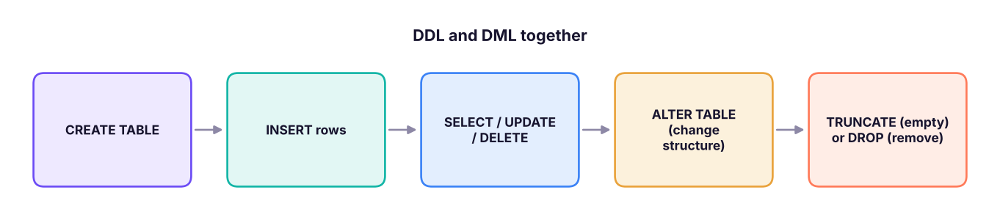
DDL creates and changes structure; DML fills and changes the rows inside it.
In SQL Server you would usually write IDENTITY(1,1) for an auto-numbered key, BIT for the flag and DEFAULT GETDATE() for today. Here is the same staff table in full T-SQL style, with named constraints (names make error messages and later changes much easier):
SELECT emp_id, full_name, dept_id, salary, join_date, is_active FROM staff;
Result
emp_id
full_name
dept_id
salary
join_date
is_active
1
Kavya Iyer
30
97,000
2016-02-28
True
2
Imran Reddy
10
157,000
2019-12-14
True
3
Harpreet Kulkarni
10
131,000
2024-10-05
True
4
Rahul Iyer
20
112,000
2017-02-06
True
5
Isha Mehta
40
57,000
2021-09-07
True
5 rows × 6 columns
DEFAULT filled HR's location with Bengaluru and every employee's is_active with TRUE.
TipAlways list the columns
INSERT INTO staff VALUES (…) without a column list depends on the column order and breaks the day someone adds a column. Always write INSERT INTO staff (col1, col2, …) VALUES (…).
INSERT … SELECT and SELECT … INTO
Copy rows from a query into a table:
SQL
-- Into an existing tableINSERTINTO staff_archive (emp_id, full_name, dept_id, salary)
SELECT emp_id, full_name, dept_id, salary
FROM staff
WHERE is_active = 0;
-- SQL Server: create a NEW table from a query (structure + data, no constraints)SELECT emp_id, full_name, salary
INTO staff_backup_2026
FROM staff;
The portable equivalent of SELECT … INTO is CREATE TABLE new_table AS SELECT … (PostgreSQL, MySQL, Snowflake, DuckDB).
What constraints do when rules are broken
Constraints reject bad data at the database, whatever app or person sends it. These statements would all fail in SQL Server with the messages shown (abridged):
Statement
Broken rule
SQL Server message
INSERT INTO departments VALUES (10,'Ops','Pune')
PRIMARY KEY
Violation of PRIMARY KEY constraint 'pk_departments'. Cannot insert duplicate key … The duplicate key value is (10).
INSERT INTO staff (…, email, …) VALUES (…, 'kavya@abc.in', …)
INSERT INTO staff (…, dept_id, …) VALUES (…, 99, …)
FOREIGN KEY
The INSERT statement conflicted with the FOREIGN KEY constraint "fk_staff_dept".
INSERT INTO staff (emp_id, email, dept_id) VALUES (9,'x@abc.in',10)
NOT NULL
Cannot insert the value NULL into column 'full_name' … column does not allow nulls. INSERT fails.
UPDATE staff SET salary = -500 WHERE emp_id = 1
CHECK
The UPDATE statement conflicted with the CHECK constraint "ck_staff_salary".
DELETE FROM departments WHERE dept_id = 10
FOREIGN KEY (children exist)
The DELETE statement conflicted with the REFERENCE constraint "fk_staff_dept".
Our practice engine raises the same kind of error. For example, trying to add an employee to a department that does not exist:
Output
Error: Constraint Error: Violates foreign key constraint because key "dept_id: 99" does not exist in the referenced table
UPDATE: changing rows
SQL
-- Give everyone in Finance a 5% raiseUPDATE staff
SET salary = salary * 1.05WHERE dept_id = 10;
-- Change two columns for one personUPDATE staff
SET dept_id = 20, salary = 60000WHERE emp_id = 5;
SELECT emp_id, full_name, dept_id, salary FROM staff ORDERBY emp_id;
Result
(2 rows affected)
(1 row affected)
emp_id
full_name
dept_id
salary
1
Kavya Iyer
30
97,000
2
Imran Reddy
10
164,850
3
Harpreet Kulkarni
10
137,550
4
Rahul Iyer
20
112,000
5
Isha Mehta
20
60,000
5 rows × 4 columns
Watch outUPDATE or DELETE without WHERE changes EVERY row
UPDATE staff SET salary = 0; sets every salary to zero. Before any UPDATE or DELETE:
1. Write the WHERE first and run it as a SELECT to see exactly which rows will change.
2. Wrap the change in a transaction (BEGIN TRAN … then check, then COMMIT or ROLLBACK) (Lesson 14).
3. On production data, take a backup or work in a copy.
UPDATE with a join (SQL Server)
SQL
-- Mark staff in Mumbai departments as 'on-site'UPDATE s
SET s.work_mode = 'on-site'FROM staff AS s
JOIN departments AS d ON d.dept_id = s.dept_id
WHERE d.location = 'Mumbai';
DELETE: removing rows
SQL
DELETEFROM staff
WHERE emp_id = 5;
SELECTCOUNT(*) AS staff_left FROM staff;
ALTERTABLE staff ADD phone VARCHAR(15) NULL; -- add a column (no COLUMN keyword in T-SQL)ALTERTABLE staff ALTERCOLUMN full_name NVARCHAR(150) NOTNULL; -- change type / nullabilityALTERTABLE staff DROPCOLUMN phone; -- remove a columnALTERTABLE staff ADDCONSTRAINT ck_staff_mode CHECK (work_mode IN ('remote','hybrid','on-site'));
ALTERTABLE staff DROPCONSTRAINT ck_staff_mode; -- remove a constraint by nameEXEC sp_rename 'staff.full_name', 'employee_name', 'COLUMN'; -- rename a columnEXEC sp_rename 'staff', 'employees_master'; -- rename a table
NoteChanging a column that has data
Making a column smaller (VARCHAR(100) → VARCHAR(10)) fails if existing values do not fit; adding NOT NULL fails if NULLs exist. Clean the data first, or add a DEFAULT.
DELETE vs TRUNCATE vs DROP
This is one of the most common SQL interview questions.
DELETE
TRUNCATE TABLE
DROP TABLE
Family
DML
DDL
DDL
Removes
Some or all rows
All rows
The whole table: rows, structure, indexes, constraints, permissions
WHERE allowed
Yes
No
No
Speed on large tables
Slower: logs each row
Very fast: deallocates pages
Fast
Logging
Every row logged
Minimal (page deallocations)
Minimal
Fires DELETE triggers
Yes
No
No
Resets IDENTITY
No
Yes, back to the seed
Table is gone
Works when referenced by a FK
Yes (if no child rows violate it)
No
No (drop the FK first)
Can be rolled back in a transaction
Yes
Yes in SQL Server (inside an explicit transaction)
Yes in SQL Server (inside an explicit transaction)
SQL
CREATETABLE temp_log (id INT, msg VARCHAR(50));
INSERTINTO temp_log VALUES (1, 'start'), (2, 'load'), (3, 'end');
DELETEFROM temp_log WHERE id = 2; -- removes one rowSELECTCOUNT(*) AS after_delete FROM temp_log;
The SSMS Import Flat File wizard is easier for one-off loads; BULK INSERT, bcp or an ETL tool (SSIS, Azure Data Factory, Fabric pipelines) are used for repeatable loads.
Do it with AIDo it with AI
Ask: "Write SQL Server CREATE TABLE statements with constraints for a hospital database: patients, doctors, appointments (a patient can see many doctors; a doctor sees many patients). Include primary keys, foreign keys, CHECK constraints for appointment status, and sensible data types." Then review it: are the keys right, is money DECIMAL, are dates DATE/DATETIME2, are the constraints named?
Constraints (PK, FK, UNIQUE, NOT NULL, CHECK, DEFAULT, IDENTITY) protect data quality at the source; name them.
Always list columns in INSERT; always test the WHERE of an UPDATE/DELETE with a SELECT first, inside a transaction.
DELETE removes chosen rows (logged, triggers fire); TRUNCATE empties the table fast and resets IDENTITY; DROP removes the table.
MERGE performs upserts; BULK INSERT and the Import wizard load files.
Quick quiz6 questions · tap an answer to check it
1. Which statement removes all rows but keeps the table structure and resets the IDENTITY counter?
Answer: B. TRUNCATE empties the table quickly and resets IDENTITY to its seed.
2. You run UPDATE staff SET salary = 50000; by mistake. What happened?
Answer: B. Without WHERE, UPDATE changes every row. Use transactions and test with SELECT first.
3. Which constraint stops a salary of −500?
Answer: C. CHECK validates values against a condition.
4. Inserting an employee with dept_id 99 fails with a FOREIGN KEY error. Why?
Answer: B. A foreign key value must exist in the referenced table.
5. Which is TRUE about DELETE?
Answer: A. DELETE is DML, works row by row with a WHERE, and fires triggers.
6. How do you add a column phone to staff in SQL Server?
Answer: B. T-SQL uses ADD without the COLUMN keyword (PostgreSQL/MySQL accept ADD COLUMN).
ExerciseBuild and populate a small schema
Create projects(project_id PK, name UNIQUE NOT NULL, budget DECIMAL(12,2) CHECK budget ≥ 0, start_date DATE, status with CHECK IN ('planned','active','closed') DEFAULT 'planned') and assignments(project_id FK, emp_id FK, role, hours, PRIMARY KEY (project_id, emp_id)). Insert 3 projects and 4 assignments, raise the budget of active projects by 10%, close one project, and delete assignments of closed projects.
Show solution
SQL
CREATETABLE projects (
project_id INTPRIMARYKEY, name VARCHAR(80) NOTNULLUNIQUE,
budget DECIMAL(12,2) CHECK (budget >= 0), start_date DATE,
status VARCHAR(10) DEFAULT'planned'CHECK (status IN ('planned','active','closed')));
CREATETABLE assignments (
project_id INTREFERENCESprojects(project_id), emp_id INTREFERENCESstaff(emp_id),
role VARCHAR(30), hours INTCHECK (hours > 0), PRIMARYKEY (project_id, emp_id));
INSERTINTO projects (project_id, name, budget, start_date, status) VALUES
(1,'CRM revamp',2500000,'2026-01-10','active'), (2,'Payroll audit',600000,'2026-03-01','active'), (3,'Data lake',4000000,'2026-06-01','planned');
INSERTINTO assignments VALUES (1,1,'Analyst',120),(1,4,'Developer',300),(2,2,'Lead',80),(3,3,'Architect',40);
UPDATE projects SET budget = budget * 1.10WHERE status = 'active';
UPDATE projects SET status = 'closed'WHERE project_id = 2;
DELETEFROM assignments WHERE project_id IN (SELECT project_id FROM projects WHERE status = 'closed');
Interview cornerQuestions you may be asked
Q: DELETE vs TRUNCATE vs DROP?
DELETE (DML) removes chosen rows with WHERE, logs each row, fires triggers and keeps IDENTITY. TRUNCATE (DDL) removes all rows quickly, minimal logging, resets IDENTITY, no WHERE, not allowed when referenced by a FK. DROP removes the whole table and its definition.
Q: What are constraints and why use them instead of app validation?
Rules enforced by the database (PK, FK, UNIQUE, NOT NULL, CHECK, DEFAULT). They protect data no matter which app, script or person writes to the table.
Q: How do you safely run an UPDATE on production?
Run the WHERE as a SELECT first, wrap in BEGIN TRAN, check @@ROWCOUNT and the result, then COMMIT or ROLLBACK; have a backup.
SQL for Data Analysis · Lesson 5
SELECT, WHERE, ORDER BY & Filtering Operators
Retrieve exactly the rows and columns you need. Master SELECT, aliases with AS, DISTINCT, TOP, WHERE with comparison and logical operators, IN, BETWEEN, LIKE wildcards, IS NULL, ORDER BY, and the logical order in which SQL processes a query.
● SQL class 3✦ SQL Server 2022, 2026Beginner⏱ 120 min
By the end of this lesson you can
Select columns, calculated expressions and aliases, and remove duplicates with DISTINCT
Filter rows with comparison, logical, IN, NOT IN, BETWEEN, LIKE, NOT LIKE, IS NULL and IS NOT NULL
Sort results by one or more columns, expressions and positions; limit rows with TOP
Explain the logical processing order of a query and why it matters for aliases
Translate business questions into correct SELECT statements
The shape of a SELECT statement
SQL
SELECT column_list -- what to showFROM table_name -- where it comes fromWHERE row_conditions -- which rows to keepGROUPBY grouping_columns -- (Lesson 7)HAVING group_conditions -- (Lesson 7)ORDERBY sort_columns; -- how to sort the result
Only SELECT is required (SELECT 1 + 1; works). Everything else is optional but must appear in this order.
SELECT: columns, expressions and aliases
SQL
SELECTTOP5
order_id,
order_date,
customer_name,
sales,
profit,
sales - profit AS cost,
ROUND(100.0 * profit / sales, 1) AS margin_pct,
'INR'AS currency
FROM superstore;
Result
order_id
order_date
customer_name
sales
profit
cost
margin_pct
currency
IN-2023-00001
2023-01-01
Ishaan Gupta
36,000
3,472.55
32,527.45
9.6
INR
IN-2023-00001
2023-01-01
Ishaan Gupta
3,850
1,169.54
2,680.46
30.4
INR
IN-2023-00001
2023-01-01
Ishaan Gupta
62,080
6,044.47
56,035.53
9.7
INR
IN-2023-00002
2023-01-03
Kabir Singh
5,216
450.16
4,765.84
8.6
INR
IN-2023-00003
2023-01-03
Sneha Khan
24,591
-5,512.33
30,103.33
-22.4
INR
5 rows × 8 columns
SELECT * returns every column. Use it to explore, never in production code (it breaks when columns change and reads more data than needed).
An alias renames a column or table in the result: AS margin_pct. AS is optional (sales - profit cost) but makes code clearer. Aliases with spaces need brackets or quotes: AS [Margin %].
Expressions can use operators, functions and literals.
Table aliases
SQL
SELECT s.order_id, s.sales
FROM superstore AS s; -- 's' is a short name for the table
Table aliases become essential with joins (Lesson 8).
DISTINCT: unique values
SQL
SELECTDISTINCT region
FROM superstore
ORDERBY region;
Result
region
East
North
South
West
4 rows × 1 columns
SQL
SELECTDISTINCT category, sub_category
FROM superstore
ORDERBY category, sub_category;
Result
category
sub_category
Furniture
Bookcases
Furniture
Chairs
Furniture
Furnishings
Furniture
Tables
Office Supplies
Appliances
Office Supplies
Art
Office Supplies
Binders
Office Supplies
Paper
Office Supplies
Storage
Technology
Accessories
Technology
Copiers
Technology
Machines
13 rows × 2 columns (first 12 shown)
DISTINCT applies to the whole row of selected columns: the second query returns each category–sub-category combination once. To count unique values: COUNT(DISTINCT customer_id).
TOP: limit the rows
SQL
SELECTTOP5 order_id, customer_name, city, sales
FROM superstore
ORDERBY sales DESC;
Result
order_id
customer_name
city
sales
IN-2024-01857
Arjun Fernandes
Delhi
619,290
IN-2023-00564
Krishna Reddy
Hyderabad
551,530
IN-2024-01040
Aditya Kulkarni
Chennai
551,530
IN-2025-02880
Farhan Khan
Kochi
530,820
IN-2023-00809
Rohan Singh
Jaipur
526,396
5 rows × 4 columns
Dialect
Syntax for "first 5 rows"
SQL Server
SELECT TOP 5 … ORDER BY … (also TOP 10 PERCENT, TOP 5 WITH TIES)
SQL Server 2012+, ANSI
ORDER BY … OFFSET 0 ROWS FETCH NEXT 5 ROWS ONLY (Lesson 11)
PostgreSQL, MySQL, SQLite, DuckDB
… ORDER BY … LIMIT 5
Oracle
FETCH FIRST 5 ROWS ONLY
Watch outTOP without ORDER BY
Without ORDER BY, the database returns rows in no guaranteed order, so "top 5" may differ between runs. Always sort when you use TOP.
WHERE: filtering rows
Comparison operators
SQL
SELECTCOUNT(*) AS lines_over_50k
FROM superstore
WHERE sales > 50000;
Result
lines_over_50k
1126
1 rows × 1 columns
SQL
SELECT order_id, city, category, sales, discount
FROM superstore
WHERE region = 'West'AND category = 'Furniture'AND discount >= 0.3ORDERBY sales DESC;
Result
order_id
city
category
sales
discount
IN-2025-02904
Ahmedabad
Furniture
76,048
0.3
IN-2025-02783
Pune
Furniture
69,762
0.3
IN-2024-01002
Indore
Furniture
58,135
0.3
IN-2023-00431
Ahmedabad
Furniture
54,474
0.3
IN-2025-02016
Ahmedabad
Furniture
54,138
0.3
IN-2024-01490
Indore
Furniture
49,728
0.3
139 rows × 5 columns (first 6 shown)
Text values go in single quotes ('West'). Double quotes are for identifiers in standard SQL. Dates are written as text in ISO format: order_date >= '2025-01-01'.
IN and NOT IN
IN is shorthand for several OR conditions on the same column.
SQL
SELECT city, COUNT(*) AS order_lines
FROM superstore
WHERE city IN ('Pune', 'Mumbai', 'Ahmedabad')
GROUPBY city
ORDERBY city;
Result
city
order_lines
Ahmedabad
373
Mumbai
283
Pune
529
3 rows × 2 columns
SQL
SELECTCOUNT(*) AS non_metro_lines
FROM superstore
WHERE city NOTIN ('Delhi', 'Mumbai', 'Bengaluru', 'Chennai', 'Kolkata', 'Hyderabad');
Result
non_metro_lines
3918
1 rows × 1 columns
Common mistakesNOT IN with a NULL
If the list (or subquery) inside NOT IN contains a NULL, NOT IN returns no rows at all, because x <> NULL is UNKNOWN. Use NOT EXISTS (Lesson 10) or filter NULLs out of the subquery.
BETWEEN
BETWEEN a AND b is inclusive of both ends.
SQL
SELECTCOUNT(*) AS lines_between_10k_and_20k
FROM superstore
WHERE sales BETWEEN10000AND20000;
Result
lines_between_10k_and_20k
896
1 rows × 1 columns
For dates, prefer a half-open range: order_date >= '2025-01-01' AND order_date < '2026-01-01'. It works whether the column is DATE or DATETIME2; BETWEEN '2025-01-01' AND '2025-12-31' silently misses orders placed after midnight on 31-Dec when the column has times.
SQL
SELECTCOUNT(DISTINCT order_id) AS orders_in_2025
FROM superstore
WHERE order_date >= '2025-01-01'AND order_date < '2026-01-01';
Result
orders_in_2025
1232
1 rows × 1 columns
LIKE: pattern matching
Wildcard
Meaning
Example
Matches
%
Any sequence of characters (including none)
'Apex%'
Apex Chair 412, Apex Phone 118
_
Exactly one character
'C00_1'
C0011, C0021 …
[ ] (SQL Server)
One character from a set or range
'[A-C]%'
starts with A, B or C
[^ ] (SQL Server)
One character not in the set
'[^A-M]%'
starts with N–Z
SQL
SELECTDISTINCT product_name
FROM superstore
WHERE product_name LIKE'Apex Ch%'ORDERBY product_name;
Result
product_name
Apex Chair 969
1 rows × 1 columns
SQL
SELECTCOUNT(DISTINCT customer_id) AS customers_named_with_khan
FROM superstore
WHERE customer_name LIKE'%Khan%';
Result
customers_named_with_khan
44
1 rows × 1 columns
SQL
SELECTDISTINCT city
FROM superstore
WHERE city NOTLIKE'%a%'-- city names without a lowercase 'a'ORDERBY city;
Result
city
Delhi
Indore
Kochi
Lucknow
Pune
5 rows × 1 columns
NoteCase sensitivity
SQL Server's default collation is case-insensitive, so LIKE 'apex%' also matches "Apex…". PostgreSQL is case-sensitive (use ILIKE), and so is the practice engine used for the outputs in this handbook. Write patterns in the same case as the data to be safe everywhere.
Leading wildcards ('%Khan') cannot use an index and scan the whole table; fine for analysis, slow for apps on big tables.
IS NULL and IS NOT NULL
SQL
SELECTCOUNT(*) AS homes_missing_area
FROM houses
WHERE area_sqft ISNULL;
Result
homes_missing_area
25
1 rows × 1 columns
(The houses table is loaded from house_prices.csv; 25 houses have a missing area, which you will clean in the Python track.)
Combining conditions
SQL
SELECT order_id, region, category, ship_mode, sales, profit
FROM superstore
WHERE (region = 'North'OR region = 'East')
AND category <> 'Office Supplies'AND ship_mode IN ('First Class', 'Same Day')
AND profit < 0ORDERBY profit;
Result
order_id
region
category
ship_mode
sales
profit
IN-2023-00320
North
Technology
Same Day
337,316
-67,392.8
IN-2024-01213
East
Technology
Same Day
317,128
-35,733.2
IN-2024-01808
North
Technology
First Class
155,328
-31,737.4
IN-2023-00406
North
Technology
First Class
159,390
-27,928.8
IN-2023-00358
North
Technology
Same Day
77,664
-18,678.2
IN-2024-01289
East
Technology
First Class
149,088
-18,075.8
IN-2025-02849
East
Technology
First Class
81,522
-17,598.3
IN-2024-01055
East
Technology
First Class
86,968
-16,505.7
128 rows × 6 columns (first 8 shown)
ORDER BY: sorting
SQL
SELECT region, city, COUNT(*) AS lines, ROUND(SUM(sales), 0) AS sales
FROM superstore
GROUPBY region, city
ORDERBY region ASC, sales DESC;
Result
region
city
lines
sales
East
Kolkata
430
13,888,466
East
Patna
375
12,444,393
East
Bhubaneswar
383
10,482,685
East
Guwahati
335
9,668,576
North
Delhi
453
15,657,610
North
Chandigarh
361
11,541,792
North
Lucknow
422
11,328,882
North
Jaipur
294
10,489,878
16 rows × 4 columns (first 8 shown)
ASC (default) or DESC for each column separately.
Sort by an expression or alias: ORDER BY sales - profit DESC, ORDER BY margin_pct.
Sort by column position (ORDER BY 2 DESC) works but is fragile; avoid it in saved code.
NULLs sort first in ascending order in SQL Server (last in PostgreSQL/Oracle by default).
Custom order with CASE: ORDER BY CASE ship_mode WHEN 'Same Day' THEN 1 WHEN 'First Class' THEN 2 ELSE 3 END.
The logical processing order
You writeSELECT first, but SQL processes the clauses in a different order. This explains several common errors.
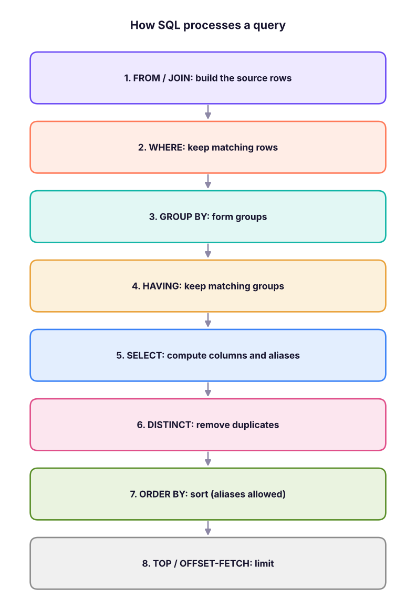
Logical processing order of a SELECT statement. Each step works on the output of the previous one.
Consequences:
You cannot use a column alias in WHERE, because WHERE runs before SELECT: WHERE margin_pct > 10 fails. Repeat the expression, or use a subquery/CTE.
You can use an alias in ORDER BY, because it runs after SELECT.
WHERE cannot contain aggregate functions (WHERE SUM(sales) > 100); use HAVING (Lesson 7).
SQL
-- Fails: Invalid column name 'margin_pct'SELECT order_id, 100.0 * profit / sales AS margin_pct
FROM superstore
WHERE margin_pct > 10;
-- Works: repeat the expression in WHERE, use the alias in ORDER BYSELECT order_id, 100.0 * profit / sales AS margin_pct
FROM superstore
WHERE100.0 * profit / sales > 10ORDERBY margin_pct DESC;
From business question to query
Step by stepTranslate a question
Question: "Which Technology orders in the South had a discount but still made more than ₹10,000 profit in 2025? Show the biggest first."
1. Table: superstore.
2. Rows (WHERE): category = Technology, region = South, discount > 0, profit > 10000, order date in 2025.
3. Columns (SELECT): order_id, order_date, city, sub_category, discount, profit.
4. Order: profit descending.
SQL
SELECT order_id, order_date, city, sub_category, discount, profit
FROM superstore
WHERE category = 'Technology'AND region = 'South'AND discount > 0AND profit > 10000AND order_date >= '2025-01-01'AND order_date < '2026-01-01'ORDERBY profit DESC;
Result
order_id
order_date
city
sub_category
discount
profit
IN-2025-02318
2025-04-26
Kochi
Machines
0.1
21,209.4
IN-2025-02908
2025-10-29
Bengaluru
Phones
0.1
16,734.2
IN-2025-02157
2025-03-08
Bengaluru
Copiers
0.1
12,678.4
IN-2025-03094
2025-12-08
Bengaluru
Machines
0.1
11,292.0
IN-2025-02514
2025-07-09
Bengaluru
Machines
0.1
10,891.9
IN-2025-03146
2025-12-20
Bengaluru
Copiers
0.1
10,679.1
IN-2025-02547
2025-07-20
Kochi
Phones
0.1
10,558.6
7 rows × 6 columns
Do it with AIDo it with AI
Give an assistant your table's column list and a question, and ask for SQL Server syntax: "Table superstore(order_id, order_date, region, city, category, sub_category, sales, discount, profit). Write a T-SQL query for: Furniture orders in Kolkata or Patna in 2024 with negative profit, sorted by profit." Read the query before running it: check the date range, the brackets around OR, and that it uses the column names you gave.
Summary
Key takeaways
SELECT columns and expressions; name them with AS; avoid SELECT * in saved queries.
DISTINCT removes duplicate rows of the selected columns; TOP n with ORDER BY limits results.
Filter with =, <>, >, <, >=, <=, AND/OR/NOT (use brackets), IN, BETWEEN (inclusive), LIKE with % and _, and IS NULL.
For dates use half-open ranges: >= start AND < next_start.
ORDER BY sorts ascending by default; can use aliases.
Logical order: FROM → WHERE → GROUP BY → HAVING → SELECT → DISTINCT → ORDER BY → TOP. That is why aliases fail in WHERE.
Quick quiz6 questions · tap an answer to check it
1. Which query returns each distinct region exactly once?
Answer: B. DISTINCT removes duplicate rows from the result.
2.WHERE sales BETWEEN 100 AND 200 includes which values?
Answer: B. BETWEEN is inclusive of both boundaries.
3. Which pattern finds product names that contain "Desk" anywhere?
Answer: C. % on both sides matches any characters before and after.
4. Why does WHERE margin_pct > 10 fail when margin_pct is an alias defined in SELECT?
Answer: A. Logical order: WHERE comes before SELECT.
5. What is wrong with WHERE order_date BETWEEN '2025-01-01' AND '2025-12-31' on a DATETIME2 column?
Answer: B. '2025-12-31' means midnight; later times that day are excluded. Use < '2026-01-01'.
6.SELECT TOP 3 * FROM orders without ORDER BY returns:
Answer: C. Without ORDER BY, row order is not defined.
ExerciseSuperstore filters
Write queries for: (1) all Same Day orders in the West with sales over ₹50,000; (2) customers whose names start with A, B or C (distinct, sorted); (3) order lines with a 40% discount in the Furniture category, showing the 10 biggest losses; (4) the number of order lines in 2024 for the Corporate segment in Pune or Indore.
Show solution
SQL
-- (1)SELECT order_id, order_date, city, sales FROM superstore
WHERE ship_mode = 'Same Day'AND region = 'West'AND sales > 50000ORDERBY sales DESC;
-- (2) SQL ServerSELECTDISTINCT customer_name FROM superstore WHERE customer_name LIKE'[A-C]%'ORDERBY customer_name;
-- (3)SELECTTOP10 order_id, product_name, sales, profit FROM superstore
WHERE discount = 0.4AND category = 'Furniture'ORDERBY profit ASC;
-- (4)SELECTCOUNT(*) AS lines FROM superstore
WHERE segment = 'Corporate'AND city IN ('Pune', 'Indore')
AND order_date >= '2024-01-01'AND order_date < '2025-01-01';
Interview cornerQuestions you may be asked
Q: What is the order of execution of a SQL query?
FROM/JOIN, WHERE, GROUP BY, HAVING, SELECT, DISTINCT, ORDER BY, then TOP/OFFSET-FETCH.
Q: Difference between WHERE and HAVING?
WHERE filters rows before grouping and cannot use aggregates; HAVING filters groups after aggregation.
Q: How do you find employees whose name's second letter is "a"?WHERE name LIKE '_a%'.
Q: IN vs EXISTS?
IN compares a value with a list or subquery result; EXISTS checks whether a correlated subquery returns any row. EXISTS is safer with NULLs and often efficient for large subqueries (Lesson 10).
SQL for Data Analysis · Lesson 6
SQL Functions: Aggregate, Text, Date & Number
Use SQL Server's built-in functions to summarise, clean and reshape data. Aggregate functions (COUNT, SUM, AVG, MIN, MAX, STRING_AGG), text functions (LEN, LEFT, RIGHT, SUBSTRING, CHARINDEX, REPLACE, TRIM, UPPER, CONCAT), date functions (GETDATE, YEAR, MONTH, DATEPART, DATENAME, DATEADD, DATEDIFF, EOMONTH) and number functions (ROUND, CEILING, FLOOR, ABS, POWER, SQRT), plus CAST and CONVERT.
● SQL class 4✦ SQL Server 2022, 2026Beginner–Intermediate⏱ 120 min
By the end of this lesson you can
Distinguish scalar functions (one value per row) from aggregate functions (one value per group)
Summarise data with COUNT(*), COUNT(column), COUNT(DISTINCT), SUM, AVG, MIN, MAX and STRING_AGG
Clean and extract text with LEN, LEFT, RIGHT, SUBSTRING, CHARINDEX, REPLACE, TRIM, UPPER, LOWER and CONCAT
Work with dates using YEAR, MONTH, DATEPART, DATENAME, DATEADD, DATEDIFF, EOMONTH and DATEFROMPARTS
Round and convert numbers with ROUND, CEILING, FLOOR, ABS, POWER, SQRT, CAST, CONVERT and TRY_CAST
Two kinds of functions
Scalar functions return one value per row. Aggregate functions collapse many rows into one value (per group).
Aggregate functions
Function
Returns
NULL handling
COUNT(*)
Number of rows
Counts every row
COUNT(col)
Number of non-NULL values
Skips NULLs
COUNT(DISTINCT col)
Number of distinct non-NULL values
Skips NULLs
SUM(col)
Total
Skips NULLs
AVG(col)
Average of non-NULL values
Skips NULLs (they are not treated as 0)
MIN(col), MAX(col)
Smallest / largest (numbers, text, dates)
Skips NULLs
STDEV(col), VAR(col)
Sample standard deviation / variance
Skips NULLs
STRING_AGG(col, sep)
Values joined into one string
Skips NULLs
SQL
SELECTCOUNT(*) AS order_lines,
COUNT(DISTINCT order_id) AS orders,
COUNT(DISTINCT customer_id) AS customers,
ROUND(SUM(sales), 0) AS total_sales,
ROUND(AVG(sales), 0) AS avg_line_sales,
MIN(order_date) AS first_order,
MAX(order_date) AS last_order,
ROUND(STDEV(sales), 0) AS sd_sales
FROM superstore;
Result
order_lines
orders
customers
total_sales
avg_line_sales
first_order
last_order
sd_sales
6323
3200
785
201,413,569
31,854
2023-01-01
2025-12-31
60,414
1 rows × 8 columns
SQL
SELECT category,
STRING_AGG(sub_category, ', ') AS sub_categories
FROM (SELECTDISTINCT category, sub_category FROM superstore) AS t
GROUPBY category
ORDERBY category;
Result
category
sub_categories
Furniture
Bookcases, Chairs, Tables, Furnishings
Office Supplies
Appliances, Art, Binders, Storage, Paper
Technology
Phones, Machines, Copiers, Accessories
3 rows × 2 columns
In SQL Server add WITHIN GROUP (ORDER BY sub_category) after STRING_AGG(...) to control the order of the joined values.
Watch outAVG of integers
AVG on an INT column returns an integer in SQL Server (AVG of 1, 2 = 1). Use AVG(quantity * 1.0) or AVG(CAST(quantity AS DECIMAL(10,2))) for decimals.
Text (string) functions
Function
Example
Result
LEN(s)
LEN('Pune ')
4 (trailing spaces not counted)
UPPER(s), LOWER(s)
UPPER('pune')
PUNE
LEFT(s, n), RIGHT(s, n)
LEFT('IN-2025-00042', 2)
IN
SUBSTRING(s, start, n)
SUBSTRING('IN-2025-00042', 4, 4)
2025
CHARINDEX(find, s)
CHARINDEX('-', 'IN-2025-00042')
3
REPLACE(s, old, new)
REPLACE('2025-04-27', '-', '/')
2025/04/27
TRIM(s), LTRIM, RTRIM
TRIM(' Delhi ')
Delhi
CONCAT(a, b, …)
CONCAT(city, ', ', state)
Pune, Maharashtra
REVERSE(s)
REVERSE('abc')
cba
REPLICATE(s, n)
REPLICATE('*', 3)
***
STRING_SPLIT(s, sep)
SELECT value FROM STRING_SPLIT('a,b,c', ',')
3 rows
FORMAT(value, fmt)
FORMAT(1234567, 'N0', 'en-IN')
12,34,567
SQL
SELECTTOP6
order_id,
LEFT(order_id, 2) AS country,
SUBSTRING(order_id, 4, 4) AS order_year,
RIGHT(order_id, 5) AS order_no,
product_name,
LEFT(product_name, CHARINDEX(' ', product_name) - 1) AS brand,
UPPER(city) AS city_upper,
LEN(customer_name) AS name_length
FROM superstore
ORDERBY row_id;
Result
order_id
country
order_year
order_no
product_name
brand
city_upper
name_length
IN-2023-00001
IN
2023
00001
Nova Phone 223
Nova
BENGALURU
12
IN-2023-00001
IN
2023
00001
Orbit Appliance 798
Orbit
BENGALURU
12
IN-2023-00001
IN
2023
00001
Orbit Table 248
Orbit
BENGALURU
12
IN-2023-00002
IN
2023
00002
Crest Storage 946
Crest
AHMEDABAD
11
IN-2023-00003
IN
2023
00003
Crest Bookcase 170
Crest
AHMEDABAD
10
IN-2023-00003
IN
2023
00003
Zenith Table 111
Zenith
AHMEDABAD
10
6 rows × 8 columns
The brand is everything before the first space: CHARINDEX(' ', product_name) finds the space position, and LEFT(…, position − 1) cuts there. This is the SQL version of Excel's LEFT(A2, FIND(" ", A2) - 1) from Excel Lesson 5.
Cleaning text
SQL
WITH raw AS (
SELECT' bengaluru 'AS city UNIONALLSELECT'BENGALURU'UNIONALLSELECT'Bangalore'UNIONALLSELECT'Bengaluru'
)
SELECT city AS raw_value,
CONCAT(UPPER(LEFT(TRIM(city), 1)), LOWER(SUBSTRING(TRIM(city), 2, 100))) AS proper_case,
CASEWHENLOWER(TRIM(city)) IN ('bangalore', 'bengaluru') THEN'Bengaluru'ELSETRIM(city) ENDAS standardised
FROM raw;
Result
raw_value
proper_case
standardised
bengaluru
Bengaluru
Bengaluru
BENGALURU
Bengaluru
Bengaluru
Bangalore
Bangalore
Bengaluru
Bengaluru
Bengaluru
Bengaluru
4 rows × 3 columns
(SQL Server has no PROPER function; joining UPPER(LEFT(…,1)) and LOWER(SUBSTRING(…,2,…)) capitalises the first letter of a single word. Standardising spellings is best done with CASE or a mapping table joined in.)
Note`+` vs CONCAT for text
In SQL Server 'a' + 'b' joins text, but 'a' + NULL is NULL and 'Q' + 2 fails (it tries to convert 'Q' to a number). CONCAT('Q', 2) gives Q2 and treats NULL as empty. Prefer CONCAT.
Date and time functions
Function
Example (d = '2026-04-27')
Result
GETDATE(), SYSDATETIME()
Current date and time
CAST(GETDATE() AS DATE)
Today's date
YEAR(d), MONTH(d), DAY(d)
MONTH(d)
4
DATEPART(part, d)
DATEPART(quarter, d)
2
DATENAME(part, d)
DATENAME(month, d), DATENAME(weekday, d)
April, Monday
DATEADD(part, n, d)
DATEADD(month, 3, d)
2026-07-27
DATEDIFF(part, start, end)
DATEDIFF(day, '2026-04-01', d)
26
EOMONTH(d, [n])
EOMONTH(d)
2026-04-30
DATEFROMPARTS(y, m, d)
DATEFROMPARTS(2026, 4, 1)
2026-04-01
DATETRUNC(part, d) (2022+)
DATETRUNC(month, d)
2026-04-01
FORMAT(d, 'MMM-yyyy')
Apr-2026
Date parts you can use: year, quarter, month, dayofyear, day, week, weekday, hour, minute, second.
SQL
SELECTTOP6
order_id,
order_date,
ship_date,
YEAR(order_date) AS yr,
DATEPART(quarter, order_date) AS qtr,
DATENAME(month, order_date) AS month_name,
DATENAME(weekday, order_date) AS weekday_name,
DATEDIFF(day, order_date, ship_date) AS days_to_ship,
EOMONTH(order_date) AS month_end
FROM orders
ORDERBY order_date DESC;
Result
order_id
order_date
ship_date
yr
qtr
month_name
weekday_name
days_to_ship
month_end
IN-2025-03197
2025-12-31
2026-01-04
2025
4
December
Wednesday
4
2025-12-31
IN-2025-03198
2025-12-31
2026-01-04
2025
4
December
Wednesday
4
2025-12-31
IN-2025-03199
2025-12-31
2026-01-02
2025
4
December
Wednesday
2
2025-12-31
IN-2025-03200
2025-12-31
2026-01-06
2025
4
December
Wednesday
6
2025-12-31
IN-2025-03194
2025-12-30
2026-01-03
2025
4
December
Tuesday
4
2025-12-31
IN-2025-03195
2025-12-30
2026-01-06
2025
4
December
Tuesday
7
2025-12-31
6 rows × 9 columns
SQL
SELECT ship_mode,
COUNT(*) AS orders,
AVG(DATEDIFF(day, order_date, ship_date) * 1.0) AS avg_days_to_ship,
MAX(DATEDIFF(day, order_date, ship_date)) AS max_days
FROM orders
GROUPBY ship_mode
ORDERBY avg_days_to_ship;
Result
ship_mode
orders
avg_days_to_ship
max_days
Same Day
176
0.00
0
First Class
467
1.53
2
Second Class
621
3.00
4
Standard Class
1936
5.54
7
4 rows × 4 columns
Watch outDATEDIFF counts boundaries
DATEDIFF(year, '2025-12-31', '2026-01-01') returns 1, because one year boundary is crossed, even though only one day passed. For exact age use DATEDIFF(day, …)/365.25 or compare month and day as well.
Useful date patterns
SQL
-- Orders in the last 30 daysWHERE order_date >= DATEADD(day, -30, CAST(GETDATE() ASDATE))
-- First day of the monthSELECTDATEFROMPARTS(YEAR(order_date), MONTH(order_date), 1) -- or DATETRUNC(month, order_date)-- Indian financial year (April–March)SELECTCASEWHENMONTH(order_date) >= 4THENYEAR(order_date) + 1ELSEYEAR(order_date) ENDAS fy
-- Month label for reportsSELECTFORMAT(order_date, 'MMM-yyyy') AS month_label
Number functions
Function
Example
Result
ROUND(n, d)
ROUND(1234.567, 1)
1234.600
ROUND(n, -2)
ROUND(1234.567, -2)
1200.000
CEILING(n)
CEILING(4.1)
5
FLOOR(n)
FLOOR(4.9)
4
ABS(n)
ABS(-250)
250
POWER(n, p)
POWER(2, 10)
1024
SQRT(n), SQUARE(n)
SQRT(144)
12
SIGN(n)
SIGN(-3)
−1
n % m
17 % 5
2
RAND()
Random float 0–1
SQL
SELECT sub_category,
ROUND(SUM(sales), -3) AS sales_to_thousand,
CEILING(SUM(quantity) / 12.0) AS boxes_of_12,
ROUND(100.0 * SUM(profit) / SUM(sales), 2) AS margin_pct,
ABS(SUM(profit)) AS abs_profit,
SIGN(SUM(profit)) AS profit_sign
FROM superstore
GROUPBY sub_category
ORDERBY margin_pct;
Returns NULL instead of an error: great for dirty data
TRY_CONVERT, TRY_PARSE
Same idea
SQL
-- Find rows where a text column does not contain a valid numberSELECT * FROM staging_sales WHERE amount_text ISNOTNULLANDTRY_CAST(amount_text ASDECIMAL(12,2)) ISNULL;
Conditional functions (preview)
Function
Example
COALESCE(a, b, …)
COALESCE(phone, email, 'no contact')
ISNULL(a, b)
ISNULL(discount, 0)
NULLIF(a, b)
profit / NULLIF(sales, 0)
IIF(cond, a, b)
IIF(profit < 0, 'Loss', 'Profit')
CASE WHEN … END
Multi-branch logic (Lesson 7)
SQL
SELECTTOP6 order_id, sales, profit,
IIF(profit < 0, 'Loss', 'Profit') AS result,
ROUND(profit / NULLIF(sales, 0) * 100, 1) AS margin_pct
FROM superstore
ORDERBY profit;
Result
order_id
sales
profit
result
margin_pct
IN-2025-03027
318,492
-75,874
Loss
-23.8
IN-2023-00320
337,316
-67,393
Loss
-20.0
IN-2023-00372
378,192
-59,796
Loss
-15.8
IN-2024-01335
194,160
-56,392
Loss
-29.0
IN-2025-02299
202,475
-46,375
Loss
-22.9
IN-2023-00077
240,940
-45,712
Loss
-19.0
6 rows × 5 columns
Do it with AIDo it with AI
Prompt: "In SQL Server, write a query on superstore(order_id, order_date, ship_date, ship_mode) that returns the average and 90th percentile of days to ship by ship mode and quarter." Expect it to use DATEDIFF, DATEPART(quarter, …) and PERCENTILE_CONT(0.9) WITHIN GROUP (ORDER BY …) OVER (PARTITION BY …), which you will meet with window functions in Lesson 12.
Summary
Key takeaways
Scalar functions work per row; aggregate functions summarise many rows.
Convert with CAST/CONVERT; use TRY_CAST on dirty data.
Quick quiz6 questions · tap an answer to check it
1. A column has values 10, NULL, 20. What does AVG(col) return?
Answer: B. AVG ignores NULLs: (10 + 20) / 2 = 15.
2. What does SUBSTRING('IN-2025-00042', 4, 4) return?
Answer: B. Starting at position 4, take 4 characters.
3. Which returns the number of days between order and ship dates?
Answer: B. DATEDIFF(datepart, start, end) counts the boundaries between the two dates.
4. What does ROUND(45678.9, -3) return?
Answer: C. −3 rounds to the nearest thousand.
5. Which function returns NULL instead of an error when text cannot be converted?
Answer: C. TRY_CAST and TRY_CONVERT return NULL on conversion failure.
6. Which counts unique customers?
Answer: B. COUNT(DISTINCT …) counts distinct non-NULL values.
ExerciseFunction practice on Superstore
Write one query that returns, for each order year: the number of orders, the number of distinct customers, total sales rounded to the nearest lakh (100,000), the average days to ship, and a comma-separated list of the ship modes used.
Show solution
SQL
WITH modes AS ( -- one row per year and ship modeSELECTDISTINCTYEAR(order_date) AS order_year, ship_mode FROM orders
),
mode_list AS (
SELECT order_year, STRING_AGG(ship_mode, ', ') AS ship_modes FROM modes GROUPBY order_year
)
SELECTYEAR(o.order_date) AS order_year,
COUNT(DISTINCT o.order_id) AS orders,
COUNT(DISTINCT o.customer_id) AS customers,
ROUND(SUM(oi.sales), -5) AS sales_nearest_lakh,
AVG(DATEDIFF(day, o.order_date, o.ship_date) * 1.0) AS avg_days_to_ship,
MAX(m.ship_modes) AS ship_modes
FROM orders AS o
JOIN order_items AS oi ON oi.order_id = o.order_id
JOIN mode_list AS m ON m.order_year = YEAR(o.order_date)
GROUPBYYEAR(o.order_date)
ORDERBY order_year;
STRING_AGG(DISTINCT …) is not allowed in SQL Server, so the distinct ship modes are collected in a CTE first (CTEs are covered in Lesson 13). Note that averaging days to ship over order lines weights orders with more items more heavily; average over orders alone if each order should count once.
Interview cornerQuestions you may be asked
Q: COUNT() vs COUNT(column) vs COUNT(DISTINCT column)?
COUNT() counts rows; COUNT(column) counts non-NULL values; COUNT(DISTINCT column) counts unique non-NULL values.
Q: How do you extract the domain from an email in SQL Server?SUBSTRING(email, CHARINDEX('@', email) + 1, LEN(email)) or RIGHT(email, LEN(email) - CHARINDEX('@', email)).
Q: How do you get the last day of the previous month?EOMONTH(GETDATE(), -1).
Q: Difference between CAST and CONVERT?
CAST is ANSI standard; CONVERT is SQL Server-specific and accepts a style argument for date/number formatting.
SQL for Data Analysis · Lesson 7
GROUP BY, HAVING, CASE WHEN, ROLLUP, CUBE & COALESCE
Turn rows into business summaries. Group with GROUP BY, filter groups with HAVING, create conditional columns and buckets with CASE WHEN, pivot data with conditional aggregation, and add subtotals and grand totals with ROLLUP, CUBE and GROUPING SETS, cleaning the labels with COALESCE and GROUPING().
● SQL class 4 · SQL–Power BI bridge✦ SQL Server 2022, 2026Intermediate⏱ 130 min
By the end of this lesson you can
Summarise data by one or more columns with GROUP BY and aggregate functions
Filter groups with HAVING and explain WHERE vs HAVING
Create conditional columns and buckets with CASE WHEN … THEN … ELSE … END
Build pivot-style reports with conditional aggregation
Add subtotals and grand totals with ROLLUP, CUBE and GROUPING SETS, and label them with COALESCE and GROUPING()
GROUP BY: one row per group
GROUP BY collapses rows that share the same value(s) into one row, and aggregate functions summarise each group. It is the SQL version of a pivot table (Excel Lesson 8) and of groupby() in pandas.
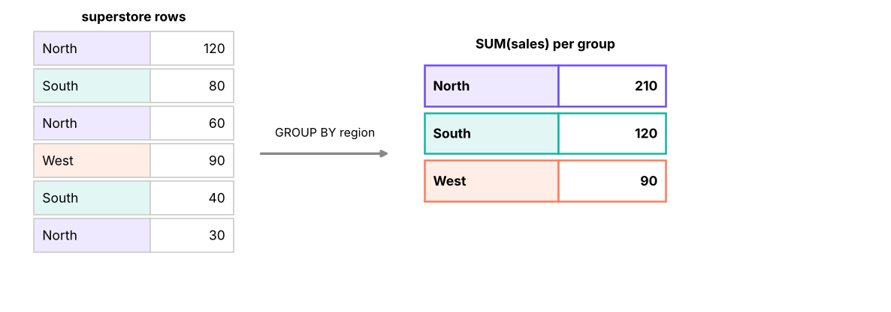
GROUP BY region: rows with the same region are collected into one group, then SUM is computed for each group.
SQL
SELECT region,
COUNT(DISTINCT order_id) AS orders,
ROUND(SUM(sales), 0) AS sales,
ROUND(SUM(profit), 0) AS profit,
ROUND(100.0 * SUM(profit) / SUM(sales), 1) AS margin_pct
FROM superstore
GROUPBY region
ORDERBY sales DESC;
Result
region
orders
sales
profit
margin_pct
South
831
53,952,769
4,702,012
8.7
West
811
51,958,521
4,719,833
9.1
North
792
49,018,161
4,555,830
9.3
East
766
46,484,119
4,374,490
9.4
4 rows × 5 columns
Grouping by several columns
SQL
SELECT category,
sub_category,
COUNT(*) AS lines,
ROUND(SUM(sales), 0) AS sales,
ROUND(SUM(profit), 0) AS profit
FROM superstore
GROUPBY category, sub_category
ORDERBY category, sales DESC;
Result
category
sub_category
lines
sales
profit
Furniture
Tables
505
14,046,224
-816,042
Furniture
Bookcases
477
11,274,849
-422,786
Furniture
Chairs
493
8,091,474
342,043
Furniture
Furnishings
442
1,429,307
78,632
Office Supplies
Appliances
492
6,333,529
944,927
Office Supplies
Storage
507
2,659,340
397,228
Office Supplies
Paper
559
493,232
75,040
Office Supplies
Binders
494
401,219
61,074
Office Supplies
Art
462
245,985
36,526
Technology
Copiers
468
78,749,926
8,436,141
Technology
Machines
491
42,590,335
5,186,711
Technology
Phones
488
31,919,223
3,663,117
13 rows × 5 columns (first 12 shown)
Grouping by an expression
SQL
SELECTYEAR(order_date) AS order_year,
COUNT(DISTINCT order_id) AS orders,
ROUND(SUM(sales), 0) AS sales
FROM superstore
GROUPBYYEAR(order_date)
ORDERBY order_year;
Result
order_year
orders
sales
2023
883
57,640,217
2024
1085
65,396,556
2025
1232
78,376,797
3 rows × 3 columns
Watch outThe golden rule of GROUP BY
Every column in SELECT must either be in the GROUP BY or inside an aggregate function. SELECT region, city, SUM(sales) FROM superstore GROUP BY region fails in SQL Server: "Column 'city' is invalid in the select list because it is not contained in either an aggregate function or the GROUP BY clause." Which city should it show for the North group? SQL refuses to guess.
HAVING: filtering groups
WHERE filters rows before grouping; HAVING filters groups after aggregation.
SQL
SELECT city,
COUNT(DISTINCT order_id) AS orders,
ROUND(SUM(profit), 0) AS profit
FROM superstore
WHERE category = 'Furniture'-- 1. keep only furniture rowsGROUPBY city -- 2. one row per cityHAVINGSUM(profit) < 0-- 3. keep only loss-making citiesORDERBY profit;
Result
city
orders
profit
Chennai
100
-122,258
Delhi
101
-106,170
Chandigarh
92
-92,165
Lucknow
100
-87,616
Guwahati
77
-80,036
Kochi
93
-71,758
Bengaluru
101
-52,961
Bhubaneswar
80
-50,956
Ahmedabad
96
-50,770
Kolkata
111
-39,811
Patna
86
-38,624
Indore
102
-30,482
15 rows × 3 columns (first 12 shown)
WHERE
HAVING
Runs
Before GROUP BY
After GROUP BY
Filters
Individual rows
Groups
Can use aggregates
No
Yes
Example
WHERE region = 'West'
HAVING COUNT(*) > 100
Performance
Reduces rows early (faster)
Applied to fewer, summarised rows
TipFilter as early as possible
Put conditions that do not need aggregates in WHERE, not HAVING: HAVING region = 'West' works but makes the database group every region first and discard most of them.
CASE WHEN: conditional columns
CASE is SQL's IF/IFS (Excel Lesson 5). It returns a value for the first condition that is true.
SQL
CASEWHEN condition1 THEN result1
WHEN condition2 THEN result2
ELSE default_result -- optional; without ELSE, unmatched rows get NULLEND
SQL
SELECT order_id, sales, discount, profit,
CASEWHEN discount = 0THEN'No discount'WHEN discount <= 0.2THEN'Up to 20%'ELSE'Above 20%'ENDAS discount_band,
CASEWHEN profit < 0THEN'Loss'ELSE'Profit'ENDAS result
FROM superstore
ORDERBY row_id;
Result
order_id
sales
discount
profit
discount_band
result
IN-2023-00001
36,000
0.0
3,472.55
No discount
Profit
IN-2023-00001
3,850
0.0
1,169.54
No discount
Profit
IN-2023-00001
62,080
0.0
6,044.47
No discount
Profit
IN-2023-00002
5,216
0.2
450.16
Up to 20%
Profit
IN-2023-00003
24,591
0.3
-5,512.33
Above 20%
Loss
IN-2023-00003
8,288
0.3
-1,598.43
Above 20%
Loss
IN-2023-00003
2,100
0.0
510.43
No discount
Profit
IN-2023-00003
69,280
0.0
15,852.15
No discount
Profit
6,323 rows × 6 columns (first 8 shown)
The simple form compares one expression with values:
SQL
CASE ship_mode
WHEN'Same Day'THEN1WHEN'First Class'THEN2ELSE3END
CASE inside GROUP BY: buckets
SQL
SELECTCASEWHEN discount = 0THEN'0%'WHEN discount <= 0.2THEN'1–20%'ELSE'>20%'ENDAS discount_band,
COUNT(*) AS lines,
ROUND(SUM(sales), 0) AS sales,
ROUND(SUM(profit), 0) AS profit,
ROUND(100.0 * SUM(profit) / SUM(sales), 1) AS margin_pct
FROM superstore
GROUPBYCASEWHEN discount = 0THEN'0%'WHEN discount <= 0.2THEN'1–20%'ELSE'>20%'ENDORDERBY discount_band;
Result
discount_band
lines
sales
profit
margin_pct
0%
3480
123,936,290
21,718,963
17.5
1–20%
1943
57,729,097
697,141
1.2
>20%
900
19,748,182
-4,063,940
-20.6
3 rows × 5 columns
The same insight as the Excel crosstab and dashboard: discounts above 20% turn the margin sharply negative.
Conditional aggregation: pivoting with CASE
Put CASE inside an aggregate to turn row values into columns, which is how analysts build pivot-style reports in SQL:
SQL
SELECT region,
ROUND(SUM(CASEWHEN category = 'Furniture'THEN sales ELSE0END), 0) AS furniture,
ROUND(SUM(CASEWHEN category = 'Office Supplies'THEN sales ELSE0END), 0) AS office_supplies,
ROUND(SUM(CASEWHEN category = 'Technology'THEN sales ELSE0END), 0) AS technology,
ROUND(SUM(sales), 0) AS total
FROM superstore
GROUPBY region
ORDERBY region;
Result
region
furniture
office_supplies
technology
total
East
7,942,093
2,719,513
35,822,514
46,484,119
North
7,975,869
2,219,543
38,822,750
49,018,161
South
9,593,302
2,468,888
41,890,579
53,952,769
West
9,330,590
2,725,361
39,902,570
51,958,521
4 rows × 5 columns
SQL
SELECT department,
COUNT(*) AS employees,
SUM(CASEWHEN attrition = 'Yes'THEN1ELSE0END) AS leavers,
ROUND(100.0 * SUM(CASEWHEN attrition = 'Yes'THEN1ELSE0END) / COUNT(*), 1) AS attrition_pct,
ROUND(AVG(CASEWHEN overtime = 'Yes'THEN1.0ELSE0END) * 100, 1) AS overtime_pct
FROM employees
GROUPBY department
ORDERBY attrition_pct DESC;
Result
department
employees
leavers
attrition_pct
overtime_pct
Sales
414
126
30.4
26.6
R&D
389
101
26.0
32.1
IT
309
75
24.3
29.8
HR
83
19
22.9
31.3
Finance
154
35
22.7
20.1
Operations
151
33
21.9
32.5
6 rows × 5 columns
AVG(CASE WHEN … THEN 1.0 ELSE 0 END) is a neat way to get a percentage of rows meeting a condition.
NoteThe PIVOT operator
SQL Server also has a PIVOT operator:
SQL
SELECT region, [Furniture], [Office Supplies], [Technology]
FROM (SELECT region, category, sales FROM superstore) AS src
PIVOT (SUM(sales) FOR category IN ([Furniture], [Office Supplies], [Technology])) AS p;
Conditional aggregation is more flexible (several measures, any conditions) and works in every database, so most analysts prefer it. UNPIVOT does the reverse, like Power Query's Unpivot (Excel Lesson 12).
Subtotals and grand totals: ROLLUP, CUBE, GROUPING SETS
ROLLUP
GROUP BY ROLLUP (a, b) returns the groups for (a, b), subtotals for each a, and a grand total. Subtotal rows show NULL in the rolled-up columns.
SQL
SELECT region,
category,
ROUND(SUM(sales), 0) AS sales
FROM superstore
GROUPBYROLLUP (region, category)
ORDERBY region, category;
Result
region
category
sales
East
Furniture
7,942,093
East
Office Supplies
2,719,513
East
Technology
35,822,514
East
NULL
46,484,119
North
Furniture
7,975,869
North
Office Supplies
2,219,543
North
Technology
38,822,750
North
NULL
49,018,161
South
Furniture
9,593,302
South
Office Supplies
2,468,888
South
Technology
41,890,579
South
NULL
53,952,769
West
Furniture
9,330,590
West
Office Supplies
2,725,361
West
Technology
39,902,570
West
NULL
51,958,521
NULL
NULL
201,413,569
17 rows × 3 columns
Cleaning the labels with COALESCE and GROUPING()
NULLs in subtotal rows are confusing. COALESCE replaces them with a label. If the data itself could contain NULL categories, use GROUPING(col), which returns 1 only on rows where the column was rolled up:
SQL
SELECTCASEWHENGROUPING(region) = 1THEN'All regions'ELSE region ENDAS region,
CASEWHENGROUPING(category) = 1THEN'Subtotal'ELSE category ENDAS category,
ROUND(SUM(sales), 0) AS sales
FROM superstore
GROUPBYROLLUP (region, category)
ORDERBYGROUPING(region), region, GROUPING(category), category;
Result
region
category
sales
East
Furniture
7,942,093
East
Office Supplies
2,719,513
East
Technology
35,822,514
East
Subtotal
46,484,119
North
Furniture
7,975,869
North
Office Supplies
2,219,543
North
Technology
38,822,750
North
Subtotal
49,018,161
South
Furniture
9,593,302
South
Office Supplies
2,468,888
South
Technology
41,890,579
South
Subtotal
53,952,769
West
Furniture
9,330,590
West
Office Supplies
2,725,361
West
Technology
39,902,570
West
Subtotal
51,958,521
All regions
Subtotal
201,413,569
17 rows × 3 columns
The simple version used in class, COALESCE(region, 'All regions'), gives the same labels when the data has no real NULLs.
CUBE
CUBE (a, b) returns every combination of subtotals: by (a, b), by a, by b, and the grand total. Use it when you need totals in both directions, like a pivot table with row and column grand totals.
SQL
SELECTCOALESCE(segment, 'All segments') AS segment,
COALESCE(region, 'All regions') AS region,
COUNT(DISTINCT order_id) AS orders
FROM superstore
GROUPBYCUBE (segment, region)
ORDERBYGROUPING(segment), segment, GROUPING(region), region;
Result
segment
region
orders
Consumer
East
355
Consumer
North
402
Consumer
South
385
Consumer
West
412
Consumer
All regions
1554
Corporate
East
245
Corporate
North
224
Corporate
South
269
Corporate
West
217
Corporate
All regions
955
Home Office
East
166
Home Office
North
166
Home Office
South
177
Home Office
West
182
Home Office
All regions
691
All segments
East
766
All segments
North
792
All segments
South
831
All segments
West
811
All segments
All regions
3200
20 rows × 3 columns
GROUPING SETS
GROUPING SETS lists exactly the groupings you want in one query:
SQL
SELECTCOALESCE(category, '—') AS category,
COALESCE(ship_mode, '—') AS ship_mode,
ROUND(SUM(sales), 0) AS sales
FROM superstore
GROUPBY GROUPING SETS ((category), (ship_mode), ())
ORDERBY category, ship_mode;
Result
category
ship_mode
sales
Furniture
—
34,841,853
Office Supplies
—
10,133,304
Technology
—
156,438,413
—
First Class
31,455,543
—
Same Day
10,082,430
—
Second Class
40,858,316
—
Standard Class
119,017,281
—
—
201,413,569
8 rows × 3 columns
This returns totals by category, totals by ship mode and the grand total, without the category × ship mode detail.
Syntax
Groupings produced for (a, b)
GROUP BY a, b
(a, b)
ROLLUP (a, b)
(a, b), (a), ()
CUBE (a, b)
(a, b), (a), (b), ()
GROUPING SETS ((a), (b), ())
exactly (a), (b), ()
TipBridge to Power BI
Power BI matrices compute these subtotals automatically, but ROLLUP/CUBE are perfect when you must deliver a fixed report table from SQL, feed a paginated report, or check that a dashboard's totals are right.
A complete analysis query
Question: "For 2025, show each sub-category's sales, profit and margin, a performance label, and only sub-categories with at least ₹10 lakh sales, best margin first."
SQL
SELECT sub_category,
ROUND(SUM(sales), 0) AS sales,
ROUND(SUM(profit), 0) AS profit,
ROUND(100.0 * SUM(profit) / SUM(sales), 1) AS margin_pct,
CASEWHENSUM(profit) < 0THEN'Loss-making'WHEN100.0 * SUM(profit) / SUM(sales) < 8THEN'Low margin'ELSE'Healthy'ENDAS status
FROM superstore
WHERE order_date >= '2025-01-01'AND order_date < '2026-01-01'GROUPBY sub_category
HAVINGSUM(sales) >= 1000000ORDERBY margin_pct DESC;
Result
sub_category
sales
profit
margin_pct
status
Appliances
2,539,536
379,442
14.9
Healthy
Phones
12,935,910
1,708,007
13.2
Healthy
Machines
16,502,707
2,000,026
12.1
Healthy
Accessories
1,221,677
145,007
11.9
Healthy
Copiers
30,984,937
3,349,006
10.8
Healthy
Chairs
3,053,530
132,519
4.3
Low margin
Bookcases
3,918,269
-169,018
-4.3
Loss-making
Tables
5,297,064
-286,188
-5.4
Loss-making
8 rows × 5 columns
Summary
Key takeaways
GROUP BY makes one row per group; every selected column must be grouped or aggregated.
WHERE filters rows before grouping; HAVING filters groups after (can use aggregates).
CASE WHEN … THEN … ELSE … END creates conditional columns and buckets; without ELSE, unmatched rows are NULL.
Conditional aggregation (SUM(CASE WHEN … THEN x ELSE 0 END)) pivots rows into columns and computes percentages.
ROLLUP adds hierarchical subtotals + grand total; CUBE adds all combinations; GROUPING SETS picks exactly the groupings you need.
Label subtotal rows with COALESCE or, more robustly, GROUPING().
Quick quiz6 questions · tap an answer to check it
1. Why does SELECT region, city, SUM(sales) FROM superstore GROUP BY region fail?
Answer: B. Every selected column must appear in GROUP BY or in an aggregate.
2. Which clause keeps only customers with more than 10 orders?
Answer: B. Conditions on aggregates go in HAVING.
3. What does a CASE expression return when no WHEN matches and there is no ELSE?
Answer: C. Without ELSE, unmatched rows return NULL.
4.GROUP BY ROLLUP (region, category) produces which groupings?
Answer: A. ROLLUP is hierarchical; CUBE would also include (category).
5. What does AVG(CASE WHEN attrition = 'Yes' THEN 1.0 ELSE 0 END) compute?
Answer: B. The average of 1s and 0s is the proportion of 1s.
6. Which function tells you that a row is a subtotal created by ROLLUP?
Answer: C. GROUPING(col) returns 1 when col was aggregated away in that row.
ExerciseHR summary
Using the employees table (HR data): (1) headcount, average monthly income and attrition % by department and gender, only for groups with at least 30 employees; (2) a column per education level showing headcount, one row per department; (3) average income by job satisfaction (1–4) with a grand total row using ROLLUP.
Show solution
SQL
-- (1)SELECT department, gender, COUNT(*) AS headcount,
ROUND(AVG(monthly_income * 1.0), 0) AS avg_income,
ROUND(100.0 * SUM(CASEWHEN attrition = 'Yes'THEN1ELSE0END) / COUNT(*), 1) AS attrition_pct
FROM employees GROUPBY department, gender HAVINGCOUNT(*) >= 30ORDERBY department, gender;
-- (2)SELECT department,
SUM(CASEWHEN education = 'Diploma'THEN1ELSE0END) AS diploma,
SUM(CASEWHEN education = 'Bachelor''s'THEN1ELSE0END) AS bachelors,
SUM(CASEWHEN education = 'Master''s'THEN1ELSE0END) AS masters,
SUM(CASEWHEN education = 'PhD'THEN1ELSE0END) AS phd
FROM employees GROUPBY department;
-- (3)SELECTCOALESCE(CAST(job_satisfaction ASVARCHAR(5)), 'All') AS satisfaction,
ROUND(AVG(monthly_income * 1.0), 0) AS avg_income
FROM employees GROUPBYROLLUP (job_satisfaction) ORDERBYGROUPING(job_satisfaction), job_satisfaction;
Note the doubled apostrophe in 'Bachelor''s': that is how you write a quote inside a SQL string.
Interview cornerQuestions you may be asked
Q: WHERE vs HAVING?
WHERE filters rows before aggregation and cannot use aggregate functions; HAVING filters groups after GROUP BY and can.
Q: How do you pivot rows to columns in SQL?
Conditional aggregation SUM(CASE WHEN col = 'X' THEN value END) per output column, or SQL Server's PIVOT operator.
Q: What are ROLLUP and CUBE?
GROUP BY extensions that add subtotal and grand-total rows: ROLLUP follows the column hierarchy; CUBE produces all combinations. GROUPING() identifies the subtotal rows.
Q: Write a query to find the second-highest salary per department.
Use DENSE_RANK() in a subquery/CTE (Lesson 11): WHERE rnk = 2.
SQL for Data Analysis · Lesson 8
Joins and a Retail Case Study
Combine tables with INNER, LEFT, RIGHT, FULL OUTER, CROSS and SELF joins, find missing matches with anti-joins, avoid the classic join mistakes (row explosion, filters in ON vs WHERE), and answer a full set of business questions on the retail database.
● SQL class 4✦ SQL Server 2022, 2026Intermediate⏱ 150 min
By the end of this lesson you can
Explain each join type with a Venn picture and predict how many rows it returns
Write INNER, LEFT, RIGHT, FULL OUTER, CROSS and SELF joins with table aliases
Find unmatched rows with LEFT JOIN … IS NULL (anti-join)
Avoid row explosion, ambiguous columns, and the ON-vs-WHERE trap in outer joins
Join three or four tables to answer business questions
Why joins?
In a normalised database (Lesson 2) customer details live in customers, products in products, and orders in orders and order_items. To answer "sales by customer segment and product category" you must join them back together on their keys. A join is SQL's version of XLOOKUP (Excel Lesson 7) and pandas merge().
A tiny example first
Two small tables make every join type easy to see:
SQL
CREATETABLE students (student_id INTPRIMARYKEY, name VARCHAR(20));
INSERTINTO students VALUES (1, 'Asha'), (2, 'Ravi'), (3, 'Meera'), (4, 'Kabir');
CREATETABLE enrolments (student_id INT, course VARCHAR(20));
INSERTINTO enrolments VALUES (1, 'SQL'), (1, 'Python'), (2, 'Excel'), (5, 'Power BI');
SELECT'students'AS t, COUNT(*) AS n FROM students UNIONALLSELECT'enrolments', COUNT(*) FROM enrolments;
Asha (1) has two enrolments, Ravi (2) has one, Meera (3) and Kabir (4) have none, and enrolment for student 5 has no matching student (an "orphan" row).
The join types as Venn diagrams. Shaded areas are the rows returned (A = left table, B = right table).
INNER JOIN: only matches
SQL
SELECT s.student_id, s.name, e.course
FROM students AS s
INNERJOIN enrolments AS e
ON e.student_id = s.student_id
ORDERBY s.student_id, e.course;
Result
student_id
name
course
1
Asha
Python
1
Asha
SQL
2
Ravi
Excel
3 rows × 3 columns
Asha appears twice because she has two matching enrolments. Meera, Kabir and the orphan enrolment disappear.
LEFT (OUTER) JOIN: everything from the left
SQL
SELECT s.student_id, s.name, e.course
FROM students AS s
LEFTJOIN enrolments AS e
ON e.student_id = s.student_id
ORDERBY s.student_id, e.course;
Result
student_id
name
course
1
Asha
Python
1
Asha
SQL
2
Ravi
Excel
3
Meera
NULL
4
Kabir
NULL
5 rows × 3 columns
Every student is kept; where there is no match, the right-hand columns are NULL.
RIGHT JOIN: everything from the right
SQL
SELECT e.student_id, s.name, e.course
FROM students AS s
RIGHTJOIN enrolments AS e
ON e.student_id = s.student_id
ORDERBY e.student_id;
Result
student_id
name
course
1
Asha
SQL
1
Asha
Python
2
Ravi
Excel
5
NULL
Power BI
4 rows × 3 columns
Every enrolment is kept, including student 5 who has no name. A RIGHT JOIN is just a LEFT JOIN with the tables swapped; most people write LEFT JOINs for consistency.
FULL OUTER JOIN: everything from both
SQL
SELECT s.student_id AS s_id, s.name, e.student_id AS e_id, e.course
FROM students AS s
FULLOUTERJOIN enrolments AS e
ON e.student_id = s.student_id
ORDERBYCOALESCE(s.student_id, e.student_id), e.course;
Result
s_id
name
e_id
course
1
Asha
1
Python
1
Asha
1
SQL
2
Ravi
2
Excel
3
Meera
NULL
NULL
4
Kabir
NULL
NULL
NULL
NULL
5
Power BI
6 rows × 4 columns
Matched rows, plus unmatched students, plus unmatched enrolments. Useful for reconciliation: comparing two systems' lists to see what is missing on each side.
Anti-join: rows with no match
SQL
SELECT s.student_id, s.name
FROM students AS s
LEFTJOIN enrolments AS e ON e.student_id = s.student_id
WHERE e.student_id ISNULL;
Result
student_id
name
3
Meera
4
Kabir
2 rows × 2 columns
"Students not enrolled in anything." The same result with NOT EXISTS is shown in Lesson 10.
CROSS JOIN: every combination
SQL
CREATETABLE sizes (size VARCHAR(5));
INSERTINTO sizes VALUES ('S'), ('M'), ('L');
CREATETABLE colours (colour VARCHAR(10));
INSERTINTO colours VALUES ('Black'), ('White');
SELECT c.colour, z.size
FROM colours AS c
CROSSJOIN sizes AS z
ORDERBY c.colour, z.size;
2 colours × 3 sizes = 6 rows: a Cartesian product. Use it on purpose (all product–month combinations for a report grid, a calendar × store table); never by accident.
SELF JOIN: a table joined to itself
SQL
CREATETABLE team (emp_id INT, name VARCHAR(20), manager_id INT);
INSERTINTO team VALUES (1, 'Varun', NULL), (2, 'Asha', 1), (3, 'Ravi', 1), (4, 'Meera', 2), (5, 'Kabir', 2);
SELECT e.name AS employee, m.name AS manager
FROM team AS e
LEFTJOIN team AS m ON m.emp_id = e.manager_id
ORDERBY e.emp_id;
The same table appears twice with different aliases (e for employee, m for manager). LEFT JOIN keeps Varun, who has no manager.
How many rows will a join return?
Join
Rows returned
INNER
Sum over matches; a key matching m rows on the left and n on the right produces m × n rows
LEFT
Every left row at least once (more if it matches several right rows)
RIGHT
Every right row at least once
FULL
Matches + unmatched left + unmatched right
CROSS
Left rows × right rows
Joins on the retail database
Join paths in RetailDB. Follow the keys: customers → orders → order_items → products.
Two tables
SQL
SELECT o.order_id, o.order_date, c.customer_name, c.segment, c.city
FROM orders AS o
INNERJOIN customers AS c ON c.customer_id = o.customer_id
ORDERBY o.order_date DESC, o.order_id;
Result
order_id
order_date
customer_name
segment
city
IN-2025-03197
2025-12-31
Vivaan Patel
Home Office
Bengaluru
IN-2025-03198
2025-12-31
Neha Fernandes
Consumer
Bhubaneswar
IN-2025-03199
2025-12-31
Aarav Patel
Home Office
Jaipur
IN-2025-03200
2025-12-31
Kabir Rao
Home Office
Pune
IN-2025-03192
2025-12-30
Ananya Bose
Consumer
Bengaluru
IN-2025-03193
2025-12-30
Ananya Nair
Consumer
Ahmedabad
IN-2025-03194
2025-12-30
Krishna Iyer
Consumer
Bengaluru
IN-2025-03195
2025-12-30
Ishaan Shah
Corporate
Bhubaneswar
3,200 rows × 5 columns (first 8 shown)
Four tables
SQL
SELECT c.segment,
p.category,
COUNT(DISTINCT o.order_id) AS orders,
ROUND(SUM(oi.sales), 0) AS sales,
ROUND(SUM(oi.profit), 0) AS profit
FROM order_items AS oi
JOIN orders AS o ON o.order_id = oi.order_id
JOIN customers AS c ON c.customer_id = o.customer_id
JOIN products AS p ON p.product_id = oi.product_id
GROUPBY c.segment, p.category
ORDERBY c.segment, sales DESC;
Result
segment
category
orders
sales
profit
Consumer
Technology
727
76,891,232
9,074,795
Consumer
Furniture
749
17,031,585
-279,832
Consumer
Office Supplies
909
4,680,475
704,297
Corporate
Technology
452
45,607,235
5,223,370
Corporate
Furniture
443
10,323,095
-285,209
Corporate
Office Supplies
570
3,183,289
488,994
Home Office
Technology
339
33,939,946
3,357,358
Home Office
Furniture
319
7,487,173
-253,113
Home Office
Office Supplies
391
2,269,540
321,503
9 rows × 5 columns
JOIN on its own means INNER JOIN. Start from the table at the most detailed level (the grain: here, one row per order item) and join outward to the lookup tables.
Case study: questions for the Head of Sales
Case studyQ1. Which customers have never placed an order?
Marketing wants to send them a welcome-back offer.
SQL
SELECT c.customer_id, c.customer_name, c.city, c.segment
FROM customers AS c
LEFTJOIN orders AS o ON o.customer_id = c.customer_id
WHERE o.order_id ISNULLORDERBY c.customer_id;
Result
customer_id
customer_name
city
segment
C0057
Meera Patel
Bhubaneswar
Consumer
C0113
Sneha Shah
Guwahati
Home Office
C0153
Nikhil Das
Delhi
Consumer
C0316
Joseph Mehta
Patna
Corporate
C0376
Sneha Kulkarni
Kolkata
Consumer
C0401
Neha Kulkarni
Kolkata
Corporate
C0404
Nikhil Fernandes
Lucknow
Corporate
C0507
Ananya Singh
Hyderabad
Home Office
C0524
Sai Mehta
Pune
Consumer
C0539
Harpreet Sharma
Jaipur
Consumer
C0704
Zoya Patel
Mumbai
Consumer
C0711
Vikram Reddy
Bhubaneswar
Consumer
15 rows × 4 columns (first 12 shown)
Case studyQ2. Which products have never been sold?
SQL
SELECTCOUNT(*) AS products_never_sold
FROM products AS p
LEFTJOIN order_items AS oi ON oi.product_id = p.product_id
WHERE oi.item_id ISNULL;
Result
products_never_sold
0
1 rows × 1 columns
Case studyQ3. Top 10 customers by 2025 sales, with their city and segment
SQL
SELECTTOP10
c.customer_name, c.city, c.segment,
COUNT(DISTINCT o.order_id) AS orders_2025,
ROUND(SUM(oi.sales), 0) AS sales_2025
FROM customers AS c
JOIN orders AS o ON o.customer_id = c.customer_id
JOIN order_items AS oi ON oi.order_id = o.order_id
WHERE o.order_date >= '2025-01-01'AND o.order_date < '2026-01-01'GROUPBY c.customer_id, c.customer_name, c.city, c.segment
ORDERBY sales_2025 DESC;
Result
customer_name
city
segment
orders_2025
sales_2025
Joseph Shah
Pune
Consumer
5
872,896
Aarav Mehta
Bengaluru
Consumer
6
835,933
Kavya Iyer
Delhi
Consumer
3
821,696
Vivaan Verma
Mumbai
Home Office
2
757,989
Sneha Khan
Ahmedabad
Consumer
3
756,586
Pooja Nair
Pune
Consumer
4
700,790
Farhan Khan
Kochi
Corporate
2
648,834
Ananya Iyer
Chennai
Consumer
4
636,502
Meera Fernandes
Chennai
Consumer
4
614,306
Neha Fernandes
Pune
Consumer
2
588,041
10 rows × 5 columns
Case studyQ4. Which region × category combinations lose money on discounted Furniture?
SQL
SELECT c.region,
p.sub_category,
COUNT(*) AS lines,
ROUND(AVG(oi.discount), 2) AS avg_discount,
ROUND(SUM(oi.profit), 0) AS profit
FROM order_items AS oi
JOIN orders AS o ON o.order_id = oi.order_id
JOIN customers AS c ON c.customer_id = o.customer_id
JOIN products AS p ON p.product_id = oi.product_id
WHERE p.category = 'Furniture'AND oi.discount > 0GROUPBY c.region, p.sub_category
HAVINGSUM(oi.profit) < 0ORDERBY profit;
Result
region
sub_category
lines
avg_discount
profit
South
Tables
100
0.25
-407,431
West
Tables
90
0.26
-369,074
East
Tables
73
0.27
-318,641
North
Tables
74
0.28
-301,656
North
Bookcases
82
0.28
-283,651
South
Bookcases
81
0.27
-263,943
East
Bookcases
80
0.27
-248,275
West
Bookcases
80
0.26
-216,090
North
Chairs
53
0.21
-76,380
West
Chairs
60
0.19
-71,006
South
Chairs
58
0.19
-60,298
East
Chairs
46
0.17
-31,667
16 rows × 5 columns (first 12 shown)
Case studyQ5. How does actual selling price compare with the list price?
SQL
SELECT p.category,
ROUND(SUM(oi.sales), 0) AS actual_sales,
ROUND(SUM(oi.quantity * p.list_price), 0) AS list_value,
ROUND(100.0 * (1 - SUM(oi.sales) / SUM(oi.quantity * p.list_price)), 1) AS avg_discount_given_pct
FROM order_items AS oi
JOIN products AS p ON p.product_id = oi.product_id
GROUPBY p.category
ORDERBY avg_discount_given_pct DESC;
Result
category
actual_sales
list_value
avg_discount_given_pct
Furniture
34,841,853
41,094,510
15.2
Office Supplies
10,133,304
10,963,700
7.6
Technology
156,438,413
168,811,900
7.3
3 rows × 4 columns
Common join mistakes
1. Row explosion (fan-out)
Joining two "many" tables on a shared key multiplies rows. If you join order_items to another table with several rows per order (for example a payments table with instalments), each item is repeated for each payment and SUM(sales) is inflated. Always ask: what is one row of each table, and is the key unique on one side? Check with COUNT(*) before and after the join, or aggregate each table to the same grain first (Lesson 10).
2. Ambiguous column names
SELECT order_id FROM orders JOIN order_items ON … fails: "Ambiguous column name 'order_id'". Prefix columns with the table alias (o.order_id). Do it for every column in multi-table queries.
3. Filtering an outer join in WHERE
A condition on the right table placed in WHERE removes the NULL rows and silently turns a LEFT JOIN into an INNER JOIN:
SQL
-- Intended: all students, with their SQL course if anySELECT s.name, e.course
FROM students AS s
LEFTJOIN enrolments AS e ON e.student_id = s.student_id
WHERE e.course = 'SQL'; -- wrong: drops students without SQL
Result
name
course
Asha
SQL
1 rows × 2 columns
SQL
SELECT s.name, e.course
FROM students AS s
LEFTJOIN enrolments AS e
ON e.student_id = s.student_id
AND e.course = 'SQL'-- right: condition in ON keeps every studentORDERBY s.student_id;
Result
name
course
Asha
SQL
Ravi
NULL
Meera
NULL
Kabir
NULL
4 rows × 2 columns
4. Joining on the wrong or non-unique key
Joining customers to orders on city instead of customer_id creates nonsense matches. Join on keys, and check the relationship (1:1, 1:N) you expect.
5. NULL keys never match
NULL = NULL is UNKNOWN, so rows with a NULL key never match in any join. Clean or default keys first if that matters.
TipJoin check-list
What is the grain (one row = ?) of each table? 2. Which key connects them, and is it unique on one side? 3. Do I need unmatched rows (LEFT/FULL) or only matches (INNER)? 4. Did the row count change as expected? 5. Are filters on outer-joined tables in ON or WHERE on purpose?
Older join syntax you may see
SQL
-- Implicit join (comma join), pre-1992 style: works but avoidSELECT o.order_id, c.customer_name
FROM orders o, customers c
WHERE o.customer_id = c.customer_id;
Forgetting the WHERE turns it into a CROSS JOIN. Use explicit JOIN … ON.
Summary
Key takeaways
INNER: only matching rows. LEFT: all left rows + matches (NULLs where none). RIGHT: the mirror. FULL: everything. CROSS: every combination. SELF: a table with itself (aliases).
Anti-join: LEFT JOIN … WHERE right.key IS NULL finds rows with no match.
Join from the most detailed table outward, on keys, with aliases on every column.
Watch for row explosion, ambiguous columns, and filters on the right table in WHERE (move them to ON).
Joins = XLOOKUP / Power Query Merge / pandas merge / Power BI relationships.
Quick quiz6 questions · tap an answer to check it
1. Table A has 4 rows, B has 3. A CROSS JOIN returns:
Answer: D. A Cartesian product returns 4 × 3 rows.
2. Which join lists every customer, including those with no orders?
Answer: B. LEFT JOIN keeps every row from the left table.
3. How do you find products that were never ordered?
Answer: B. A left anti-join returns left rows with no match.
4.FROM students s LEFT JOIN enrolments e ON … WHERE e.course = 'SQL' behaves like:
Answer: B. The WHERE condition on the right table discards the unmatched (NULL) rows.
5. What is a self join used for?
Answer: A. The same table is used twice with different aliases.
6. After joining order_items to a payments table with 2 instalments per order, SUM(sales) doubled. What happened?
Answer: B. Joining two many-sided tables multiplies rows; aggregate to the same grain first.
ExerciseJoin practice
(1) List each order with customer name, city and the number of items in the order. (2) For each customer segment, show the share of sales from each category (%). (3) Find customers who bought Technology but never Furniture. (4) Using team, show each manager with the number of direct reports.
Show solution
SQL
-- (1)SELECT o.order_id, c.customer_name, c.city, COUNT(oi.item_id) AS items
FROM orders o JOIN customers c ON c.customer_id = o.customer_id
JOIN order_items oi ON oi.order_id = o.order_id
GROUPBY o.order_id, c.customer_name, c.city;
-- (2)SELECT c.segment, p.category,
ROUND(100.0 * SUM(oi.sales) / SUM(SUM(oi.sales)) OVER (PARTITIONBY c.segment), 1) AS pct_of_segment
FROM order_items oi JOIN orders o ON o.order_id = oi.order_id
JOIN customers c ON c.customer_id = o.customer_id JOIN products p ON p.product_id = oi.product_id
GROUPBY c.segment, p.category; -- the window function is explained in Lesson 12-- (3)SELECTDISTINCT c.customer_id, c.customer_name
FROM customers c JOIN orders o ON o.customer_id = c.customer_id
JOIN order_items oi ON oi.order_id = o.order_id JOIN products p ON p.product_id = oi.product_id
WHERE p.category = 'Technology'AND c.customer_id NOTIN (SELECT o2.customer_id FROM orders o2 JOIN order_items oi2 ON oi2.order_id = o2.order_id
JOIN products p2 ON p2.product_id = oi2.product_id WHERE p2.category = 'Furniture');
-- (4)SELECT m.name AS manager, COUNT(e.emp_id) AS direct_reports
FROM team m LEFTJOIN team e ON e.manager_id = m.emp_id
GROUPBY m.emp_id, m.name HAVINGCOUNT(e.emp_id) > 0;
Interview cornerQuestions you may be asked
Q: Explain the different types of joins.
INNER returns matches; LEFT/RIGHT keep all rows from one side with NULLs where unmatched; FULL keeps all rows from both; CROSS returns every combination; SELF joins a table to itself.
Q: Table A has 5 rows with id 1 repeated twice, B has 3 rows with id 1 repeated three times. How many rows does an inner join on id return (other ids unmatched)?
2 × 3 = 6 rows.
Q: How do you find records in one table but not another?
LEFT JOIN … WHERE right.key IS NULL, NOT EXISTS, or EXCEPT (Lesson 9).
Q: What is the difference between putting a condition in ON vs WHERE for a LEFT JOIN?
In ON it only limits which right rows match (all left rows stay); in WHERE it filters the final result and removes unmatched left rows.
SQL for Data Analysis · Lesson 9
Set Operators: UNION, UNION ALL, INTERSECT & EXCEPT
Stack and compare query results. Append data with UNION ALL, remove duplicates with UNION, find common rows with INTERSECT and differences with EXCEPT, follow the rules for compatible columns, and know when to use a set operator instead of a join.
● SQL class 4✦ SQL Server 2022, 2026Intermediate⏱ 80 min
By the end of this lesson you can
Explain the difference between joins (add columns) and set operators (add or compare rows)
Append results with UNION ALL and de-duplicate with UNION
Find common rows with INTERSECT and missing rows with EXCEPT
Apply the rules: same number of columns, compatible types, names from the first query, one ORDER BY at the end
Use set operators for reconciliation and data-quality checks
Joins add columns; set operators add rows
A join puts tables side by side (more columns). A set operator stacks or compares the rows of two query results with the same columns.The four set operators. A and B are the result sets of two queries.
Rules for set operators
Both queries must return the same number of columns.
Corresponding columns must have compatible data types (text with text, numbers with numbers).
Column names come from the first query.
Only one ORDER BY, at the very end, applies to the combined result.
UNION, INTERSECT and EXCEPT remove duplicates; UNION ALL does not.
UNION ALL: append
UNION ALL stacks results exactly as they are, like Power Query's Append or pasting one table under another. It is the fastest set operator because it does not check for duplicates.
SQL
SELECT'Furniture'AS source, COUNT(*) AS lines, ROUND(SUM(sales), 0) AS sales FROM superstore WHERE category = 'Furniture'UNIONALLSELECT'Technology', COUNT(*), ROUND(SUM(sales), 0) FROM superstore WHERE category = 'Technology'UNIONALLSELECT'Office Supplies', COUNT(*), ROUND(SUM(sales), 0) FROM superstore WHERE category = 'Office Supplies'ORDERBY sales DESC;
Result
source
lines
sales
Technology
1892
156,438,413
Furniture
1917
34,841,853
Office Supplies
2514
10,133,304
3 rows × 3 columns
A very common real use: combining monthly or regional tables with the same structure.
SQL
SELECT * FROM sales_jan_2026
UNIONALLSELECT * FROM sales_feb_2026
UNIONALLSELECT * FROM sales_mar_2026;
UNION: append and remove duplicates
SQL
SELECTCOUNT(*) AS cities_union_all
FROM (SELECT city FROM customers WHERE segment = 'Corporate'UNIONALLSELECT city FROM customers WHERE segment = 'Home Office') AS t;
Result
cities_union_all
407
1 rows × 1 columns
SQL
SELECTCOUNT(*) AS cities_union
FROM (SELECT city FROM customers WHERE segment = 'Corporate'UNIONSELECT city FROM customers WHERE segment = 'Home Office') AS t;
Result
cities_union
16
1 rows × 1 columns
UNION ALL returned one row per customer; UNION returned each city once.
TipUNION or UNION ALL?
Use UNION ALL unless you need duplicates removed. UNION has to sort or hash the whole result to find duplicates, which is slow on large data, and it can silently remove rows that are genuinely repeated (two identical order lines).
INTERSECT: rows in both
"Which customers ordered in both 2024 and 2025?" (retained customers)
SQL
SELECTCOUNT(*) AS customers_in_both_years
FROM (
SELECT customer_id FROM orders WHEREYEAR(order_date) = 2024INTERSECTSELECT customer_id FROM orders WHEREYEAR(order_date) = 2025
) AS t;
Result
customers_in_both_years
467
1 rows × 1 columns
EXCEPT: rows in the first but not the second
"Which 2024 customers did not come back in 2025?" (churned customers)
SQL
SELECTCOUNT(*) AS customers_lost_after_2024
FROM (
SELECT customer_id FROM orders WHEREYEAR(order_date) = 2024EXCEPTSELECT customer_id FROM orders WHEREYEAR(order_date) = 2025
) AS t;
Result
customers_lost_after_2024
123
1 rows × 1 columns
"Which 2025 customers are new (did not order in 2024 or 2023)?"
SQL
SELECTCOUNT(*) AS new_customers_2025
FROM (
SELECT customer_id FROM orders WHEREYEAR(order_date) = 2025EXCEPTSELECT customer_id FROM orders WHEREYEAR(order_date) < 2025
) AS t;
Result
new_customers_2025
52
1 rows × 1 columns
Order matters for EXCEPT: A EXCEPT B ≠ B EXCEPT A. Oracle calls it MINUS.
Let's put the customer movement together in one table:
SQL
SELECT'Ordered in 2024'AS measure, COUNT(DISTINCT customer_id) AS customers FROM orders WHEREYEAR(order_date) = 2024UNIONALLSELECT'Ordered in 2025', COUNT(DISTINCT customer_id) FROM orders WHEREYEAR(order_date) = 2025UNIONALLSELECT'Retained (2024 and 2025)', COUNT(*) FROM (SELECT customer_id FROM orders WHEREYEAR(order_date) = 2024INTERSECTSELECT customer_id FROM orders WHEREYEAR(order_date) = 2025) AS r
UNIONALLSELECT'Lost (2024 only)', COUNT(*) FROM (SELECT customer_id FROM orders WHEREYEAR(order_date) = 2024EXCEPTSELECT customer_id FROM orders WHEREYEAR(order_date) = 2025) AS l;
Result
measure
customers
Ordered in 2024
590
Ordered in 2025
623
Retained (2024 and 2025)
467
Lost (2024 only)
123
4 rows × 2 columns
Retention rate 2024 → 2025 = retained ÷ customers in 2024. This is the core of customer-retention analysis.
Reconciliation and data-quality checks
Set operators are perfect for comparing two versions of the same data, for example a source system extract and the warehouse table:
SQL
-- Rows in the source extract that are missing or different in the warehouseSELECT order_id, order_date, customer_id, total FROM staging.orders_extract
EXCEPTSELECT order_id, order_date, customer_id, total FROM dw.fact_orders;
-- And the reverse: rows in the warehouse not in the sourceSELECT order_id, order_date, customer_id, total FROM dw.fact_orders
EXCEPTSELECT order_id, order_date, customer_id, total FROM staging.orders_extract;
If both queries return no rows, the two tables match exactly. Because set operators compare whole rows, any difference in any column shows up. (Set operators treat two NULLs as equal, unlike = in a join.)
Set operator or join?
Question
Use
Add columns from another table
JOIN
Stack tables with the same columns
UNION ALL
Distinct list from several sources
UNION
Which keys are in both lists?
INTERSECT, or INNER JOIN / EXISTS
Which keys are in A but not B?
EXCEPT, or LEFT JOIN … IS NULL / NOT EXISTS
Compare entire rows column by column
EXCEPT (handles NULLs as equal)
Summary
Key takeaways
Joins add columns; set operators add or compare rows.
Rules: same number of columns, compatible types, names from the first query, one ORDER BY at the end.
UNION ALL appends everything (fast); UNION removes duplicates.
INTERSECT returns rows in both results; EXCEPT returns rows in the first but not the second (order matters).
Use them for combining periods, retention/churn analysis and reconciling systems.
Quick quiz6 questions · tap an answer to check it
1. Which operator keeps duplicate rows?
Answer: A. UNION ALL does not remove duplicates; the others return distinct rows.
2. Where can ORDER BY appear in a UNION query?
Answer: B. One ORDER BY applies to the combined result.
3.SELECT a, b FROM t1 UNION SELECT c FROM t2 fails because:
Answer: B. Both queries must return the same number of columns.
4. To find customers who ordered in 2024 but not in 2025, use:
Answer: C. EXCEPT returns rows in the first set that are not in the second.
5. Which column names appear in the result of a UNION?
Answer: A. Names (and aliases) come from the first SELECT.
6. Why is UNION ALL usually faster than UNION?
Answer: B. Duplicate removal is extra work that UNION ALL skips.
ExerciseCustomer movement by region
For each region, find the number of customers who ordered in 2024, the number retained in 2025, and the retention rate. Hint: build the retained list with INTERSECT, then join to customers for the region.
Show solution
SQL
WITH c24 AS (SELECTDISTINCT customer_id FROM orders WHEREYEAR(order_date) = 2024),
kept AS (SELECT customer_id FROM c24
INTERSECTSELECT customer_id FROM orders WHEREYEAR(order_date) = 2025)
SELECT c.region,
COUNT(DISTINCT c24.customer_id) AS customers_2024,
COUNT(DISTINCT kept.customer_id) AS retained_2025,
ROUND(100.0 * COUNT(DISTINCT kept.customer_id) / COUNT(DISTINCT c24.customer_id), 1) AS retention_pct
FROM c24
JOIN customers AS c ON c.customer_id = c24.customer_id
LEFTJOIN kept ON kept.customer_id = c24.customer_id
GROUPBY c.region
ORDERBY retention_pct DESC;
(CTEs with WITH are explained in Lesson 13.)
Interview cornerQuestions you may be asked
Q: UNION vs UNION ALL?
UNION removes duplicate rows (slower); UNION ALL keeps all rows (faster). Use UNION ALL unless de-duplication is required.
Q: JOIN vs UNION?
JOIN combines columns from related tables on a key; UNION stacks rows from queries with the same column structure.
Q: How would you check that two tables contain exactly the same data?
Run A EXCEPT B and B EXCEPT A; both must return zero rows (also compare row counts to catch duplicates).
SQL for Data Analysis · Lesson 10
Subqueries, Derived Tables & EXISTS
Put queries inside queries. Use scalar subqueries, multi-row subqueries with IN, ANY and ALL, correlated subqueries, EXISTS and NOT EXISTS, and derived tables (inline views) to answer questions that one level of SELECT cannot, and learn when a join, CTE or window function is better.
● SQL classes 4–5✦ SQL Server 2022, 2026Intermediate⏱ 120 min
By the end of this lesson you can
Identify scalar, multi-row, multi-column and table subqueries and where each can be used
Filter with subqueries using comparison operators, IN, NOT IN, ANY and ALL
Write correlated subqueries and explain how they are evaluated
Use EXISTS and NOT EXISTS safely, and know why NOT IN fails with NULLs
Build derived tables (inline views) to aggregate before joining
What is a subquery?
A subquery (inner query, nested query) is a SELECT written inside another statement, in brackets. The outer query uses its result.
Where subqueries can appear and what they return.
By what it returns
Example
Used with
Scalar (one value)
(SELECT AVG(sales) FROM superstore)
=, >, < … or as a column
Multi-row (one column, many rows)
(SELECT customer_id FROM orders WHERE …)
IN, NOT IN, ANY, ALL, EXISTS
Table (many columns and rows)
(SELECT region, SUM(sales) … GROUP BY region)
FROM as a derived table
Scalar subqueries
"Which order lines are above the average line value?"
SQL
SELECTCOUNT(*) AS lines_above_average,
(SELECTROUND(AVG(sales), 0) FROM superstore) AS average_line_sales
FROM superstore
WHERE sales > (SELECTAVG(sales) FROM superstore);
Result
lines_above_average
average_line_sales
1603
31,854
1 rows × 2 columns
The inner query runs first and returns one number; the outer query compares each row with it. You cannot write WHERE sales > AVG(sales) directly, because aggregates are not allowed in WHERE (Lesson 5's processing order).
"Show each region's sales and its share of the grand total":
SQL
SELECT region,
ROUND(SUM(sales), 0) AS sales,
ROUND(100.0 * SUM(sales) / (SELECTSUM(sales) FROM superstore), 1) AS pct_of_total
FROM superstore
GROUPBY region
ORDERBY sales DESC;
Result
region
sales
pct_of_total
South
53,952,769
26.8
West
51,958,521
25.8
North
49,018,161
24.3
East
46,484,119
23.1
4 rows × 3 columns
Multi-row subqueries: IN, NOT IN, ANY, ALL
"Orders from customers in the Corporate segment" (without a join):
SQL
SELECTCOUNT(*) AS corporate_orders
FROM orders
WHERE customer_id IN (SELECT customer_id FROM customers WHERE segment = 'Corporate');
Result
corporate_orders
955
1 rows × 1 columns
"Employees earning more than every employee in HR" and "more than at least one Sales manager":
SQL
SELECTCOUNT(*) AS earn_more_than_all_hr
FROM employees
WHERE monthly_income > ALL (SELECT monthly_income FROM employees WHERE department = 'HR');
Result
earn_more_than_all_hr
4
1 rows × 1 columns
SQL
SELECTCOUNT(*) AS earn_more_than_some_sales_manager
FROM employees
WHERE monthly_income > ANY (SELECT monthly_income FROM employees WHERE job_title = 'Sales Manager');
Result
earn_more_than_some_sales_manager
745
1 rows × 1 columns
Operator
Meaning
Equivalent
> ALL (…)
Greater than every value
> (SELECT MAX(…))
> ANY (…) / > SOME (…)
Greater than at least one value
> (SELECT MIN(…))
= ANY (…)
Equal to one of the values
IN (…)
<> ALL (…)
Different from every value
NOT IN (…)
Correlated subqueries
A correlated subquery refers to a column of the outer query, so its result changes for every outer row.
"Which employees earn more than the average of their own department?"
SQL
SELECT e.emp_id, e.department, e.job_title, e.monthly_income
FROM employees AS e
WHERE e.monthly_income > (SELECTAVG(e2.monthly_income)
FROM employees AS e2
WHERE e2.department = e.department) -- refers to the outer rowORDERBY e.monthly_income DESC;
Result
emp_id
department
job_title
monthly_income
E00210
R&D
Research Director
218417
E00519
Finance
Finance Manager
209833
E00328
Operations
Operations Manager
202750
E01187
IT
Support Engineer
196167
E01094
HR
HR Manager
194917
E01473
IT
Tech Lead
194500
E00439
IT
Tech Lead
193917
E00580
R&D
Research Director
188083
638 rows × 4 columns (first 8 shown)
Conceptually, for each employee e, SQL computes the average of e's department and compares. Optimisers usually rewrite this efficiently, but on large tables a window function (Lesson 12: AVG(…) OVER (PARTITION BY department)) or a join to a derived table is often clearer and faster.
"Latest order of each customer" (a classic):
SQL
SELECT o.customer_id, o.order_id, o.order_date
FROM orders AS o
WHERE o.order_date = (SELECTMAX(o2.order_date)
FROM orders AS o2
WHERE o2.customer_id = o.customer_id)
ORDERBY o.customer_id;
Result
customer_id
order_id
order_date
C0001
IN-2025-02263
2025-04-09
C0002
IN-2025-02871
2025-10-21
C0003
IN-2025-02642
2025-08-18
C0004
IN-2025-02344
2025-05-10
C0005
IN-2025-02982
2025-11-12
C0006
IN-2025-02960
2025-11-08
793 rows × 3 columns (first 6 shown)
EXISTS and NOT EXISTS
EXISTS (subquery) is TRUE if the subquery returns at least one row. It stops at the first match, and the columns it selects do not matter (SELECT 1 is conventional).
"Customers who bought at least one Copier":
SQL
SELECTCOUNT(*) AS customers_who_bought_copiers
FROM customers AS c
WHEREEXISTS (SELECT1FROM orders AS o
JOIN order_items AS oi ON oi.order_id = o.order_id
JOIN products AS p ON p.product_id = oi.product_id
WHERE o.customer_id = c.customer_id
AND p.sub_category = 'Copiers');
Result
customers_who_bought_copiers
343
1 rows × 1 columns
"Customers who have never ordered" (anti-join, compare with Lesson 8):
SQL
SELECTCOUNT(*) AS customers_without_orders
FROM customers AS c
WHERENOTEXISTS (SELECT1FROM orders AS o WHERE o.customer_id = c.customer_id);
Result
customers_without_orders
15
1 rows × 1 columns
Why NOT EXISTS is safer than NOT IN
SQL
WITH a AS (SELECT1AS id UNIONALLSELECT2UNIONALLSELECT3),
b AS (SELECT2AS id UNIONALLSELECTNULL)
SELECT
(SELECTCOUNT(*) FROM a WHERE id NOTIN (SELECT id FROM b)) AS not_in_rows,
(SELECTCOUNT(*) FROM a WHERENOTEXISTS (SELECT1FROM b WHERE b.id = a.id)) AS not_exists_rows;
Result
not_in_rows
not_exists_rows
0
2
1 rows × 2 columns
NOT IN returns 0 rows because b contains a NULL: 3 NOT IN (2, NULL) means 3 <> 2 AND 3 <> NULL, which is UNKNOWN. NOT EXISTS correctly returns 2 rows (1 and 3). Prefer NOT EXISTS, or add WHERE id IS NOT NULL inside the NOT IN subquery.
Derived tables (inline views)
A subquery in FROM acts as a temporary table for the rest of the query. It must have an alias. Derived tables are the standard way to aggregate first, then filter, join or aggregate again.
"Average order value by segment" requires two levels: first total each order, then average the orders.
SQL
SELECT segment,
COUNT(*) AS orders,
ROUND(AVG(order_total), 0) AS avg_order_value
FROM (
SELECT o.order_id, c.segment, SUM(oi.sales) AS order_total -- level 1: one row per orderFROM orders AS o
JOIN customers AS c ON c.customer_id = o.customer_id
JOIN order_items AS oi ON oi.order_id = o.order_id
GROUPBY o.order_id, c.segment
) AS order_totals -- level 2: average of ordersGROUPBY segment
ORDERBY avg_order_value DESC;
Result
segment
orders
avg_order_value
Consumer
1554
63,451
Home Office
691
63,237
Corporate
955
61,899
3 rows × 3 columns
If you averaged oi.sales directly, you would get the average line value, not the average order value: a frequent interview trap.
"Cities whose 2025 sales beat their 2024 sales", using two derived tables joined together:
SQL
SELECT a.city, ROUND(a.sales, 0) AS sales_2024, ROUND(b.sales, 0) AS sales_2025,
ROUND(100.0 * (b.sales - a.sales) / a.sales, 1) AS growth_pct
FROM (SELECT city, SUM(sales) AS sales FROM superstore WHEREYEAR(order_date) = 2024GROUPBY city) AS a
JOIN (SELECT city, SUM(sales) AS sales FROM superstore WHEREYEAR(order_date) = 2025GROUPBY city) AS b
ON b.city = a.city
WHERE b.sales > a.sales
ORDERBY growth_pct DESC;
Result
city
sales_2024
sales_2025
growth_pct
Pune
4,469,290
8,808,243
97.1
Jaipur
2,381,435
4,387,920
84.3
Bengaluru
3,955,891
5,909,257
49.4
Bhubaneswar
3,241,529
4,715,977
45.5
Chennai
4,306,703
6,192,082
43.8
Guwahati
3,063,023
4,156,269
35.7
Kolkata
4,204,948
5,388,829
28.2
Kochi
4,419,418
5,550,394
25.6
Indore
4,663,519
5,766,524
23.7
Ahmedabad
3,655,966
4,499,715
23.1
Chandigarh
3,384,407
3,711,620
9.7
Patna
4,459,339
4,649,126
4.3
12 rows × 4 columns
NoteNested (ordinary) subqueries vs inline views
A subquery in WHERE that does not refer to the outer query is an ordinary (nested) subquery: it runs once. A subquery in FROM is an inline view (derived table). One that refers to the outer row is correlated. In class these were introduced as inline views and ordinary subqueries; the next step is the CTE (Lesson 13), which is a named, more readable inline view.
Subqueries in SELECT
A scalar subquery in the column list adds a per-row value:
SQL
SELECT c.customer_id, c.customer_name,
(SELECTCOUNT(*) FROM orders AS o WHERE o.customer_id = c.customer_id) AS order_count,
(SELECTMAX(o.order_date) FROM orders AS o WHERE o.customer_id = c.customer_id) AS last_order
FROM customers AS c
ORDERBY order_count DESC, c.customer_id;
Result
customer_id
customer_name
order_count
last_order
C0219
Reyansh Verma
10
2025-04-10
C0396
Saanvi Patel
10
2025-07-18
C0069
Isha Verma
9
2025-10-04
C0110
Riya Das
9
2025-12-07
C0271
Meera Khan
9
2025-12-26
C0291
Meera Rao
9
2025-02-04
800 rows × 4 columns (first 6 shown)
Each correlated scalar subquery runs per customer. For many such columns, a single LEFT JOIN to an aggregated derived table is usually faster.
Choosing the right tool
Need
Good options
Compare with an overall aggregate
Scalar subquery, or window function
Filter by membership in another table
IN, EXISTS, or JOIN
Rows with no match
NOT EXISTS (safest), LEFT JOIN … IS NULL, EXCEPT
Compare with the row's own group
Correlated subquery, or AVG() OVER (PARTITION BY …)
Aggregate in two steps
Derived table or CTE
Reuse the same subquery several times
CTE (Lesson 13)
Summary
Key takeaways
Subqueries are queries in brackets inside another query; they can return a value, a list or a table.
Scalar subqueries compare with or display a single value (e.g. the overall average).
IN, ANY, ALL work with multi-row subqueries; > ALL = greater than the max.
Correlated subqueries reference the outer row (e.g. above the employee's department average).
EXISTS / NOT EXISTS test for matching rows; prefer NOT EXISTS over NOT IN when NULLs are possible.
Derived tables (inline views) aggregate first, then filter/join; they need an alias.
Quick quiz6 questions · tap an answer to check it
1. Why does WHERE sales > AVG(sales) fail?
Answer: B. WHERE runs before aggregation, so compute the average in a subquery.
2. A subquery in FROM must have:
Answer: B. Derived tables must be named.
3.WHERE x NOT IN (SELECT y FROM t) returns no rows even though some x values are missing from t. Most likely cause?
Answer: B. One NULL in the list makes every NOT IN comparison UNKNOWN.
4. What is a correlated subquery?
Answer: B. It is evaluated in the context of each outer row.
5.salary > ALL (SELECT salary FROM emp WHERE dept = 'HR') is equivalent to:
Answer: A. Greater than all values means greater than the largest one.
6. To compute average order value from order lines, you should:
Answer: B. Average order value is the mean of order totals, which needs two aggregation levels.
ExerciseSubquery practice
(1) List products whose total sales are above the average product's total sales. (2) For each department, show employees whose income is the highest in that department. (3) Find cities where every order line in 2025 had a discount of at most 20%. (4) Show customers whose first order was in 2025.
Show solution
SQL
-- (1)SELECT product_id, SUM(sales) AS sales FROM order_items GROUPBY product_id
HAVINGSUM(sales) > (SELECTAVG(t.s) FROM (SELECTSUM(sales) AS s FROM order_items GROUPBY product_id) AS t);
-- (2)SELECT e.department, e.emp_id, e.monthly_income FROM employees e
WHERE e.monthly_income = (SELECTMAX(e2.monthly_income) FROM employees e2 WHERE e2.department = e.department);
-- (3)SELECTDISTINCT city FROM superstore s
WHEREYEAR(order_date) = 2025ANDNOTEXISTS (SELECT1FROM superstore s2 WHERE s2.city = s.city ANDYEAR(s2.order_date) = 2025AND s2.discount > 0.2);
-- (4)SELECT customer_id FROM orders GROUPBY customer_id HAVINGMIN(order_date) >= '2025-01-01';
Interview cornerQuestions you may be asked
Q: Difference between a correlated and a non-correlated subquery?
A non-correlated subquery runs independently once; a correlated subquery references the outer query and is evaluated per outer row.
Q: EXISTS vs IN?
IN compares a value with a list; EXISTS checks for the existence of matching rows and stops at the first one. EXISTS handles NULLs safely in the negative form (NOT EXISTS).
Q: Find employees who earn more than their department's average.
Correlated subquery on department, or AVG(income) OVER (PARTITION BY department) in a CTE and filter.
Q: Subquery vs JOIN: which is faster?
It depends; modern optimisers often produce the same plan. Joins are usually clearer for combining columns; EXISTS for existence tests; derived tables/CTEs for multi-step aggregation. Check the execution plan.
SQL for Data Analysis · Lesson 11
OFFSET-FETCH and Window Functions I: OVER, PARTITION BY & Ranking
Page through results with OFFSET and FETCH, then learn window functions, the most powerful analytics feature in SQL. Understand OVER and PARTITION BY, rank rows with ROW_NUMBER, RANK, DENSE_RANK and NTILE, solve top-N-per-group and de-duplication problems, and compare aggregate windows with GROUP BY.
● SQL class 5✦ SQL Server 2022, 2026Intermediate–Advanced⏱ 130 min
By the end of this lesson you can
Paginate with ORDER BY … OFFSET … ROWS FETCH NEXT … ROWS ONLY
Explain what a window function is and how OVER, PARTITION BY and ORDER BY define the window
Use ROW_NUMBER, RANK, DENSE_RANK and NTILE and explain how ties behave
Solve top-N per group, Nth highest value and duplicate-removal problems
Use aggregate window functions to show totals and shares beside detail rows
OFFSET and FETCH: pagination
OFFSET n ROWS FETCH NEXT m ROWS ONLY skips n rows and returns the next m. It requires ORDER BY. It is the standard (ANSI) way to page results, used for "page 3 of results" in applications and for "rows 11 to 20" questions.
SQL
SELECT customer_name, city, segment
FROM customers
ORDERBY customer_id
OFFSET10ROWSFETCHNEXT5ROWSONLY;
Result
customer_name
city
segment
Sai Iyer
Indore
Consumer
Neha Kulkarni
Bengaluru
Consumer
Diya Khan
Bhubaneswar
Home Office
Kabir Das
Kolkata
Consumer
Reyansh Joshi
Mumbai
Corporate
5 rows × 3 columns
Page
OFFSET
FETCH
1
0
page size
2
page size
page size
page p
(p − 1) × page size
page size
TOP n cannot skip rows; OFFSET-FETCH can. PostgreSQL/MySQL write LIMIT m OFFSET n. On very deep pages (OFFSET 1,000,000) databases still read and discard all skipped rows, so large systems use keyset pagination (WHERE id > last_seen_id ORDER BY id).
The "Nth highest value" question can be answered with it too: the second-highest line value is ORDER BY sales DESC OFFSET 1 ROWS FETCH NEXT 1 ROWS ONLY on distinct values:
SQL
SELECTDISTINCT sales AS second_highest_sales
FROM superstore
ORDERBY sales DESCOFFSET1ROWSFETCHNEXT1ROWSONLY;
Result
second_highest_sales
551,530
1 rows × 1 columns
What is a window function?
A window function computes a value for each row using a set of related rows (its window), without collapsing the rows like GROUP BY does.
GROUP BY collapses rows into one per group. A window function keeps every row and adds the group's result beside it.
The OVER clause
SQL
function_name(expression) OVER (
PARTITIONBY column_list -- split rows into groups (optional)ORDERBY column_list -- order inside each group (needed for ranking, running totals)ROWSBETWEEN … AND … -- optional frame (Lesson 12)
)
PARTITION BY is like GROUP BY for the window: the function restarts for every partition. Without it, the whole result is one partition.
ORDER BY inside OVER orders rows within the partition (it does not sort the final output; use the normal ORDER BY for that).
SQL
SELECT region, city, order_id, sales,
SUM(sales) OVER (PARTITIONBY region) AS region_total,
ROUND(100.0 * sales / SUM(sales) OVER (PARTITIONBY region), 4) AS pct_of_region,
AVG(sales) OVER () AS overall_avg
FROM superstore
ORDERBY region, sales DESC;
Result
region
city
order_id
sales
region_total
pct_of_region
overall_avg
East
Kolkata
IN-2025-03160
472,740
46,484,119
1.02
31,854
East
Kolkata
IN-2025-02134
442,350
46,484,119
0.95
31,854
East
Kolkata
IN-2025-02822
422,640
46,484,119
0.91
31,854
East
Guwahati
IN-2025-02562
413,040
46,484,119
0.89
31,854
East
Patna
IN-2023-00171
393,950
46,484,119
0.85
31,854
East
Patna
IN-2025-02317
388,320
46,484,119
0.84
31,854
East
Bhubaneswar
IN-2025-02981
372,720
46,484,119
0.80
31,854
East
Patna
IN-2024-01792
372,720
46,484,119
0.80
31,854
6,323 rows × 7 columns (first 8 shown)
Each row keeps its own detail but now also shows its region total, its share of the region, and the overall average. With GROUP BY you would need a join to get this.
Ranking functions
All four need ORDER BY inside OVER.
Function
Behaviour with ties
Example values 90, 80, 80, 70
ROW_NUMBER()
Unique numbers; ties broken arbitrarily
1, 2, 3, 4
RANK()
Ties share a rank; gaps follow
1, 2, 2, 4
DENSE_RANK()
Ties share a rank; no gaps
1, 2, 2, 3
NTILE(n)
Splits rows into n equal buckets
4 rows, NTILE(2): 1, 1, 2, 2
SQL
WITH scores AS (
SELECT'Asha'AS name, 90AS score UNIONALLSELECT'Ravi', 80UNIONALLSELECT'Meera', 80UNIONALLSELECT'Kabir', 70
)
SELECT name, score,
ROW_NUMBER() OVER (ORDERBY score DESC) AS row_number,
RANK() OVER (ORDERBY score DESC) AS rank,
DENSE_RANK() OVER (ORDERBY score DESC) AS dense_rank,
NTILE(2) OVER (ORDERBY score DESC) AS half
FROM scores;
Result
name
score
row_number
rank
dense_rank
half
Asha
90
1
1
1
1
Ravi
80
2
2
2
1
Meera
80
3
2
2
2
Kabir
70
4
4
3
2
4 rows × 6 columns
Ravi and Meera tie at 80: RANK gives both 2 and skips 3; DENSE_RANK gives both 2 and continues with 3; ROW_NUMBER gives 2 and 3 in arbitrary order (add a tie-breaker column to make it deterministic).
Ranking within groups
"Rank each sub-category by sales within its category":
SQL
SELECT category, sub_category,
ROUND(SUM(sales), 0) AS sales,
RANK() OVER (PARTITIONBY category ORDERBYSUM(sales) DESC) AS rank_in_category
FROM superstore
GROUPBY category, sub_category
ORDERBY category, rank_in_category;
Result
category
sub_category
sales
rank_in_category
Furniture
Tables
14,046,224
1
Furniture
Bookcases
11,274,849
2
Furniture
Chairs
8,091,474
3
Furniture
Furnishings
1,429,307
4
Office Supplies
Appliances
6,333,529
1
Office Supplies
Storage
2,659,340
2
Office Supplies
Paper
493,232
3
Office Supplies
Binders
401,219
4
Office Supplies
Art
245,985
5
Technology
Copiers
78,749,926
1
Technology
Machines
42,590,335
2
Technology
Phones
31,919,223
3
13 rows × 4 columns (first 12 shown)
Note the order: GROUP BY runs first, then the window function ranks the grouped rows. That is why SUM(sales) can appear inside OVER.
Top-N per group
You cannot filter on a window function in WHERE (windows are computed in the SELECT step, after WHERE). Wrap the query in a CTE or derived table, then filter the rank.
"Top 2 cities by sales in each region":
SQL
WITH city_sales AS (
SELECT region, city, SUM(sales) AS sales
FROM superstore
GROUPBY region, city
), ranked AS (
SELECT region, city, sales,
DENSE_RANK() OVER (PARTITIONBY region ORDERBY sales DESC) AS rnk
FROM city_sales
)
SELECT region, city, ROUND(sales, 0) AS sales, rnk
FROM ranked
WHERE rnk <= 2ORDERBY region, rnk;
Result
region
city
sales
rnk
East
Kolkata
13,888,466
1
East
Patna
12,444,393
2
North
Delhi
15,657,610
1
North
Chandigarh
11,541,792
2
South
Kochi
14,713,126
1
South
Bengaluru
13,625,216
2
West
Pune
17,357,038
1
West
Indore
14,408,485
2
8 rows × 4 columns
"Each customer's most recent order" (use ROW_NUMBER to get exactly one row per customer even with ties):
SQL
WITH ranked AS (
SELECT customer_id, order_id, order_date,
ROW_NUMBER() OVER (PARTITIONBY customer_id ORDERBY order_date DESC, order_id DESC) AS rn
FROM orders
)
SELECT customer_id, order_id, order_date
FROM ranked
WHERE rn = 1ORDERBY customer_id;
Result
customer_id
order_id
order_date
C0001
IN-2025-02263
2025-04-09
C0002
IN-2025-02871
2025-10-21
C0003
IN-2025-02642
2025-08-18
C0004
IN-2025-02344
2025-05-10
C0005
IN-2025-02982
2025-11-12
C0006
IN-2025-02960
2025-11-08
785 rows × 3 columns (first 6 shown)
Nth highest per group
"Second-highest paid employee in each department" (a top interview question):
SQL
WITH r AS (
SELECT department, emp_id, monthly_income,
DENSE_RANK() OVER (PARTITIONBY department ORDERBY monthly_income DESC) AS rnk
FROM employees
)
SELECT department, emp_id, monthly_income
FROM r
WHERE rnk = 2ORDERBY department;
Result
department
emp_id
monthly_income
Finance
E00145
185500
HR
E00450
175750
IT
E01473
194500
Operations
E00378
184167
R&D
E00580
188083
Sales
E01218
184833
6 rows × 3 columns
Use DENSE_RANK for "Nth highest value" (ties share a position, no gaps) and ROW_NUMBER for "Nth row".
Removing duplicates with ROW_NUMBER
SQL
WITH d AS (
SELECT *, ROW_NUMBER() OVER (PARTITIONBY customer_id, order_date, product_id ORDERBY item_id) AS rn
FROM order_items_raw
)
DELETEFROM d WHERE rn > 1; -- SQL Server lets you DELETE through a CTE
Rows with the same business key get numbers 1, 2, 3…; keeping rn = 1 keeps one copy. Always check with a SELECT … WHERE rn > 1 first.
Let's count how many lines in our data repeat the same product in the same order (what a de-duplication would touch):
SQL
WITH d AS (
SELECT order_id, product_id,
ROW_NUMBER() OVER (PARTITIONBY order_id, product_id ORDERBY row_id) AS rn
FROM superstore
)
SELECTCOUNT(*) AS repeated_lines FROM d WHERE rn > 1;
Result
repeated_lines
70
1 rows × 1 columns
(These are legitimate repeat lines, not errors; the point is the pattern.)
NTILE: buckets and percentiles
SQL
WITH cust AS (
SELECT customer_id, SUM(sales) AS sales FROM superstore GROUPBY customer_id
), q AS (
SELECT customer_id, sales, NTILE(4) OVER (ORDERBY sales DESC) AS quartile FROM cust
)
SELECT quartile,
COUNT(*) AS customers,
ROUND(SUM(sales), 0) AS sales,
ROUND(100.0 * SUM(sales) / SUM(SUM(sales)) OVER (), 1) AS pct_of_total_sales
FROM q
GROUPBY quartile
ORDERBY quartile;
Result
quartile
customers
sales
pct_of_total_sales
1
197
111,100,409
55.2
2
196
54,386,341
27.0
3
196
28,080,117
13.9
4
196
7,846,704
3.9
4 rows × 4 columns
Quartile 1 (the top 25% of customers) generates a disproportionate share of sales: the Pareto principle from the Excel charts lesson, now computed in SQL. NTILE is also how RFM scoring is done (ML track).
Aggregate window functions
Any aggregate (SUM, AVG, COUNT, MIN, MAX) becomes a window function with OVER. Without ORDER BY in the window, it uses the whole partition: perfect for totals, shares and comparisons with the group average.
SQL
SELECT department, emp_id, monthly_income,
ROUND(AVG(monthly_income) OVER (PARTITIONBY department), 0) AS dept_avg,
monthly_income - ROUND(AVG(monthly_income) OVER (PARTITIONBY department), 0) AS vs_dept_avg,
COUNT(*) OVER (PARTITIONBY department) AS dept_headcount,
MAX(monthly_income) OVER (PARTITIONBY department) AS dept_max
FROM employees
ORDERBY department, monthly_income DESC;
Result
department
emp_id
monthly_income
dept_avg
vs_dept_avg
dept_headcount
dept_max
Finance
E00519
209833
83,681
126,152
154
209833
Finance
E00145
185500
83,681
101,819
154
209833
Finance
E00336
174417
83,681
90,736
154
209833
Finance
E00201
169500
83,681
85,819
154
209833
Finance
E01172
168167
83,681
84,486
154
209833
Finance
E01151
155167
83,681
71,486
154
209833
Finance
E00759
152083
83,681
68,402
154
209833
Finance
E01004
144667
83,681
60,986
154
209833
1,500 rows × 7 columns (first 8 shown)
This replaces the correlated subquery from Lesson 10 ("earns more than the department average") with one pass over the data.
GROUP BY vs window functions
GROUP BY
Window function
Rows returned
One per group
Same as input
Detail columns
Only grouped columns
All columns
Use for
Summary reports
Rankings, running totals, shares, comparisons with group values
Filter the result
HAVING
Wrap in CTE/subquery and WHERE
Can combine
Yes: group first, then window over the groups
Summary
Key takeaways
OFFSET n ROWS FETCH NEXT m ROWS ONLY (with ORDER BY) paginates; it can skip rows, unlike TOP.
A window function adds a calculation over a set of related rows to each row, without collapsing them. OVER (PARTITION BY … ORDER BY …) defines the window.
To filter on a window result, compute it in a CTE or derived table, then use WHERE.
Top-N per group and Nth highest per group: DENSE_RANK/ROW_NUMBER partitioned by group; de-duplicate with ROW_NUMBER … WHERE rn > 1.
Aggregate windows (SUM() OVER (PARTITION BY …)) show totals, shares and group averages beside each row.
Quick quiz6 questions · tap an answer to check it
1. Scores 100, 90, 90, 80. What does DENSE_RANK() OVER (ORDER BY score DESC) return?
Answer: C. DENSE_RANK gives tied rows the same rank and continues without gaps.
2. Why can't you write WHERE ROW_NUMBER() OVER (...) = 1?
Answer: B. Logical processing order: WHERE runs before SELECT, where windows are computed.
3. What is the difference between PARTITION BY and GROUP BY?
Answer: B. Partitions restart the calculation for each group without reducing the number of rows.
4. Which returns the 3rd highest distinct salary overall?
Answer: A. DENSE_RANK counts distinct values; ROW_NUMBER would count rows even if values repeat.
5.SUM(sales) OVER (PARTITION BY region) returns:
Answer: B. Without ORDER BY in the window, it sums the whole partition.
6. To fetch rows 21–30 of a sorted result you write:
Answer: B. Skip 20, take 10.
ExerciseWindow practice
(1) For each customer segment, rank customers by total sales and show the top 3. (2) For each order line, show its sales as a percentage of its order's total. (3) For each department, list employees whose income is within the top 5% of their department (use NTILE(20)). (4) Show products whose total sales rank in the top 10% of their category.
Show solution
SQL
-- (1)WITH t AS (SELECT c.segment, c.customer_name, SUM(oi.sales) AS sales
FROM order_items oi JOIN orders o ON o.order_id = oi.order_id JOIN customers c ON c.customer_id = o.customer_id
GROUPBY c.segment, c.customer_id, c.customer_name),
r AS (SELECT *, DENSE_RANK() OVER (PARTITIONBY segment ORDERBY sales DESC) AS rnk FROM t)
SELECT * FROM r WHERE rnk <= 3ORDERBY segment, rnk;
-- (2)SELECT item_id, order_id, sales, ROUND(100.0 * sales / SUM(sales) OVER (PARTITIONBY order_id), 1) AS pct_of_order FROM order_items;
-- (3)WITH x AS (SELECT department, emp_id, monthly_income, NTILE(20) OVER (PARTITIONBY department ORDERBY monthly_income DESC) AS bucket FROM employees)
SELECT * FROM x WHERE bucket = 1;
-- (4)WITH p AS (SELECT pr.category, pr.product_id, SUM(oi.sales) AS sales FROM order_items oi JOIN products pr ON pr.product_id = oi.product_id GROUPBY pr.category, pr.product_id),
n AS (SELECT *, NTILE(10) OVER (PARTITIONBY category ORDERBY sales DESC) AS decile FROM p)
SELECT * FROM n WHERE decile = 1;
Interview cornerQuestions you may be asked
Q: RANK vs DENSE_RANK vs ROW_NUMBER?
ROW_NUMBER numbers rows uniquely; RANK gives ties the same rank and skips following ranks; DENSE_RANK gives ties the same rank without gaps.
Q: Find the second-highest salary in each department.
CTE with DENSE_RANK() OVER (PARTITION BY dept ORDER BY salary DESC), filter = 2.
Q: How do you remove duplicate rows keeping one?ROW_NUMBER() OVER (PARTITION BY business_key ORDER BY …) and delete rows where it is greater than 1.
Q: Window function vs GROUP BY?
Windows keep detail rows and add group-level values; GROUP BY returns one row per group.
SQL for Data Analysis · Lesson 12
Window Functions II: Running Totals, LEAD, LAG & Frames
Build time-series analytics in SQL. Use window frames (ROWS BETWEEN) for running totals and moving averages, LAG and LEAD for month-on-month and year-on-year growth, FIRST_VALUE and LAST_VALUE, cumulative percentages, PERCENT_RANK, CUME_DIST and PERCENTILE_CONT, and gaps-and-islands patterns.
● SQL class 5–6✦ SQL Server 2022, 2026Advanced⏱ 130 min
By the end of this lesson you can
Define a window frame with ROWS BETWEEN and explain the default frame when ORDER BY is present
Calculate running totals, moving averages and cumulative shares
Compare each row with the previous or next row using LAG and LEAD (MoM, YoY, gaps)
Use FIRST_VALUE, LAST_VALUE and NTH_VALUE, PERCENT_RANK, CUME_DIST and PERCENTILE_CONT
Solve streak and gap problems with ROW_NUMBER differences
Window frames
Inside OVER, ORDER BY defines the order and an optional frame defines which rows around the current row the function uses.
SQL
SUM(x) OVER (PARTITIONBY p ORDERBY d
ROWSBETWEEN <start> AND <end>)
Frame boundary
Meaning
UNBOUNDED PRECEDING
From the first row of the partition
n PRECEDING
n rows before the current row
CURRENT ROW
The current row
n FOLLOWING
n rows after
UNBOUNDED FOLLOWING
To the last row of the partition
Frames relative to the current row (highlighted). A running total uses everything up to the current row; a 3-row moving average uses the previous two rows plus the current one.
Common mistakesThe default frame trap
When ORDER BY is present and no frame is written, SQL Server uses RANGE BETWEEN UNBOUNDED PRECEDING AND CURRENT ROW. RANGE treats rows with the same ORDER BY value as peers and includes them all, which gives surprising results with ties, and LAST_VALUE then returns the current row's value. For running totals always write ROWS BETWEEN UNBOUNDED PRECEDING AND CURRENT ROW explicitly; it is also much faster.
Running totals
First build the monthly sales table, then add a running (cumulative) total and a share:
SQL
WITH monthly AS (
SELECTYEAR(order_date) AS yr, MONTH(order_date) AS mth, SUM(sales) AS sales
FROM superstore
GROUPBYYEAR(order_date), MONTH(order_date)
)
SELECT yr, mth,
ROUND(sales, 0) AS sales,
ROUND(SUM(sales) OVER (PARTITIONBY yr ORDERBY mth
ROWSBETWEENUNBOUNDEDPRECEDINGANDCURRENTROW), 0) AS ytd_sales,
ROUND(100.0 * SUM(sales) OVER (PARTITIONBY yr ORDERBY mth
ROWSBETWEENUNBOUNDEDPRECEDINGANDCURRENTROW)
/ SUM(sales) OVER (PARTITIONBY yr), 1) AS ytd_pct_of_year
FROM monthly
ORDERBY yr, mth;
Result
yr
mth
sales
ytd_sales
ytd_pct_of_year
2023
1
2,447,151
2,447,151
4.2
2023
2
3,861,852
6,309,002
10.9
2023
3
3,441,306
9,750,308
16.9
2023
4
3,927,557
13,677,865
23.7
2023
5
4,840,130
18,517,994
32.1
2023
6
5,785,712
24,303,706
42.2
2023
7
5,390,409
29,694,115
51.5
2023
8
4,129,386
33,823,500
58.7
2023
9
5,714,731
39,538,231
68.6
2023
10
5,134,331
44,672,561
77.5
2023
11
5,815,308
50,487,869
87.6
2023
12
7,152,348
57,640,217
100.0
2024
1
6,022,738
6,022,738
9.2
2024
2
2,463,147
8,485,885
13.0
36 rows × 5 columns (first 14 shown)
PARTITION BY yr restarts the running total every January (year-to-date). The percentage uses a second window (the whole year) as the denominator.
Moving averages
A moving average smooths noisy data and shows the trend. Here is the 7-day average of daily units sold:
SQL
SELECTdate, units_sold,
ROUND(AVG(units_sold * 1.0) OVER (ORDERBYdateROWSBETWEEN6PRECEDINGANDCURRENTROW), 1) AS avg_7_day
FROM daily_sales
WHEREdate >= '2025-11-01'ORDERBYdate;
Result
date
units_sold
avg_7_day
2025-11-01
387
387.0
2025-11-02
396
391.5
2025-11-03
353
378.7
2025-11-04
348
371.0
2025-11-05
356
368.0
2025-11-06
350
365.0
2025-11-07
358
364.0
2025-11-08
357
359.7
61 rows × 3 columns (first 8 shown)
Daily units sold and the 7-day and 28-day moving averages (last 6 months of 2025). The weekly pattern (weekend peaks) disappears in the averages; the 28-day line shows the trend.
The first six rows of a 7-row window have fewer than seven rows available: SQL averages whatever exists (partial windows). Check COUNT(*) OVER (...) if you need to exclude them.
LAG and LEAD: compare with previous and next rows
Function
Returns
LAG(col, n, default)
The value n rows before the current row (default n = 1)
LEAD(col, n, default)
The value n rows after
SQL
WITH monthly AS (
SELECTYEAR(order_date) * 100 + MONTH(order_date) AS ym, SUM(sales) AS sales
FROM superstore
GROUPBYYEAR(order_date) * 100 + MONTH(order_date)
)
SELECT ym,
ROUND(sales, 0) AS sales,
ROUND(LAG(sales) OVER (ORDERBY ym), 0) AS prev_month,
ROUND(100.0 * (sales - LAG(sales) OVER (ORDERBY ym)) / LAG(sales) OVER (ORDERBY ym), 1) AS mom_pct,
ROUND(LAG(sales, 12) OVER (ORDERBY ym), 0) AS same_month_last_year,
ROUND(100.0 * (sales - LAG(sales, 12) OVER (ORDERBY ym)) / LAG(sales, 12) OVER (ORDERBY ym), 1) AS yoy_pct,
ROUND(LEAD(sales) OVER (ORDERBY ym), 0) AS next_month
FROM monthly
ORDERBY ym;
Result
ym
sales
prev_month
mom_pct
same_month_last_year
yoy_pct
next_month
202301
2,447,151
NULL
NULL
NULL
NULL
3,861,852
202302
3,861,852
2,447,151
57.8
NULL
NULL
3,441,306
202303
3,441,306
3,861,852
-10.9
NULL
NULL
3,927,557
202304
3,927,557
3,441,306
14.1
NULL
NULL
4,840,130
202305
4,840,130
3,927,557
23.2
NULL
NULL
5,785,712
202306
5,785,712
4,840,130
19.5
NULL
NULL
5,390,409
202307
5,390,409
5,785,712
-6.8
NULL
NULL
4,129,386
202308
4,129,386
5,390,409
-23.4
NULL
NULL
5,714,731
202309
5,714,731
4,129,386
38.4
NULL
NULL
5,134,331
202310
5,134,331
5,714,731
-10.2
NULL
NULL
5,815,308
202311
5,815,308
5,134,331
13.3
NULL
NULL
7,152,348
202312
7,152,348
5,815,308
23.0
NULL
NULL
6,022,738
36 rows × 7 columns (first 12 shown)
MoM compares with LAG(sales, 1); YoY compares with LAG(sales, 12) when there is exactly one row per month. This is the SQL equivalent of the pivot table's "Difference From" settings (Excel Lesson 8).
The first row has no previous value, so LAG returns NULL (or the default you supply: LAG(sales, 1, 0)).
Watch outGaps in the data
LAG(sales, 12) assumes every month exists. If a month has no sales it also has no row, so LAG(12) points at the wrong month. Build a calendar table (a list of every month) and LEFT JOIN the sales onto it first.
Time between events
"How many days passed between each customer's consecutive orders?"
SQL
WITH o AS (
SELECT customer_id, order_date,
LAG(order_date) OVER (PARTITIONBY customer_id ORDERBY order_date) AS prev_order
FROM orders
)
SELECTCOUNT(*) AS repeat_orders,
ROUND(AVG(DATEDIFF(day, prev_order, order_date) * 1.0), 1) AS avg_days_between_orders,
MIN(DATEDIFF(day, prev_order, order_date)) AS shortest_gap,
MAX(DATEDIFF(day, prev_order, order_date)) AS longest_gap
FROM o
WHERE prev_order ISNOTNULL;
Result
repeat_orders
avg_days_between_orders
shortest_gap
longest_gap
2415
186.6
0
1001
1 rows × 4 columns
FIRST_VALUE, LAST_VALUE, NTH_VALUE
SQL
SELECT department, emp_id, monthly_income,
FIRST_VALUE(emp_id) OVER (PARTITIONBY department ORDERBY monthly_income DESC) AS top_earner,
LAST_VALUE(emp_id) OVER (PARTITIONBY department ORDERBY monthly_income DESCROWSBETWEENUNBOUNDEDPRECEDINGANDUNBOUNDEDFOLLOWING) AS lowest_earner,
monthly_income - FIRST_VALUE(monthly_income) OVER (PARTITIONBY department ORDERBY monthly_income DESC) AS gap_to_top
FROM employees
ORDERBY department, monthly_income DESC;
Result
department
emp_id
monthly_income
top_earner
lowest_earner
gap_to_top
Finance
E00519
209833
E00519
E00322
0
Finance
E00145
185500
E00519
E00322
-24333
Finance
E00336
174417
E00519
E00322
-35416
Finance
E00201
169500
E00519
E00322
-40333
Finance
E01172
168167
E00519
E00322
-41666
Finance
E01151
155167
E00519
E00322
-54666
Finance
E00759
152083
E00519
E00322
-57750
Finance
E01004
144667
E00519
E00322
-65166
1,500 rows × 6 columns (first 8 shown)
LAST_VALUE needs the explicit full frame (UNBOUNDED FOLLOWING); with the default frame it just returns the current row.
Distribution functions
Function
Meaning
PERCENT_RANK()
(rank − 1) ÷ (rows − 1): 0 for the lowest, 1 for the highest
CUME_DIST()
Share of rows with a value ≤ the current one
PERCENTILE_CONT(p) WITHIN GROUP (ORDER BY x) OVER (…)
Interpolated percentile (e.g. median at p = 0.5)
PERCENTILE_DISC(p) …
An actual value from the data
SQL
SELECTDISTINCT department,
ROUND(PERCENTILE_CONT(0.5) WITHIN GROUP (ORDERBY monthly_income) OVER (PARTITIONBY department), 0) AS median_income,
ROUND(AVG(monthly_income) OVER (PARTITIONBY department), 0) AS mean_income
FROM employees
ORDERBY department;
Result
department
median_income
mean_income
Finance
77,709
83,681
HR
86,833
87,805
IT
68,750
79,051
Operations
92,667
92,461
R&D
70,250
80,255
Sales
74,709
82,448
6 rows × 3 columns
In SQL Server, PERCENTILE_CONT is a window function (needs OVER); PostgreSQL uses it as an aggregate (GROUP BY). Mean above median is the signature of a right-skewed distribution (Statistics, ML track).
Cumulative share: the Pareto in SQL
Which products produce the first 80% of sales?
SQL
WITH p AS (
SELECT product_id, SUM(sales) AS sales FROM order_items GROUPBY product_id
), c AS (
SELECT product_id, sales,
SUM(sales) OVER (ORDERBY sales DESCROWSBETWEENUNBOUNDEDPRECEDINGANDCURRENTROW) * 1.0 / SUM(sales) OVER () AS cum_share,
ROW_NUMBER() OVER (ORDERBY sales DESC) AS rnk
FROM p
)
SELECTCOUNT(*) AS products_for_80pct_of_sales,
(SELECTCOUNT(*) FROM p) AS total_products
FROM c
WHERE cum_share <= 0.8;
Result
products_for_80pct_of_sales
total_products
20
78
1 rows × 2 columns
Gaps and islands: streaks
A classic: find runs of consecutive days. The trick is that date − ROW_NUMBER() is constant within a streak.
SQL
WITH days AS (
SELECTDISTINCT order_date AS d FROM orders WHERE order_date >= '2025-12-01'
), g AS (
SELECT d, DATEADD(day, -ROW_NUMBER() OVER (ORDERBY d), d) AS grp FROM days
)
SELECTMIN(d) AS streak_start, MAX(d) AS streak_end, COUNT(*) AS days_in_streak
FROM g
GROUPBY grp
ORDERBY streak_start;
Result
streak_start
streak_end
days_in_streak
2025-12-01
2025-12-31
31
1 rows × 3 columns
Each group of consecutive order days becomes one row: all of December 2025 had orders every day, so there is a single streak. The same pattern finds consecutive login days, uninterrupted employment spells and missing-sequence ranges.
Summary
Key takeaways
Frames (ROWS BETWEEN … AND …) choose the rows around the current row; always write ROWS BETWEEN UNBOUNDED PRECEDING AND CURRENT ROW for running totals (the default RANGE frame includes ties).
Running totals, YTD, cumulative % and moving averages use aggregate functions with frames.
LAG/LEAD read the previous/next row (MoM, YoY, time between events); fill calendar gaps first.
FIRST_VALUE/LAST_VALUE need an explicit full frame for LAST_VALUE.
PERCENT_RANK, CUME_DIST, PERCENTILE_CONT describe position and median within a distribution.
Gaps and islands: value − ROW_NUMBER() is constant within a consecutive run.
Quick quiz6 questions · tap an answer to check it
1. Which frame gives a 3-month moving average (current and two previous rows)?
Answer: B. Two preceding rows plus the current row make three rows.
2. What does LAG(sales, 12) OVER (ORDER BY ym) return for monthly data?
Answer: B. LAG reads n rows back; with one row per month that is 12 months earlier.
3. Why does LAST_VALUE often return the current row's value?
Answer: A. Specify ROWS BETWEEN UNBOUNDED PRECEDING AND UNBOUNDED FOLLOWING.
4. How do you restart a running total every year?
Answer: B. Each partition has its own running total.
5. In the gaps-and-islands trick, what stays constant inside a streak of consecutive dates?
Answer: C. Both increase by 1 per row, so their difference is constant.
6. Mean income is much higher than median income. What does that suggest?
Answer: B. A long right tail pulls the mean above the median.
ExerciseTime-series practice
(1) Monthly sales per region with MoM %; (2) for each customer, the days since their previous order and a flag for "returned within 30 days"; (3) a 3-month moving average of sales by category; (4) the month when cumulative 2025 sales first exceeded ₹5 crore.
Show solution
SQL
-- (1)WITH m AS (SELECT region, YEAR(order_date)*100+MONTH(order_date) AS ym, SUM(sales) AS sales FROM superstore GROUPBY region, YEAR(order_date)*100+MONTH(order_date))
SELECT region, ym, ROUND(sales,0) AS sales,
ROUND(100.0*(sales - LAG(sales) OVER (PARTITIONBY region ORDERBY ym)) / LAG(sales) OVER (PARTITIONBY region ORDERBY ym), 1) AS mom_pct FROM m ORDERBY region, ym;
-- (2)WITH o AS (SELECT customer_id, order_date, LAG(order_date) OVER (PARTITIONBY customer_id ORDERBY order_date) AS prev FROM orders)
SELECT customer_id, order_date, DATEDIFF(day, prev, order_date) AS days_since_prev,
CASEWHENDATEDIFF(day, prev, order_date) <= 30THEN1ELSE0ENDAS within_30_days FROM o WHERE prev ISNOTNULL;
-- (3)WITH m AS (SELECT category, YEAR(order_date)*100+MONTH(order_date) AS ym, SUM(sales) AS sales FROM superstore GROUPBY category, YEAR(order_date)*100+MONTH(order_date))
SELECT category, ym, AVG(sales) OVER (PARTITIONBY category ORDERBY ym ROWSBETWEEN2PRECEDINGANDCURRENTROW) AS ma3 FROM m;
-- (4)WITH m AS (SELECTMONTH(order_date) AS mth, SUM(sales) AS sales FROM superstore WHEREYEAR(order_date) = 2025GROUPBYMONTH(order_date)),
c AS (SELECT mth, SUM(sales) OVER (ORDERBY mth ROWSBETWEENUNBOUNDEDPRECEDINGANDCURRENTROW) AS cum FROM m)
SELECTTOP1 mth FROM c WHERE cum > 50000000ORDERBY mth;
Interview cornerQuestions you may be asked
Q: How do you calculate a running total in SQL?SUM(x) OVER (ORDER BY d ROWS BETWEEN UNBOUNDED PRECEDING AND CURRENT ROW), optionally partitioned.
Q: How do you calculate month-on-month growth?
Aggregate to months, then (sales − LAG(sales) OVER (ORDER BY month)) / LAG(sales) OVER (ORDER BY month); use LAG(…, 12) for YoY.
Q: ROWS vs RANGE in a window frame?
ROWS counts physical rows; RANGE includes all rows with the same ORDER BY value as the current row (peers). ROWS is predictable and faster.
Q: How would you find consecutive login days?
Gaps and islands: date − ROW_NUMBER() OVER (PARTITION BY user ORDER BY date) as a group key, then GROUP BY it.
Write queries other people can read and reuse. Use CTEs (including recursive CTEs for hierarchies and calendars), create views for reusable logic and security, use temp tables and table variables, and build stored procedures, user-defined functions, parameters and basic error handling in T-SQL.
● SQL class 6✦ SQL Server 2022, 2026Advanced⏱ 130 min
By the end of this lesson you can
Structure complex queries with one or more CTEs and explain CTE vs subquery vs temp table
Write recursive CTEs for hierarchies (org charts) and number or date series
Create, alter and use views, and explain what views are good for
Choose between temp tables, table variables and CTEs
Write stored procedures with parameters, scalar and table-valued functions, and TRY…CATCH
CTE: a named, readable subquery
A Common Table Expression is a named result set defined with WITH that exists for one statement. It makes complex logic read top to bottom, like paragraphs, instead of inside-out.
SQL
WITH name1 AS (
SELECT …
),
name2 AS (
SELECT … FROM name1 … -- later CTEs can use earlier ones
)
SELECT … FROM name2 …;
From nested subqueries to CTEs
Question: "Which regions had above-average 2025 sales per customer?"
SQL
WITH customer_sales AS ( -- step 1: sales per customer in 2025SELECT c.region, c.customer_id, SUM(oi.sales) AS sales
FROM order_items AS oi
JOIN orders AS o ON o.order_id = oi.order_id
JOIN customers AS c ON c.customer_id = o.customer_id
WHERE o.order_date >= '2025-01-01'AND o.order_date < '2026-01-01'GROUPBY c.region, c.customer_id
),
region_avg AS ( -- step 2: average per regionSELECT region, COUNT(*) AS customers, AVG(sales) AS avg_sales_per_customer
FROM customer_sales
GROUPBY region
)
SELECT region, customers,
ROUND(avg_sales_per_customer, 0) AS avg_sales_per_customer,
ROUND((SELECTAVG(sales) FROM customer_sales), 0) AS overall_avg
FROM region_avg
WHERE avg_sales_per_customer > (SELECTAVG(sales) FROM customer_sales) -- step 3: compareORDERBY avg_sales_per_customer DESC;
Result
region
customers
avg_sales_per_customer
overall_avg
West
156
142,513
125,805
South
160
130,010
125,805
2 rows × 4 columns
customer_sales is used twice, which with plain subqueries would mean copy-pasting the same block. CTEs also make window-function filters (Lesson 11) clean.
TipCTE style
Name CTEs for what they contain (customer_sales, not cte1); keep each CTE doing one job; comment each step. If a CTE needs a long explanation, it probably should be two CTEs.
CTE, subquery, view and temp table
Subquery / derived table
CTE
View
Temp table
Lives for
The statement
The statement
Permanently (a saved query)
The session (#t)
Stores data?
No
No (re-evaluated)
No (unless indexed/materialised)
Yes
Reusable in other queries
No
No
Yes
In the same session
Can be referenced several times
Only by repeating
Yes, in the same statement
Yes
Yes
Recursive
No
Yes
No
No
Can be indexed
No
No
Indexed views only
Yes
Best for
Simple one-off logic
Readability, multi-step logic, recursion
Sharing logic, hiding complexity, security
Large intermediate results used many times
NoteA CTE is not a cache
In SQL Server the CTE's query may run each time it is referenced. If an expensive CTE is used many times, load it into a temp table once.
Recursive CTEs
A recursive CTE has an anchor (starting rows) and a recursive member that refers to the CTE itself, joined with UNION ALL. It repeats until no new rows are produced.
Number and date series
SQL
WITH numbers AS (
SELECT1AS n -- anchorUNIONALLSELECT n + 1FROM numbers WHERE n < 7-- recursive member with a stop condition
)
SELECT n FROM numbers;
Result
n
1
2
3
4
5
6
7
7 rows × 1 columns
A calendar table of every day in 2026, handy for filling gaps before LAG/LEAD (Lesson 12):
SQL
WITH calendar AS (
SELECTCAST('2026-01-01'ASDATE) AS d
UNIONALLSELECTCAST(DATEADD(day, 1, d) ASDATE) FROM calendar WHERE d < CAST('2026-12-31'ASDATE)
)
SELECTCOUNT(*) AS days, MIN(d) AS first_day, MAX(d) AS last_day,
SUM(CASEWHENDATENAME(weekday, d) IN ('Saturday', 'Sunday') THEN1ELSE0END) AS weekend_days
FROM calendar;
Result
days
first_day
last_day
weekend_days
365
2026-01-01
2026-12-31
104
1 rows × 4 columns
In SQL Server, the default limit is 100 recursions, so a year-long calendar needs OPTION (MAXRECURSION 400) after the final SELECT (use 0 for no limit, with care).
Hierarchies: org chart
SQL
CREATETABLE org (emp_id INT, name VARCHAR(20), manager_id INT);
INSERTINTO org VALUES (1,'Varun',NULL), (2,'Asha',1), (3,'Ravi',1), (4,'Meera',2), (5,'Kabir',2), (6,'Zoya',4), (7,'Farhan',3);
WITH tree AS (
SELECT emp_id, name, manager_id, 0AS level, CAST(name ASVARCHAR(200)) AS path
FROM org WHERE manager_id ISNULL-- anchor: the topUNIONALLSELECT o.emp_id, o.name, o.manager_id, t.level + 1, CAST(CONCAT(t.path, ' > ', o.name) ASVARCHAR(200))
FROM org AS o
JOIN tree AS t ON o.manager_id = t.emp_id -- walk down one level
)
SELECT level, CONCAT(REPLICATE(' ', level), name) AS org_chart, path
FROM tree
ORDERBY path;
Recursive CTEs also solve bill-of-materials, category trees and graph-path problems.
Views
A view is a saved SELECT with a name. Querying it runs the stored query; it holds no data of its own.
SQL
CREATEVIEW vw_order_detail ASSELECT o.order_id, o.order_date, o.ship_mode,
c.customer_id, c.customer_name, c.segment, c.city, c.region,
p.product_id, p.product_name, p.category, p.sub_category,
oi.quantity, oi.discount, oi.sales, oi.profit
FROM order_items AS oi
JOIN orders AS o ON o.order_id = oi.order_id
JOIN customers AS c ON c.customer_id = o.customer_id
JOIN products AS p ON p.product_id = oi.product_id;
SELECT category, region, ROUND(SUM(sales), 0) AS sales
FROM vw_order_detail
WHERE order_date >= '2025-01-01'GROUPBY category, region
ORDERBY category, region;
Result
category
region
sales
Furniture
East
2,875,816
Furniture
North
2,688,426
Furniture
South
3,759,688
Furniture
West
3,436,316
Office Supplies
East
1,075,076
Office Supplies
North
833,204
Office Supplies
South
1,018,343
Office Supplies
West
1,044,699
Technology
East
14,959,309
Technology
North
12,911,446
Technology
South
16,023,523
Technology
West
17,750,953
12 rows × 3 columns
Now analysts query one friendly object instead of repeating a four-table join. Power BI and Excel can connect to the view too.
Use views to
Notes
Hide complexity
One name for a multi-join query
Provide one definition of a metric
"Net sales" defined once, used everywhere
Secure data
GRANT SELECT ON vw_sales_summary TO analysts without granting access to base tables; expose only some columns/rows
Keep apps working when tables change
Change the view, not every report
SQL Server syntax: CREATE VIEW dbo.vw_x AS …, ALTER VIEW, DROP VIEW IF EXISTS, CREATE OR ALTER VIEW. Rules: no ORDER BY inside a view (unless with TOP); views can usually be INSERT/UPDATEd only if they map simply to one table. Indexed (materialised) views store the results physically for speed (WITH SCHEMABINDING + a unique clustered index).
Temporary tables and table variables
SQL
-- Temp table: lives for the session, stored in tempdb, can be indexed, has statisticsSELECT customer_id, SUM(sales) AS sales
INTO #cust_sales -- the # prefix makes it local temporaryFROM superstore
GROUPBY customer_id;
CREATEINDEX ix_cust ON #cust_sales (customer_id);
SELECTTOP10 * FROM #cust_sales ORDERBY sales DESC;
DROPTABLEIFEXISTS #cust_sales;
-- Table variable: scoped to the batch; for small row countsDECLARE @topTABLE (customer_id VARCHAR(10), sales DECIMAL(14,2));
INSERTINTO @topSELECTTOP5 customer_id, SUM(sales) FROM superstore GROUPBY customer_id ORDERBYSUM(sales) DESC;
SELECT * FROM @top;
##name is a global temp table visible to other sessions. Temp tables vanish when the session ends.
Stored procedures
A stored procedure is a named, saved block of T-SQL that can take parameters, run many statements, and return results. It is compiled and its plan cached, and permissions can be granted on the procedure instead of the tables.
SQL
CREATEORALTERPROCEDURE dbo.usp_sales_by_region
@from_date DATE,
@to_date DATE,
@category VARCHAR(30) = NULL-- optional parameter with a defaultASBEGINSET NOCOUNT ON; -- suppress "(n rows affected)" messagesSELECT c.region,
COUNT(DISTINCT o.order_id) AS orders,
SUM(oi.sales) AS sales,
SUM(oi.profit) AS profit
FROM dbo.order_items AS oi
JOIN dbo.orders AS o ON o.order_id = oi.order_id
JOIN dbo.customers AS c ON c.customer_id = o.customer_id
JOIN dbo.products AS p ON p.product_id = oi.product_id
WHERE o.order_date >= @from_date
AND o.order_date < DATEADD(day, 1, @to_date)
AND (@category ISNULLOR p.category = @category) -- optional filterGROUPBY c.region
ORDERBY sales DESC;
END;
GOEXEC dbo.usp_sales_by_region @from_date = '2025-01-01', @to_date = '2025-12-31';
EXEC dbo.usp_sales_by_region '2025-01-01', '2025-12-31', 'Technology';
Output parameters, variables, IF and loops
SQL
CREATEORALTERPROCEDURE dbo.usp_add_order_note
@order_id VARCHAR(20),
@note NVARCHAR(200),
@rowsINTOUTPUTASBEGINSET NOCOUNT ON;
IFNOTEXISTS (SELECT1FROM dbo.orders WHERE order_id = @order_id)
BEGINRAISERROR('Order %s does not exist.', 16, 1, @order_id); -- or THROW 50001, 'Order does not exist.', 1;RETURN;
END;
UPDATE dbo.orders SET note = @note WHERE order_id = @order_id;
SET @rows = @@ROWCOUNT; -- rows changed by the last statementEND;
GODECLARE @n INT;
EXEC dbo.usp_add_order_note 'IN-2025-00042', N'Gift wrap', @rows = @n OUTPUT;
SELECT @n AS rows_updated;
Control flow
Syntax
Condition
IF … BEGIN … END ELSE BEGIN … END
Loop
WHILE @i <= 10 BEGIN … SET @i += 1; END
Exit / return
RETURN
Row count
@@ROWCOUNT
Dynamic SQL
EXEC sp_executesql @sql, N'@x INT', @x = 5 (use parameters; never concatenate user input: SQL injection)
Error handling: TRY…CATCH
SQL
BEGINTRYBEGINTRAN;
UPDATE dbo.accounts SET balance = balance - 5000WHERE acct_id = 1;
UPDATE dbo.accounts SET balance = balance + 5000WHERE acct_id = 2;
COMMIT;
ENDTRYBEGINCATCHIF @@TRANCOUNT > 0ROLLBACK;
SELECTERROR_NUMBER() AS err_no, ERROR_MESSAGE() AS err_msg, ERROR_LINE() AS err_line;
THROW; -- re-raise to the callerENDCATCH;
User-defined functions (UDFs)
Type
Returns
Example use
Scalar
One value
dbo.fn_margin(profit, sales)
Inline table-valued
A table, from one SELECT
dbo.fn_orders_by_city('Pune'): like a parameterised view
Older SQL Server versions call a scalar UDF once per row, which can make a query many times slower than writing the expression inline (SQL Server 2019+ can inline some). Prefer inline table-valued functions or views for set-based logic.
Procedure vs function vs view
View
Stored procedure
Function
Parameters
No
Yes
Yes
Can change data (INSERT/UPDATE)
Limited
Yes
No (side-effect free)
Used in SELECT / FROM
Yes
No (EXEC)
Yes
Returns
A table
Result sets, output parameters, a status code
A value or a table
Triggers (awareness)
A trigger runs automatically on INSERT, UPDATE or DELETE: audit logs, maintaining summary tables. Use sparingly: they hide logic and can slow writes. Modern designs prefer explicit procedures, constraints, temporal tables or change data capture.
Do it with AIDo it with AI
Prompt: "Convert this nested-subquery SQL into readable CTEs with clear names and comments, keep the result identical, and explain each step." AI is good at refactoring; verify equality by running both versions and comparing with EXCEPT in both directions (Lesson 9).
Summary
Key takeaways
CTE (WITH name AS (…)): a named, readable subquery for one statement; can be referenced many times; recursive CTEs generate series and walk hierarchies (anchor + UNION ALL + recursive member).
View: a saved query for reuse, one definition of a metric, and security. Temp tables (#t) store intermediate data and can be indexed; table variables suit small sets.
Stored procedures take parameters, run multiple statements, change data and handle errors with TRY…CATCH; functions return values or tables and can be used inside queries.
Prefer set-based SQL; avoid row-by-row loops and scalar UDFs on big tables; never concatenate user input into dynamic SQL.
Quick quiz6 questions · tap an answer to check it
1. A CTE exists for:
Answer: B. A CTE is defined and used within one statement.
2. What are the two parts of a recursive CTE?
Answer: B. The anchor gives starting rows; the recursive member repeats until nothing new appears.
3. Which object stores data physically for the session and can be indexed?
Answer: C.
temp tables live in tempdb for the session.
4. Which can modify data and return an OUTPUT parameter?
Answer: B. Procedures can run INSERT/UPDATE/DELETE and return output parameters.
5. Why grant access to a view instead of the base table?
Answer: B. Views are a security and simplification layer.
6. A recursive CTE stops with an error after 100 levels. Fix?
Answer: B. SQL Server's default recursion limit is 100.
ExerciseBuild reusable objects
(1) A view vw_monthly_sales with year, month, category and total sales. (2) A CTE query that lists, for each region, the best-selling sub-category and its share of the region's sales. (3) A stored procedure usp_top_customers (@year INT, @n INT) that returns the top n customers by sales for a year. (4) A recursive CTE that lists all employees under manager 2 in the org table with their level.
Show solution
SQL
-- (1)CREATEVIEW vw_monthly_sales ASSELECTYEAR(order_date) AS yr, MONTH(order_date) AS mth, category, SUM(sales) AS sales FROM vw_order_detail GROUPBYYEAR(order_date), MONTH(order_date), category;
-- (2)WITH rs AS (SELECT region, sub_category, SUM(sales) AS sales FROM superstore GROUPBY region, sub_category),
r AS (SELECT *, RANK() OVER (PARTITIONBY region ORDERBY sales DESC) AS rnk, 100.0*sales/SUM(sales) OVER (PARTITIONBY region) AS pct FROM rs)
SELECT region, sub_category, ROUND(pct,1) AS pct_of_region FROM r WHERE rnk = 1;
-- (3) T-SQLCREATEORALTERPROCEDURE usp_top_customers @year INT, @n INTASBEGINSELECTTOP (@n) customer_id, customer_name, SUM(sales) AS sales FROM vw_order_detail WHEREYEAR(order_date) = @year
GROUPBY customer_id, customer_name ORDERBY sales DESC;
END;
-- (4)WITH t AS (SELECT emp_id, name, 1AS level FROM org WHERE manager_id = 2UNIONALLSELECT o.emp_id, o.name, t.level + 1FROM org o JOIN t ON o.manager_id = t.emp_id)
SELECT * FROM t;
Interview cornerQuestions you may be asked
Q: CTE vs temp table vs subquery?
Subquery: inline, single use. CTE: named, readable, statement-scoped, supports recursion, may be re-evaluated. Temp table: materialised data for the session, indexable: use for large intermediate results reused many times.
Q: View vs stored procedure?
A view is a saved SELECT you query like a table; a procedure is a program with parameters and multiple statements that can change data.
Q: What is a recursive CTE and where do you use it?
A CTE that references itself, for hierarchies (org charts, categories), series generation and graph traversal.
Q: How do you prevent SQL injection in dynamic SQL?
Use parameterised sp_executesql and QUOTENAME for identifiers; never concatenate raw user input.
SQL for Data Analysis · Lesson 14
Transactions, Indexes, Performance & Security
Make SQL safe and fast. Understand transactions and ACID (BEGIN, COMMIT, ROLLBACK, SAVE), isolation and locking, indexes (clustered, non-clustered, covering), how to read an execution plan, a checklist for writing fast queries, and permissions with GRANT, REVOKE and roles (DCL).
● SQL class 6 (extended)✦ SQL Server 2022, 2026Advanced⏱ 110 min
By the end of this lesson you can
Explain ACID and group statements into transactions that commit or roll back together
Describe isolation levels, locks, blocking and deadlocks at an analyst level
Choose between clustered and non-clustered indexes and recognise queries that can or cannot use them
Read the basics of an execution plan and apply a performance checklist
Grant and revoke permissions with roles, and apply least privilege
Transactions and ACID
A transaction is a group of statements treated as one unit of work: all succeed (commit) or none do (rollback). Moving ₹5,000 between two accounts is two updates; if the server crashes between them, money would vanish without a transaction.
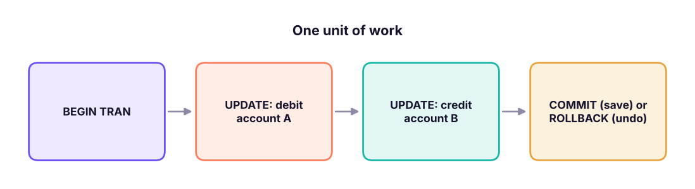
A bank transfer as a transaction. Either both updates are saved, or both are undone.
Property
Meaning
Example
Atomicity
All or nothing
Both account updates happen, or neither
Consistency
Data stays valid (constraints hold)
Total money before = total after; no negative balance if a CHECK forbids it
Isolation
Concurrent transactions do not see each other's half-finished work
Another user does not see the debit without the credit
Durability
Once committed, it survives a crash
Transaction log is written to disk first
Transaction commands
Command
Purpose
BEGIN TRANSACTION (BEGIN TRAN)
Start a transaction
COMMIT
Make all changes permanent
ROLLBACK
Undo everything since BEGIN (or since a savepoint)
SAVE TRANSACTION name
Create a savepoint inside the transaction
ROLLBACK TRANSACTION name
Undo back to the savepoint only
@@TRANCOUNT
How many transactions are open (should be 0 when you leave)
By default SQL Server runs in autocommit mode: every single statement is its own transaction. Wrap several statements in BEGIN TRAN … COMMIT to group them.
Seeing a rollback
SQL
CREATETABLE accounts (acct_id INTPRIMARYKEY, holder VARCHAR(20), balance DECIMAL(12,2));
INSERTINTO accounts VALUES (1, 'Asha', 20000), (2, 'Ravi', 5000);
BEGINTRANSACTION;
UPDATE accounts SET balance = balance - 5000WHERE acct_id = 1;
UPDATE accounts SET balance = balance + 5000WHERE acct_id = 2;
SELECT * FROM accounts ORDERBY acct_id; -- inside the transaction: changes visible to usROLLBACK; -- something went wrong: undo both updatesSELECT * FROM accounts ORDERBY acct_id; -- balances are back to the originals
The pattern that protects you from the "UPDATE without WHERE" disaster (Lesson 4):
SQL
BEGINTRAN;
UPDATE dbo.staff SET salary = salary * 1.05WHERE dept_id = 10;
SELECT @@ROWCOUNT AS rows_changed; -- expected: 2?SELECT emp_id, salary FROM dbo.staff WHERE dept_id = 10; -- sanity-check-- If everything looks right:COMMIT;
-- Otherwise:-- ROLLBACK;
Watch outNever leave a transaction open
An open transaction holds locks that block other users and keeps the log from truncating. Always end with COMMIT or ROLLBACK; check SELECT @@TRANCOUNT; if a query window seems "stuck".
Concurrency: isolation, locks and deadlocks
When many users work at once, the database uses locks to keep transactions isolated. Isolation levels trade consistency for concurrency:
Level
Prevents
Notes
READ UNCOMMITTED
Nothing (allows dirty reads; NOLOCK hint)
Can read data that is later rolled back; avoid for reports needing accuracy
READ COMMITTED (default)
Dirty reads
A row you read can change before you read it again
REPEATABLE READ
Dirty and non-repeatable reads
Holds read locks longer
SERIALIZABLE
Also phantom rows
Safest, least concurrent
SNAPSHOT / RCSI
Readers do not block writers (row versions)
Common in modern systems, uses tempdb
Blocking: one session waits for a lock held by another. Fix: shorter transactions, indexes, row versioning.
Deadlock: two sessions each hold a lock the other needs; SQL Server kills one (the "victim", error 1205). Fix: access tables in the same order, keep transactions short, retry on error 1205.
Indexes: how databases find rows fast
Without an index, a query like WHERE customer_id = 'C0042' scans every row (table scan). An index is a sorted structure (a B-tree) that lets the database jump straight to matching rows, like the index of a book.
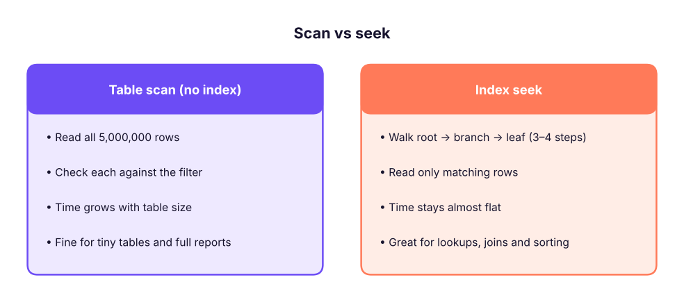
A table scan reads every row. An index seek follows a short path through a B-tree.
Index type
What it is
How many per table
Clustered
Defines the physical order of the table's rows; the table is the index. Created by default with a PRIMARY KEY
One
Non-clustered
A separate sorted copy of selected columns with pointers to the rows
Many (up to 999)
Unique
Enforces uniqueness (created for UNIQUE constraints)
Many
Covering (INCLUDE)
A non-clustered index that contains every column a query needs, so the table is never touched
Filtered
Indexes only rows matching a condition
Columnstore
Column-wise compressed storage for analytics on huge tables
SQL
CREATECLUSTEREDINDEX cx_orders_date ON dbo.orders (order_date); -- if not already clustered by the PKCREATENONCLUSTEREDINDEX ix_orders_customer
ON dbo.orders (customer_id)
INCLUDE (order_date, ship_mode); -- covering index for "orders per customer" queriesCREATENONCLUSTEREDINDEX ix_items_product ON dbo.order_items (product_id); -- foreign keys deserve indexesDROPINDEX ix_orders_customer ON dbo.orders;
SQL
CREATEINDEX ix_super_city ON superstore (city);
SELECT index_name, table_name FROMduckdb_indexes() WHERE table_name = 'superstore';
Result
index_name
table_name
ix_super_city
superstore
1 rows × 2 columns
Which queries can use an index?
Pattern
Uses an index?
Why
WHERE customer_id = 'C0042'
Yes (seek)
Equality on the leading column
WHERE order_date >= '2025-01-01' AND order_date < '2026-01-01'
Yes
Range on an indexed column
WHERE YEAR(order_date) = 2025
No (scan)
The function must run on every row: non-SARGable
WHERE customer_name LIKE 'Ra%'
Yes
Prefix match
WHERE customer_name LIKE '%Rao'
No
Leading wildcard
WHERE UPPER(city) = 'PUNE'
No
Function on the column (the default collation is already case-insensitive)
WHERE city = 'Pune' OR product_id = 'P0012'
Often no
OR across different columns
WHERE CAST(order_id AS VARCHAR) = '1001'
No
Type conversion on the column
TipSARGable predicates
SARG = Search ARGument able. Keep the column bare on one side of the comparison and do the maths on the other side: use order_date >= '2025-01-01' AND order_date < '2026-01-01' instead of YEAR(order_date) = 2025, and sales > 100 / 1.18 instead of sales * 1.18 > 100.
Index trade-offs
Indexes speed up reads but slow down writes (every INSERT/UPDATE/DELETE must also update each index) and use disk space. Index columns used in WHERE, JOIN, ORDER BY and GROUP BY, and foreign keys; do not index everything. Analytic warehouses (Snowflake, BigQuery) use different techniques (partitioning, clustering, columnar storage) instead of manual indexes.
Execution plans
In SSMS press Ctrl + L (estimated plan) or Ctrl + M then run (actual plan). The plan is a diagram of operators read right to left. Things to look for:
Operator
Meaning
Concern
Index Seek
Direct lookup
Good
Index / Clustered Index Scan
Reads many rows
Fine for big reports, suspicious for single-row lookups
Table Scan
Reads the heap
Usually add an index
Key Lookup
Fetches extra columns from the table per row
Consider a covering index (INCLUDE)
Hash / Merge / Nested Loops Join
Join algorithms
Hash for big unsorted inputs; nested loops for small; merge for sorted
Sort
Sorting rows
Expensive; an index in the right order avoids it
Thick arrows, big estimated vs actual row differences
Bad estimates
Update statistics
SET STATISTICS IO, TIME ON; shows logical reads (the best measure of work) and CPU time for each query.
Performance checklist for analysts
Select only the columns and rows you need: avoid SELECT *; filter early.
Make filters SARGable (no functions on columns; use ranges for dates).
Join on indexed keys with matching data types (an INT joined to a VARCHAR forces conversions).
Aggregate before joining when joining big tables (reduce rows first, avoids row explosion).
UNION ALL instead of UNION; EXISTS instead of IN (huge list); avoid DISTINCT as a bandage for join duplicates.
Avoid row-by-row logic (cursors, scalar UDF in WHERE); think in sets.
Test on realistic data; look at the actual plan; keep statistics updated.
Pull less data into BI tools: summarise in SQL, or create views and aggregate tables.
Limit while developing: SELECT TOP 100 or WHERE on a date range, then remove it.
Security: DCL
Data Control Language gives and removes permissions. Follow the principle of least privilege: grant only what each person or application needs.
SQL
-- Logins (server level) and users (database level)CREATE LOGIN priya_analyst WITH PASSWORD = 'Use-A-Strong-Passphrase-1!';
CREATE USER priya_analyst FOR LOGIN priya_analyst;
-- Roles group permissionsCREATE ROLE analyst_role;
GRANTSELECTONSCHEMA::dbo TO analyst_role; -- read all tables in dbo
DENY SELECTON dbo.customers (phone, email) TO analyst_role; -- but hide personal columnsGRANTEXECUTEON dbo.usp_sales_by_region TO analyst_role;
ALTER ROLE analyst_role ADD MEMBER priya_analyst; -- SQL Server 2012+: ALTER ROLE … ADD MEMBERREVOKESELECTON dbo.orders FROM analyst_role; -- take back a permission
Statement
Effect
GRANT
Gives a permission
REVOKE
Removes a previously granted (or denied) permission
Other protections: Row-Level Security (a region manager sees only their rows), Dynamic Data Masking (show XXXX-1234), Always Encrypted and TDE (encryption), auditing, and never embedding passwords in scripts (use Windows/Entra ID authentication or a secret store). In India, personal data handling also falls under the DPDP Act 2023: collect only what you need and restrict who can see it.
Do it with AIDo it with AI
Paste a slow query and its actual execution plan (as XML or text) into an assistant: "Explain what this plan is doing and suggest indexes or rewrites. Do not invent columns." AI can spot scans, key lookups and non-SARGable filters quickly, but test every suggestion; an index that helps one query can hurt a hundred writes.
Summary
Key takeaways
A transaction groups statements to commit or roll back together; ACID = atomicity, consistency, isolation, durability. Use BEGIN TRAN … COMMIT/ROLLBACK, check @@ROWCOUNT, never leave transactions open.
Isolation levels and locks keep concurrent users consistent; blocking and deadlocks are managed with short transactions and consistent access order.
Indexes (clustered = row order, one per table; non-clustered = separate structure; covering = INCLUDE) speed up reads and slow writes. SARGable filters keep the column bare.
Read execution plans for scans, key lookups and bad estimates; use SET STATISTICS IO, TIME ON.
DCL: GRANT, REVOKE, DENY, roles, least privilege; protect personal data.
Quick quiz6 questions · tap an answer to check it
1. Which ACID property says that a committed transaction survives a power failure?
Answer: D. Durability: committed changes are written to the log/disk.
2. Which filter can use an index on order_date?
Answer: B. The column must be bare (SARGable); functions on the column force a scan.
3. How many clustered indexes can a table have?
Answer: B. The clustered index defines the physical order, so there can be only one.
4. You ran BEGIN TRAN; UPDATE …; and closed the window. What is the risk?
Answer: A. Open transactions keep locks until committed or rolled back.
5. What does DENY do?
Answer: B. DENY takes precedence over GRANT.
6. In an execution plan, a "Key Lookup" repeated for many rows suggests:
Answer: B. Key lookups fetch missing columns from the table row by row; covering the query avoids them.
ExerciseMake it faster
This query is slow on 50 million order lines:
SELECT * FROM order_items WHERE YEAR(order_date) = 2025 AND UPPER(region) = 'WEST' ORDER BY sales DESC; Rewrite it and suggest an index.
Show solution
SQL
SELECT item_id, order_id, product_id, quantity, sales, profit -- only the needed columnsFROM dbo.order_items
WHERE order_date >= '2025-01-01'AND order_date < '2026-01-01'-- SARGable range instead of YEAR()AND region = 'West'-- default collation is case-insensitive; no UPPER neededORDERBY sales DESC;
CREATENONCLUSTEREDINDEX ix_items_date_region
ON dbo.order_items (order_date, region) INCLUDE (order_id, product_id, quantity, sales, profit);
Check the actual plan for a seek, compare logical reads with SET STATISTICS IO ON, and consider whether the extra index slows nightly loads.
Interview cornerQuestions you may be asked
Q: What is ACID?
Atomicity (all or nothing), Consistency (valid state), Isolation (concurrent transactions do not interfere), Durability (committed data persists).
Q: Clustered vs non-clustered index?
A clustered index sorts and stores the table rows in index order (one per table). A non-clustered index is a separate structure with pointers to rows (many per table).
Q: Why is WHERE YEAR(date) = 2025 slow?
It applies a function to every row, so the index on date cannot be used (non-SARGable). Use a date range.
Q: How do you find and fix a slow query?
Look at the actual execution plan and I/O statistics, find scans/lookups/bad estimates, make predicates SARGable, add or adjust indexes, reduce columns/rows early, and re-test.
SQL for Data Analysis · Lesson 15
End-to-End SQL Case Study & Interview Practice
Put everything together. Work through a complete analysis of the retail business (data quality, KPIs, trends, customer segmentation, retention, product and discount analysis) using joins, CTEs and window functions, then practise 25 classic SQL interview questions with model answers.
● SQL class 5 (end-to-end case study)✦ 2026Advanced⏱ 180 min
By the end of this lesson you can
Run a structured SQL analysis: understand the data, check quality, calculate KPIs, find drivers, and recommend actions
Combine joins, CTEs, aggregation and window functions in multi-step queries
Build customer segments (RFM), cohort and retention views in SQL
Answer common SQL interview questions with clear, correct queries
Explain results in business language
The business problem
Case studyRetail growth review
You are the data analyst at an Indian retailer selling Furniture, Office Supplies and Technology through four regions. Sales grew from 2023 to 2025, but the CFO suspects profit is not keeping pace. Management wants answers to five questions: (1) Is the data trustworthy? (2) How are sales and profit really trending? (3) Where are we losing money and why? (4) Who are our best customers and are they staying? (5) What should we do next quarter?
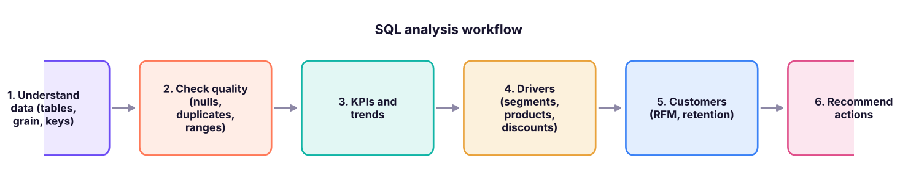
A repeatable SQL analysis workflow.
Step 1: understand the data
SQL
SELECT'orders'AS tbl, COUNT(*) AS n, MIN(order_date) AS first_date, MAX(order_date) AS last_date FROM orders
UNIONALLSELECT'order_items', COUNT(*), NULL, NULLFROM order_items
UNIONALLSELECT'customers', COUNT(*), NULL, NULLFROM customers
UNIONALLSELECT'products', COUNT(*), NULL, NULLFROM products;
Result
tbl
n
first_date
last_date
orders
3200
2023-01-01
2025-12-31
order_items
6323
NULL
NULL
customers
800
NULL
NULL
products
78
NULL
NULL
4 rows × 4 columns
Grain: order_items has one row per product line in an order; orders one row per order; customers one row per customer. KPIs like "orders" must use COUNT(DISTINCT order_id), and "average order value" needs order-level totals (Lesson 10).
Step 2: data-quality checks
Always check before analysing. A compact data-quality report:
SQL
SELECT
(SELECTCOUNT(*) FROM order_items WHERE sales ISNULLOR profit ISNULLOR quantity ISNULL) AS null_measures,
(SELECTCOUNT(*) FROM order_items WHERE sales <= 0OR quantity <= 0) AS non_positive,
(SELECTCOUNT(*) FROM order_items WHERE discount < 0OR discount > 1) AS bad_discount,
(SELECTCOUNT(*) FROM orders WHERE ship_date < order_date) AS ship_before_order,
(SELECTCOUNT(*) FROM order_items oi LEFTJOIN orders o ON o.order_id = oi.order_id WHERE o.order_id ISNULL) AS orphan_items,
(SELECTCOUNT(*) FROM orders o LEFTJOIN customers c ON c.customer_id = o.customer_id WHERE c.customer_id ISNULL) AS orders_without_customer,
(SELECTCOUNT(*) - COUNT(DISTINCT item_id) FROM order_items) AS duplicate_item_ids;
Result
null_measures
non_positive
bad_discount
ship_before_order
orphan_items
orders_without_customer
duplicate_item_ids
0
0
0
0
0
0
0
1 rows × 7 columns
All zeros: the data is clean, so the numbers can be trusted. In real projects every non-zero here becomes a ticket to fix or a documented exclusion. Also check business-rule outliers:
SQL
SELECTROUND(MIN(sales), 0) AS min_sales, ROUND(MAX(sales), 0) AS max_sales,
ROUND(AVG(sales), 0) AS avg_sales,
MIN(discount) AS min_discount, MAX(discount) AS max_discount,
MIN(quantity) AS min_qty, MAX(quantity) AS max_qty
FROM order_items;
Result
min_sales
max_sales
avg_sales
min_discount
max_discount
min_qty
max_qty
42
619,290
31,854
0
0.4
1
7
1 rows × 7 columns
Step 3: KPIs and trends
SQL
WITH yearly AS (
SELECTYEAR(o.order_date) AS yr,
COUNT(DISTINCT o.order_id) AS orders,
COUNT(DISTINCT o.customer_id) AS customers,
SUM(oi.sales) AS sales,
SUM(oi.profit) AS profit
FROM orders o JOIN order_items oi ON oi.order_id = o.order_id
GROUPBYYEAR(o.order_date)
)
SELECT yr, orders, customers,
ROUND(sales, 0) AS sales,
ROUND(100.0 * (sales - LAG(sales) OVER (ORDERBY yr)) / LAG(sales) OVER (ORDERBY yr), 1) AS sales_growth_pct,
ROUND(profit, 0) AS profit,
ROUND(100.0 * (profit - LAG(profit) OVER (ORDERBY yr)) / LAG(profit) OVER (ORDERBY yr), 1) AS profit_growth_pct,
ROUND(100.0 * profit / sales, 1) AS margin_pct,
ROUND(sales / orders, 0) AS avg_order_value
FROM yearly
ORDERBY yr;
Result
yr
orders
customers
sales
sales_growth_pct
profit
profit_growth_pct
margin_pct
avg_order_value
2023
883
540
57,640,217
NULL
4,725,378
NULL
8.2
65,278
2024
1085
590
65,396,556
13.5
6,135,992
29.9
9.4
60,273
2025
1232
623
78,376,797
19.8
7,490,793
22.1
9.6
63,618
3 rows × 9 columns
Finding 1. Sales grew 13.5% in 2024 and 19.8% in 2025, and profit grew even faster (29.9% and 22.1%), so the overall margin edged up from 8.2% to 9.6%. The growth is real, but a 9.6% margin is low compared with the 17–18% earned on lines sold without a discount (you will see this in Step 4). The CFO's concern is about the quality of profit: let's look at where the money is made and lost.
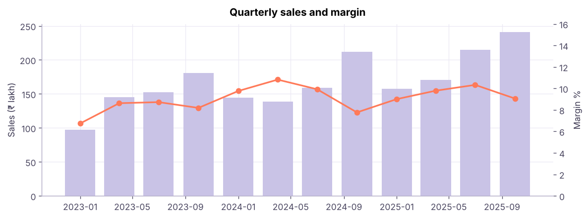
Quarterly sales and profit margin from the same data. Sales climb steadily and peak each Q4 (festive season); the margin moves in a narrow band below 12%.
Step 4: where do we lose money?
SQL
SELECT p.category, p.sub_category,
COUNT(*) AS lines,
ROUND(SUM(oi.sales), 0) AS sales,
ROUND(SUM(oi.profit), 0) AS profit,
ROUND(100.0 * SUM(oi.profit) / SUM(oi.sales), 1) AS margin_pct,
ROUND(AVG(oi.discount) * 100, 1) AS avg_discount_pct
FROM order_items oi JOIN products p ON p.product_id = oi.product_id
GROUPBY p.category, p.sub_category
ORDERBY profit;
Result
category
sub_category
lines
sales
profit
margin_pct
avg_discount_pct
Furniture
Tables
505
14,046,224
-816,042
-5.8
17.5
Furniture
Bookcases
477
11,274,849
-422,786
-3.7
18.3
Office Supplies
Art
462
245,985
36,526
14.8
7.6
Office Supplies
Binders
494
401,219
61,074
15.2
7.4
Office Supplies
Paper
559
493,232
75,040
15.2
7.2
Furniture
Furnishings
442
1,429,307
78,632
5.5
7.4
Furniture
Chairs
493
8,091,474
342,043
4.2
8.3
Technology
Accessories
445
3,178,930
369,554
11.6
7.5
Office Supplies
Storage
507
2,659,340
397,228
14.9
7.6
Office Supplies
Appliances
492
6,333,529
944,927
14.9
7.5
Technology
Phones
488
31,919,223
3,663,117
11.5
7.1
Technology
Machines
491
42,590,335
5,186,711
12.2
6.7
13 rows × 7 columns (first 12 shown)
Finding 2. Tables and Bookcases lose money, and they also carry the heaviest average discounts. Is discounting the cause? Compare margin by discount level and by whether the line is Furniture:
SQL
SELECTCASEWHEN p.category = 'Furniture'THEN'Furniture'ELSE'Other'ENDAS group_name,
CASEWHEN oi.discount = 0THEN'0%'WHEN oi.discount <= 0.2THEN'1–20%'ELSE'>20%'ENDAS discount_band,
COUNT(*) AS lines,
ROUND(SUM(oi.profit), 0) AS profit,
ROUND(100.0 * SUM(oi.profit) / SUM(oi.sales), 1) AS margin_pct
FROM order_items oi JOIN products p ON p.product_id = oi.product_id
GROUPBYCASEWHEN p.category = 'Furniture'THEN'Furniture'ELSE'Other'END,
CASEWHEN oi.discount = 0THEN'0%'WHEN oi.discount <= 0.2THEN'1–20%'ELSE'>20%'ENDORDERBY group_name, discount_band;
Result
group_name
discount_band
lines
profit
margin_pct
Furniture
0%
850
1,861,761
11.7
Furniture
1–20%
509
-317,393
-3.9
Furniture
>20%
558
-2,362,521
-21.9
Other
0%
2630
19,857,203
18.4
Other
1–20%
1434
1,014,534
2.0
Other
>20%
342
-1,701,419
-18.9
6 rows × 5 columns
Finding 3. In every group, discounts above 20% destroy margin. Furniture is hit hardest because it is discounted more often. What would profit be if lines discounted above 20% had been sold at a 20% discount instead? A rough "what-if":
SQL
WITH x AS (
SELECT oi.sales, oi.profit, oi.discount,
oi.sales / (1 - oi.discount) AS list_value,
(oi.sales / (1 - oi.discount)) * 0.8AS sales_at_20,
oi.sales - oi.profit AS cost
FROM order_items oi WHERE oi.discount > 0.2
)
SELECTCOUNT(*) AS lines_over_20pct,
ROUND(SUM(profit), 0) AS actual_profit,
ROUND(SUM(sales_at_20 - cost), 0) AS profit_if_capped_at_20pct,
ROUND(SUM(sales_at_20 - cost) - SUM(profit), 0) AS potential_gain
FROM x;
Result
lines_over_20pct
actual_profit
profit_if_capped_at_20pct
potential_gain
900
-4,063,940
-422,474
3,641,466
1 rows × 4 columns
(This ignores that a lower discount might lose some of those sales. It is an upper bound to size the opportunity, and it must be labelled as such for management.)
Step 5: customers
Top customers and concentration
SQL
WITH c AS (
SELECT o.customer_id, SUM(oi.sales) AS sales, SUM(oi.profit) AS profit, COUNT(DISTINCT o.order_id) AS orders
FROM orders o JOIN order_items oi ON oi.order_id = o.order_id
GROUPBY o.customer_id
), r AS (
SELECT *, NTILE(10) OVER (ORDERBY sales DESC) AS decile FROM c
)
SELECT decile,
COUNT(*) AS customers,
ROUND(100.0 * SUM(sales) / SUM(SUM(sales)) OVER (), 1) AS pct_of_sales,
ROUND(100.0 * SUM(profit) / SUM(SUM(profit)) OVER (), 1) AS pct_of_profit
FROM r
GROUPBY decile
ORDERBY decile;
Result
decile
customers
pct_of_sales
pct_of_profit
1
79
28.8
34.1
2
79
18.7
21.0
3
79
14.6
14.3
4
79
11.3
10.4
5
79
9.0
8.8
6
78
6.7
5.3
7
78
5.2
2.5
8
78
3.4
2.2
9
78
1.9
1.1
10
78
0.5
0.3
10 rows × 4 columns
RFM segmentation
RFM scores each customer by Recency (days since last order), Frequency (number of orders) and Monetary value (total sales). The reference date is the day after the last order in the data.
SQL
WITH base AS (
SELECT o.customer_id,
DATEDIFF(day, MAX(o.order_date), '2026-01-01') AS recency_days,
COUNT(DISTINCT o.order_id) AS frequency,
SUM(oi.sales) AS monetary
FROM orders o JOIN order_items oi ON oi.order_id = o.order_id
GROUPBY o.customer_id
), scored AS (
SELECT *,
NTILE(4) OVER (ORDERBY recency_days DESC) AS r, -- 4 = most recentNTILE(4) OVER (ORDERBY frequency) AS f,
NTILE(4) OVER (ORDERBY monetary) AS m
FROM base
)
SELECT customer_id, recency_days, frequency, ROUND(monetary, 0) AS monetary, r, f, m,
CASEWHEN r >= 3AND f >= 3AND m >= 3THEN'Champions'WHEN r >= 3AND f >= 2THEN'Loyal'WHEN r <= 2AND f >= 3AND m >= 3THEN'At risk (high value)'WHEN r = 1THEN'Lost / hibernating'ELSE'Potential'ENDAS segment
FROM scored
ORDERBY monetary DESC;
Result
customer_id
recency_days
frequency
monetary
r
f
m
segment
C0741
441
6
1,204,439
1
4
4
At risk (high value)
C0092
11
8
1,140,540
4
4
4
Champions
C0306
278
7
1,126,867
2
4
4
At risk (high value)
C0781
130
5
1,123,527
2
3
4
At risk (high value)
C0443
92
7
1,113,058
3
4
4
Champions
C0720
12
6
1,100,213
4
4
4
Champions
C0493
514
6
1,004,382
1
4
4
At risk (high value)
C0028
266
5
1,000,189
2
3
4
At risk (high value)
C0630
331
5
1,000,175
1
4
4
At risk (high value)
C0262
70
6
952,738
3
4
4
Champions
785 rows × 8 columns (first 10 shown)
SQL
WITH base AS (
SELECT o.customer_id, DATEDIFF(day, MAX(o.order_date), '2026-01-01') AS recency_days,
COUNT(DISTINCT o.order_id) AS frequency, SUM(oi.sales) AS monetary
FROM orders o JOIN order_items oi ON oi.order_id = o.order_id GROUPBY o.customer_id
), scored AS (
SELECT *, NTILE(4) OVER (ORDERBY recency_days DESC) AS r, NTILE(4) OVER (ORDERBY frequency) AS f, NTILE(4) OVER (ORDERBY monetary) AS m FROM base
), seg AS (
SELECT *, CASEWHEN r >= 3AND f >= 3AND m >= 3THEN'Champions'WHEN r >= 3AND f >= 2THEN'Loyal'WHEN r <= 2AND f >= 3AND m >= 3THEN'At risk (high value)'WHEN r = 1THEN'Lost / hibernating'ELSE'Potential'ENDAS segment FROM scored
)
SELECT segment, COUNT(*) AS customers, ROUND(SUM(monetary), 0) AS sales,
ROUND(100.0 * SUM(monetary) / SUM(SUM(monetary)) OVER (), 1) AS pct_of_sales
FROM seg GROUPBY segment ORDERBY sales DESC;
Result
segment
customers
sales
pct_of_sales
Champions
179
80,891,146
40.2
At risk (high value)
93
43,097,520
21.4
Potential
197
29,262,095
14.5
Lost / hibernating
168
24,655,947
12.2
Loyal
148
23,506,862
11.7
5 rows × 4 columns
The "At risk (high value)" group is the first win: high-spending customers who have gone quiet deserve a personal outreach before they churn. The same RFM idea is implemented with pandas in the ML track.
Retention and cohorts
A cohort groups customers by the year of their first order. Retention shows how many come back in later years.
SQL
WITH first_order AS (
SELECT customer_id, YEAR(MIN(order_date)) AS cohort_year FROM orders GROUPBY customer_id
), activity AS (
SELECTDISTINCT customer_id, YEAR(order_date) AS active_year FROM orders
)
SELECT f.cohort_year,
COUNT(DISTINCT f.customer_id) AS cohort_size,
COUNT(DISTINCTCASEWHEN a.active_year = f.cohort_year THEN a.customer_id END) AS y0,
COUNT(DISTINCTCASEWHEN a.active_year = f.cohort_year + 1THEN a.customer_id END) AS y1,
COUNT(DISTINCTCASEWHEN a.active_year = f.cohort_year + 2THEN a.customer_id END) AS y2
FROM first_order f
JOIN activity a ON a.customer_id = f.customer_id
GROUPBY f.cohort_year
ORDERBY f.cohort_year;
Result
cohort_year
cohort_size
y0
y1
y2
2023
540
540
397
415
2024
193
193
156
0
2025
52
52
0
0
3 rows × 5 columns
Divide y1 by cohort_size to get year-1 retention. About 74% of the 2023 cohort (397 of 540) ordered again in 2024, and some who skipped a year returned in 2025: this is a business with sticky customers, so reducing discounts is likely safer than the CFO fears.
Step 6: recommendations
Key takeawaysFindings and actions
Sales and profit are growing, but the margin is only 9.6%, far below the 17–18% earned on undiscounted lines.
Technology produces nearly all the profit; Furniture is net loss-making because Tables and Bookcases are sold with heavy discounts.
Discounts above 20% lose money in every category. Cap discounts at 20% (the what-if sizes the upper-bound upside at about ₹36 lakh over three years; the real gain will be lower if some customers buy less), test in two regions with an A/B design.
Customer base is sticky (strong year-on-year retention), so price discipline is lower-risk than assumed.
Re-engage "At risk (high value)" customers with a targeted offer instead of blanket discounts.
Build a monthly SQL view/dashboard with these KPIs, with data-quality checks as a first step.
SQL interview practice: 25 questions with answers
Run these on the retail database. Each answer is a runnable query.
Interview cornerQ1. Second-highest sales line.
SQL
SELECTMAX(sales) AS second_highest FROM order_items WHERE sales < (SELECTMAX(sales) FROM order_items);
Result
second_highest
551,530
1 rows × 1 columns
Interview cornerQ2. Customers with at least 8 orders.
SQL
SELECT customer_id, COUNT(*) AS orders FROM orders GROUPBY customer_id HAVINGCOUNT(*) >= 8ORDERBY orders DESC;
SELECT customer_name, COUNT(*) AS n FROM customers GROUPBY customer_name HAVINGCOUNT(*) > 1ORDERBY n DESC;
Result
customer_name
n
Sneha Joshi
6
Asha Rao
5
Rohan Gupta
5
Ananya Iyer
5
Rahul Shah
5
Ananya Gupta
5
Saanvi Khan
5
Saanvi Mehta
4
Neha Shah
4
Sai Mehta
4
Simran Sharma
4
Aditya Kulkarni
4
238 rows × 2 columns (first 12 shown)
Interview cornerQ4. Highest-selling product in each category.
SQL
WITH t AS (SELECT p.category, p.product_name, SUM(oi.sales) AS sales FROM order_items oi JOIN products p ON p.product_id = oi.product_id GROUPBY p.category, p.product_name),
r AS (SELECT *, ROW_NUMBER() OVER (PARTITIONBY category ORDERBY sales DESC) AS rn FROM t)
SELECT category, product_name, ROUND(sales, 0) AS sales FROM r WHERE rn = 1;
Result
category
product_name
sales
Office Supplies
Crest Appliance 402
1,909,628
Furniture
Crest Table 572
3,122,680
Technology
Orbit Copier 746
16,026,341
3 rows × 3 columns
Interview cornerQ5. Month-over-month growth for 2025.
SQL
WITH m AS (SELECTMONTH(order_date) AS mth, SUM(sales) AS sales FROM superstore WHEREYEAR(order_date) = 2025GROUPBYMONTH(order_date))
SELECT mth, ROUND(sales, 0) AS sales, ROUND(100.0 * (sales - LAG(sales) OVER (ORDERBY mth)) / LAG(sales) OVER (ORDERBY mth), 1) AS mom_pct FROM m ORDERBY mth;
Result
mth
sales
mom_pct
1
5,357,761
NULL
2
3,879,338
-27.6
3
6,512,645
67.9
4
6,699,805
2.9
5
6,421,274
-4.2
6
3,968,572
-38.2
7
7,190,087
81.2
8
5,802,184
-19.3
9
8,468,060
45.9
10
6,140,290
-27.5
11
10,284,516
67.5
12
7,652,267
-25.6
12 rows × 3 columns
Interview cornerQ6. Running total of sales by month in 2025.
SQL
WITH m AS (SELECTMONTH(order_date) AS mth, SUM(sales) AS sales FROM superstore WHEREYEAR(order_date) = 2025GROUPBYMONTH(order_date))
SELECT mth, ROUND(sales, 0) AS sales, ROUND(SUM(sales) OVER (ORDERBY mth ROWSBETWEENUNBOUNDEDPRECEDINGANDCURRENTROW), 0) AS running_total FROM m ORDERBY mth;
Result
mth
sales
running_total
1
5,357,761
5,357,761
2
3,879,338
9,237,099
3
6,512,645
15,749,743
4
6,699,805
22,449,548
5
6,421,274
28,870,822
6
3,968,572
32,839,394
7
7,190,087
40,029,481
8
5,802,184
45,831,665
9
8,468,060
54,299,725
10
6,140,290
60,440,015
11
10,284,516
70,724,530
12
7,652,267
78,376,797
12 rows × 3 columns
Interview cornerQ7. Customers who ordered in every year (2023, 2024 and 2025).
SQL
SELECTCOUNT(*) AS customers_all_three_years
FROM (SELECT customer_id FROM orders GROUPBY customer_id HAVINGCOUNT(DISTINCTYEAR(order_date)) = 3) AS t;
Result
customers_all_three_years
311
1 rows × 1 columns
Interview cornerQ8. Employees earning more than their department's average (HR data).
SQL
SELECTCOUNT(*) AS above_dept_avg
FROM (SELECT emp_id, monthly_income, AVG(monthly_income) OVER (PARTITIONBY department) AS avg_income FROM employees) AS t
WHERE monthly_income > avg_income;
Result
above_dept_avg
638
1 rows × 1 columns
Interview cornerQ9. Delete duplicates keeping the lowest id (pattern).
SQL
WITH d AS (SELECT *, ROW_NUMBER() OVER (PARTITIONBY customer_name, city ORDERBY customer_id) AS rn FROM dbo.customers)
DELETEFROM d WHERE rn > 1;
Interview cornerQ10. Customers with no orders in the last 6 months of 2025 but orders before that (churn candidates).
SQL
SELECTCOUNT(*) AS churn_candidates
FROM (SELECT customer_id FROM orders WHERE order_date < '2025-07-01'GROUPBY customer_id
EXCEPTSELECT customer_id FROM orders WHERE order_date >= '2025-07-01') AS t;
Result
churn_candidates
310
1 rows × 1 columns
Interview cornerQ11. Percentage of orders shipped late (more than 5 days).
SQL
SELECTROUND(100.0 * SUM(CASEWHENDATEDIFF(day, order_date, ship_date) > 5THEN1ELSE0END) / COUNT(*), 1) AS pct_late FROM orders;
Result
pct_late
31.3
1 rows × 1 columns
Interview cornerQ12. Median order-line sales.
SQL
SELECTDISTINCTPERCENTILE_CONT(0.5) WITHIN GROUP (ORDERBY sales) OVER () AS median_sales FROM order_items;
Result
median_sales
8,430
1 rows × 1 columns
Interview cornerQ13. Categories where more than 30% of lines are loss-making.
SQL
SELECT p.category, ROUND(100.0 * AVG(CASEWHEN oi.profit < 0THEN1.0ELSE0END), 1) AS pct_loss_lines
FROM order_items oi JOIN products p ON p.product_id = oi.product_id
GROUPBY p.category HAVINGAVG(CASEWHEN oi.profit < 0THEN1.0ELSE0END) > 0.3;
Result
category
pct_loss_lines
Furniture
48.9
1 rows × 2 columns
Interview cornerQ14. Cumulative percentage of sales by customer (Pareto): how many customers make 50% of sales?
SQL
WITH c AS (SELECT customer_id, SUM(sales) AS s FROM order_items oi JOIN orders o ON o.order_id = oi.order_id GROUPBY customer_id),
p AS (SELECT s, SUM(s) OVER (ORDERBY s DESCROWSBETWEENUNBOUNDEDPRECEDINGANDCURRENTROW) * 1.0 / SUM(s) OVER () AS cum FROM c)
SELECTCOUNT(*) AS customers_for_half_of_sales, (SELECTCOUNT(*) FROM c) AS total_customers FROM p WHERE cum <= 0.5;
Result
customers_for_half_of_sales
total_customers
170
785
1 rows × 2 columns
Interview cornerQ15. Swap two values in a column (pattern).
SQL
UPDATE dbo.staff SET gender = CASE gender WHEN'M'THEN'F'WHEN'F'THEN'M'ELSE gender END;
Interview cornerQ16. Find consecutive order days (streaks) for a customer: see Lesson 12 (gaps and islands).
Interview cornerQ17. Average order value per segment.
SQL
SELECT segment, ROUND(AVG(t.total), 0) AS aov
FROM (SELECT c.segment, o.order_id, SUM(oi.sales) AS total FROM orders o JOIN customers c ON c.customer_id = o.customer_id JOIN order_items oi ON oi.order_id = o.order_id GROUPBY c.segment, o.order_id) AS t
GROUPBY segment;
Result
segment
aov
Corporate
61,899
Home Office
63,237
Consumer
63,451
3 rows × 2 columns
Interview cornerQ18. Products priced above the average of their sub-category.
SQL
SELECTCOUNT(*) AS products_above_subcat_avg
FROM (SELECT product_id, list_price, AVG(list_price) OVER (PARTITIONBY sub_category) AS avg_price FROM products) AS t WHERE list_price > avg_price;
Result
products_above_subcat_avg
36
1 rows × 1 columns
Interview cornerQ19. Rows in A not in B without NOT IN trap: use NOT EXISTS (Lesson 10).
Interview cornerQ20. Pivot category sales into columns by year.
SQL
SELECT category,
ROUND(SUM(CASEWHENYEAR(order_date) = 2023THEN sales ELSE0END), 0) AS y2023,
ROUND(SUM(CASEWHENYEAR(order_date) = 2024THEN sales ELSE0END), 0) AS y2024,
ROUND(SUM(CASEWHENYEAR(order_date) = 2025THEN sales ELSE0END), 0) AS y2025
FROM superstore GROUPBY category ORDERBY category;
Result
category
y2023
y2024
y2025
Furniture
9,952,975
12,128,633
12,760,246
Office Supplies
2,611,874
3,550,109
3,971,321
Technology
45,075,369
49,717,814
61,645,230
3 rows × 4 columns
Interview cornerQ21. First and last order date and the number of days between for each customer (top 3 longest tenures).
SQL
SELECTTOP3 customer_id, MIN(order_date) AS first_order, MAX(order_date) AS last_order, DATEDIFF(day, MIN(order_date), MAX(order_date)) AS days_active
FROM orders GROUPBY customer_id ORDERBY days_active DESC;
Result
customer_id
first_order
last_order
days_active
C0079
2023-01-08
2025-12-27
1084
C0192
2023-01-24
2025-12-31
1072
C0070
2023-01-09
2025-12-13
1069
3 rows × 4 columns
Interview cornerQ22. Which month has the highest sales in each year?
SQL
WITH m AS (SELECTYEAR(order_date) AS yr, MONTH(order_date) AS mth, SUM(sales) AS sales FROM superstore GROUPBYYEAR(order_date), MONTH(order_date)),
r AS (SELECT *, RANK() OVER (PARTITIONBY yr ORDERBY sales DESC) AS rnk FROM m)
SELECT yr, mth, ROUND(sales, 0) AS sales FROM r WHERE rnk = 1ORDERBY yr;
Result
yr
mth
sales
2023
12
7,152,348
2024
11
7,284,664
2025
11
10,284,516
3 rows × 3 columns
Interview cornerQ23. How do you find the number of rows in each table of a database?
SQL
SELECT t.name AS table_name, SUM(p.rows) AS row_count
FROM sys.tables t JOIN sys.partitions p ON p.object_id = t.object_id AND p.index_id IN (0, 1)
GROUPBY t.name ORDERBY row_count DESC;
Interview cornerQ24. Explain the difference between RANK() and ROW_NUMBER() and when each is right: Lesson 11.
Interview cornerQ25. How would you explain the result of a query to a non-technical manager?
State the answer first, in one sentence with numbers ("Furniture loses ₹8.2 lakh a year, almost entirely on heavily discounted tables and bookcases"), then give the 1–2 facts that support it, the assumption or limitation, and the action you recommend.
Summary
Key takeaways
A good analysis follows a workflow: understand the grain, check data quality, calculate KPIs, find drivers, study customers, recommend actions.
Always check data quality first; label what-if estimates as estimates.
Combine CTEs, joins and window functions to build RFM segments, concentration (Pareto), cohorts and retention.
In interviews, state your assumptions, clarify the grain, write clean, formatted SQL, and explain the result in business language.
Quick quiz6 questions · tap an answer to check it
1. Why must "number of orders" use COUNT(DISTINCT order_id) when joining orders to order_items?
Answer: B. The join repeats the order for each of its items.
2. In RFM, a customer with recency 400 days, frequency 1 and low monetary value is probably:
Answer: B. Long time since the last order, few orders and low spend.
3. A cohort table shows 2023 cohort size 500, year-1 active 350. Year-1 retention is:
Answer: B. 350 ÷ 500 = 70%.
4. Which should you do before reporting KPIs?
Answer: B. Untrusted data produces untrusted numbers.
5. The what-if "profit if discounts were capped at 20%" is best described as:
Answer: C. It assumes demand would not change, so it overstates the benefit.
6. NTILE(10) over customers ordered by sales gives:
Answer: B. NTILE splits rows into n buckets.
ExerciseCapstone: your own analysis
Using only SQL on the retail database, prepare a one-page analysis answering: (1) Which three cities have the highest profit and which three the lowest? (2) What is the average days to ship by ship mode, and does a slower mode save money (profit per line)? (3) Which product's sales fell the most from 2024 to 2025? (4) Propose two actions with the numbers that support them.
Show solution
Hints: (1) GROUP BY city with ORDER BY profit ascending and descending using TOP 3 in two queries or RANK() in a CTE. (2) Join orders to order_items, AVG(DATEDIFF(day, order_date, ship_date)) and SUM(profit)/COUNT(*) by ship_mode. (3) Pivot product sales by year with conditional aggregation and compute the difference. (4) Example actions: cap Furniture discounts at 20% in two pilot regions; re-engage at-risk high-value customers. Present each action with a baseline number, an expected impact (labelled as an estimate) and a way to measure success.
Track 3
Power BI
ETL with Power Query, star-schema modelling, DAX measures and time intelligence, interactive reports, case studies, publishing, security and Copilot.
Getting Started with Power BI & Your First HR Report
Power Query, Star Schema & Data Modelling (Adventure Cycles)
Power BI Service, Connectivity Modes, Security & Capstone
Power BI · Lesson 1
Getting Started with Power BI & Your First HR Report
Understand what Power BI is and how its parts fit together, install Power BI Desktop, tour the three views, follow the ETL and analytics stages, and build a complete first report on HR data: cards, bar and column charts, a donut, slicers, a year column with DAX, groups and small multiples.
● Power BI class 1✦ Power BI Desktop 2026 (Copilot, Fabric, PBIP)Beginner⏱ 120 min
By the end of this lesson you can
Describe Power BI Desktop, the Service and Mobile, and how data flows between them
Explain ETL and the stages of the data-analytics process, and map them to Power BI tools
Navigate Report, Table and Model views, and the Fields, Visualizations and Filters panes
Load a CSV, check data types and build cards, bar/column charts, a matrix, a donut and slicers
Add a calculated column with DAX (YEAR), create data groups, and use small multiples
What is Power BI?
Power BI is Microsoft's business-intelligence platform: it connects to data, cleans and models it, and turns it into interactive reports and dashboards that people can share. In 2026 it is part of Microsoft Fabric, Microsoft's all-in-one analytics platform, and it is one of the most requested tools in analyst job posts, alongside Excel, SQL and Tableau.
The Power BI components. You build in Desktop, publish to the Service, and consume on the web or mobile.
Component
What it is
Who uses it
Power BI Desktop
Free Windows application to build data models and reports (.pbix)
Analysts, developers
Power BI Service (app.powerbi.com)
Cloud site to publish, share, schedule refresh, create dashboards and apps
Secure bridge so the cloud can refresh data from your own servers
Admins
Power BI Report Server
Self-hosted option for organisations that cannot use the cloud
IT
Copilot
AI assistant that writes DAX, builds report pages and summarises insights (needs a Fabric/Premium capacity)
Everyone
TipReport vs dashboard
In Power BI a report is one or more pages of interactive visuals built on a data model. A dashboard (Service only) is a single page of pinned tiles from different reports. Many teams use reports only, or share them as an app.
Licences in brief
Licence
Use
Power BI Desktop
Free: build and save locally
Free (Service)
Personal use in "My workspace"; cannot share with others
Pro
Publish and share with other Pro users (about US$14 per user per month)
Premium Per User / Fabric capacity
Larger models, AI features, share with free users
(Prices change; check Microsoft's current pricing page.)
Installing Power BI Desktop
Step by stepInstall
Easiest: open the Microsoft Store, search "Power BI Desktop" and click Install (it updates itself every month).
Or download it from the Microsoft Power BI website → Download → Power BI Desktop.
Requirements: Windows 10/11 (64-bit), 4 GB+ RAM (8 GB+ recommended). There is no Mac version: Mac users can use the Service in a browser, a Windows virtual machine, or Windows 365.
Start the app and sign in with a work or school account (optional for building locally).
The three views
The Power BI Desktop window: left rail with three views, canvas in the middle, panes on the right.
View
Icon
Use it to
Report
bar chart
Design the report pages
Table (Data)
grid
Inspect the data and create calculated columns and measures
Model
diagram
See and edit relationships between tables
DAX query view
{ }
Run DAX queries and test measures
ETL and the analytics process
ETL = Extract (get data from sources), Transform (clean and reshape it), Load (store it in the model). In Power BI, Extract and Transform are done in Power Query, and Load puts the result into the data model. (You met Power Query in Excel Lesson 12: it is the same engine.)
The data analytics stages, mapped to Power BI.
Always start with the question: "Why are people leaving?" decides which data and visuals you need. The worst Power BI reports are tours of every chart type with no question.
Your first report: HR attrition
Case studyThe brief
HR wants a one-page report on the company's 1,500 employees: how many there are, how many left (attrition), where attrition is highest, and whether overtime, job satisfaction or income play a role. Use hr_employees.csv.
The data (first rows):
Python
import pandas as pd
hr = pd.read_csv("hr_employees.csv", parse_dates=["hire_date"])
print(hr.shape)
hr.head(5)
Output
(1500, 15)
emp_id
gender
age
department
job_title
education
hire_date
years_at_company
monthly_income
job_satisfaction
overtime
distance_from_home_km
performance_rating
city
attrition
0
E00001
Male
39
Operations
Operations Manager
Bachelor's
2025-05-26
0
74500
2
Yes
28
3
Bengaluru
No
1
E00002
Female
45
IT
Tester
Bachelor's
2020-10-17
5
61417
1
No
25
3
Mumbai
No
2
E00003
Male
41
IT
Tester
Bachelor's
2019-05-06
6
59167
4
Yes
18
4
Bengaluru
No
3
E00004
Male
21
R&D
Data Scientist
Bachelor's
2025-08-23
0
51500
4
No
28
1
Mumbai
Yes
4
E00005
Male
41
Sales
Sales Executive
Master's
2015-08-24
10
128333
1
No
3
2
Pune
No
5 rows × 15 columns
Step 1: get the data
Step by stepLoad the CSV
Home → Get data → Text/CSV → choose hr_employees.csv.
The preview shows the columns and detected data types. Click Transform Data (not Load) to check types in Power Query.
Confirm: age, years_at_company, monthly_income, job_satisfaction, performance_rating are whole numbers; hire_date is Date; the rest are text.
Home → Close & Apply.
In the Data pane you now see the table hr_employees with a Σ next to numeric fields (they can be summed) and no symbol next to text fields.
Step 2: KPI cards
Drag fields onto the canvas, then choose the Card visual:
Donut chart: Legend attrition, Values = count of emp_id.
Matrix: Rows department, Columns overtime, Values Attrition % (turns into a heat map with conditional formatting, Lesson 5).
Slicers: gender, education, city.
The finished HR page, drawn from the real data: KPI cards, attrition by department, by satisfaction and overtime, and the leaver/stayer donut.
Step 4: a calculated column with DAX
We want to see joining trends by year, but the table has only hire_date. Add a calculated column: Table view (or Modeling) → New column:
DAX
Hire Year = YEAR ( hr_employees[hire_date] )
A calculated column is evaluated row by row when the data loads and stored in the model, just like a new column in Excel. Now a line/column chart of headcount by hire year works:
Small multiples split one visual into a grid of identical mini-charts by a field. Drag department into the visual's Small multiples well: you get one small column chart of attrition by satisfaction for every department. This lets you compare patterns across groups at a glance without a cluttered legend.
Small multiples: attrition % by overtime for each department. The same pattern repeats everywhere, which says overtime is a company-wide issue, not a one-department issue.
What does the report tell us?
Python
t = hr.groupby("overtime").left.agg(["count", "mean"]); t["mean"] = (t["mean"] * 100).round(1)
t.columns = ["employees", "attrition_%"]
print(t.to_string()); print()
low = hr[hr.job_satisfaction <= 2].left.mean() * 100; high = hr[hr.job_satisfaction >= 3].left.mean() * 100print(f"Attrition for satisfaction 1–2: {low:.1f}% vs 3–4: {high:.1f}%")
Output
employees attrition_%
overtime
No 1067 21.6
Yes 433 36.7
Attrition for satisfaction 1–2: 32.5% vs 3–4: 19.4%
Insight sentences for a manager: overtime workers leave far more often than others; low satisfaction scores go with higher attrition; Sales has the highest attrition among departments. Notice the careful wording: these are associations in the data, not proof of cause. (The ML track shows how to test them properly.)
Good habits from day one
Name things clearly: Attrition %, not Measure 3; rename pages ("HR Overview").
Put measures in a dedicated table later (Lesson 3) and format them (percentage, thousands separator).
Check data types in Power Query before loading.
One idea per page; the title should say the insight.
Save often (.pbix), and use clear version names.
Do not use pie charts with many slices; prefer bars (ranked) and use donuts only for 2–3 parts.
2026 updatePower BI in 2026
Copilot can create a report page from a prompt ("Build an attrition overview for HR"), write DAX measures and summarise a page. It needs a paid Fabric/Premium capacity and your data to be well-modelled and named.
Power BI Project (PBIP) format stores the report as text files, so teams can use Git and code review.
TMDL (Tabular Model Definition Language) and DAX query view make models easier to script and test.
Direct Lake (Fabric) reads Delta tables directly with import-like speed.
(See Lesson 6.)
Summary
Key takeaways
Power BI = Desktop (build) + Service (share) + Mobile (consume), now inside Microsoft Fabric.
ETL: Extract and Transform in Power Query, Load into the model; analytics stages run from question to decision.
Three views: Report, Table, Model; build with the Fields, Visualizations and Filters panes.
A card shows a KPI; bar/column charts compare categories; a donut shows 2–3 parts; a matrix is a pivot table; slicers filter.
A DAX calculated column (YEAR, SWITCH) is computed row by row at load time; groups/bins categorise without changing the data; small multiples repeat a chart per category.
Quick quiz6 questions · tap an answer to check it
1. In Power BI, where do you perform the Extract and Transform steps of ETL?
Answer: B. Power Query connects to sources and transforms data; Close & Apply loads it into the model.
2. Which view shows relationships between tables?
Answer: C. Relationships are created and edited in Model view.
3. Power BI Desktop is available for:
Answer: B. Desktop is Windows-only; Mac users use the Service or a Windows virtual machine.
4. What does a calculated column do?
Answer: B. Calculated columns are row-by-row and stored; measures calculate on the fly.
5. Which visual repeats the same chart for every value of a field?
Answer: C. Small multiples create a grid of mini-charts split by a category.
6. Which licence do you need to share a report with colleagues who also have Pro licences?
Answer: C. Sharing in the Service requires Pro for creators and viewers (unless the workspace is on Premium/Fabric capacity).
ExerciseBuild the HR page
Build the page shown above in Power BI Desktop with hr_employees.csv. Then add: (1) a slicer for city and gender; (2) a matrix of attrition % by job_title and education; (3) an Age Band column and a column chart of attrition % by band; (4) a title text box that states your main finding.
Show solution
(1) Slicer visual, fields city, gender (Format → Slicer settings → Style: Tile or Dropdown). (2) Matrix: Rows job_title, Columns education, Values Attrition % (turn on Cell elements → Background colour for a heat map). (3) Use the SWITCH formula in this lesson; chart X-axis Age Band, Y-axis Attrition %; sort the axis in the right order using a sort-by-column. (4) Insert → Text box, for example "Overtime roughly doubles attrition in every department." Verify the claim against your visuals before you publish.
Interview cornerQuestions you may be asked
Q: What is the difference between Power BI Desktop and Service?
Desktop is the free authoring tool for models and reports on Windows; the Service is the cloud platform to publish, share, refresh on a schedule, build dashboards and apps, and apply security.
Q: What is ETL and where is it done in Power BI?
Extract, Transform, Load: Power Query connects to sources and applies transformation steps; the result is loaded into the VertiPaq in-memory model.
Q: Calculated column vs measure?
A calculated column is evaluated per row at refresh time and stored (uses memory); a measure is evaluated at query time in the current filter context (uses CPU). Use measures for aggregations such as sums and ratios.
Q: Report vs dashboard?
A report is multi-page and interactive, built on one model. A dashboard is a single page of pinned tiles from several reports, available only in the Service.
Power BI · Lesson 2
Power Query, Star Schema & Data Modelling (Adventure Cycles)
Prepare and model data the professional way. Clean data in Power Query, load a star schema (fact and dimension tables), create one-to-many relationships, understand filter direction, build and mark a date table, create hierarchies, and avoid the most common modelling mistakes, using the Adventure Cycles case study.
● Power BI class 3✦ Power BI Desktop 2026Intermediate⏱ 140 min
By the end of this lesson you can
Apply common Power Query steps and read the Applied Steps and M code
Explain fact tables, dimension tables and the star schema, and why they beat one wide table
Create relationships with the right cardinality and filter direction, and explain how filters flow
Build a date table, mark it as a date table and add hierarchies
Diagnose common modelling problems (many-to-many, ambiguous paths, missing dates)
Why modelling matters more than visuals
Beautiful visuals on a bad model give wrong or slow answers. In Power BI the data model decides what numbers mean: how tables relate, which table filters which, and how fast DAX runs. The golden rule: model as a star schema.
A star schema: one central fact table of events/numbers surrounded by descriptive dimension tables. Filters flow from dimensions (one side) to the fact (many side).
Fact table
Dimension table
Describes
Events or transactions (a sale, a click, a shipment)
Why a star beats one big flat table: smaller file (text stored once), faster visuals, one place to fix a name, correct filtering across several facts, and simpler DAX. A snowflake (dimensions normalised into sub-dimensions) works but adds joins; prefer a star in Power BI.
The Adventure Cycles dataset
A fictional bicycle company sells bikes, components, clothing and accessories in India, the UAE and Singapore. The model has one fact table and four dimensions (plus the date table):
Open Transform Data. Typical steps for each table (all recorded in Applied Steps):
Table
Steps
fact_sales
Set types (order_date Date; quantity Whole number; amounts Fixed decimal number), remove blank rows, add Profit = [sales_amount] - [total_cost] as a custom column, keep only needed columns
dim_product
Trim/clean text, set list_price and standard_cost as decimals, remove duplicates on product_key
dim_customer
Replace M/F with Male/Female, remove duplicates on customer_key
dim_territory
Check there is one row per territory_key
dim_date
Set date to Date; sort month by month_no later in the model
Query settings (right pane) shows each step; click any step to see the data at that point, and delete a step to undo it. Rename queries (Sales, Product…) because those names become table names in the model.
Turn Jan, Feb, Mar columns into rows (Excel Lesson 12)
Merge queries
Home → Merge
A join; use to bring a category into the fact (but prefer relationships)
Append queries
Home → Append
Stack monthly files
Group by
Transform → Group By
Pre-aggregate large tables
Conditional / Custom column
Add Column
M formulas
Reference vs Duplicate
Right-click query
Reference creates a new query that starts from the output of another (changes flow through); Duplicate copies the steps
Parameters
Home → Manage Parameters
A variable such as a file path or a start date, used in queries (Lesson 4)
Disable load
Right-click query
Keep helper queries out of the model
What is "query folding"?
When the source is a database (SQL Server, Snowflake), Power Query translates your steps into SQL and lets the database do the work, instead of downloading everything first. A step that cannot be translated "breaks folding" and everything after it runs locally. Check by right-clicking a step → View Native Query. Keep foldable steps (filter, select columns, merge, group) before non-foldable ones.
Power Query M
let
Source = Csv.Document(File.Contents("C:\Data\fact_sales.csv"), [Delimiter=",", Encoding=65001]),
Promoted = Table.PromoteHeaders(Source, [PromoteAllScalars=true]),
Typed = Table.TransformColumnTypes(Promoted, {{"order_date", type date}, {"quantity", Int64.Type},
{"sales_amount", Currency.Type}, {"total_cost", Currency.Type}}),
Profit = Table.AddColumn(Typed, "profit", each [sales_amount] - [total_cost], Currency.Type)
in
Profit
Relationships
A relationship links a column in one table to a column in another so that filters can flow between them. In Model view, drag dim_product[product_key] onto fact_sales[product_key]. Power BI usually detects relationships on same-named columns (Home → Manage relationships → Autodetect).
Cardinality
Type
Meaning
Use
One-to-many (1:*)
A key is unique in one table, repeated in the other
The standard: dimension → fact
One-to-one (1:1)
Unique on both sides
Splitting a wide table
Many-to-many (*:*)
Duplicates on both sides
Avoid; use a bridge table
Check uniqueness before creating a one-to-many: if the "one" side has duplicates Power BI will complain.
Python
checks = {"dim_product[product_key]": prod.product_key, "dim_customer[customer_key]": cust.customer_key, "dim_territory[territory_key]": terr.territory_key, "dim_date[date]": dates.date}
for name, col inchecks.items(): print(f"{name:30s} unique: {col.is_unique}")
orphans = {"product_key": ~fact.product_key.isin(prod.product_key), "customer_key": ~fact.customer_key.isin(cust.customer_key), "territory_key": ~fact.territory_key.isin(terr.territory_key)}
for k, m inorphans.items(): print(f"fact rows with no matching {k}: {m.sum()}")
Output
dim_product[product_key] unique: True
dim_customer[customer_key] unique: True
dim_territory[territory_key] unique: True
dim_date[date] unique: True
fact rows with no matching product_key: 0
fact rows with no matching customer_key: 0
fact rows with no matching territory_key: 0
Unique keys on the "one" side and no orphans on the "many" side: the model is safe.
Filter direction
Filters flow along relationships from the one side to the many side (single direction). Selecting Bikes in dim_product filters fact_sales, which then filters the other dimensions only if bi-directional filtering is on.
Setting
Behaviour
Advice
Single (dimension → fact)
A selection in a dimension filters the fact
Default and best
Both (bi-directional)
Filters also flow back from fact to dimension
Use only when needed (many-to-many, "show only customers who bought"); can cause ambiguity and slowness
Active vs inactive relationship
Only one active path between two tables; an inactive one can be switched on in DAX with USERELATIONSHIP
e.g. Order Date and Ship Date both link to the date table
Seeing the model work
Total sales by product category and by country, using the relationships (a join in pandas):
In Power BI you get this with a matrix: Rows category, Columns country, Values SUM(sales_amount). No join code needed: the relationships do it.
The date table
Time intelligence (year-to-date, same period last year, Lesson 4) requires a proper date table: one row per day with no gaps, covering all dates in the data, and marked as a date table.
DAX
Date =
VAR MinDate = DATE ( YEAR ( MIN ( fact_sales[order_date] ) ), 1, 1 )
VAR MaxDate = DATE ( YEAR ( MAX ( fact_sales[order_date] ) ), 12, 31 )
RETURN
ADDCOLUMNS (
CALENDAR ( MinDate, MaxDate ),
"Year", YEAR ( [Date] ),
"Quarter", "Q" & QUARTER ( [Date] ),
"Month No", MONTH ( [Date] ),
"Month", FORMAT ( [Date], "mmm" ),
"Year-Month", FORMAT ( [Date], "yyyy-mm" ),
"Weekday", FORMAT ( [Date], "ddd" )
)
Step by stepSet it up
Model → New table → paste the DAX above (or load dim_date.csv).
Select the table → Table tools → Mark as date table → choose the Date column. Power BI validates that dates are unique and continuous.
Create the relationship Date[Date] → fact_sales[order_date] (one-to-many).
Sort Month by Month No (select Month → Column tools → Sort by column) so April does not come before January.
Hide the raw order_date in the fact table so report authors use the date table.
Python
print("Fact order dates :", fact.order_date.min().date(), "to", fact.order_date.max().date())
print("Date table :", dates.date.min().date(), "to", dates.date.max().date(), "| rows:", len(dates))
full = pd.date_range(dates.date.min(), dates.date.max())
print("Continuous (no gaps):", len(full) == len(dates) and (dates.date.sort_values().values == full.values).all())
dates.head(4)
Output
Fact order dates : 2023-01-01 to 2025-12-30
Date table : 2023-01-01 to 2025-12-31 | rows: 1096
Continuous (no gaps): True
date
year
quarter
month_no
month
weekday
0
2023-01-01
2023
Q1
1
Jan
Sun
1
2023-01-02
2023
Q1
1
Jan
Mon
2
2023-01-03
2023
Q1
1
Jan
Tue
3
2023-01-04
2023
Q1
1
Jan
Wed
4 rows × 6 columns
Watch outDo not rely on auto date/time
Power BI can create hidden date tables automatically ("Auto date/time"). They bloat the model and cannot be customised or shared. Turn it off (File → Options → Data Load → Time intelligence) and always use your own marked date table.
Hierarchies
A hierarchy lets users drill down through levels with one click. In the Data pane, right-click category in dim_product → Create hierarchy, then drag subcategory and product onto it. Visuals with a hierarchy get drill-down buttons (arrows at the top-right of the visual): from category → sub-category → product. The date table's Year → Quarter → Month → Date is the classic one.
Common modelling problems
Symptom
Likely cause
Fix
Totals repeat the same number for every category
No relationship between the table you filter and the fact
Create the relationship
"A circular dependency was detected" / ambiguous paths
Two paths between two tables
Make one inactive, or remove the bi-directional filter
Many-to-many warning
Duplicate keys on both sides
Build a clean dimension with unique keys, or a bridge table
Blank row ("(Blank)") appears in visuals
Fact rows whose key is missing in the dimension (orphans)
Add the missing rows to the dimension, or fix keys
YTD / last-year measures give wrong or blank results
Date table not marked, has gaps, or not related
Fix the date table
Slow model, big file
Wide tables, high-cardinality text columns, auto date/time
Star schema, remove unused columns, reduce precision, disable auto date/time
Months sort alphabetically
Missing sort-by-column
Sort Month by Month No
TipBest-practice checklist
Star schema with surrogate integer keys. 2. One-to-many, single-direction relationships. 3. One marked date table. 4. Hide keys and technical columns from report view. 5. Disable auto date/time. 6. Remove columns you do not use. 7. Name tables and columns for business users. 8. Put measures in a separate _Measures table (Lesson 3).
Do it with AIDo it with AI
Ask Copilot or any assistant: "Review this list of tables and columns and propose a star schema with a fact table and dimensions, the keys, and the relationships" and paste your column lists. Compare its answer with the checklist above, and verify key uniqueness yourself in Power Query (Column profile → Distinct equals Count).
Summary
Key takeaways
Model as a star schema: facts (events and numbers) surrounded by dimensions (descriptions), joined by one-to-many, single-direction relationships.
Power Query prepares each table: types, cleaning, unpivot, merge/append, group, parameters; query folding pushes work to the source.
Filters flow from the one side (dimension) to the many side (fact); use bi-directional filters sparingly; one active relationship per table pair, others inactive (USERELATIONSHIP).
A continuous, marked date table is required for time intelligence; sort month names by month number; turn off auto date/time.
Hierarchies enable drill-down; most "wrong totals" come from missing relationships, duplicate keys or orphans.
Quick quiz6 questions · tap an answer to check it
1. In a star schema, which table typically contains the numeric measures such as quantity and sales amount?
Answer: B. Facts hold events and measures; dimensions hold descriptions.
2. A one-to-many relationship between dim_product and fact_sales means:
Answer: B. The "one" side must have unique keys.
3. Why is a bi-directional relationship risky?
Answer: B. Use it only when you must (for example many-to-many scenarios).
4. What does "Mark as date table" require?
Answer: B. Time-intelligence functions need a valid contiguous date table.
5. Months show as Apr, Aug, Dec, Feb… in alphabetical order. Fix?
Answer: C. Sort by column controls the display order.
6. What does Power Query's "query folding" do?
Answer: B. Folding improves refresh performance for database sources.
ExerciseModel it yourself
Load the five Adventure Cycles CSV files, set types, create the four relationships, mark dim_date as the date table, hide key columns, create a Category → Subcategory → Product hierarchy, and build a matrix of sales by category (rows) and year (columns).
Show solution
In Power Query set order_date and date to Date. In Model view drag product_key, customer_key, territory_key from each dimension to the fact, and date to order_date. Table tools → Mark as date table → date. Right-click the key columns → Hide in report view. Create the hierarchy by right-clicking category. In Report view add a Matrix with Rows dim_product[category], Columns dim_date[year], Values Sum of sales_amount. Compare with the pandas pivot: Bikes should be about ₹46.7 crore of the total ₹59.5 crore.
Interview cornerQuestions you may be asked
Q: What is a star schema and why use it in Power BI?
One fact table joined to several dimension tables with one-to-many relationships. It compresses well, filters predictably, and makes DAX simple and fast.
Q: How do filters propagate in a Power BI model?
From the one side to the many side along active relationships, in the filter direction. Bi-directional relationships also filter from many back to one.
Q: Why do you need a date table?
Built-in time-intelligence DAX (YTD, SAMEPERIODLASTYEAR) needs a continuous, marked date table; it also gives you year/quarter/month columns, fiscal calendars and holidays.
Q: How do you handle two dates in the fact table (order date and ship date)?
Role-playing dimension: one date table with one active relationship (order date) and one inactive (ship date) activated with USERELATIONSHIP in specific measures, or two copies of the date table.
Learn DAX, the formula language of Power BI. Understand calculated columns vs measures, row context vs filter context, write core aggregations and iterators (SUMX), master CALCULATE and FILTER, ALL/REMOVEFILTERS and ALLSELECTED, handle division safely, use variables, and build a library of business measures.
● Power BI classes 2–3✦ Power BI Desktop 2026Intermediate⏱ 150 min
By the end of this lesson you can
Explain the difference between a calculated column and a measure, and when to use each
Describe row context and filter context and predict what a measure returns in a visual
Write aggregation measures and iterators (SUM, COUNTROWS, DISTINCTCOUNT, SUMX, AVERAGEX)
Use CALCULATE with filter arguments, ALL/REMOVEFILTERS and ALLSELECTED to build ratios and percent-of-total
Use variables, DIVIDE, IF/SWITCH and display folders to write clean, reusable measures
What is DAX?
DAX (Data Analysis Expressions) is the formula language used in Power BI, Excel's Data Model and Analysis Services. It looks like Excel formulas, but it works on columns and tables and recalculates for whatever the user selects in a visual. DAX is the skill that separates a report builder from a Power BI developer.
Calculated column
Measure
Evaluated
Row by row when data is refreshed
On the fly, for the current filter selection
Stored in the model
Yes (uses memory)
No (only the formula)
Result depends on slicers?
No
Yes
Use for
New attributes to slice by (Age Band, Hire Year, Profit per row)
Totals, ratios, KPIs, growth
Appears in
Rows, columns, slicers, filters
Values area, cards, tooltips
The same table, two ways. A calculated column adds a value to every row. A measure returns one number computed from whichever rows are currently filtered.
TipRule of thumb
If you want to put it on an axis or slicer, make a column. If you want to put it in the Values well, make a measure. In a star schema, almost every number is a measure.
DAX syntax in five minutes
DAX
Total Sales = SUM ( fact_sales[sales_amount] )
Total Sales is the measure name (spaces allowed, no brackets when defining it).
= starts the formula.
SUM is a function; fact_sales[sales_amount] is a fully qualified column (table name, then column in square brackets). Always include the table name for columns; never include it for measures: [Total Sales].
Strings use double quotes; comments use -- or // or /* … */.
Spaces and line breaks are ignored; format with daxformatter.com or the formatting button.
Creating measures
Home → New measure (or right-click a table). Put all measures in an empty table named _Measures (Home → Enter data → name _Measures → Load, then hide its default column) so they are easy to find. Use display folders (Model view → Properties) to group them.
Basic aggregations
DAX
Total Sales = SUM ( fact_sales[sales_amount] )
Total Cost = SUM ( fact_sales[total_cost] )
Total Profit = [Total Sales] - [Total Cost]
Profit Margin % = DIVIDE ( [Total Profit], [Total Sales] )
Units Sold = SUM ( fact_sales[quantity] )
Orders = DISTINCTCOUNT ( fact_sales[order_number] )
Order Lines = COUNTROWS ( fact_sales )
Avg Order Value = DIVIDE ( [Total Sales], [Orders] ) -- in this data every order has one line, so Orders = Order Lines
Customers = DISTINCTCOUNT ( fact_sales[customer_key] )
Check the values in Python; they are what a card visual with no filters would display:
Python
import pandas as pd
D = "adventure_cycles/"
f = pd.read_csv(D + "fact_sales.csv", parse_dates=["order_date"]); p = pd.read_csv(D + "dim_product.csv"); t = pd.read_csv(D + "dim_territory.csv")
sales, cost = f.sales_amount.sum(), f.total_cost.sum()
print(f"Total Sales : {sales:,.0f}")
print(f"Total Cost : {cost:,.0f}")
print(f"Total Profit : {sales - cost:,.0f}")
print(f"Profit Margin % : {(sales - cost) / sales:.1%}")
print(f"Units Sold : {f.quantity.sum():,}")
print(f"Orders : {f.order_number.nunique():,}")
print(f"Order Lines : {len(f):,}")
print(f"Avg Order Value : {sales / f.order_number.nunique():,.0f}")
print(f"Customers : {f.customer_key.nunique():,}")
Output
Total Sales : 594,559,665
Total Cost : 384,392,790
Total Profit : 210,166,875
Profit Margin % : 35.3%
Units Sold : 22,703
Orders : 9,000
Order Lines : 9,000
Avg Order Value : 66,062
Customers : 1,200
Watch outDIVIDE, not /
[A] / [B] returns an error or infinity when B is 0 or blank. DIVIDE ( [A], [B] ) returns BLANK (or an alternate result: DIVIDE ( [A], [B], 0 )). Always use DIVIDE for ratios.
Filter context: the heart of DAX
When you put a measure in a visual, DAX evaluates it once per cell, with a filter context made of everything that filters the data for that cell: row and column headers, slicers, page/report filters, and cross-filtering from other visuals.
Filter context for one cell of a matrix (Category = Bikes, Country = India, Year = 2025 slicer). DAX applies all of them to the fact table before it sums.
Same measure, different context in each cell. The matrix below is exactly what Power BI shows for Total Sales with Category on rows and Country on columns:
Python
m = f.merge(p, on="product_key").merge(t, on="territory_key")
m["year"] = m.order_date.dt.year
print((m.pivot_table(index="category", columns="country", values="sales_amount", aggfunc="sum") / 1e6).round(1).to_string())
print("\nSame measure, with a Year = 2025 slicer:")
print((m[m.year == 2025].pivot_table(index="category", columns="country", values="sales_amount", aggfunc="sum") / 1e6).round(1).to_string())
Output
country India Singapore UAE
category
Accessories 6.7 1.7 1.3
Bikes 320.6 74.8 71.3
Clothing 6.0 1.3 1.1
Components 73.5 18.8 17.2
Same measure, with a Year = 2025 slicer:
country India Singapore UAE
category
Accessories 2.2 0.7 0.4
Bikes 102.3 24.6 22.0
Clothing 2.0 0.3 0.4
Components 22.9 7.1 5.1
Row context
A row context exists when DAX goes through a table row by row: in a calculated column, and inside iterator functions (SUMX, AVERAGEX, FILTER…). In row context, column references mean "this row's value".
DAX
-- Calculated column on fact_sales: row context gives each row's own values
Line Profit = fact_sales[sales_amount] - fact_sales[total_cost]
Row context does not automatically filter other tables; CALCULATE converts a row context into a filter context ("context transition").
Iterators: SUMX, AVERAGEX, MAXX
SUM ( column ) adds one column. When you need to calculate per row first and then aggregate, use an iterator: SUMX ( table, expression ).
DAX
-- Revenue at list price (unit_price x quantity), calculated row by row
List Value = SUMX ( fact_sales, fact_sales[quantity] * fact_sales[unit_price] )
-- Average margin per order line (not the same as total profit / total sales!)
Avg Line Margin % = AVERAGEX ( fact_sales, DIVIDE ( fact_sales[sales_amount] - fact_sales[total_cost], fact_sales[sales_amount] ) )
-- Most profitable single line
Max Line Profit = MAXX ( fact_sales, fact_sales[sales_amount] - fact_sales[total_cost] )
List Value : 617,201,300
Realised/List : 96.3% (average price realisation)
Avg Line Margin % : 34.5% vs overall margin 35.3%
Max Line Profit : 174,060
The average of line margins (34.5%) differs slightly from the overall margin (35.3%) because large lines count more in the total than in a simple average. Choose the definition the business wants, and name the measure clearly.
CALCULATE: change the filter context
CALCULATE ( expression, filter1, filter2, … ) evaluates the expression in a modified filter context. It is the most important DAX function.
DAX
Bike Sales = CALCULATE ( [Total Sales], dim_product[category] = "Bikes" )
India Sales = CALCULATE ( [Total Sales], dim_territory[country] = "India" )
Bike Sales India 2025 =
CALCULATE ( [Total Sales], dim_product[category] = "Bikes", dim_territory[country] = "India", dim_date[year] = 2025 )
High Value Lines = CALCULATE ( COUNTROWS ( fact_sales ), fact_sales[sales_amount] > 200000 )
Multiple filter arguments are combined with AND. A simple column filter like dim_product[category] = "Bikes"replaces any existing filter on that column.
FILTER ( table, condition ) is an iterator that returns the rows where the condition is TRUE. Use it when a filter needs a measure or several columns; for a simple single-column comparison, the plain column = value form inside CALCULATE is faster.
DAX
-- Sales from products with a list price above 1,00,000
Premium Sales = CALCULATE ( [Total Sales], FILTER ( dim_product, dim_product[list_price] > 100000 ) )
-- Number of products whose total sales beat 1 crore
Strong Products = COUNTROWS ( FILTER ( VALUES ( dim_product[product] ), [Total Sales] > 10000000 ) )
Profit margin % by category and country: the matrix you would build with the Profit Margin % measure and conditional formatting (darker = higher).
Common DAX mistakes
Mistake
Fix
Using a calculated column where a measure is needed (results do not respond to slicers)
Create a measure
Dividing with /
DIVIDE
Writing SUM ( [Measure] )
SUM takes columns; use SUMX ( table, [Measure] ) for measures over rows
Averaging ratios (AVERAGE of a margin column)
Compute DIVIDE ( SUM numerator, SUM denominator ) unless you really want the average of ratios
Using FILTER ( ALL ( table ), … ) when a column filter works
Prefer simple column filters inside CALCULATE
Forgetting that a measure's result depends on context; testing in a card
Test in a table or matrix with the fields you care about
Hard-coding values ("Bikes") in many measures
Use a parameter table or SELECTEDVALUE
Do it with AIDo it with AI
Copilot and chat assistants write decent DAX, but they invent column names and often misuse context. A reliable prompt gives the exact table and column names, the relationships, and the expected result: "Tables: fact_sales(order_date, product_key, sales_amount, total_cost), dim_product(product_key, category), dim_date(date). Write a DAX measure for each category's share of total sales that ignores the category filter but respects year slicers. Explain the filter context." Then test the measure in a table next to your own pandas check.
Summary
Key takeaways
Calculated columns run row by row at refresh and are stored; measures run at query time in the current filter context.
Filter context = row/column headers + slicers + filters + cross-filtering; measures are re-evaluated for every cell.
Row context exists in calculated columns and iterators (SUMX, AVERAGEX, FILTER); CALCULATE converts it to filter context.
CALCULATE ( expression, filters ) changes the filters; REMOVEFILTERS/ALL, ALLSELECTED, ALLEXCEPT remove them for percent-of-total calculations.
Use DIVIDE, variables (VAR … RETURN), SWITCH ( TRUE (), … ), clear names, a _Measures table and display folders.
Quick quiz6 questions · tap an answer to check it
1. Which is evaluated for every cell of a matrix based on slicers and row/column headers?
Answer: B. Measures respond to filter context; calculated columns are fixed at refresh.
2. Which function lets you compute a total that ignores the Category filter (for a denominator)?
Answer: B. REMOVEFILTERS (or ALL) clears the filter inside CALCULATE.
3. Which is the safest way to compute a margin?
Answer: B. DIVIDE handles zero and blank denominators gracefully.
4.SUMX ( fact_sales, fact_sales[quantity] * fact_sales[unit_price] ) is needed because:
Answer: B. SUM works on one existing column; SUMX evaluates an expression per row.
5. What is row context?
Answer: A. Row context refers to "this row" during row-by-row evaluation.
6. What does CALCULATE ( [Total Sales], dim_product[category] = "Bikes" ) return in a visual that shows each country?
Answer: B. The Category filter is replaced by Bikes, while the Country filter from the visual still applies.
ExerciseWrite the measures
Using the Adventure Cycles model, write DAX for: (1) Profit and margin % for Clothing only; (2) each country's share of total sales (works in a visual with country on rows); (3) the number of customers who bought more than one product line; (4) a title measure that says "Top category: …" for the category with the highest sales in the current context.
Verify each in a table visual next to a pandas check.
Interview cornerQuestions you may be asked
Q: What is the difference between a calculated column and a measure?
A column is computed per row at refresh and stored; a measure is computed at query time for the current filter context and returns a single value.
Q: Explain filter context and row context.
Filter context is the set of filters (axes, slicers, filters) applied to the model when a measure is evaluated. Row context is the "current row" while iterating a table (calculated columns, iterators). CALCULATE turns row context into filter context.
Q: What does CALCULATE do?
Evaluates an expression in a modified filter context; its filter arguments add, replace or remove filters.
Q: ALL vs ALLSELECTED?
ALL removes all filters from the specified table/column (grand total); ALLSELECTED removes only the filters coming from the visual's own rows and columns but keeps outer filters such as slicers, giving a total of what is visible.
Q: SUM vs SUMX?
SUM adds a column; SUMX evaluates an expression for each row of a table and sums the results (needed for products of columns, conditional logic per row).
Power BI · Lesson 4
DAX Time Intelligence, Ranking, Parameters & Dynamic Measures
Make dashboards answer "compared with when?". Build year-to-date, month-to-date, same-period-last-year, month-on-month and year-on-year measures, rolling averages, rankings with RANKX and TOPN, what-if parameters, field parameters and dynamic measure switching, and know visual calculations and calculation groups.
● Power BI classes 3–4✦ Power BI Desktop 2026 (field parameters, calculation groups, visual calculations)Advanced⏱ 150 min
By the end of this lesson you can
Explain what time intelligence needs (a marked date table) and use TOTALYTD, DATESYTD, SAMEPERIODLASTYEAR, DATEADD and PARALLELPERIOD
Build YoY %, MoM %, YTD, rolling 3-month and running-total measures
Rank items with RANKX and show the Top N with TOPN, including an "Others" bucket
Create what-if parameters and dynamic measure switching with field parameters
Describe calculation groups, visual calculations and DAX query view, and when to use them
What time intelligence needs
Time-intelligence functions move or expand the date filter: "this year to date", "the same period last year". They only work when:
You have a date table with every date (Lesson 2),
it is marked as a date table, and
it is related to the fact table's date column.
Always use the date table'sDate column inside time functions, never the fact table's date.
Time intelligence changes the date filter, then CALCULATE re-evaluates the measure. SAMEPERIODLASTYEAR shifts the selected dates back exactly one year.
(Values in ₹ million.) In a Power BI matrix with dim_date[month] on rows and these measures in the Values area you would see exactly this.
Monthly sales for 2025 against the same month in 2024, with year-to-date sales on the right axis. This is the classic "this year vs last year" chart.
Common mistakesCommon time-intelligence bugs
Date table not marked / has gaps: SAMEPERIODLASTYEAR returns blank or wrong values.
Using the fact table's date column in the function: use dim_date[date].
Comparing partial periods: the current month has data for 10 days, last year's month has 31, so YoY looks terrible. Compare "to date" with DATESYTD and SAMEPERIODLASTYEAR, or restrict to complete months.
Fiscal year: pass "31-3" as the year-end argument to TOTALYTD, and create Fiscal Year and Fiscal Quarter columns in the date table.
Showing a "last year" value in months with no data (future months): wrap with IF ( [Total Sales] <> BLANK (), … ).
Rolling windows and running totals
DAX
-- Rolling 3-month sales ending at the last visible date
Sales Rolling 3M =
CALCULATE ( [Total Sales], DATESINPERIOD ( dim_date[date], MAX ( dim_date[date] ), -3, MONTH ) )
-- Rolling 3-month average of monthly sales (average over the months in the window)
Avg Monthly Sales R3M =
DIVIDE ( [Sales Rolling 3M], 3 ) -- valid once three full months exist in the window-- Running total across all dates up to the current one
Sales Running Total =
CALCULATE ( [Total Sales], FILTER ( ALL ( dim_date[date] ), dim_date[date] <= MAX ( dim_date[date] ) ) )
In SQL this was SUM() OVER (ORDER BY … ROWS BETWEEN …) (SQL Lesson 12). DAX does the same thing by redefining the date filter.
-- Rank of each product category by sales within the current context
Category Rank = RANKX ( ALL ( dim_product[category] ), [Total Sales], , DESC, DENSE )
-- Show only the top 5 products: sales of a product if it is in the top 5, else blank
Top 5 Product Sales =
VAR top5 = TOPN ( 5, ALL ( dim_product[product] ), [Total Sales], DESC )
RETURN CALCULATE ( [Total Sales], KEEPFILTERS ( top5 ) )
-- Everything outside the top 5, as one "Others" value
Others Sales = [Total Sales] - [Top 5 Product Sales]
For simple Top N visuals, you do not need DAX: in the Filters pane, choose the visual's field → Filter type Top N → Show items Top 5 → By value Total Sales → Apply filter. Use DAX when the Top N must respond to slicers in a custom way or you need an "Others" bar.
Python
prod_sales = f.merge(p, on="product_key").groupby(["category", "product"]).sales_amount.sum().sort_values(ascending=False)
top5 = prod_sales.head(5)
print((top5 / 1e6).round(1).to_string())
print(f"\nTop 5 total : {top5.sum() / 1e6:,.1f} M | Others: {(prod_sales.sum() - top5.sum()) / 1e6:,.1f} M | Top 5 share: {top5.sum() / prod_sales.sum():.1%}")
Output
category product
Bikes Road Bike E-331 51.3
Mountain Bike C-245 42.4
Touring Bike A-507 39.7
Mountain Bike D-662 36.2
Mountain Bike B-168 35.9
Top 5 total : 205.4 M | Others: 389.2 M | Top 5 share: 34.5%
Parameters
What-if parameter
Modeling → New parameter → Numeric range: name Price Change %, from −20 to +20, increment 1, default 0, and tick Add slicer. Power BI creates a table and a measure Price Change % Value. Use it in your own measure to simulate:
Home → Manage parameters creates parameters used inside queries, for example StartDate or a ServerName. Use them to switch between a test and a production database, or to filter large tables at load time. In the Service, parameters can be changed in dataset settings.
Dynamic measure switching
A very popular pattern: a slicer that lets users choose which measure the chart shows (Sales, Profit, Orders).
The modern way: Field parameters. Modeling → New parameter → Fields: add Total Sales, Total Profit, Orders; tick Add slicer. Power BI creates a table with the three measures; use that table's field on a chart's axis or values and the slicer swaps the measure. A field parameter can also switch axis fields (Category, Country, Year).
Format strings can be dynamic too (Power BI 2024+ "dynamic format string"): thousands for sales, percentage for margin.
KPI visuals and forecasting
KPI visual: needs a value (indicator), a trend axis (date) and a target (for example last year's sales). Colours show good/bad.
Gauge: current vs target; min/max/target set in the format pane.
Forecasting: in a line chart with a date axis, Analytics pane → Forecast → set forecast length (for example 6 months), confidence interval (95%) and seasonality (12 points). Power BI uses exponential smoothing (ETS). It is a quick what-comes-next view, not a replacement for proper forecasting models (ML track).
Analytics pane also offers constant lines, average, min/max, percentile lines, trend lines, and anomaly detection.
Newer DAX features worth knowing
Feature
What it is
Calculation groups
A reusable "time-intelligence switcher": define Current, YTD, LY, YoY % once and apply them to every measure (created in Tabular Editor or in the model view in recent versions)
Visual calculations
DAX written inside a visual that can refer to other fields in the visual (running sum, moving average, % of parent) with simple functions such as RUNNINGSUM, MOVINGAVERAGE, PREVIOUS, FIRST
DAX query view
EVALUATE queries to test and debug measures; Copilot can write DAX here
User-defined functions (DAX UDFs)
Reusable functions defined with the FUNCTION keyword (preview)
INFO.* functions
Query model metadata (INFO.TABLES(), INFO.MEASURES())
DAX
-- Visual calculation (typed in the visual's formula bar)
Running Sales = RUNNINGSUM ( [Total Sales] )
Moving Avg 3 = MOVINGAVERAGE ( [Total Sales], 3 )
Do it with AIDo it with AI
Copilot can write time-intelligence measures from a sentence ("Show sales year to date versus last year"). It works best if the date table is marked, columns and tables have clear names, and you add descriptions to measures (Model view → Properties). Check the generated DAX uses your dim_date[date] (not the fact table's date), and confirm one value by hand.
Summary
Key takeaways
Time intelligence needs a continuous, marked date table, related to the fact; always reference the date table's column.
TOTALYTD, SAMEPERIODLASTYEAR, DATEADD, PARALLELPERIOD, DATESINPERIOD build YTD, last-year, MoM, YoY and rolling windows; DIVIDE ( current − previous, previous ) gives growth.
RANKX ranks, TOPN selects the top items (add an "Others" measure); the Filters-pane Top N is the no-code route.
What-if parameters simulate scenarios; field parameters let users switch measures or axes; the disconnected table + SWITCH pattern does the same in older models.
Know calculation groups, visual calculations and the DAX query view for advanced work.
Quick quiz6 questions · tap an answer to check it
1. Which measure shows year-to-date sales?
Answer: B. TOTALYTD accumulates from the start of the year to the current date.
2. SAMEPERIODLASTYEAR returns blank for every month. What should you check first?
Answer: B. Time intelligence relies on a valid date table.
3. Which formula gives month-on-month growth?
Answer: B. Growth rate = (current − previous) ÷ previous, using DIVIDE.
4. What does a field parameter let users do?
Answer: B. Field parameters create a slicer that swaps fields in visuals.
5. In the Indian financial year (April–March), how do you build YTD sales?
Answer: B. The third argument sets the year-end date.
6. What is the correct way to compute "Others" after a Top 5?
Answer: B. Others = overall total − Top N total.
ExerciseTime-intelligence measures
For Adventure Cycles write measures for: (1) sales for the last 12 months ending at the selected date; (2) YoY % by category; (3) the best month of each year; (4) a what-if parameter "Discount %" from 0 to 30 that reduces Total Sales and shows simulated profit margin.
Q: What do you need for time-intelligence functions to work?
A date table with continuous dates covering the data, marked as a date table, related to the fact table by date.
Q: How would you calculate YoY growth?Sales LY = CALCULATE ( [Total Sales], SAMEPERIODLASTYEAR ( dim_date[date] ) ) then YoY % = DIVIDE ( [Total Sales] - [Sales LY], [Sales LY] ).
Q: How can users choose which metric a chart shows?
Field parameters (modern) or a disconnected table with a SWITCH ( SELECTEDVALUE (…), … ) measure.
Q: How do you show Top N plus an "Others" bar?
A Top N measure using TOPN/KEEPFILTERS and an Others measure = total − Top N.
Turn a model into an interactive, well-designed report. Choose visuals, format them (cards, matrix, charts, gauge, KPI, maps, images), use visual, page and report filters, edit interactions, drill-down and drill-through, custom tooltips, bookmarks and buttons, conditional formatting, themes and design principles.
● Power BI classes 2–4✦ Power BI Desktop 2026Intermediate⏱ 150 min
By the end of this lesson you can
Pick the right visual for each question and configure its field wells and formatting
Apply visual, page and report-level filters, Top N, relative date filters and slicer sync
Control cross-filtering with Edit interactions; add drill-down, drill-through and report-page tooltips
Build navigation with buttons, bookmarks, page navigation and a selection pane
Apply themes and conditional formatting, and follow layout, colour and accessibility rules
Choosing the visual
Match the visual to the question.
Visual
Fields
Good for
Watch out
Card / multi-row card
Values
One or few headline numbers
Format display units (K, M, Cr) and add a clear label
Clustered bar / column
Axis, Values, Legend
Comparisons
Sort descending, start at zero, ≤ 15 bars
Stacked / 100% stacked
Axis, Legend, Values
Composition
Only the bottom segment is easy to compare
Line / area
X-axis (date), Y-axis, Legend
Trends
Limit to ~5 lines; use a continuous date axis
Line + clustered column
Shared axis, column values, line values
Two measures with different scales (secondary axis)
Label both axes
Waterfall
Category, Y-axis
Bridge from start to end (profit walk)
Needs an ordered category
Scatter / bubble
X, Y, Size, Details, Play axis
Relationships and outliers
Add Details so each point is an entity
Treemap
Group, Values
Hierarchical share of total
Many tiny rectangles are unreadable
Donut / pie
Legend, Values
2–3 parts
More than 4 slices = use a bar
Matrix
Rows, Columns, Values
Pivot tables with drill and subtotals
Use conditional formatting for heat maps
Table
Columns
Exact values, detail list
Keep it short; a table is not a dashboard
KPI / Gauge
Value, Target, Trend axis
Progress to a target
Gauges waste space; prefer KPI cards
Funnel
Stage, Values
Drop-off between stages
Map / Filled map
Location, Size, Legend
Geography
Geocoding needs clean place names (City, State, Country)
Slicer
Field
Filter the page
Styles: list, dropdown, tiles, between (range), relative date
Decomposition tree
Analyze, Explain by
Drill into drivers
Interactive exploration
Key influencers
Analyze, Explain by
AI finds what drives a metric
Needs a binary/numeric target
Smart narrative
Auto-text
Written summary that updates
Check the wording
Formatting essentials
Select a visual → Format visual (paint-roller icon): Visual tab (axis, labels, colours, legend, gridlines, title) and General (title, size, position, background, border, alt text).
Task
Where
Display units and decimals
Format → Callout value / Data labels → Display units: Thousands, Lakhs (not built in; use Millions) or custom format strings
Sort
… menu → Sort axis (by value or by another field)
Colour a highlighted series
Format → Colors → per-category colours or conditional
Titles that state the insight
General → Title → fx (dynamic title from a measure)
Accessibility
General → Alt text; keep contrast high; do not rely on colour alone
Copy formatting
Home → Format painter
Align / distribute
Format → Arrange → Align and distribute; hold Shift to multi-select
Group visuals
Select several → Format → Group
TipDynamic titles
Create a measure Title Sales = "Sales by " & SELECTEDVALUE ( dim_territory[country], "all countries" ) & " in " & SELECTEDVALUE ( dim_date[year], "all years" ) and bind it in Title → fx → Field value. The title now reflects the user's selections.
Filters: three levels
The three filter levels. Visual filters affect one visual, page filters one page, report filters every page.
Use the Filters pane (right side). Filter types:
Filter type
Behaviour
Basic
Tick values from a list
Advanced
"contains", "starts with", "is greater than", with AND/OR
Top N
Top/Bottom N items by a measure (even one not in the visual)
Relative date
"Last 6 months", "this year", "next 7 days"
Relative time
Last 4 hours etc.
Tips: Require single selection in a slicer; Sync slicers across pages (View → Sync slicers); the "Include" / "Exclude" options on a selection filter in or out; lock the filters pane or hide it for consumers.
Edit interactions
By default clicking a bar cross-filters other visuals. Select the source visual → Format → Edit interactions → then on each target visual click the Filter, Highlight or None icon. Example: a KPI card for "overall sales" should ignore the clicks on the country chart (set to None), while the product chart should filter.
Drill-down and drill-through
Drill-down moves through a hierarchy inside one visual. Drill-through jumps to another page that is filtered by the selected item.
Drill-down: needs a hierarchy (Lesson 2). Use the arrow buttons at the top of the visual: ↑ drill up, ↓ drill mode, ⇊ go to the next level in the hierarchy, ⇈ expand all.
Drill-through: create a detail page → in the Visualizations pane, drag product into Drill through → Add drill-through fields here → Power BI adds a back button automatically. Users right-click a product in any visual → Drill through → Product detail. Use it for "customer 360", "order detail" and "product detail" pages. Keep all filters keeps slicer context.
Cross-report drill-through links to a separate report in the Service.
Report-page tooltips
A tooltip page shows a mini-report when hovering over a data point.
Step by stepBuild one
Add a new page; Format page → Page information → Allow use as tooltip on; Page size → Tooltip.
Add visuals (a KPI, a small trend line, top 3 products) using fields that respond to the hovered item.
In the main visual: Format → General → Tooltips → Type Report page → choose the page.
Hide the tooltip page from navigation (right-click the tab → Hide page).
Buttons, bookmarks and navigation
Feature
What it does
Use
Buttons (Insert → Buttons)
Back, Bookmark, Page navigation, Q&A, Web URL, Apply all slicers, Clear all slicers
Menus, navigation bars, reset filter
Bookmarks (View → Bookmarks)
Save the current state (filters, slicer selections, visibility, spotlight) of a page
Story-telling views, toggle between visuals
Selection pane (View → Selection)
List, name, show or hide every object on a page
Required for bookmark toggles
Page navigator (Insert → Navigator)
Auto-generated tab buttons for pages or bookmarks
Menu
Conditional visibility
Bookmarks that show/hide visuals
"Chart ⇄ Table" toggle
Step by stepChart / table toggle with bookmarks
Place a column chart and a table on top of each other.
Selection pane: hide the table → View → Bookmarks → Add → name it "Chart view"; make the table visible and hide the chart → Add → "Table view". Untick Data in each bookmark's options so slicers are not reset.
Insert two buttons and set Action → Bookmark → choose the matching bookmark.
Conditional formatting
Where
How
Table / matrix cells
Format → Cell elements → Background colour / Font colour / Data bars / Icons / Web URL → fx → Gradient, Rules or Field value
Column / bar colour
Format → Colors → fx → rules (green above target, red below)
Card text colour or title
fx on the callout/title
Based on a measure
Create a measure returning a hex colour: Margin Colour = IF ( [Profit Margin %] >= 0.35, "#1E8E5A", "#C0392B" ) then Field value
A matrix with conditional formatting: a heat-map background on sales and traffic-light colours on margin (rules: ≥ 36% green, otherwise amber/red).
Themes
View → Themes offers built-in themes; you can download community themes or Customize current theme (colours, fonts, defaults). A theme JSON file (View → Themes → Browse for themes) applies one consistent look to every visual:
Q&A visual: users type "total sales by country in 2025" and get a chart. Improve it with synonyms (Model view → Linguistic schema / Q&A setup).
Images and logos: Insert → Image (or text box). For images in data (product photos), set the column's Data category → Image URL.
Mobile layout: View → Mobile layout; drag key visuals into a phone-shaped canvas.
Accessibility and exporting: export to PDF or PowerPoint (File → Export), analyse in Excel, subscribe in the Service.
2026 updateCopilot and AI visuals in 2026
Copilot can generate a report page from a prompt, suggest visuals for your fields, write summaries ("Summarise this page") and answer questions about the data. Key influencers, Decomposition tree and Smart narrative are built-in AI visuals; anomaly detection (Analytics pane) flags unusual spikes. Always verify AI-generated visuals and text against real numbers.
A mini case: the Adventure Cycles overview page
Plan the page before you build it:
Element
Fields / measure
Visual
Title
Dynamic title measure
Text box
KPI row
Total Sales, Total Profit, Profit Margin %, Orders, each with vs-last-year
4–5 cards
Hero
Monthly sales and profit margin
Line + column
Breakdown 1
Sales by category (Top N subcategories)
Bar
Breakdown 2
Sales by country
Map or bar
Drill-through
Product detail page
Table + KPIs
Filters
Year, Country, Category
Slicers
The Adventure Cycles overview page from the real data: KPI cards, monthly trend, subcategory ranking and country share.
Summary
Key takeaways
Choose visuals from the question; format with insight titles, units, sorting and accessible colours.
Filters work at visual, page and report level (Basic, Advanced, Top N, Relative date); use slicers, sync them across pages, and Edit interactions to control cross-filtering.
Drill-down needs a hierarchy; drill-through jumps to a detail page; tooltip pages show mini-reports on hover.
Buttons + bookmarks + the Selection pane build navigation and chart/table toggles.
Use conditional formatting (rules, gradients, field value from a measure) and themes for consistency.
Design for the decision: hierarchy, few visuals, consistent colour logic, alignment, labels, accessibility and mobile layout.
Quick quiz6 questions · tap an answer to check it
1. Which filter level affects every page of a report?
Answer: C. Report filters apply to all pages.
2. How do you jump from a product in a chart to a detail page for that product?
Answer: B. Drill-through passes the selected value as a filter to another page.
3. What do bookmarks capture?
Answer: B. Bookmarks save a view that buttons can switch to.
4. Which feature stops a card from reacting when you click a bar chart?
Answer: B. Edit interactions controls how visuals filter each other.
5. When is a donut chart appropriate?
Answer: B. More than a few slices are hard to compare; use bars.
6. What is the benefit of a theme JSON file?
Answer: A. Themes standardise the look and make branding quick.
ExerciseBuild the overview page
Using the Adventure Cycles model: (1) build the overview page above; (2) add a Year slicer and a Country slicer; (3) create a drill-through page for Product with sales, profit, margin and a monthly trend; (4) add a bookmarked toggle between "Sales" and "Profit" using a field parameter or bookmarks; (5) apply conditional formatting to the margin in a matrix and write a dynamic title.
Show solution
(1) Cards for the five measures; line + clustered column for monthly sales and margin; bar for top subcategories; bar for country; donut for category mix. (2) Slicer visuals with dim_date[year] (tile style) and dim_territory[country] (dropdown). (3) New page → drag dim_product[product] into Drill through; add a back button. (4) Modeling → New parameter → Fields → add Total Sales, Total Profit; use the parameter on the chart values; place its slicer as a toggle. (5) Matrix of subcategory × country with Profit Margin %; Cell elements → Background colour → Rules; title measure with SELECTEDVALUE.
Interview cornerQuestions you may be asked
Q: How do you design an effective Power BI dashboard?
Start from the audience and decision; put headline KPIs top-left; use few visuals with insight titles; consistent colour and spacing; allow drill-down/through; test with users; check performance and accessibility.
Q: Drill-down vs drill-through?
Drill-down navigates levels of a hierarchy within a visual; drill-through navigates to another page filtered by the selected item.
Q: What are the filter levels and how do slicers differ?
Visual, page and report filters are set by the author in the Filters pane; slicers are on-canvas controls that users change, and they can be synced across pages.
Q: How would you let users toggle between a chart and a table?
Two bookmarks that show/hide the visuals through the Selection pane, and two buttons linked to those bookmarks.
Power BI · Lesson 6
Power BI Service, Connectivity Modes, Security & Capstone
Take a report from Desktop to the people who need it. Understand Import, DirectQuery, Live connection, composite models and Direct Lake, publish to the Service, schedule refresh with a gateway, share through workspaces and apps, secure data with row-level security, tune performance, work with Copilot and Fabric, and complete the Adventure Cycles capstone.
● Power BI class 4✦ Power BI Service & Microsoft Fabric 2026Advanced⏱ 150 min
By the end of this lesson you can
Compare Import, DirectQuery, Live connection, Composite and Direct Lake modes and choose one
Publish a report, configure scheduled refresh and a gateway, and share via workspaces, apps and links
Implement and test row-level security (static and dynamic) with DAX filters
Use Performance Analyzer and best practices to speed up a model
Describe Microsoft Fabric, Copilot and governance basics, and deliver an end-to-end capstone
Connectivity modes
How does Power BI get its data: copy it into the model (Import) or ask the source each time (DirectQuery)?
Import copies data into Power BI's compressed in-memory model; DirectQuery sends a query to the source for every interaction.
Mode
Data stored in Power BI?
Refresh
Typical use
Import
Yes (compressed copy)
Scheduled (up to 8/day Pro, 48/day Premium)
Most reports; Excel, CSV, SQL
DirectQuery
No
Live per interaction
Large SQL databases, near-real-time dashboards
Live connection
No: connects to an existing semantic model (Analysis Services or a published Power BI dataset)
Live
One governed model shared by many reports
Composite model
Mix: some tables Import, some DirectQuery, plus other semantic models
Both
Large fact in DirectQuery, small dimensions imported (dual storage mode)
Direct Lake (Fabric)
Reads Delta tables in OneLake directly
Automatic on data change
Import-like speed with no copy; Fabric only
TipA practical rule
Start with Import. Move to DirectQuery or Direct Lake only if data volume or freshness requirements force you to. Reduce the data first: only needed columns, aggregated tables, filtered date range.
Publishing and the Service
Step by stepPublish a report
In Desktop: Home → Publish → sign in with a work/school account → choose a workspace (not "My workspace" if you want to share).
The Service now has a semantic model (the data and model) and a report (the visuals): the same objects in two items.
Open the report in the browser, check it, and Share with people or add it to an app.
Configure scheduled refresh (Settings → Semantic model → Scheduled refresh) with credentials; for on-premises sources install a gateway.
Workspaces, apps and sharing
Concept
Meaning
Workspace
A shared container for semantic models, reports, dashboards. Roles: Admin, Member, Contributor, Viewer
App
A packaged, read-only, curated set of reports/dashboards published to a wider audience (best way to distribute)
Share link
Give a person or group access to one report (they need appropriate licence)
Dashboard
One page of pinned tiles from several reports; supports alerts and mobile
Subscriptions & alerts
Email snapshots on a schedule; data alerts on card/gauge thresholds
Export / Analyze in Excel / Embed
PDF/PowerPoint export, live pivot tables on the model, secure embedding in portals
Deployment pipelines
Move content Dev → Test → Prod with controlled changes
Endorsement, sensitivity labels, lineage view
Governance: certified datasets, data classification, impact analysis
Refresh and gateways
A scheduled refresh for on-premises data goes through a gateway installed inside the company network.
Cloud sources (Azure SQL, SharePoint Online, OneDrive files) refresh directly without a gateway.
A standard gateway serves many users; a personal gateway is for one person's testing.
Incremental refresh (right-click a table → Incremental refresh) loads only new or changed partitions (for example the last 7 days) instead of the whole fact table: essential for big tables. It needs RangeStart and RangeEnd parameters (Power Query).
Refresh failures (expired credentials, changed schema, gateway offline) appear in the refresh history; enable failure notifications.
Row-level security (RLS)
RLS restricts the rows a user can see: a country manager sees only their country.
Static RLS
Step by stepCreate roles in Desktop
Modeling → Manage roles → Create. Name the role India.
Select the table dim_territory and add a DAX filter: [country] = "India".
Create roles UAE and Singapore the same way. Save.
View as (Modeling → View as) → choose a role to test what that person sees.
Publish; in the Service: Semantic model → Security → add users or groups to each role.
Because filters flow from dim_territory to fact_sales through the relationship, the India role sees only India's sales everywhere:
Python
import pandas as pd
D = "adventure_cycles/"
f = pd.read_csv(D + "fact_sales.csv"); t = pd.read_csv(D + "dim_territory.csv"); m = f.merge(t, on="territory_key")
role_view = m.groupby("country").agg(orders=("order_number", "count"), sales=("sales_amount", "sum"))
role_view["sales"] = (role_view.sales / 1e6).round(1)
role_view.rename(columns={"sales": "sales (₹ M) visible to that role"}).assign(**{"all-company total (₹ M)": round(f.sales_amount.sum() / 1e6, 1)})
Output
orders
sales (₹ M) visible to that role
all-company total (₹ M)
country
India
6135
406.9
594.6
Singapore
1487
96.7
594.6
UAE
1378
91.0
594.6
3 rows × 3 columns
Dynamic RLS
One role for everyone, driven by a security table mapping user emails to territories:
DAX
-- Table 'UserSecurity'(user_email, territory_key); role filter on dim_territory:
[territory_key]
IN CALCULATETABLE ( VALUES ( UserSecurity[territory_key] ),
UserSecurity[user_email] = USERPRINCIPALNAME () )
USERPRINCIPALNAME() returns the signed-in user's email. Add a person to the table and they get access automatically: no role edits.
Watch outRLS pitfalls
RLS applies to Viewers only. Workspace Admins, Members and Contributors can see all data.
RLS does not hide column names or the existence of tables; use object-level security for that.
Filters must flow along relationships: apply RLS to a dimension, not the fact, where possible.
RLS with DirectQuery depends on the source's behaviour; test with View as.
Do not store secrets or personal data you do not need in the model. In India, handling personal data is governed by the DPDP Act 2023.
Performance tuning
Where Power BI report time goes, and where to look.
Performance Analyzer (View → Performance analyzer → Start recording → refresh visuals) shows, for each visual, the time spent in DAX query, Visual display and Other. If DAX dominates, optimise the measure or model; if display dominates, simplify the visual.
Practical wins:
Problem
Fix
File is huge
Remove columns you do not use; store IDs as integers; split date and time; use Whole number/Fixed decimal rather than text
Slow card or matrix
Rewrite measures with variables; avoid nested FILTER ( ALL ( bigTable ) )
Slow refresh
Query folding, incremental refresh, filter at source
Slow DirectQuery
Aggregations table (Import) in front of the big table; index the source
Many identical measures
Calculation groups or one base measure referenced by others
Microsoft Fabric, Copilot and AI
Microsoft Fabric unifies data engineering, data factory, data warehouse, data science, real-time analytics and Power BI over one data lake called OneLake (Delta/Parquet files). Power BI's semantic models can use Direct Lake over lakehouse tables. For data professionals: learn SQL (this track), Python (next track), and then Fabric notebooks, pipelines and lakehouses.
Fabric item
Role
Lakehouse / Warehouse
Stores data (files + SQL endpoint)
Dataflow Gen2
Power Query in the cloud
Notebook
Python/Spark for data science and engineering
Pipeline
Orchestrates data movement
Semantic model
The Power BI model (formerly "dataset")
Eventstream / Real-time
Streaming data
Copilot in Power BI (needs a Fabric or Premium capacity): create a report page from a prompt, suggest measures and write DAX, summarise a page or report, and answer questions about the data. Prep data for AI (add descriptions, synonyms, verified answers) improves the answers. Treat it as a fast assistant, not an authority.
Governance and good practice
One certified semantic model per subject area, many thin reports on top (live connection).
Name items consistently (Sales – Overview, Sales_Model); keep an owner and a description.
Version control: PBIP + Git, deployment pipelines, a test workspace.
Document measures (description property) and keep a measure dictionary.
Limit who can export data; use sensitivity labels.
Monitor usage (usage metrics report) and remove unused reports.
Train users: the best dashboard is useless if nobody trusts or understands it.
Capstone: Adventure Cycles performance review
Case studyThe brief
The sales director wants a 3-page Power BI report for the Adventure Cycles leadership team and country managers: (1) Executive summary, (2) Products and customers, (3) Country detail (drill-through). It must show YTD and vs-last-year numbers, let managers filter by year, country and category, and each country manager must see only their own country.
sales profit margin_% share_%
country
India 406.9 144.1 35.4 68.4
Singapore 96.7 34.1 35.2 16.3
UAE 91.0 32.0 35.1 15.3
Bikes are 78.5% of total sales; Components 18.4%.
Key takeawaysWhat a good leadership summary says
Sales grew steadily across 2023–2025 while the margin stayed close to 35%, so growth is coming from volume, not pricing.
Bikes generate about four-fifths of sales; India about two-thirds. Both are concentration risks as well as strengths.
Singapore and UAE are each ~15–16% of sales; check whether their margins justify expansion spending.
Recommended actions: protect the bike range, test Components cross-selling to bike buyers, and set country targets with monthly tracking in the report.
(Verify each statement against the tables above before you present it; the numbers, not the template, are the story.)
Summary
Key takeaways
Import is fast and the default; DirectQuery keeps data in the source (slower, near-live); Live connection reuses a shared semantic model; Composite mixes modes; Direct Lake reads Fabric Delta tables directly.
Publish to a workspace, schedule refresh (gateway for on-premises, incremental refresh for big facts), distribute through apps, and use subscriptions and alerts.
RLS filters rows by role (static) or by the signed-in user (dynamic, USERPRINCIPALNAME()); it applies to Viewers and must be tested with View as.
Tune performance with a star schema, lean columns, efficient DAX and Performance Analyzer.
Fabric unifies the data stack; Copilot speeds up building; governance (certified models, pipelines, labels) keeps it trustworthy.
Quick quiz6 questions · tap an answer to check it
1. Which mode stores a compressed copy of the data inside the Power BI model?
Answer: A. Import loads the data into the in-memory VertiPaq model.
2. When is an on-premises data gateway needed?
Answer: B. Gateways let the cloud service reach on-premises sources.
3. A user with the Admin role in the workspace is also in an RLS role. What do they see?
Answer: B. RLS applies to Viewers; test with View as.
4. What does incremental refresh do?
Answer: B. It speeds up refresh by loading only recent data.
5. Which tool shows time spent in DAX vs visual display?
Answer: B. Performance Analyzer breaks down each visual's load time.
6. Which function enables dynamic row-level security by user?
Answer: C. It returns the logged-in user's email for comparison with a security table.
ExerciseDeploy and secure
(1) Create RLS roles for the three countries and test each with View as. (2) Create a dynamic RLS design using a UserSecurity table (write the table and the DAX filter). (3) List five changes you would make to a 2 GB model that refreshes in 45 minutes. (4) Write the checklist you would give a colleague before publishing a report to leadership.
Show solution
(1) Manage roles → filter dim_territory[country]; View as each role and confirm the totals equal the pandas numbers above. (2) Table: user_email, territory_key; filter on dim_territory: [territory_key] IN CALCULATETABLE ( VALUES ( UserSecurity[territory_key] ), UserSecurity[user_email] = USERPRINCIPALNAME () ). (3) Remove unused columns; star schema and integer keys; incremental refresh on the fact; push transformations to the source (query folding); aggregate to the needed grain; disable auto date/time. (4) Numbers reconciled with source; filters and slicers tested; titles state insights; RLS tested; refresh scheduled and tested; owner and description added; performance checked; accessibility and mobile layout checked; app published with notes.
Interview cornerQuestions you may be asked
Q: Import vs DirectQuery?
Import copies and compresses data into the model (fast, needs refresh, size limits); DirectQuery queries the source live (fresh, handles huge data, slower, DAX limitations).
Q: What is row-level security and how do you implement it?
Restricting the rows a user can see: define roles with DAX filters on tables (static), or use USERPRINCIPALNAME and a security table (dynamic); assign users in the Service; test with View as.
Q: How do you improve a slow Power BI report?
Measure with Performance Analyzer; fix the model (star schema, fewer columns), optimise DAX, simplify visuals, use aggregations/incremental refresh, and reduce data volume.
Q: What is a semantic model and why use live connections?
The data model (tables, relationships, measures); multiple reports can connect live to one governed model so everyone uses the same definitions.
Track 4
AI for Data Analysis
Generative AI for analysts: prompting, AI vs GenAI vs agentic AI, AI over SQL (Metabase, MinusX), Copilot and Gemini in Excel, and office agents.
Generative AI for Analysts: How It Works, Prompting & AI vs GenAI vs Agentic AI
AI with SQL: Text-to-SQL, Docker, Metabase & MinusX
AI in Excel & Office: Copilot, Gemini, Claude, Python in Excel & Agents
The AI-Assisted Analyst Workflow, Agents & Governance (Capstone)
AI for Data Analysis · Lesson 1
Generative AI for Analysts: How It Works, Prompting & AI vs GenAI vs Agentic AI
Understand what generative AI is and how large language models behave (tokens, context, temperature, hallucination), how AI, machine learning, deep learning, GenAI and agentic AI differ, and how to write prompts that give analysts accurate, checkable results, with reusable templates and privacy rules.
● DVA with AI · class 1✦ Models and tools as of 2026Beginner⏱ 110 min
By the end of this lesson you can
Explain the relationship between AI, ML, deep learning, generative AI and agentic AI
Describe in plain language how an LLM generates text and why it can be confidently wrong (hallucination)
Write prompts using role, context, task, format and constraints, with examples and step-by-step reasoning
Use prompt templates for common analyst tasks and know what never to paste into an AI tool
Choose a suitable tool and check an AI answer before using it
The AI family tree
How the terms relate. Each ring is a subset of the one before it. Agentic AI uses generative models as its brain but adds goals, tools and loops.
Term
What it means
Example
AI
Machines doing tasks that normally need human intelligence
Rule-based chess engine, spam filter
Machine learning (ML)
Systems that learn patterns from data instead of following hand-written rules
Predict loan default from past loans
Deep learning
ML with many-layered neural networks
Image recognition, speech-to-text
Generative AI (GenAI)
Models that create new content (text, images, code, audio)
ChatGPT, Claude, Gemini, Copilot, Midjourney
LLM
Large language model: the GenAI engine for text and code
GPT, Claude, Gemini, Llama
Agentic AI
An LLM plus goals, tools and a loop: it plans, calls tools (run SQL, search, edit files), checks results and continues until the goal is met
An analyst agent that explores a database and writes the report
AGI
Hypothetical AI at human level across tasks
Not here yet; ignore the hype
AI vs GenAI vs agentic AI
Traditional ML
Generative AI
Agentic AI
Output
A prediction (number, label)
New content (text, code, image)
A completed multi-step task
Input
Structured data
A prompt (text, files, images)
A goal in plain language
Control
You train and deploy a model
You ask once, get one answer
The system decides the next step
Example
"Will this customer churn?" → 0.82
"Summarise these reviews" → paragraph
"Find why sales fell in Q3 and draft a memo" → runs queries, charts, writes
Main risk
Bias, drift
Hallucination
Hallucination plus actions: wrong tool calls, runaway cost, security
How an LLM works (without maths)
An LLM is trained on vast amounts of text to predict the next token (a word or word piece). Repeating that prediction one token at a time produces sentences, code and tables. It has learnt statistical patterns of language, facts and reasoning styles, but it does not look things up unless it is given a tool or documents.
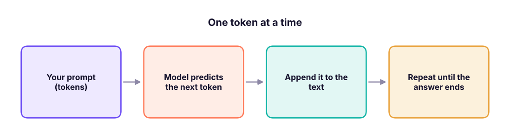
Generating an answer: the prompt is split into tokens; the model repeatedly predicts the next token from everything so far.
Concept
Meaning
Why analysts care
Token
Roughly ¾ of an English word (about 4 characters)
Limits and costs are measured in tokens
Context window
How much text the model can consider at once (prompt + answer)
A long file may not fit; the model forgets what is outside
Temperature
Randomness of word choice
Low (0–0.3) for SQL, maths and extraction; higher for brainstorming
System prompt
Hidden instructions that set behaviour
Custom GPTs/Projects store your standing instructions
Training cut-off
The model's knowledge stops at some date
It may not know recent tools or prices; give it documents
Grounding / RAG
Supplying real documents or data in the prompt (Retrieval-Augmented Generation)
Cuts hallucination: "answer only from this file"
Tool use / function calling
The model asks the app to run a calculator, database query or code
Makes answers computed instead of guessed
Multimodal
Accepts images, PDFs, audio as well as text
Paste a chart screenshot and ask what it shows
Watch outHallucination
Because an LLM generates plausible text, it can state false things with complete confidence: invented statistics, non-existent functions, wrong column names, fake citations. Never use an AI answer as a fact until you have checked it: run the code, recompute the number, open the source.
Prompt engineering for analysts
A prompt is an instruction plus the material the model needs. The most reliable structure has five parts:
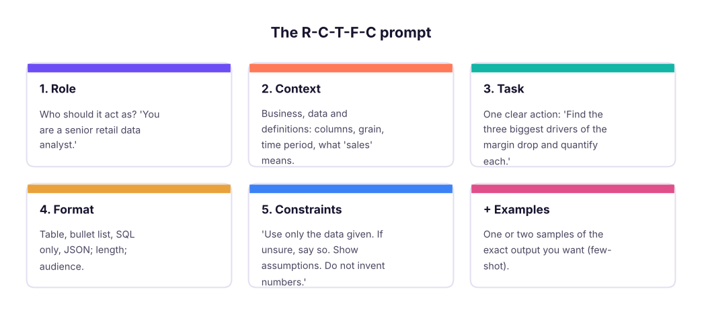
A prompt recipe: Role, Context, Task, Format, Constraints.
Weak vs strong prompt
Weak:"Analyse my sales data."
Strong:
Text
Role: You are a senior retail data analyst for an Indian omnichannel retailer.
Context: Table superstore(order_id, order_date, region, category, sub_category, sales, discount, profit),
one row per order line, Jan 2023–Dec 2025, amounts in rupees. Margin = profit / sales.
Task: Explain why overall margin is only about 9%. Look at category, sub-category and discount band.
Format: (1) a 3-bullet summary for the CFO, (2) a table of the 5 worst sub-categories (sales, profit, margin),
(3) the SQL Server queries you used.
Constraints: Use only the columns listed. State any assumption. If a number cannot be computed from the table, say so.
The strong prompt names the grain, the metric definition, the output format and the rules for uncertainty. The result is far more likely to be right and checkable.
Core techniques
Technique
How
Use for
Be specific
Name columns, periods, units, audience
Everything
Few-shot examples
Show 2–3 input→output pairs
Classification, extraction, tone matching
Step by step
"First list the assumptions, then compute, then summarise"
Multi-step analysis; makes errors visible
Ask for checks
"Then list three ways this answer could be wrong"
Self-critique
Structured output
"Return JSON with keys…"
Feeding results into code
Delimiters
Put data in """triple quotes""" or XML tags
Stops the model confusing instructions with data
Iterate
Treat the first answer as a draft; refine with follow-ups
Always
Give it the schema, not the data
Column names and 5 sample rows, not the whole file
Privacy, token limits
Prompt templates for common analyst jobs
Job
Template (replace brackets)
Explain a formula
"Explain this Excel formula step by step for a beginner and give a simpler alternative: [formula]"
Write SQL
"Dialect: SQL Server. Tables: [schema with keys and grain]. Write a query that [question]. Return only SQL, then list assumptions."
Debug code/SQL
"This [language] query gives [wrong result / this error]. Expected: [x]. Query: [code]. Find the cause and show the fix."
Clean data
"Here are 10 sample values of column [x]: [list]. Propose normalisation rules and a mapping table; flag ambiguous cases."
Interpret results
"Here is a result table: [table]. Write 3 insights for a non-technical manager, each with a number, and 2 caveats."
Choose a chart
"I want to show [message] to [audience] with [data]. Recommend a chart and what to label."
Draft a report
"Turn these findings into a one-page memo with: situation, key findings, recommendation, risks. Keep it under 250 words."
Interview practice
"Act as an interviewer for a data analyst role; ask one SQL question at a time and give feedback on my answer."
ExampleFrom vague to checkable
Prompt: "Explain this formula: =IFERROR(INDEX($C:$C,MATCH(1,($A:$A=F2)*($B:$B=G2),0)),"Not found")" A good answer says it looks up C where A equals F2 and B equals G2 (a two-condition lookup), returns "Not found" if none, and notes it needs array evaluation in older Excel. You can verify by testing it on 3 rows.
Copilot in Excel/Power BI, Gemini in Sheets, Metabase/ MinusX, Claude in Excel
Work where the data is
Permissions; see next lessons
Coding assistants and agents
Claude Code, Cursor, GitHub Copilot, Codex
Writing and running code, analysis scripts
Review diffs; run tests; secrets
Never paste
Personal data (names with phone numbers, emails, Aadhaar/PAN, health, salary of identifiable people) unless your company's approved tool and policy allow it.
Confidential business data (unreleased financials, customer lists, contracts, source code, credentials, API keys) into public tools.
Anything you are not allowed to share: client data under NDA.
Use enterprise versions with data-protection terms, mask or sample the data (replace names with IDs, share the schema and 5 fake rows), and follow your organisation's AI policy. In India, personal data is also covered by the Digital Personal Data Protection Act, 2023.
A verification habit for every AI answer
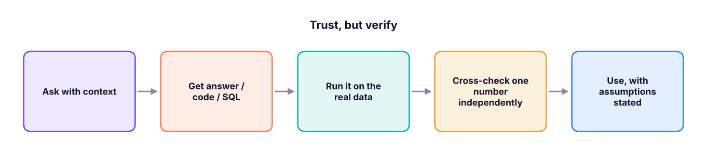
The analyst's rule: generate with AI, verify with data.
Here is why verification matters. Suppose an AI writes the following query for "average order value per region". It looks right, runs without error and returns plausible numbers, but it averages order lines, not orders:
Python
import duckdb, pandas as pd
con = duckdb.connect()
con.execute("CREATE TABLE superstore AS SELECT * FROM read_csv_auto('superstore_sales.csv')")
wrong = con.execute("SELECT region, ROUND(AVG(sales), 0) AS avg_order_value FROM superstore GROUP BY region ORDER BY region").df()
right = con.execute("""SELECT region, ROUND(AVG(order_total), 0) AS avg_order_value
FROM (SELECT region, order_id, SUM(sales) AS order_total FROM superstore GROUP BY region, order_id) GROUP BY region ORDER BY region""").df()
pd.DataFrame({"region": wrong.region, "AI query (per line)": wrong.avg_order_value, "Correct (per order)": right.avg_order_value})
Output
region
AI query (per line)
Correct (per order)
0
East
30,521
60,684
1
North
32,038
61,892
2
South
32,580
64,925
3
West
32,192
64,067
4 rows × 3 columns
The AI's version understates order value by roughly half, because an average order has about two lines. A one-line sanity check (total sales ÷ number of orders) would have caught it:
Python
tot = con.execute("SELECT SUM(sales) / COUNT(DISTINCT order_id) FROM superstore").fetchone()[0]
print(f"Total sales / distinct orders = {tot:,.0f}")
Output
Total sales / distinct orders = 62,942
Common mistakesCommon AI-assistant failure modes
Wrong grain: counting lines as orders, double-counting after a join (Lesson 8 in SQL).
Invented columns or functions: the code references a field that does not exist.
Silent assumptions: it picks a date range, currency or definition without saying.
Plausible but unverified numbers: especially when asked to "estimate" or "recall" data it cannot see.
Over-agreeing: if you assert something wrong, it may follow you. Ask it to challenge your assumption.
Stale knowledge: new tool versions, prices, laws.
Responsible use
Accountability stays with you: you sign off on the analysis, not the model.
Bias: models mirror training data; check outputs for unfair assumptions about people or regions.
Transparency: tell stakeholders when AI helped, and keep the prompt and verification notes.
Copyright and attribution: do not present generated text or images as someone else's work; check licences.
Security: treat prompts and uploaded files as data leaving your machine; beware prompt injection when an AI reads untrusted documents or web pages.
Do it with AIDo it with AI
Pick a task you did earlier in this course (for example the SQL discount analysis). Ask an AI assistant to produce the answer from the schema, run its SQL, and compare with the result in this handbook. Where it differs, work out why (grain? date range? definition?). This single exercise teaches more about AI limits than any lecture.
Summary
Key takeaways
AI ⊃ ML ⊃ deep learning ⊃ generative AI; agentic AI = an LLM with goals, tools and a loop.
LLMs predict the next token; they do not look things up unless given documents or tools. They can hallucinate, so verify every answer.
Good prompts have role, context, task, format and constraints, use examples and step-by-step reasoning, and give the schema (not the sensitive data).
Use templates for SQL, formulas, cleaning, insights, memos and interview practice; iterate.
Never paste personal or confidential data into public tools; mask or sample, and follow your company policy.
The analyst's loop: ask with context → run on real data → cross-check one number → state assumptions.
Quick quiz6 questions · tap an answer to check it
1. Which statement best describes agentic AI?
Answer: B. Agents add goals, tools and a decision loop on top of a language model.
2. Why can an LLM state wrong facts confidently?
Answer: B. Fluency is not accuracy.
3. Which setting is best for generating SQL?
Answer: B. Low temperature reduces random variation for precise tasks.
4. What makes a prompt more reliable for analysis?
Answer: B. Specifics reduce guesswork and make the answer checkable.
5. A teammate wants to paste a customer list with phone numbers into a public chatbot. Best advice?
Answer: B. Personal data should not go into tools not approved for it.
6. An AI query returns an "average order value" half the size of total sales ÷ orders. The likely error is:
Answer: B. Always sanity-check results against a simple independent calculation.
ExercisePrompt rewrite
Rewrite this weak prompt into a strong one and list three checks you will run on the answer: "Tell me about churn in my telecom data." The data is telecom_churn.csv with columns customer_id, senior_citizen, tenure_months, contract, internet_service, payment_method, monthly_charges, total_charges, support_calls, churn (Yes/No).
Show solution
Strong prompt: "Role: senior telecom data analyst. Context: table telecom_churn(…columns…), one row per subscriber, churn = Yes/No. Task: find which contract types, tenure bands and support-call counts have the highest churn rate and quantify each. Format: a table (group, customers, churners, churn %), three bullets for a retention manager, and the SQL/pandas code used. Constraints: use only these columns, state assumptions, do not infer causes you cannot test, flag small groups (< 50 customers)." Checks: (1) recompute the overall churn rate by hand (count of Yes ÷ rows) and match it; (2) confirm each group's customer counts add up to the total; (3) spot-check one group with an independent query.
Interview cornerQuestions you may be asked
Q: Difference between AI, ML and generative AI?
AI is the broad field; ML learns patterns from data to predict or classify; generative AI (a deep-learning subset) creates new content such as text, code and images.
Q: What is a hallucination and how do you reduce it?
Confident but false output. Reduce it by grounding answers in provided documents or data (RAG), using tools that compute results, lowering temperature, asking for sources and assumptions, and verifying independently.
Q: How do you write a good prompt for a data task?
State the role, context (schema, grain, definitions), a single clear task, the required output format, and constraints (use only given data, state assumptions); give examples; iterate.
Q: What is agentic AI?
Systems where an LLM plans and executes multi-step tasks using tools, observes results and continues until a goal is met, with human oversight for risky actions.
AI for Data Analysis · Lesson 2
AI with SQL: Text-to-SQL, Docker, Metabase & MinusX
Use AI to write, explain and debug SQL safely. Learn how text-to-SQL works and where it fails, give the model the right schema, protect your database with read-only access, install Docker, run Metabase on your own data, connect an AI assistant such as MinusX, and validate every generated query.
● DVA with AI · class 2✦ Docker, Metabase and AI assistants, 2026Intermediate⏱ 130 min
By the end of this lesson you can
Explain how text-to-SQL works and why context (schema, definitions, examples) decides quality
Write a schema-aware prompt and review generated SQL for the usual errors
Install Docker and run Metabase locally; connect a database; build questions, models and dashboards
Describe how an in-browser AI assistant such as MinusX works with Metabase, and its privacy trade-offs
Apply guardrails: read-only roles, row limits, query review and result validation
What is text-to-SQL?
Text-to-SQL turns a business question in plain language into a SQL query: "Which region had the highest profit in 2025?" → SELECT region, SUM(profit) …. LLMs are good at SQL syntax, but correct SQL for your database needs your context.
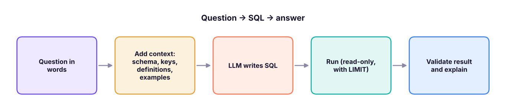
Text-to-SQL pipeline. Quality depends mostly on the context you supply, not on the model alone.
What goes wrong without context
Problem
Example
Prevention
Wrong tables/columns
Uses customer_name in orders, where it does not exist
Provide the schema (tables, columns, types, keys)
Wrong grain / fan-out
Joins orders to items and then COUNT(*) for "orders"
State the grain: "one row per order line"; add "count distinct order_id" rule
Wrong definitions
"Active customer", "net sales", "this year"
Provide a metric dictionary
Dialect mismatch
LIMIT instead of TOP in SQL Server
Name the database and version
Dates
Uses YEAR(date) = 2025 (slow) or the wrong fiscal year
State calendar vs fiscal year and preferred patterns
Hallucinated values
WHERE region = 'Northern' when data says North
Provide sample values for categorical columns
Unsafe actions
DELETE/DROP suggestions
Read-only connection; review before running
A schema prompt that works
Text
You are a senior analytics engineer. Write SQL for Microsoft SQL Server 2022.
SCHEMA (all in dbo):
customers(customer_id PK, customer_name, segment, city, state, region)
- segment in ('Consumer','Corporate','Home Office'); region in ('North','South','East','West')
orders(order_id PK, order_date DATE, ship_date DATE, ship_mode, customer_id FK -> customers)
order_items(item_id PK, order_id FK -> orders, product_id FK -> products, quantity, discount, sales, profit)
- one row per product line; sales and profit in rupees
products(product_id PK, product_name, category, sub_category, list_price)
DEFINITIONS:
- "Orders" = COUNT(DISTINCT orders.order_id). "Margin %" = SUM(profit) / SUM(sales).
- Financial year runs April–March. Use half-open date ranges (>= start AND < next start).
QUESTION: For FY2025 (Apr 2025–Mar 2026), show margin % by category and by discount band (0, 1–20%, >20%).
RULES: Return only SQL; add comments; no SELECT *; list any assumptions after the query.
Notice the pieces: dialect, schema with keys, valid values, grain, definitions, date convention and output rules. This is the difference between a lucky answer and a reliable one.
TipKeep a reusable "context file"
Save your schema, definitions and sample queries in one text file (or in an AI Project / custom instructions). Paste it into every session. Many BI tools (Metabase, Power BI Copilot, Snowflake Cortex, Looker) call this a semantic layer or "AI context": descriptions, synonyms and verified queries.
Reviewing AI-generated SQL: a checklist
Does every table/column exist? (Run it; fix any "invalid column name".)
Is the grain right? After each join, did rows multiply? Are distinct counts used for orders and customers?
Are filters correct? Date ranges half-open? Status filters? NULL handling?
Do aggregates match the definition?SUM(profit)/SUM(sales) not AVG(margin).
Does the total reconcile? Compare with a simple query: SELECT SUM(sales) FROM order_items.
Is it safe and cheap? No writes; a TOP/LIMIT while testing; no accidental cross join.
Is it readable? CTEs, aliases and comments you could explain in an interview.
Let's see this in practice. A typical AI answer to "profit margin by discount band" that forgets SUM(profit)/SUM(sales) and averages row margins instead:
The two queries differ in every band (18.2% vs 17.5% and 2.0% vs 1.2% for the first two) because large order lines matter more in the weighted version than small ones. Which one the business wants must be written in the definitions part of your prompt. The checklist question "does the aggregate match the definition?" catches this.
Guardrails for letting AI near a database
Guardrail
How
Read-only login
Create a database user with SELECT only on approved views (GRANT SELECT ON …); never give AI tools db_owner
Expose views, not raw tables
A vw_sales_for_ai view with clean names, no personal data columns
Row and time limits
Timeouts, TOP 1000, query cost limits
Masking
Hide phone, email, ID columns; use dynamic data masking
Human review
Show the SQL before running it; log queries
Verified questions
Keep a library of approved queries for key metrics
No secrets in prompts
Connection strings and passwords stay in the tool's secret store
Docker: running tools in containers
Docker packages an application and everything it needs into a container, so it runs the same on any machine. Instead of installing Java, a database and an app by hand, you run one command.
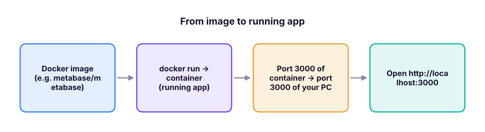
An image is a read-only template; a container is a running instance of it. Many containers can run from one image.
Step by stepInstall Docker Desktop
Download Docker Desktop for Windows, Mac or Linux from the Docker website and install it. On Windows it uses WSL 2 (Windows Subsystem for Linux); the installer enables it, and you may need to restart.
Start Docker Desktop and wait until it says "Engine running".
Open a terminal (PowerShell, Terminal) and check: docker --version and docker run hello-world.
Note your machine needs virtualisation enabled in BIOS and about 4 GB of free RAM for small tools.
Command
Meaning
docker pull metabase/metabase:latest
Download an image
docker run -d -p 3000:3000 --name metabase metabase/metabase
Run it in the background (-d), map port 3000, name it
docker ps / docker ps -a
List running / all containers
docker logs -f metabase
Follow its logs (see start-up progress)
docker stop metabase / docker start metabase
Stop / start again
docker rm metabase
Delete the container (not the image)
docker images
List downloaded images
docker compose up -d
Start everything defined in a compose.yaml file
Metabase: open-source BI for everyone
Metabase is an open-source business-intelligence tool: connect a database, ask questions with a point-and-click question builder (no SQL needed), or write SQL, then save charts into dashboards. It is popular in start-ups because non-technical colleagues can self-serve.
Step by stepRun Metabase and connect your data
Start it: docker run -d -p 3000:3000 --name metabase metabase/metabase. First start takes a minute or two (check docker logs -f metabase).
Open http://localhost:3000, create the admin account, and choose Add your data.
Pick your database type (PostgreSQL, MySQL, SQL Server, BigQuery, Snowflake, SQLite files via drivers, CSV upload in newer versions), enter host, port, database name, username and password. Use the read-only user. If the database also runs on your PC, use the host host.docker.internal from inside the container.
Metabase scans the tables. Browse them under Browse data.
New → Question: choose a table, pick columns, add Filter, Summarize (Sum of sales by region), choose a visualisation, Save.
New → Dashboard: add saved questions, add filters (date, region) and connect them to the question fields.
For anything you want to keep, run Metabase with a proper application database instead of the default embedded one, and mount a volume, for example:
A saved query (builder or SQL) with a visualisation
Model
A curated, cleaned table (a saved query with documented columns) for people to build on
Metric
A named, reusable calculation such as "Net revenue"
Dashboard
A page of questions with shared filters
Collection
Folders with permissions
Segment / filters
Reusable row filters
Permissions
Which groups see which databases and tables; row-level sandboxing (paid plans)
Metabot / AI features
Built-in AI assistance for questions and SQL in recent versions (availability depends on the edition and plan; check Metabase's current documentation)
Try it on the retail data: connect to your SQL Server RetailDB, then build three questions: Sales by region, Monthly sales (summarise by order_date: Month), and Top 10 customers. Then verify each one against this handbook's tables:
SQL
SELECT region, ROUND(SUM(sales), 0) AS sum_of_sales FROM superstore GROUPBY region ORDERBY sum_of_sales DESC;
Result
region
sum_of_sales
South
53,952,769
West
51,958,521
North
49,018,161
East
46,484,119
4 rows × 2 columns
MinusX: an AI assistant inside your BI tool
MinusX is an open-source AI assistant delivered as a Chrome extension that adds a chat sidebar to tools such as Metabase and Jupyter notebooks. Instead of copying your data into a chatbot, you work in Metabase and ask the sidebar things like "Why did sales drop in March?" or "Write a query for monthly profit by category". According to its public description, it reads a simplified view of the page (metadata such as table and column names), then operates the tool by clicking, typing and writing queries, and lets you accept or reject its edits.
Aspect
How it behaves
What you should still do
Context
Sees the page, selected tables/columns and the query editor
Make sure the right database and tables are selected
Actions
Writes and runs SQL, edits questions, explains results
Read the SQL before accepting
Models
Supports several LLM providers (you may supply your own API key)
Check the provider's data policy
Privacy
Vendor says raw data is not sent; metadata and your prompts are
Verify the current policy; never expose sensitive tables
Cost
Free and paid plans; model API usage may cost
Check current pricing
Step by stepUsing an AI assistant with Metabase
Install the Chrome extension from the Chrome Web Store (search "MinusX") and pin it; open your Metabase tab and open the sidebar.
Add your model/API key in settings if required.
Select the database/table in Metabase so the assistant knows the context.
Ask a precise question ("Monthly sales and profit by category for 2025, as a line chart; sales = SUM(sales), profit = SUM(profit)").
Review the generated SQL, run it, check totals against a simple query, then save it as a question.
Ask follow-ups: "Explain the biggest drop", "Break it down by region", "Why is Furniture negative?"
Watch outAI assistants and sensitive data
Anything the assistant can see, the model provider may receive. Use a read-only role limited to non-sensitive views, keep personal columns out of the connected schema, use an enterprise model agreement for company data, and keep a record of which prompts were run. If your company bans browser extensions that read pages, ask IT before installing any.
Other ways to use AI with SQL
Use
How
Explain a query
Paste the query (not the data) and ask for a line-by-line explanation and the business meaning
Optimise
Paste query + execution plan + table sizes; ask for rewrites and indexes; test each
Convert dialects
"Convert this SQL Server query to PostgreSQL; list functions that differ"
Generate test data
"Create INSERT statements for 20 fictional customers across four regions" (no real data)
Write documentation
Column descriptions, data dictionaries, comments
Data quality checks
"Write queries to find nulls, duplicates, orphans and out-of-range values for these tables"
Platform AI
Snowflake Cortex Analyst, BigQuery Gemini, Databricks Genie, SSMS Copilot, Azure Data Studio/VS Code Copilot, Fabric Copilot: all follow the same principle: context in, SQL out, you verify
2026 updateTrend: the semantic layer
Teams that succeed with text-to-SQL do not rely on the raw schema: they define metrics (net sales, active customer) once in a semantic layer (dbt Semantic Layer, Cube, LookML, Power BI semantic models, Metabase models/metrics) and let AI query that. The AI then picks from governed metrics instead of reinventing definitions, which removes most wrong-number errors.
Summary
Key takeaways
Text-to-SQL works when you provide dialect, schema with keys, valid values, grain, metric definitions and date rules.
Review every query: columns exist, grain is right, filters correct, aggregates match the definition, totals reconcile, nothing writes.
Protect the database with read-only logins on curated views, row limits and human review; never expose secrets or personal columns.
Docker runs tools in containers (docker run -d -p 3000:3000 metabase/metabase); Metabase gives self-service questions, models and dashboards.
An assistant such as MinusX adds an AI sidebar to Metabase; treat it as a fast junior analyst whose SQL you review, and check privacy terms.
A governed semantic layer makes AI answers consistent.
Quick quiz6 questions · tap an answer to check it
1. Why does giving the AI your schema and metric definitions improve results?
Answer: B. Context is the main driver of text-to-SQL accuracy; review is still required.
2. Which command starts Metabase in a container on port 3000?
Answer: B.-d runs detached and -p 3000:3000 maps the port.
3. Which login is safest for an AI tool?
Answer: B. Least privilege limits damage if the AI makes a mistake.
4. A generated query averages profit/sales row by row to get a margin. Why is that risky?
Answer: B. Weighted vs unweighted aggregates differ; define the metric in the prompt.
5. What is a semantic layer?
Answer: B. It standardises metrics so every query uses the same logic.
6. What should you do before saving an AI-generated Metabase question?
Answer: B. Validation protects you from plausible but wrong numbers.
ExerciseSchema prompt and review
(1) Write a schema prompt for the employees table (HR data: emp_id, gender, age, department, job_title, education, hire_date, years_at_company, monthly_income, job_satisfaction, overtime, performance_rating, city, attrition) including at least three definitions. (2) Ask any AI assistant for a query that returns attrition % by department and overtime. (3) Review the result with the checklist and reconcile the overall attrition % (25.9%) with a simple query.
Show solution
Definitions to include: "Attrition %" = employees with attrition = 'Yes' ÷ all employees; monthly_income is in rupees; "tenure band" = 0–2, 3–5, 6+ years. Reconciliation query: SELECT ROUND(100.0 * SUM(CASE WHEN attrition = 'Yes' THEN 1 ELSE 0 END) / COUNT(*), 1) FROM employees; should return 25.9. The weighted total from the grouped result (sum of leavers ÷ sum of employees across all groups) must also equal 25.9.
Interview cornerQuestions you may be asked
Q: How would you use AI to speed up SQL work safely?
Provide schema, definitions and dialect; generate and explain queries; review for grain, filters and definitions; run read-only with limits; reconcile totals; keep verified queries in a library.
Q: What is Docker and why is it useful for data tools?
A container platform that packages apps with their dependencies so the same setup runs anywhere; useful to spin up Metabase, databases or Jupyter in one command and share reproducible environments.
Q: What are the risks of connecting an AI assistant to a database?
Data exposure to a model provider, destructive queries, wrong answers presented as facts, and prompt injection; mitigate with read-only access to curated views, masking, review and logging.
Q: What is Metabase?
An open-source BI tool where users can ask questions with a visual builder or SQL, build dashboards and share them, with permission control by group.
AI for Data Analysis · Lesson 3
AI in Excel & Office: Copilot, Gemini, Claude, Python in Excel & Agents
Use AI where analysts work every day. Work with Copilot in Excel (formulas, insights, charts, the COPILOT function), Gemini in Google Sheets and Excel add-ins, Claude and other assistants for formulas and files, Python in Excel, and office agents that perform multi-step tasks, and learn how to prompt, verify and stay safe.
● DVA with AI · class 3✦ Microsoft 365 Copilot, Gemini and agent features as of 2026Intermediate⏱ 120 min
By the end of this lesson you can
Prepare a workbook so AI tools understand it (Tables, clear headers, no merged cells)
Use Copilot and Gemini-style assistants to explain, write and debug formulas, create pivots and charts, and summarise data
Use the Excel COPILOT function and Python in Excel for text, classification and analysis inside cells
Describe what office agents do and what controls they need
Verify AI-generated formulas and numbers with independent checks
The AI-in-Excel landscape
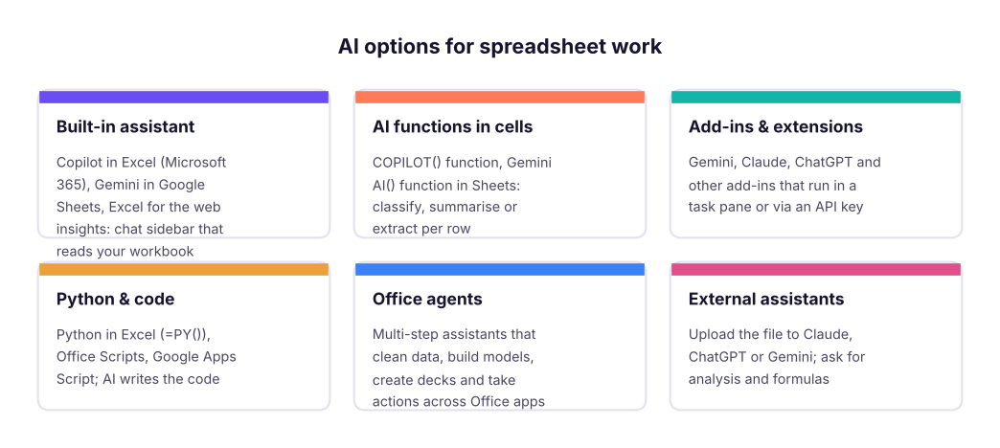
Four ways AI shows up in spreadsheets.
Step 0: make your workbook AI-ready
AI assistants can only reason about data they can see and parse. The same rules that make pivot tables work (Excel Lesson 1) make AI work:
Convert data to an Excel Table (Ctrl + T) with a clear name (tblSales) and one header row.
Descriptive column names (order_date, sales_inr) instead of Col1; add units.
No merged cells, blank rows or notes inside the data; keep totals outside.
One sheet per dataset; a small Data dictionary sheet that defines columns and metrics (AI reads it too).
Remove or mask sensitive columns before connecting an AI service.
Save to OneDrive/SharePoint (Copilot needs cloud-saved files with AutoSave on).
Copilot in Excel
Needs a Microsoft 365 Copilot licence and your data formatted as a Table or range with headers.
Task
Example prompt
Explain
"Explain what column H does and how it is calculated"
Formulas
"Add a column that shows profit margin %" / "Write a formula that looks up the manager's name from the Managers table"
Insights
"Show me insights about sales by region" → Copilot adds pivot tables and charts
Highlight
"Highlight rows where discount > 20% and profit is negative" (conditional formatting)
Sort / filter
"Sort by sales descending and filter to Technology"
Pivot & charts
"Create a pivot table of sales by category and year with YoY %"
Clean up
"Fix the inconsistent city names" / "Split full name into first and last name"
Analyse with Python
"Run a correlation between discount and profit and plot it" (uses Python in Excel)
Step by stepA safe Copilot workflow
Open your workbook (saved in OneDrive) → Home → Copilot.
Select the Table (or let Copilot detect it).
Ask one thing at a time, with column names: "Add a column margin_pct = profit / sales, formatted as a percentage."
Read the proposed formula and its explanation before clicking Insert column.
Check three rows by hand, and one total against a plain SUM.
Undo (Ctrl + Z) if wrong, and rephrase with more detail.
The COPILOT() function
Microsoft 365 also provides a COPILOT function that sends text and cell ranges to the model and returns results into cells that spill and recalculate:
Excel formula
=COPILOT("Classify this customer review as Positive, Neutral or Negative", D2:D100)
=COPILOT("Summarise the main complaint in 6 words or fewer", D2)
=COPILOT("Extract the city name from this address", A2)
Use it for text tasks (classify, summarise, extract, translate, tag) over small to moderate ranges, not for arithmetic: use normal formulas for numbers. Results can change between recalculations and each call consumes model capacity; availability, limits and licensing change, so check Microsoft's current documentation. Convert important results to values (copy → paste values) once checked.
Here is the same classify-sentiment idea applied to the product reviews dataset, with the (non-AI) ground-truth labels already in the file, so you can see how to measure an AI's accuracy:
Delivery was quick and packaging was neat. great value for money, totally worth it
positive
3
4
Earbuds
1
Battery drains too fast
negative
4
5
Laptop
2
Delivery was late and the box was damaged
negative
5
6
Laptop
2
Refund process is very slow. heats up a lot while charging
negative
6 rows × 5 columns
Python
# How would you evaluate an AI classifier? Compare its labels with a trusted label set.# Here a deliberately weak keyword rule plays the role of "the AI" so you can see the evaluation method.# (These reviews are synthetic and templated, so real reviews will be much harder to classify.)
neg_words = ("stopped", "late", "poor", "crashing") # a deliberately small word list: an imperfect classifier
pos_words = ("excellent", "great", "amazing", "premium")
defguess(t):
t = t.lower()
n = sum(w in t for w in neg_words); p = sum(w in t for w in pos_words)
return"negative"if n > p else ("positive"if p > n else"neutral")
rev["pred"] = rev.review_text.apply(guess)
acc = (rev.pred == rev.sentiment).mean()
print(f"Agreement with trusted labels: {acc:.1%}\n")
print(pd.crosstab(rev.sentiment, rev.pred, rownames=["actual"], colnames=["predicted"]))
The cross-tab (a confusion matrix, ML track Lesson 15) shows where a classifier goes wrong. Do the same with an AI column: take 100 reviews you labelled yourself, compare, and only then trust it on 10,000.
Gemini in Google Sheets and with Excel
Gemini in Google Sheets (Workspace plans): a side panel that can create tables, write formulas, summarise, generate charts and analyse trends, plus an AI() function to run a prompt per row (classify, summarise, extract) similar to COPILOT().
Gemini and other LLM add-ins for Excel: some marketplaces offer add-ins or custom functions (for example =GEMINI("prompt", A2)) that call a model through your own API key. They are useful for batch text tasks, but you must protect the key, watch the cost per call, and avoid sending sensitive data.
Apps Script / Office Scripts: AI can write the script; you review and run it.
Common mistakesAPI-key hygiene for add-ins
Never paste an API key into a shared workbook or a cell others can read; use the add-in's secure settings, set a spending limit on the key, and rotate it if exposed. A key in a shared file is a billing and security incident waiting to happen.
Claude, ChatGPT and other assistants with your files
Upload a CSV or XLSX to a general assistant that can run code (analysis/code-execution tools). It reads the file, writes Python, runs it, and shows charts and tables: closer to an analyst than a chatbot that only talks.
A good first message with a file:
Text
I've attached superstore_sales.csv (one row per order line, Jan 2023–Dec 2025, amounts in rupees).
1) Profile the data: row count, columns and types, missing values, duplicates, date range.
2) Compute total sales, profit and margin by year and category.
3) Find the three biggest drivers of low margin; quantify each.
4) Show your Python code, and tell me which assumptions you made.
Do not guess: if something cannot be computed from the file, say so.
Typical good behaviour: it prints the profile, shows code, makes charts. What you still do: spot-check numbers, make sure it used the right columns, and ask for the code so you can re-run it yourself. Assistants that run code produce reproducible analysis; those that only "think" may fabricate numbers.
Assistant strengths
Check
Writing and explaining formulas (even LET, LAMBDA, XLOOKUP, array formulas)
Test on sample rows
Cleaning plans and Power Query M code
Preview the result; keep a backup
Building DAX measures
Validate against a pivot
Summarising and drafting commentary
Verify each number quoted
Designing dashboards and chart choices
Compare with your audience's needs
Python in Excel
=PY( turns a cell into a Python editor (Formulas → Insert Python). It uses pandas, matplotlib, seaborn, statsmodels and scikit-learn, runs in Microsoft's secure cloud (no local Python needed), and reads Excel ranges with xl().
Ask Copilot: "Use Python to show the correlation between discount and profit and draw a scatter plot." Behind the scenes it writes the =PY() code. Check what it computed against this handbook's result:
A strong negative correlation, and margin turning negative from a 20% discount upwards: the same story as the SQL and Power BI lessons, arrived at a third way. Cross-checking tools against each other is how you build trust.
Office agents: the next step
Agents go beyond answering: given a goal ("Clean this export, build a pivot by region, add a chart, and draft a three-slide summary"), they plan, use the spreadsheet or Office apps as tools, check results and iterate, then present the outcome for your approval. Microsoft, Google, Anthropic, OpenAI and others have all released agent modes for office work; names and capabilities change quickly, so evaluate any specific product (including whichever "Frontier"-style agent your organisation provides) against the questions below.
Question to ask about any agent
Why it matters
What can it read and write? (files, mail, calendar, web)
Scope of risk
Does it show its plan and steps and ask before acting?
Oversight
Can I undo or review changes (version history)?
Recoverability
Where does data go (tenant, region, retention, training use)?
Compliance
How does it handle untrusted content (prompt injection in emails/web pages)?
Security
Does it produce formulas and sources or just pasted values?
Auditability
What does it cost per task?
Budget
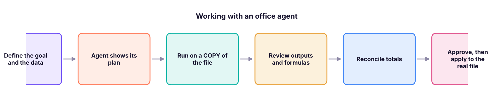
A safe agent workflow: small steps, visible plan, human approval at risky points, independent checks.
Text tasks: classify, summarise, extract, translate
Consistent results every time (non-deterministic)
Suggesting charts and structure
Hidden assumptions (date ranges, definitions)
Debugging errors (#N/A, #SPILL!)
Anything involving sensitive data in the wrong tool
Documentation and commentary
Replacing review and sign-off
A checklist before you trust an AI-built spreadsheet
Totals reconcile with the source (SUM of raw vs summary).
Row counts match (no lost or duplicated rows).
Formulas are visible (not pasted values) and use absolute references correctly.
Spot-check five random rows by hand.
Edge cases: blanks, zero, negative, text in number columns, duplicates.
Units and currency are labelled; dates are real dates.
Assumptions are written on the sheet.
A second tool or person confirms the headline number.
Summary
Key takeaways
Prepare data as Tables with clear headers, no merged cells, and a data dictionary; save in the cloud for Copilot.
Copilot explains and writes formulas, creates pivots, charts, highlights and cleans data; COPILOT() and Sheets' AI() apply prompts per row for text tasks.
General assistants that can run code make reproducible analyses from uploaded files; always request the code and assumptions.
Python in Excel (=PY()) brings pandas into cells; AI can write it, you verify it.
Agents plan and act across apps: work on a copy, require visible plans, approvals, undo, audit trail and clear data-handling terms.
Verify with reconciliation, spot checks, edge cases and a second tool; protect keys and sensitive data.
Quick quiz6 questions · tap an answer to check it
1. What should you do first to help an AI understand your Excel data?
Answer: B. Structured, well-named data is easier for AI (and pivot tables) to use.
2. The COPILOT() function is best used for:
Answer: B. Use normal formulas for numbers; use AI functions for language tasks.
3. Why ask an assistant to show its Python code?
Answer: B. Visible code lets you verify and re-run the work.
4. Which is a sensible control for an office agent?
Answer: B. Human oversight and recoverability are essential.
5. An AI classifier labels reviews; how do you measure its quality?
Answer: B. Evaluate against ground truth, not self-reports.
6. Where should an API key for an Excel add-in be stored?
Answer: B. Keys in shared files can be abused and billed to you.
ExerciseAI-assisted analysis, verified
Using superstore_sales.csv: (1) ask an AI assistant with code execution to profile the data and compute margin by category and discount band; (2) write the pivot table version yourself; (3) compare the two and list any differences; (4) create three COPILOT()-style prompts (or Gemini AI() prompts) for a column of customer comments, and say how you would evaluate them on 50 labelled examples.
Show solution
Expected margins by discount band: 0% → 17.5%, 1–20% → 1.2%, >20% → −20.6% (overall 9.1%). Differences usually come from averaging margins instead of total profit ÷ total sales, or from using order lines versus orders. Prompts: "Classify as Positive, Neutral or Negative (one word)"; "Extract the product mentioned (or 'none')"; "Summarise the complaint in under 8 words". Evaluation: label 50 comments yourself, run the prompt, compute accuracy and a confusion matrix, inspect errors, refine the prompt, and re-test on a fresh sample.
Interview cornerQuestions you may be asked
Q: How would you use AI tools to speed up Excel analysis responsibly?
Prepare structured data, ask specific questions, review generated formulas and pivots, reconcile totals, document assumptions, keep sensitive data out of unapproved tools, and keep a human sign-off.
Q: What is Python in Excel?
A feature that runs Python (pandas, matplotlib, scikit-learn) in cells via =PY(), in a secure cloud, reading Excel ranges with xl(), useful for analysis and charts that are hard with formulas.
Q: What is an AI agent in an office context and what are its risks?
A system that plans and executes multi-step tasks using apps and files; risks include wrong actions, data leakage, prompt injection and lack of audit; mitigate with scoped permissions, approvals, copies and logs.
Q: How do you check an AI-generated formula?
Test on a few rows including edge cases, compare totals with a simple independent calculation, read the formula's explanation, and make sure references and units are right.
AI for Data Analysis · Lesson 4
The AI-Assisted Analyst Workflow, Agents & Governance (Capstone)
Combine everything into one repeatable workflow: frame a question, brief the AI, analyse with code, verify, visualise and write the story. See how an analyst agent works (plan, tools, observe, repeat) with a runnable toy example, learn MCP and tool-calling basics, and finish with governance, ethics and a telecom-churn capstone.
● DVA with AI · wrap-up✦ 2026Intermediate⏱ 140 min
By the end of this lesson you can
Apply a seven-step AI-assisted analysis workflow from question to recommendation
Explain the agent loop, tool calling and the Model Context Protocol (MCP) at a conceptual level
Build a tiny agent-style loop that plans, runs SQL tools and reports, and describe where an LLM would sit
Design human-in-the-loop controls, logging and evaluation for AI analytics
Complete an end-to-end churn analysis and explain it to a business audience
The AI-assisted analyst workflow
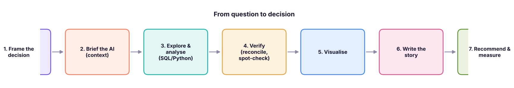
Seven steps. AI accelerates several of them, but the analyst owns the first and the last two.
A telecom company has 3,000 subscribers in telecom_churn.csv (tenure, contract type, internet service, payment method, charges, support calls, churn Yes/No). The retention head asks: Who is most likely to churn, and what should we do about it? We will follow the workflow and use AI-style assistance where it helps, checking everything.
Steps 1–2: frame and brief
Text
Decision: choose which customers get a retention offer next quarter (budget: 300 offers).
Metric: churn rate = churners / customers in the group. Report groups with at least 50 customers only.
Schema: telecom_churn(customer_id, senior_citizen 0/1, tenure_months, contract {Month-to-month, One year, Two year},
internet_service {Fiber, DSL, No internet}, payment_method, monthly_charges, total_charges, support_calls, churn {Yes, No})
Rules: use only this table; state assumptions; do not claim causes; show code.
Churn rate by contract type, tenure band, internet service and support calls. Month-to-month customers, new customers, fibre users and frequent callers churn most.
Step 4: verify before you believe
Python
# 1. Reconcile: group counts add up; 2. a second method gives the same answer; 3. check small groups
g = churn_by("contract", min_n=0)
print("Group customers sum to total :", g.customers.sum() == len(tc))
print("Group churners sum to total :", g.churners.sum() == tc.churned.sum())
import duckdb
sql = duckdb.sql("SELECT contract, COUNT(*) n, ROUND(100.0*AVG(CASE WHEN churn='Yes' THEN 1 ELSE 0 END),1) churn_pct FROM tc GROUP BY contract ORDER BY contract").df()
print("SQL cross-check:\n", sql.to_string(index=False))
print("\nCombinations with fewer than 50 customers are excluded from rankings; check:", (tc.groupby(['contract','internet_service']).size() < 50).sum(), "such groups")
Output
Group customers sum to total : True
Group churners sum to total : True
SQL cross-check:
contract n churn_pct
Month-to-month 1690 35.9
One year 739 16.9
Two year 571 7.0
Combinations with fewer than 50 customers are excluded from rankings; check: 0 such groups
Associations are not causes: month-to-month customers may also be newer or on fibre. To look at several factors together, combine them:
Key takeawaysA recommendation a manager can act on
Target the top segments by expected churners, not only by churn rate: they hold most of the preventable loss.
Offer a discounted switch to a 1-year contract for month-to-month customers in their first year, and a service check for fibre customers with 2+ support calls.
Measure with an A/B test: random half of the target list gets the offer; compare churn after 90 days (the test design is in the ML track, hypothesis-testing lessons).
Limit: this analysis is descriptive; it does not prove that contracts cause churn or estimate the offer's effect.
How an AI agent does analysis
An agent turns the workflow above into a loop that an LLM drives:
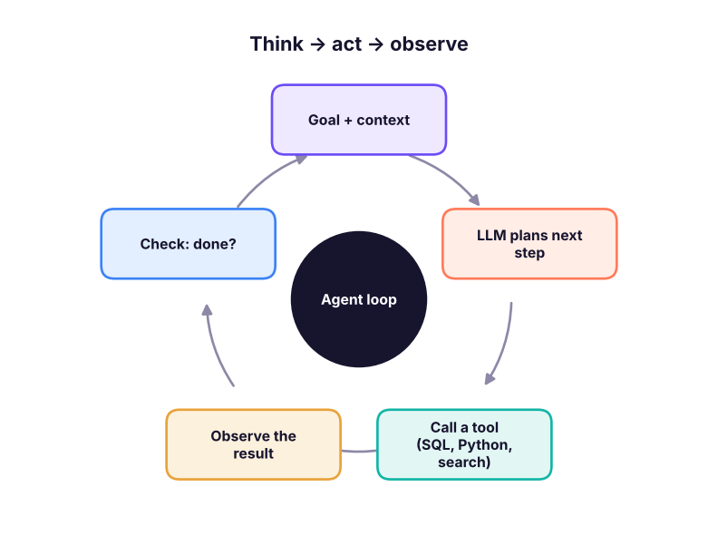
The agent loop. The model decides the next action, a tool executes it, and the result goes back into the model's context.
Read-only DB, max queries, no network, human approval for writes
Evaluation
How you know it worked
Unit tests on metrics, golden questions, human review
A toy agent you can run (no LLM)
To make the loop concrete, here is a miniature "analyst agent" in which a hard-coded planner stands in for the LLM. It has one tool (read-only SQL) and a rule: stop when it has found the top three churn drivers.
Python
import duckdb
db = duckdb.connect(); db.execute("CREATE TABLE tc AS SELECT * FROM read_csv_auto('telecom_churn.csv')")
defrun_sql(q): # TOOL: read-only SQL with a row limit
assert q.strip().lower().startswith("select"), "only SELECT statements are allowed"returndb.execute(q).df().head(20)
defplanner(memory): # stands in for the LLM: decides the next tool call
todo = [c for c in ["contract", "internet_service", "payment_method", "support_calls"] if c notin memory]
if todo andlen(memory) < 4:
c = todo[0]
returnf"SELECT {c} AS grp, COUNT(*) AS n, ROUND(100.0*AVG(CASE WHEN churn='Yes' THEN 1 ELSE 0 END),1) AS churn_pct FROM tc GROUP BY {c} HAVING COUNT(*) >= 50", c
returnNone, None
memory, log = {}, []
whileTrue:
q, key = planner(memory)
if q isNone: break
res = run_sql(q); memory[key] = res; log.append(f"ran query on '{key}' -> best group: {res.sort_values('churn_pct').iloc[-1].grp} ({res.churn_pct.max()}%)")
print("\n".join(log))
spread = {k: v.churn_pct.max() - v.churn_pct.min() for k, v inmemory.items()}
print("\nDrivers ranked by spread in churn rate (percentage points):")
for k, v insorted(spread.items(), key=lambda x: -x[1]): print(f" {k:18s} {v:5.1f}")
Output
ran query on 'contract' -> best group: Month-to-month (35.9%)
ran query on 'internet_service' -> best group: Fiber (32.2%)
ran query on 'payment_method' -> best group: Net banking (28.5%)
ran query on 'support_calls' -> best group: 4.0 (42.7%)
Drivers ranked by spread in churn rate (percentage points):
contract 28.9
support_calls 23.6
internet_service 14.6
payment_method 5.0
A real agent replaces planner with an LLM call that reads the memory and writes the next SQL, adds many more tools, and decides when to stop. Everything else (read-only guard, row limit, log) is the same safety scaffolding you should demand from any agent.
Tool calling and MCP
Tool (function) calling: the model returns a structured request such as {"tool": "run_sql", "arguments": {"query": "SELECT …"}}; your code runs it and sends the result back.
Model Context Protocol (MCP) is an open standard for connecting AI applications to tools and data sources through a common interface, so one connector (a "server") for your database, files or SaaS app works with many AI clients. For analysts it means an assistant can query a governed database or semantic layer through an approved server instead of you pasting data around.
RAG (retrieval-augmented generation) gives the model documents (metric definitions, past reports) to ground its answers (GenAI track).
Multi-agent systems split work among specialised agents (a SQL agent, a chart agent, a reviewer); more moving parts mean more to test.
Evaluating AI analytics
What to evaluate
How
Correctness of numbers
A set of "golden questions" with known answers (total sales by year, churn by contract) run on every change
SQL quality
Execution accuracy (does the result match the reference result?), not just text similarity
Faithfulness of narrative
Every number in the text must appear in the tables; automatic check by extracting numbers
Safety
Attempted writes blocked, personal data not exposed, prompt-injection tests
Cost and latency
Tokens, tool calls and time per task
Usefulness
Do users make better decisions? Track adoption and feedback
Governance, ethics and your career
Policy: know your organisation's approved tools, data-classification rules and retention.
Human in the loop for decisions that affect people (credit, hiring, pricing, health): AI assists; accountable humans decide.
Fairness: test whether results differ unfairly across groups (gender, age, region) before acting.
Explainability: record the data, prompt, code and checks behind each insight; be able to re-run it.
Skills that stay valuable: asking the right question, domain knowledge, data modelling, SQL/Python fluency to read and verify AI output, statistics and experimentation, storytelling and stakeholder management. The analysts who thrive are those who use AI for speed and can prove their answers.
2026 updateWhat is changing in 2026
Analytics agents are moving into the BI tools themselves (Copilot in Power BI/Fabric, Gemini in Looker and BigQuery, Snowflake Cortex, Databricks Genie, Metabase AI features). Vendors compete on accuracy with governed semantic layers, so expect "ask a question of certified metrics" to become a standard feature. Learn the concepts here and re-check each product's current capabilities, pricing and data-handling terms before adopting it.
Summary
Key takeaways
Follow a seven-step workflow: frame, brief, analyse, verify, visualise, write, recommend; AI accelerates but you own framing, verification and judgement.
Always verify: reconcile totals, cross-check with a second method, exclude tiny groups, and remember associations are not causes.
An agent = goal + LLM planner + tools + memory + guardrails in a loop; tool calling and MCP connect models to tools and governed data.
Evaluate AI analytics with golden questions, execution accuracy, faithfulness checks, safety tests and cost tracking.
Keep humans accountable, log the work, check fairness and follow data policy.
Quick quiz6 questions · tap an answer to check it
1. In the agent loop, which part executes a SQL query?
Answer: B. The LLM plans; tools perform actions such as running SQL.
2. What is MCP?
Answer: B. The Model Context Protocol standardises how AI clients use external tools and data.
3. Why report churn only for groups with at least 50 customers?
Answer: B. Small samples produce noisy rates.
4. Which statement about our churn findings is correct?
Answer: B. Descriptive analysis shows patterns, not causes; use an experiment to test an intervention.
5. What is a "golden question" set?
Answer: B. They enable regression testing of answers.
6. Which control best limits damage if an agent writes a bad query?
Answer: B. Technical guardrails beat instructions alone.
ExerciseRun the workflow on a new question
Using superstore_sales.csv, follow the seven steps for: "Which customer segment × region combinations should sales focus on next quarter?" Write the brief, run the analysis (use groupby or SQL), verify with two methods, produce one chart and write a five-sentence recommendation that includes one limitation.
Show solution
Brief: define "focus" (for example profit, not just sales; minimum 100 order lines). Analysis: group by segment and region, compute sales, profit, margin and lines; filter groups with ≥ 100 lines. Verify: group totals equal the overall totals; repeat with SQL; check one group manually. Chart: bubble or bar of profit by segment × region. Recommendation example: "Focus on [top profit segment-region] (profit ₹X, margin Y%); protect [healthy group]; reduce discounts in [low-margin group]. Limitation: three years of data, no cost-to-serve or competitor information; profits include discounts that may not repeat."
Interview cornerQuestions you may be asked
Q: Walk me through how you use AI in your analysis workflow.
I frame the decision, give the AI a clear brief with schema and definitions, use it to draft and explain SQL or Python, run everything myself, reconcile totals and cross-check with a second method, use AI for chart and narrative drafts, then I validate each number and take responsibility for the recommendation.
Q: What is an AI agent and how is it different from a chatbot?
A chatbot responds once to a prompt; an agent pursues a goal across multiple steps by calling tools, observing results and deciding what to do next, so it needs stronger guardrails and evaluation.
Q: How do you stop an AI analytics tool from giving wrong numbers?
Governed semantic layer, read-only access to curated data, golden-question tests, execution-based evaluation, human review of important outputs, and logging.
Q: A model says "contract type drives churn". What do you say?
The data shows an association; to claim causation we would need an experiment or a causal method, controlling for tenure and other factors.